Panoráma útikönyv
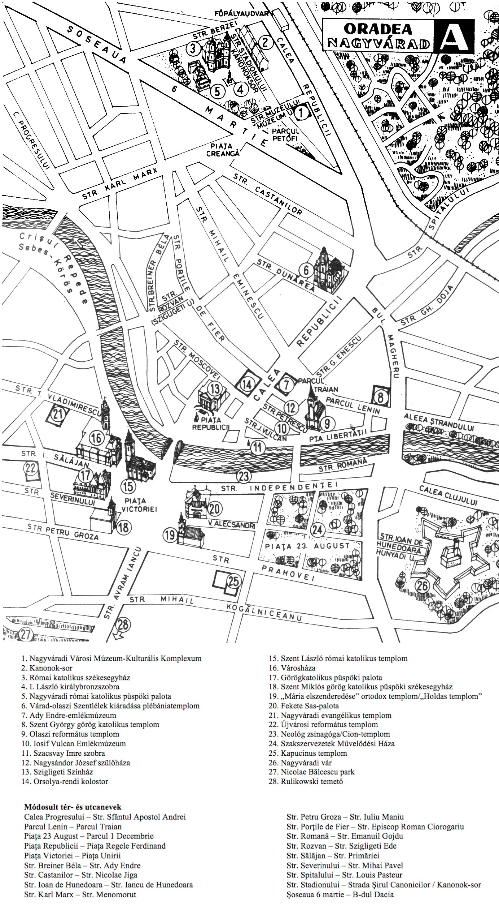
Nagyvárad Bihar megye (județul Bihor) székhelye, „Erdély kapuja”, a Sebes-Körös két partján a Réz-hegységtől idáig húzódó dombvonulatok alján, 126 m magasságban fekszik. Lakosainak száma 196 000.
A várost a püspökséggel együtt 1093-ban I. László király alapította, s ő volt az első magyar király, akit a várban emelt székesegyházba temettek el. Janus Pannonius váradi kanonok le is írta a király márvány síremlékét.
Váradot először a mongolok pusztították el (1241–42), az Anjouk alatt azonban ismét felvirágzott. Az alapító király életnagyságú lovas bronzszobrát, Kolozsvári Márton és György szobrászok remekművét 1390-ben, Zsigmond jelenlétében avatták fel. A Kolozsvári testvérek készítették István, László és Imre gyalogszobrát is.
Nagyvárad legfényesebb időszaka a reneszánsz volt, ugyanis Vitéz János püspök, majd Csezmicei János (Janus Pannonius) idejében élénk irodalmi élet színhelye lett.
Az első török támadás 1474-ben érte, amikor Ali szendrői basa feldúlta. Újjáépülése után Dózsa György hadai sikertelenül ostromolták, s később a kivégzett parasztvezér testének egy darabját a váradi vár kapujára tűzték elrettentésül. Közvetlenül II. Rákóczi György halála után, 1660-ban a török elfoglalta Jenő várát, majd Váradot. A város és a vár romhalmaz lett, a püspöki székesegyházzal és épületekkel együtt. Ekkor pusztultak el a Kolozsvári testvérek bronzszobrai is. A védőkből csak háromszázan maradtak életben, akiknek a török megkegyelmezett és a váradi diákokkal együtt elvonulhattak Debrecenbe.
A császári seregek 1692-ben szabadították fel a várost, amelyet a kegyetlen ostrom és a 32 évi megszállás úgy elpusztított, hogy az egykorú feljegyzések szerint mindössze 21 lakható háza maradt. A következő évben a becsapó tatárok ezt is feldúlták, olyannyira, hogy még az 1720. évi összeírás szerint is csak 216 polgára volt Váradnak.
Az 1848. évi forradalom, illetve szabadságharc idején Váradon működött a magyar hadsereg felszerelésének műhelye, a legnagyobb fegyvergyár. A század második felében meginduló iparosodás minden vonatkozásban meggyorsította a város fejlődését, s a századfordulóra mozgalmas életű kereskedelmi és kulturális központtá vált. A Holnap Társaság megalakulásával (1908) és a két Holnap-antológia megjelentetésével az új magyar irodalom egyik bölcsője lett.
Nagyvárad neve ekkoriban „Körös-parti Párizs” volt. A román kultúra fejlődésében is fontos szerepet játszott, Iosif Vulcan „Familia” című folyóiratának munkatársai között több nagyváradi is volt. A város kulturális jelentőségét a két világháború között is megőrizte.
A második világháború után modern városnegyedek építésével és hatalmas gyárüzemek telepítésével folytatódott a város nagyarányú fejlesztése.
Emanuil Gojdu sétány 39–41. szám/Aleea Emanuil Gojdu nr. 39-41
A múzeumot az 1872-ben alakult a Történelmi és Régészeti Társaság közadakozásból építtették 1897-ben. A nagyváradi várban helyet kapó múzeumnak gazdag történeti, természettudományi és néprajzi anyaga van, képzőművészeti gyűjteményében régi magyar és modern román művészek művei, valamint eredeti Dürer-metszetek is megtalálhatók. Ornitológiai gyűjteménye és könyvtára is híres.
Tovább a Városi Múzeum-Kulturális Központ honlapjáraKanonoksor 7–25. szám/Șirul Canonocilor nr. 7-25
Az egykori váradi kanonokok palotasora – a Szent László székesegyház és a püspöki palota mellett – szerves része Nagyvárad barokk negyedének. A 253 méter hosszú folyosó 56 pillérből áll és 10 épületet köt össze. A hosszan elnyúló homlokzati árkádos folyosó boltozott térsora egyedi térhatást nyújt. Az épületegyüttest az akkori püspök, Patachich Ádám megbízásából és Franz Anton Hillebrandt tervei alapján építették, a papok számára. Jelenleg magánlakások vannak benne.
Bővebben lásd:
lexikon.adatbank.transindex.ro www.welcometoromania.eu WikipédiaKanonoksor 7. szám/Șirul Canonocilor nr. 7
Románia legnagyobb barokk stílusú temploma. Alapkövét 1752-ben Forgách Pál püspök helyezte el, építését Patachich Ádám püspök folytatta. 1780-ban fejezték be. A kéttornyú, pompás barokk templomot Giovanni Battista Ricca olasz építész tervezte. Hajója 70 m hosszú, 30–40 m széles, falait carrarai és vaskohi márvány borítja. A Ricca által megkezdett építkezést Franz Anton Hillebrandt fejezte be. Belső tere monumentális, bazilika jellegű. Orgonáját Mária Terézia adományozta. Kupola freskóját Johann Nepomuk von Schöpf festette.
A Mária mennybevitelét ábrázoló főoltárkép Vincenz Fischer munkája. A székesegyházban látható a gótika és a reneszánsz kor szép alkotása, Andreas Scolari (†1426) és Thurzó Zsigmond (†1512) váradi püspök, valamint Ipolyi Arnold püspök (†1886) sírköve. Koronás hermában őrzik azt a Szent László-ereklyét, amelyet egy évben egyszer tesznek közszemlére, egy mellékoltáron. A templom jobb oldalfalában színes dombormű alatt látható az a hadiszekerce, amely a király sírjában volt.
Bővebben lásd:
lexikon.adatbank.transindex.roKanonok sor 7. szám/Șirul Canonocilor nr. 7
I. László királybronzszobra jelenleg a székesegyház előtt áll. Tóth István szobrászművész alkotását eredetileg 1893-ban a város főterén állítottak fel, ám 1923-ban a városvezetőség áthelyezte jelenlegi helyére. A főtéren a helyére I. Ferdinand lovasszobrát állították.
Bővebben lásd:
www.kozterkep.hu 1 www.kozterkep.hu 2Kanonok sor 2./Șirul Canonocilor nr. 2

A 18. századi Várad legkiemelkedőbb barokk műemléke, Patachich Ádám püspök pompaszeretetét tükrözi. A bécsi Franz Anton Hillebrandt tervezte, alapkövét 1762-ben tették le és 1770-re készült el. Kétemeletes, manzárdtetős építmény, keletre néző homlokzatának középrizalitját timpanon koronázza. Az egykori nagy Szalon, a díszterem mennyezetét id. Storno Ferenc soproni festő freskói díszítik.
A palota előudvarában a jótékony Szaniszló püspöknek, „a szegények atyjának” bronzszobra látható – szintén Tóth István alkotása.
A palotát övező hajdani püspöki kert ma egzotikus fafajok parkja. Az itt álló régi fatemplomot a múzeum hozatta ide. A palotát 1971-ben restaurálták és a Körösvidéki Múzeumot (Muzeul Țării Crișurilor) rendezték be benne. A múzeumnak értékes történelmi, népművészeti és természettudományi gyűjteménye van. A képzőművészeti gyűjteményben látható Benczúr Gyula Schlauch Lőrinc bíboros arcképe című festménye, amely az 1900-as párizsi világkiállításon nagydíjat nyert.
Bővebben lásd:
www.muvelodes.ro www.mtariicrisurilor.roa Köztársaság u. sarkán/str. Republicii
A barokk korszak jellegzetes építménye. A szép, karcsú tornyú templom 1788-ban még a ferenceseké volt, 1876-ban átépítették. Szent István-oltárképet ekkor festette Munkácsy Mihály hajdani mestere, Szamossy Elek.
Bővebben lásd:
lexikon.adatbank.transindex.roTraian park/Parcul Traian
A múzeumnak otthont adó pavilon egy kis háromszögű parkban áll, valamikor közkedvelt cukrászda (a Müller vagy „Mülleráj”), s Ady kedvelt tartózkodási helye volt. A múzeumot Tabéry Géza jeles váradi író alapította. Sok Ady-emlék látható benne.
A múzeum előtt a költő mellszobra áll, amelyet Vetró Artúr készített.
Bővebben lásd:
www.welcometoromania.eu www.kozterkep.huTraian park 20. szám/Parcul Traian nr. 20
A templom hajdan jezsuita kolostor volt, majd görögkatolikus papnevelde. 1792-ben II. Lipót császár alapította.
Bővebben lásd:
Oradea TravelEzredévi Emléktér 40. szám/Piața Libertății nr. 40
I. József császár uralkodása alatt, 1787-ben épült barokk stílusban, 1880-ban restaurálták. Mögötte zárt kertben kis kápolnaszerű építmény áll, a török megszállás után épült első szerény püspöki templom, később a rutén görögkatolikusoké lett.
Bővebben lásd:
Oradea Travel www.nagyvaradolaszi.roIosif Vulcan u. 14. szám/str. Iosif Vulcan nr. 14
Iosif Vulcan román költő a „Familia” című román irodalmi lap megalapítója, a Kisfaludy-társaság tagja volt. Régi lakhelyén található most az emlékmúzeum, ahol személyes tárgyai és pályafutásának dokumentumai láthatók. Mellszobra a múzeum előtt áll.
Bővebben lásd:
Oradea TravelEzredvégi emléktér/Piața Libertății
Szacsvay Imre (1819–1849) a debreceni kormány jegyzője volt s egyben Nagyvárad képviselője. 1849. október 24-én végezték ki az osztrákok a pesti Neugebäudéban, mert aláírta a függetlenségi nyilatkozatot. Margó Ede készítette szobrát 1907-ben avatták fel a Körös-parton, 1937 júniusában lebontották, majd a bécsi döntést követően, 1942-ben visszaállították eredeti helyére.
Bővebben lásd:
www.kozterkep.huAurel Lazăr u. 5. szám/str. Aurel Lazăr nr. 5
Az Aradon vértanúhalált halt hős honvédtábornok itt töltötte ifjúkorát. A házon emléktábla van.
Ferdinánd tér 1. sz./Piața Regele Ferdinand nr. 1
Román és magyar tagozatú együttese van. A színház épületét Fellner és Helmer bécsi színházépítők tervezték. 1900. október 15-én nyílt meg. Jelenleg a színház ad otthont az Állami Filharmóniának is.
A színház előtt áll a váradi születésű Szigligeti Ede (családi nevén Szathmáry József, 1814–1878) kiváló népszínműíró szobra, Margó Ede műve.
Bővebben lásd:
lexikon.adatbank.transindex.ro www.szigligeti.roMoscovei u. 1. sz./str. Moscovei nr. 1
Legrégibb része 1773-ból, a Fő utca homlokzat 1857-ból, az oldalhomlokzat 1877-ból származik. Az egytornyú puritán építmény eltér a többi díszes barokk templomtól.
Bővebben lásd:
lexikon.adatbank.transindex.roSzent László tér/Piața Unirii
A tér északi részén, egytornyú, aránylag dísztelen, szerény, vidékies jellegű építmény. A török megszállás után második püspöki székesegyháznak épült, 1717-től 1733-ig. Ismeretlen mestere a vidékies barokk stílus képviselője. A templom tornya csak 1790–1800 között készült el. A templom szentélyének külső falán emléktáblát helyeztek el a török uralom alól való felszabadulás 200. évfordulójára. A templom belseje szerény. Főoltára a XVIII. század harmincas éveiből való. Szent László képét Friedrich Silcher bécsi művész 1863-ban festette. A mennyezet freskóit (Szent László életéről) Tury Gyula festőművész készítette.
Bővebben lásd:
lexikon.adatbank.transindex.roSzent László tér 1. sz./Piața Unirii nr.
Hatalmas óratoronnyal díszített, eklektikus palota. Az 1900-as évek elején épült.
Bővebben lásd:
lexikon.adatbank.transindex.roSzent László tér 3. sz. – Pavel u. 1. sz./Piața Unirii nr. 3 – str. Episcop Pavel nr. 1
Neobizánci stílusban épült 1905-ben id. Rimanóczy Kálmán tervei alapján. 1952-ben a Népművészeti Iskolát, illetve a Városi Könyvtárat költöztették az épületbe (később a Tartományi-, majd Megyei Könyvtárat helyezték ide). 1992-ben a görögkatolikus püspökség visszakapta az épületet, és 2005-2006-tól újra használatba vette. 2018 augusztusában a palota kigyulladt, az épület nagy része leégett. Újjáépítse jelenleg is folyik.
Bővebben lásd:
lexikon.adatbank.transindex.ro Oradea TravelSzent Miklós görög katolikus püspöki székesegyház a Szent László tér nyugati oldalán áll. Bejárata oldalt, a Iuliu Maniu utca felől nyílik. A székesegyház 1800-ban épült, de harminchat évre rá le is égett. Az újjáépítéskor kapta mai rendkívül díszes kiképzését. Szentélye és hajója nemesen klasszicizáló. Díszes barokk toronysisakja van. Belül szép ikonosztáz látható.
Bővebben lásd:
Oradea TravelSzent László tér 2. sz./Piața Unirii nr. 2
Barokk–klasszicizáló stílusú, egytornyú, szimmetrikus homlokzatú, dúsan tagolt, jól érvényesülő építmény. Empire stílusú tornyának alsó részén van a német Ruppe által tervezett, 3 m átmérőjű, aranyozott forgó hold, mely a holdfázisokat mutatja. A templom alapkövét 1784. november 9-én József császár jelenlétében rakták le.
Bővebben lásd:
lexikon.adatbank.transindex.roSzent László tér 2-4. sz., Függetlenség u. 1. sz., Vasile Alecsandri u. 8. sz./Piața Unirii nr.2-4, str. Independenței nr. 1, str. Vasile Alecsandri nr. 8
A palotát 1909-ben építették. Három utcára nyíló üvegtetejű passzázsokkal, sok üzlettel, keleti mór elemekkel díszített, szecessziós építmény. Emléktábla tudósít arról, hogy helyén állott valamikor a Fekete Sas Szálló, s 1798. május 26-án Nagyváradon itt tartották az első magyar színielőadást. Itt volt 1849-ben Paskievics hercegnek, a cári csapatok vezérének főhadiszállása is.
Bővebben lásd:
lexikon.adatbank.transindex.roKörös u. 26. sz./str. Tudor Vladimirescu nr. 26
Evangélikus templom a Városi Tanács épülete mellett a Körös partján nyíló utcában áll. 1812-ben épült.
Bővebben lásd:
www.evangelikus.ro Oradea TravelKálvin János u. 1./ str. Calvin Jean nr. 1
Újvárosi református templom kéttornyú, oszlopcsarnokos, impozáns építmény; szentélye 1825–1853 között, tornya 1872-ben készült el.
Bővebben lásd:
lexikon.adatbank.transindex.roKossuth Lajos u. 1. sz./str. Independenței nr. 1
Mór stílusban épült, 1878-ban. Busch Dávid városi mérnök tervezte. Az 1918. december 1. park, a hajdani vásártér környéke volt a kereskedelem központja. A teret a második világháború után parkosították.
Bővebben lásd:
lexikon.adatbank.transindex.roDecember 1 tér 1. sz./Piața 1 Decembrie nr. 1
A szobor mögött kelet felé, a parkban áll. Különleges modern betonépítmény, homlokzatán mozaikdíszítéssel.
Kapucinus u. 21. sz./str. Gen. Moșoiu nr. 21
A kapucinusok templomát és az egykori kolostort gróf Csáky Imre püspök építtette 1827-ben. 1836-ban leégett s két évre rá újjáépítették. A templom tervét Bartel György váradi építész készítette, neoklasszikus–empire stílusban. A kolostorban élt Fessler Ignác Aurél szerzetes, történettudós, aki később evangélikus püspök lett.
Bővebben lásd:
www.welcometoromania.eu www.muemlekem.huNagyváradi vár – ez a mai Várad legrégibb emléke, alaprajza ötágú csillag. Építését Báthori István fejedelem kezdte és Bethlen Gábor fejezte be.
Északnyugaton van a Csonka-bástya, északon a Veres-bástya, keleten az Aranyos-bástya, délen a Királyfia-bástya és délnyugaton a Bethlen-bástya. A várban az egykori székesegyház helyén egy használaton kívül álló barokk templom áll. A XI. századi földvárat a középkorban fejlesztették kővárrá. A XVII. század elején kapta mai ötszögű alakját. Elpusztult gótikus székesegyházának köveit is beépítették a falakba.
Bővebben lásd:
www.lovagkiraly.org Oradea Travel www.welcometoromania.euZsidó deportáltak utcája 79. sz./str. Evreilor deportaţi nr. 79
Hajdan a Rhédeyek kertje volt. 1804-ben gróf Rhédey Lajos 6000 Ft-os fenntartási alapítvánnyal megnyitotta és a város közönségére hagyta. Itt található a stadion, az állatkert, a gyerekváros és a Rhédey-kápolna, utóbbi a Ferenczy István szobrászművész által készített, remekművű, klasszicizáló márvány szarkofággal.
Ceyrut u. 1. sz./str. Ceyrat nr. 1
Itt látható a névadó, Rulikowski Kázmér cári dzsidás százados 1872-ben felállított gránit síremléke. A lengyel szabadsághős – mint cári tiszt – 1849-ben a magyar szabadságharc mellé állt, ezért elfogták és felakasztották. A második világháború végén a környékbeli harcokban elesett szovjet és román katonák emlékét a hősök obeliszkje őrzi. E temetőn átsétálva jutunk a régi zsidótemetőhöz, amelynek néhány rendkívül díszes síremlékét is érdemes megtekinteni.
A város és környékének panorámája a vasútállomás feletti szőlőhegyekről, legszebben a Kálvária-hegy (201 m) csúcsán levő Ciuperca (Gomba) vendéglőből látható (Graurilor u. 80. sz./str. Graurilor nr. 80.)
A vendéglő kínálatáta bővebbenA fürdőkre már csak autóbusszal lehet eljutni. Régebben vonattal is ki lehetett menni, Rontó (Rontău) vasúti megállójánál kellett leszállni. A vasútállomás mellett áll a Báthori-kápolna. Itt ölték meg a hajdúk Báthori Gábor fejedelmet, mert megtudták, hogy Váradot a török kezére készül átadni (ezzel akarta kegyüket elnyerni Bethlennel szemben). Félixfürdő (Băile Felix) (a középkorban Szent Márton fürdője) korszerű iszapfürdője 1906-ban nyílt meg. A betegeket iszappakolásokkal gyógyítják. Kádfürdője és nyitott medencéi is vannak, téli strandja fűtött, állandóan működik. Nagy üvegházait természetes hévíz fűti, egzotikus növényei megtekinthetők
A fürdőhelyről bővebben lásd:
www.bailefelix.netMájus 1 fürdő, Püspökfürdő, hajdan Szent László fürdője (Băile 1 Mai) Félixfürdőtől 2 km-re, Hájó – a középkori „Hévjó”, azaz „meleg patak” – község határában fekszik. Hévizű tavában reliktum növényként megtaláljuk a Nimphaen lotus thermalist és egy különleges őshonos halfajtát. Két radioaktív fürdő azonos gyógyhatású, az anyagcsere és az idegrendszer zavarai, női betegségek, epehólyag-bántalmak, bőrbajok esetében javallják őket. Püspökfürdőn kád- és medencefürdő, három uszoda működik, de a legkedveltebb az ún. hullámfürdő.
Bővebben lásd:
www.turismbaile1mai.comNagyváradot délkeleti irányban a vár mellett Félixfürdő felé is vezető úton hagyjuk el. Az útvonal a Király-erdő déli nyúlványain halad át a régi középkori hadi út nyomát követve. Drágcsékétől (Drăgeşti) kezdve úgyszólván valamennyi faluban jobbára XIX. századi görögkeleti templomot találunk. Robogány (Răbăgani) kénsavas hévízforrásáról is nevezetes.
A Fekete-Körös partján, a Bihar-hegység és a Béli-hegyek közötti szép medencében, 200 m magasan fekszik, 10 200 lakosa van.
Hajdan a váradi püspök tulajdona és legkedvesebb tartózkodási helye volt. Ladomér püspök 1270-ben V. Istvántól bányászati jogot kapott. A XII. század végén már gazdag vas- és ezüstbányák működtek a környéken. Belényes első szabadalmát Vitéz János püspöktől kapta. Lakosai főleg szőlőművelők, 1600-ban már gazdag polgársága is volt, ötvösök, takácsok stb. A XVI. század végétől a törökök többször is feldúlták, majd Váraddal egyidejűleg el is foglalták. 1777-ig a váradi katolikus püspök volt a földesura, ekkor azonban Mária Terézia a görögkatolikus püspökségnek adományozta. Vulcan Sámuel püspök 1810-ben kastélyt építtetett itt, s 1828-tól görögkatolikus gimnázium is működött a városban.
Katolikus temploma 1725-ben, a református 1782-ben, a görögkatolikus 1810-ben, a görögkeleti pedig 1815-ben épült. Román kori templomának romja áll. Múzeumának népművészeti anyaga figyelemre méltó.
A Belényes körüli falvak közül Váradfenes (Finiș) a közelében levő Béla-vár romjáról, Magyarremete (Remetea) pedig román kori templomáról nevezetes, amelynek értékes XIV. századi freskói Szent László király életét ábrázolják.
A magyarremetei falképekről bővebben lásd:
www.lovagkiraly.orgMagyarremetétől 4,5 km-re van Mézged (Meziad), itt találjuk Erdély egyik legnagyobb cseppkőbarlangját. Előcsarnokában a barlangot feltáró Czárán Gyula emléktáblája látható.
A mézgedi cseppkőbarlangról bővebben lásd:
www.traveltotransylvania.huBiharfüred a váradi görögkatolikus püspök üdülője volt. Az alpesi klímájú üdülőhely 1102 m magasan, a Jád-völgy forrásainál, védett völgykatlanban, ősfenyvesek között fekszik. Innen további szép kirándulásokat tehetünk
Belényestől tovább dél felé, 6 km-re Drăgănești után balra kitérhetünk Vasaskőfalva felé. A szép fekvésű községből a Bulz-völgyön keresztül szerpentinek vezetnek fel az 1200–1400 m magasan levő karsztvidékre.
Nagyváradtól 85 km-re Szedresnél (Sudrigiu) kell letérni, 14 km-es aszfaltút vezet a cseppkőbarlanghoz. 1975-ben fedezték fel, 1 km hosszú, ebből 500 m látogatható. Villanyvilágítás és betonlépcsők könnyítik a kb. 1 óra hosszat tartó bejárását. Jelenleg a környék legérdekesebb látványossága. „Medvék barlangjá”-nak (Peștera Urșilor) is nevezik, mert a barlangi ősmedve (Ursus spelaeus) csontjainak lelőhelye.
A cseppkőbarlangról bővebben lásd:
www.pesteraursilor.roRény község 1753-as fatemplomát érdemes megtekinteni.
Emanuil Gojdu tér, 41. sz., J épület, Nagyvárad
A Turisztikai információs központ honlapja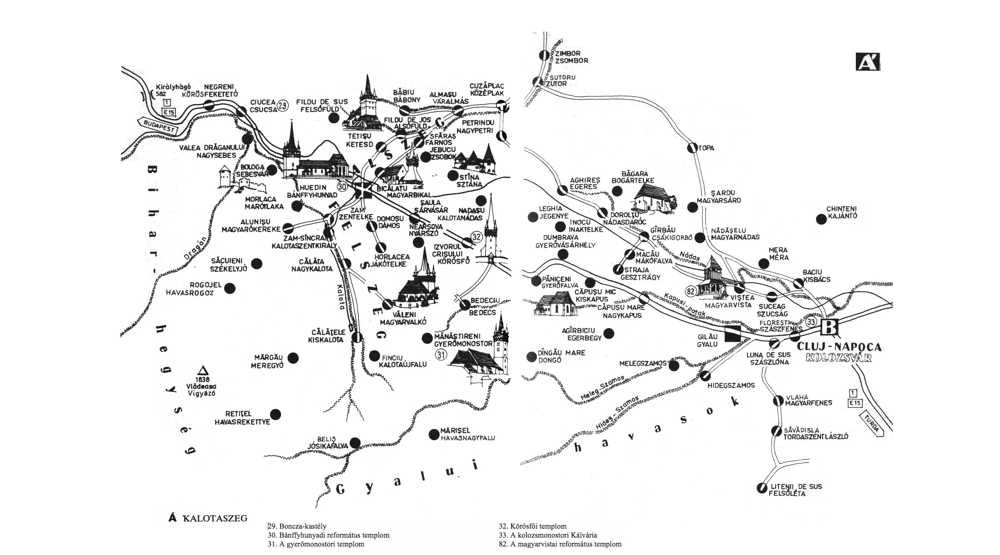
Nagyváradot az E 60-as (DN 1) útvonalon, a város keleti végén, a Kolozsvári úton (Calea Clujului) hagyjuk el. A Kolozsvárig tartó útszakasz 152 km. A Sebes-Körös széles völgyében utazunk tovább.
Fugyivásárhely (Oșorheiu) 1335-ben a Fudy család által alapított pálos, monostoráról nevezetes. Református temploma középkori eredetű. Ortodox temploma a XVIII. században épült.
Mezőtelegd (Tileagd) Mezőtelegd gótikus stílusú, ma református temploma szentélyében a Telegdyek sírboltjának vörösmárvány reneszánsz fedőlapja látható, a család címerével. A szentély falában 1507-ből származó reneszánsz betűs építési felirat van. Igen szépek a templom XV. századi falfestményei. Telegdnél a Körös déli partjáról a hídon az északi partra megyünk át s ezen maradunk végig.
Pusztaújlak és Örvénd (Uileacu de Criș și Urvind) református temploma, valamint Alsólúgos (Lugașu-de-Jos) görögkeleti temploma XVIII. századi.
Élesd (Aleșd) a Sebes-Körös völgyében fekvő, 7500 lakosú város. 1968-ban kapott városi rangot, azóta sokat fejlődött, kisebb gyáripari központ lett. Katolikus templomát 1717-ben, a református templomot 1852-ben építették.
Tinód (Tinăud) községtől kezdve a hegyek közelebb nyomulnak az úthoz. Tinód temploma 1565-ben épült. Köröstopa (Topa de Criș) előtt az út elhagyja a Körös völgyét és máris megérkeztünk a Király-hágóhoz. A Sebes-Körös szorosában. A vasútvonal követi a Körös szorosát.
Útvonalunk Köröstopa után a Király-hágó teteje felé tart. Nagybáród (Borod) a báródi kapitányság (határőrség) egykori központja. 1291-ben már püspöki jegyzékben szerepelt, 1465-ben magyarok lakták. Az 1800-as évek elején 300 szabad határőr élt itt. Várad eleste után a magyar lakosság elhagyta.
Báródsomos (Cornițel) közvetlenül a Király-hágó alatt fekszik, görögkeleti temploma 1740-ből való.
A Király-hágó (Piatra Craiului) 582 m magas hágónyereg a Bihar- és a Meszes-hegység között. A szerpentin innen lefelé vezet a Sebes-Körös vizéhez. Bucsa (más néven: Királyhágó község, románul Bucea), a tetőtől 3 km-re fekszik.
A szerpentin innen lefelé vezet a Sebes-Körös vizéhez.
Körösfeketetó (Negreni, Fecheteteu, Lacul negru) – a Szent Paraschiva napján ősszel, októberben megtartott néprajzi érdekessége miatt közkedvelt vásáráról híres, hol sok régi és újabb népművészeti tárgy vásárolható. Csucsa (Ciucea) fontos közlekedési csomópont.
Nagysebes (Valea Drăganului) A Csucsa után következő Csucsai-szorosból déli irányban vezet ide elágazás, a falun túl turistaházat találunk.
Kissebes (Poieni) környékén nagy gránit- és dacitbányák működnek.
Dél felől a Sebes völgye (Valea Sebeșului) torkollik ide. Ez a Sebes-Körös harmadik forrásága, innen keletnek Körösfőig a nép a vizet „Körös patakának” nevezi.
Sebesvár (Bologa) falu a Sebes vizének bal (nyugati) partján, ősrégi, történelem előtti lakóhely, később dák telep volt. Itt láthatók Erdély és Kalotaszeg végvárának, Sebesvárnak maradványai. A várat a XIII. században építették, de mára csak falmaradványok és egy kör alakú torony látható. A prehisztorikus és a dák telep a várrommal szembeni dombon volt, és itt állt Resculum római erődítmény is.
A Körös szorosát elhagyva, a táj szétterül és beérünk a Kalotaszegi-medencébe (Depresiunea Huedinului). Festett, kazettás mennyezetű, faragott szószékű fiatornyos templomaival, kopjafás temetőivel, régi faragott kapuival, ma már sajnos ritkán látható, szép népviseletével Erdély egyik legvonzóbb s legérdekesebb vidéke. Kalotaszeg egyházi műemlékei a középkor katolikus építőművészetének tanúi. Megtaláljuk rajtuk és bennük a román kori és a gótikus építészet összes stílusjegyeit. Ezt a sokszor igen színvonalas igényű keretet egészítette ki a – zömében protestáns – magyar nép eredeti népi ízlésével. A templomok belső tere színes, hangulatos kiképzésük a XVIII. századi jeles népi asztalos-festők ízlését dicséri. A kazettás mennyezetek félig-meddig szükségből készültek. Az egykori bolthajtások ugyanis a háborús pusztítások következtében beomlottak, s a nép nem tudta őket újjáépíteni. Lapos famennyezettel pótolták hát, s díszítésével ünnepélyessé tették a fehérre meszelt puritán templombelsőt. Az erdélyi úri házak és kastélyok kazettás mennyezete szolgálhatott mintául.
A románság a kihalt magyarság több templomát átvette, úgy, ahogy a magyarság a szászokét. A románság önálló művészeti alkotásai a gótikus stílushatást mutató kalotaszegi fatemplomok. Lehetséges, hogy a magyarság is épített hasonló fatemplomokat. A XVIII. századi, mesteri alkotások (pl. Felsőfüld és Egeres román templomai) tükrözik azt az erdélyi jellegzetességet, hogy itt a stílusok sokszor megkésve jelennek meg. Ezt példázza a hegyes tornyú, négy fiatornyos, magas, meredek tetejű, kizárólag fából épült görögkeleti (ortodox) templomok nagy száma. Nemcsak Kalotaszegen, hanem Erdély más részein is megtalálhatók, a legszebbek talán a máramarosiak.
A temetők (a templomok körüli ún. cintermek) a kalotaszegi mesterek által faragott kopjafák múzeumai. Sajnos számuk fogyóban van.
A kalotaszegi falvak képe a második világháború után részben előnytelenül megváltozott. Szép öreg házak, etnográfiai kuriózumok ma már csak az eldugott, vagy a havasalji román lakosságú falvakban találhatók. A falvakban nagyjából ugyanazok a pallérépületek, vaskerítések stb. szaporodtak el, mint Magyarországon.
Nagyon megfogyott a régi, szép, faragott kiskapuk száma is. A viseletet kincsként őrzik, de többnyire csak a ládafiában, kérésre büszkén mutogatják. Egyes falvakban ünnepnapokon még lehet látni régi ruhákat, sőt festett bútorokat is. A régi népviselet legszebb darabjai [a varrottassal díszített (válfüs) ing, az elöl felhajtott, széles, színes szegélyű szoknya, a muszuj és a gyöngyös párta] a kolozsvári és más néprajzi múzeumokban láthatók. Kalotaszegen ma is készítenek ún. írásos párnákat eladásra. Nyáron a nők a kapuk előtt kézimunkáznak és az eladó választékot a kerítésre akasztják. Sajnos a kézimunkák már nem a régiek, sok ízléstelen, értéktelen, giccses darab is látható.
Kalotaszeg északi felét Alszegnek, déli felét Felszegnek nevezik. Látnivalóikat Bánffyhunyadról és Körösfőről kiindulva lehet bejárni. A nyugati részekre Kapus és Gyalu szálláshelyeiről érdemes kirándulni.
Kalotaszeg központja Bánffyhunyad (Huedin). A mintegy 9000 lakosú város régi település, lakóinak egy részét tatár eredetűnek tartják. Élénk kereskedelme van, a havasi lakosság itt cseréli ki a terményeit. A környező nagy erdőségek miatt főleg faipara fejlődik. A történelmi és néprajzi múzeum (Str. Horia 5.) megtekintésre érdemes, gazdag gyűjtemény.
Bánffyhunyad után a Körös forrásáig állandóan emelkedik az út.
Körösfő (Izvorul Crişului) a legismertebb népművészeti központ. Igen sok szép régi háza és faragott kiskapuja van. A falu feletti Riszeg-hegy (747 m) a környék legmagasabb csúcsa, ahonnan egész Kalotaszeg belátható.
Erős lejtőn érjük el Nagykapus (Căpușu Mare) helységet. A kézimunkák eladásáról híres kalotaszegi központ református templomának XIII. századi nyugati kapuját fürtös szőlőlevél és tölgylevél díszíti. Déli oldalának kőbélletű kisablaka szintén román kori eredetű. Sajnos belsejében a virágos részek kékre vannak átmázolva. A cinterem, a templom körüli temető déli bejárata és szakállszárítója 1755-ben készült, Beke István műve. Az itteni kempingből is meglátogathatunk néhány falut, s bennük a kalotaszegi késő gótika faépítkezésének alkotásait, melyeknek legszebbje a már említett felsőfüldi templom.
Gyalu (Gilău) már a Hideg-Szamos mentén fekszik. Régóta lakott hely, már a rómaiaknak is castrumuk volt itt. A XV. században, Budai Nagy Antal felkelése után Gyaluban építették fel az erdélyi püspökség várkastélyát. A kastély 1861-ben kiégett, azóta részben romos állapotban van. Megmaradt reneszánsz elemei közül a legszebbet, Geréb László (1452–1502) erdélyi püspök, későbbi kalocsai érsek címerét Kolozsváron őrzik.
Kolozsvár előtt az utolsó község Szászfenes (Florești) határában dél felé van az erdélyi püspök középkori várának, Leányvárnak romja. Az út mellett emlékoszlop örökíti meg a Gyalu és Szászfenes között történt, Erdélyre végzetes esemény helyét, ahol II. Rákóczi György erdélyi fejedelem 1660. május 22-én megütközött az Erdélyt elözönlő török haderővel. A fejedelem a csatában megsebesült, s Váradon meg is halt.
A szászfenesi római katolikus templom a XIV. századból való, értékes műemlék.
Kolozsmonostor 1895 óta Kolozsvárhoz tartozik.
Csucsa 407225/Ciucea 407225
Boncza-kastély (utóbb műemléknek nyilvánított Octavian Goga Múzeum) a község keleti végén, a domboldali szép parkban van. Itt tartózkodott az első világháború alatt Ady Endre, kinek felesége, Csinszka (Boncza Berta) a kastély tulajdonosának lánya volt. Ady halála után az épületet Octavian Goga (1881–1938) román költő és politikus vásárolta meg. Itt is van eltemetve a parkban álló mauzóleumban. 1967 óta az épület Goga-múzeum, ahol Ady-emlékek is láthatók. A múzeumot Goga özvegye gondozza. A parkban egy ide telepített régi román fatemplom látható.
A múzeumról bővebben lásd:
www.muzeuloctaviangoga.roKöztársaság tér 28. sz./Piaţa Republicii nr. 28
A templom Árpád-kori eredetű. Egykor Szent Erzsébetnek szentelték. Szentélyét a Bánffyak 1483-ban, kőtornyát a XV–XVI. században építették. Az erődtemplomokra jellemzően zömök. A hegyes toronysisak alatt védőfolyosó húzódik, s ennek sarkain négy fiatorony áll.
Hadi pusztítások során a templom középkori mennyezete beomlott, többször átépítették, végül népi stílusú festett kazettás famennyezetet kapott. Ennek újabb részét id. Umling Lőrinc szász asztalosfestő készítette a XVIII. század végén, régebbi része, amely a hajót fedi, 1705-ból származik. Faragott kő szószéke Drág templomából való, Sipos Dávid szobrász műve a XVIII. századból.
A templom előtt a kertben Avram Iancunak, az 1848–49-i román felkelés és a mócok vezérének szobra áll.
Magyargyerőmonostor 407370/Mănăstireni 407370
Hajója a XIII. századból való. Szentélye gótikus, magasított. Négy fiatornyos tornya alatt reneszánsz ajtókeret látható. A nyugati karzat tábláit 1753-ban Umling Lőrinc készítette, ugyanő alkotta 1774-ben a hajó és a szentély 82 tábláját. A szószékkoronán 1701-ben kezdődő renoválás-feljegyzések találhatók.
A templomról bővebben lásd:
lexikon.adatbank.transindex.roKőrösfő 407340/Izvoru Crişului 407340
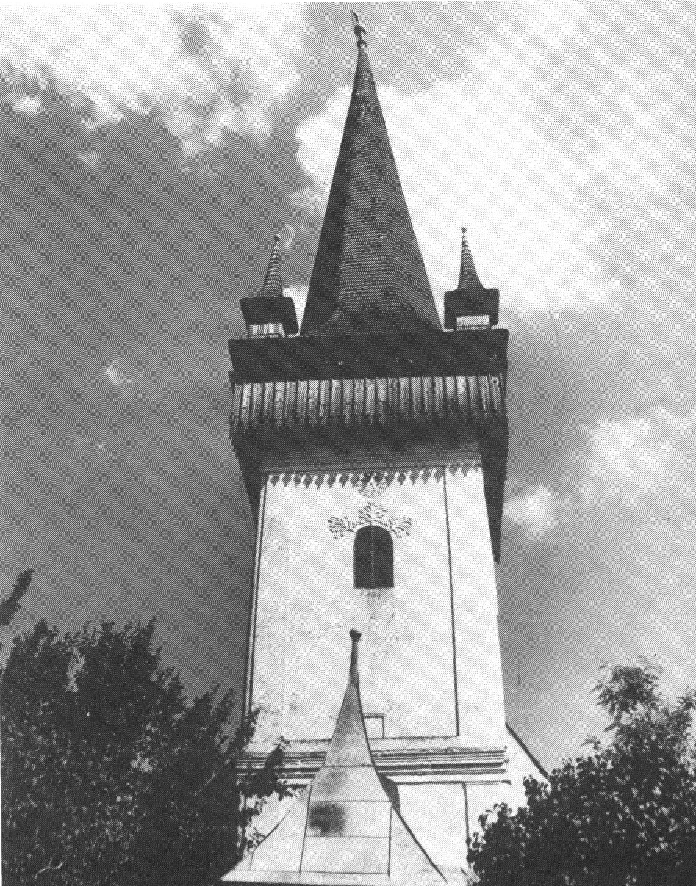
1700 körül épült. A falu feletti dombon áll és fallal van körülvéve. A falon belül találjuk a kopjafás temetőt. A templom kazettás mennyezetét id. Umling Lőrinc festette. Igen szépek a varrottas terítők, a padok és az úrasztala is. A négy fiatornyos toronyból gyönyörű kilátás nyílik az egész vidékre.
A templomról bővebben lásd:
WikipédiaMonostori út 12. sz./Aleea Grădini Mănăștur nr. 12
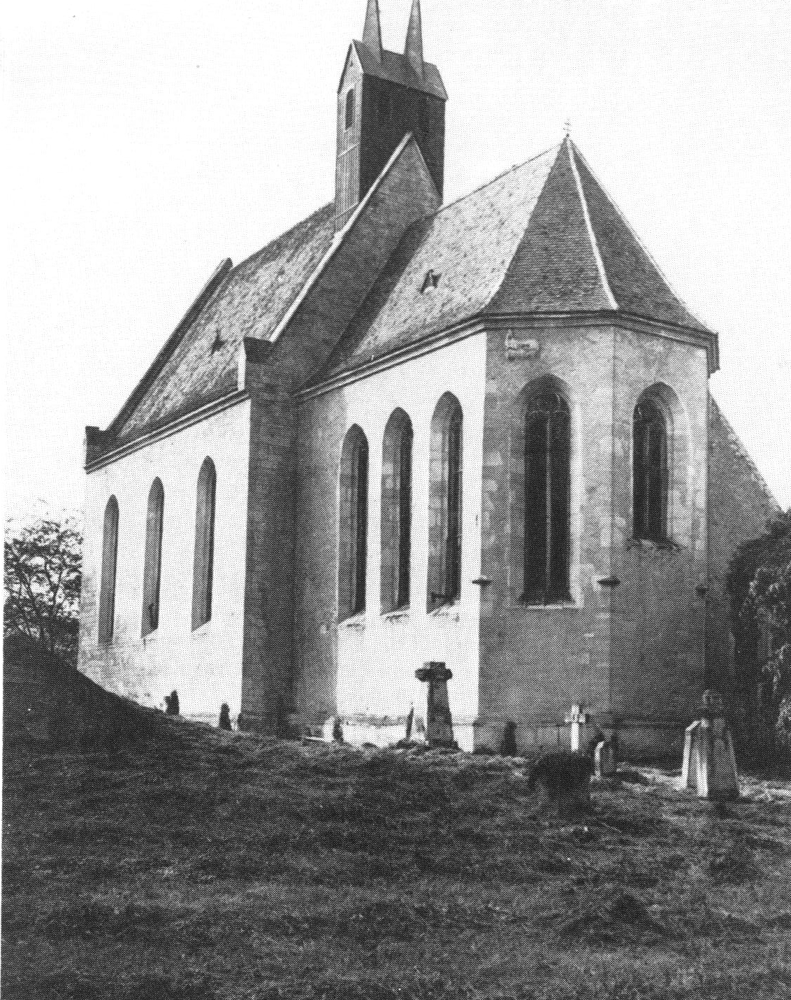
A kolozsmonostori Kálvária baloldalt, az út melletti kerek domb tetején áll. A híres történelmi szerepű kolozsmonostori bencés kolostor, apátsági templom és vár maradványa. Az apátságot a hagyomány szerint I. Béla király (1059–63) alapította. 1437-ben a Budai Nagy Antal-féle felkelés harci sikerei nyomán itt kötöttek az urak kétszer is egyezményt a felkelőkkel. A későbbi századok során az ősi templom teljesen elpusztult, csak XIV. századi szentélye maradt meg. Most görögkeleti román templom. A monostor viszontagságos történetét az emléktáblán olvashatjuk.
A Kálvária körüli domb az egykori vár erődítményének maradványa.
A templomról bővebben lásd:
www.kolozsmonostor.ro lexikon.adatbank.transindex.roSólyomkő várának romja Élesdtől észak felé 3 km-re, Sólyomkőpestes (Peștiș) falu határában, 8 km gyalogúttal érhető el Sólyomkő várának romja. A XIII. századi várat 1711-ben a császári csapatok rombolták le.
Ugyancsak észak felé 20 km-re, a Margittára vezető úton levő Feketeerdő régi üveggyáráról nevezetes.
Esküllő (Aștileu) Élesdtől délre, a Körösön túl, a vasútállomás mellett van. Határában található az Igric-barlang, ami híres régészeti lelőhely.
A vasútvonal követi a Körös szorosát.
Rév (Vadul Crișului) a Körös-szoros kirándulóközpontja. 1257-ben Pál országbíró, majd Kopasz nádor birtoka, Sólyomkővár tartozéka. 1316-tól a Bánffyak, később a Telegdyek, majd a Zichyek birtoka. A környék híres mészégetőhely. Görögkeleti temploma 1790-ből való. Magyar lakói neves fazekasok, áruikat a feketetói vásáron és egyebütt is megvásárolhatjuk. Itt van a vadregényes révi sziklaszoros, az ún. Tündérvár és a Zichy-cseppkőbarlang és menedékház.
Vársonkolyos (Șuncuiuș) határában több nagyobb cseppkőbarlang van, ezek közül a legépebb a közelmúltban felfedezett Szelek barlangja.
Bánlaka (Banlaca) görögkeleti temploma 1700 körül épült.
A Körös bal partján Remetelórév (Lorău), a Jád-völgy torkolata előtt, középkori révátkelőhely volt. Román temploma 1700 tájáról való.
Út vezet innen tovább a Jád völgyében is (Valea Iadului).
Csarnóháza (Bulz) környékén hatalmas sziklafalak és sok barlang található. Remec (Remeți), régi nevén Jádremete fakitermelési központ. A Les-völgynél hatalmas víztároló épült, körülötte kirándulóközponttal.
Az erdészeti műút innen a völgyön végig Biharfüred (Stâna de Vale) üdülőhelyre vezet, de csak váltakozva egy irányban járható, mert a sziklafalakba van robbantva.
Bánffyhunyadról északnak indulunk.
Ketesd (Tetișu) XIII–XIV. századi templomát Kós Károly építette át. Gyalui Asztalos János 1692-ben készített 22 mennyezetkazettáját megmentették.
Alsófüldnél elérjük az Almást. A folyó mentén nyugatra Felsőfüld (Fildu-de-Sus) román lakosságú faluban az 1727-ben épült templom merész toronysisakja érdemel figyelmet.
Alsófüldről tovább északkeletnek, az Almás mentén Váralmás (Almașu) monostorát 1238 előtt építették, 1241-ben a tatárok rombolták le. Köveit Pál országbíró az itteni Dezső-várba építtette be. A faragott kövekből néhány a református templomban van. A várból csak a torony maradt fenn, a falakat a Csáky grófok építkezéseihez lehordták.
Váralmástól nyugatra Bábony (Babiu) református templomát Kós Károly építette. A régi templom 1752-ból való szószéke, mennyezetrészletei, karzata látható benne.
Az Almás völgyében Kalotaszeg legészakibb falvaihoz érünk. Középlak (Cuzăplac) új református templomának déli bejárója előtt a régi, díszes templom faragott román kori oszlopfőit láthatjuk. A nyugati kapu gótikus, szintén a lebontott templomból származik. Középlaktól délre Nagypetri (Petrindu) református temploma XIII. századi, félköríves ablakkal, későbbi hajótest-toldással. Mennyezetkazettáit részben zilahi Asztalos István készítette 1713-ban. Umling Lőrinc további munkákkal bővítette 1769-ben. A karzat, a szószékkorona, a papiszék is az ő munkája (1770). A harangláb zsindellyel fedett, jeles ácsmunka.
Érdemes még a Zilah felé vezető úton elmenni Magyarzsomborig (Zimboru). Református temploma a XV. századból való. Hajóján a félköríves ablakok, a papi ülőfülke (sedilia) és a déli, befalazott ajtó kerete egykorúak. A szentségtartó fülke gótikus. A mennyezetkazettában a Sombori család címere és az 1759. évszám látható. A karzati mellvéd Umling Lőrinc munkája. A hajó falán Sombori Antal emlékköve pusztulóban van. A kő szószék kidei Sipos Dávid műve 1742-ből. A fából készült haranglábat átépítették. A Sombori-kastélyt is átalakították, ma orvosi rendelő.
Bánffyhunyadtól északkeleti irányban elindulva, Magyarbikal (Bicalatu) 1400-ban épült református templomában 188 mennyezeti kazetta Asztalos János, 57 tábla Umling Lőrinc munkája (XVIII. század). A szószék 1790-ből, az Umling készítette karzat 1794-ből való. A templom déli kapuja XVI. századi, a nyugati bejáró gótikus római maradványokból készült.
Farnas (Sfărașu) református temploma rendkívül díszes. 82 mennyezetkazettája, 11 padelő, 10 karzattábla, az úrasztala, a szószék Umling Lőrinc műve. A szentély oszlopdíszei középkoriak, Veres János sírfedőköve 1510-ből való.
A harangláb erkélyes, zsindely fedi, középkori harang van benne.
Zsobok (Jebucu) paplakának udvarán gótikus keresztelőmedence látható, mely a régi, 1490-ből származó templom utolsó maradványa.
Sztána (Stâna) református templomának hajója XV. századi, sok elvakolt gótikus részlettel.
A hajót átépítették. 78 festett mennyezetkazetta, sok írásos varrottas díszíti. A mennyezetkazetták közül 36 pótlás 1836–37-ből. Az 1743-ból való 42 tábla a hajóban Asztalos János műve, övé a legénykarzat alatti 10 gyönyörű tábla is. A szószékkorona és a papszék Umling Lőrinc munkája 1777-ből.
Sztánán, a híres „Varjúvár”-ban töltötte élete jórészét Kós Károly (1883–1977) író és építész. Művei az erdélyi magyar irodalom kiváló alkotásai. Kalotaszegről is több könyvet írt.
Kalotaszentkirályon (Sâncraiu) az egykori Bánffy-udvarház szomszédságában középkori eredetű református templom áll. 1762-ben épült, toronysisakjának nemes vonalát barokk dudor torzítja el. A toronyaljbejáró csúcsíves. A templom délnyugati porticusa 1742-ből való, feliratos.
Magyarókereke (Alunișu) a legnyugatibb magyarlakta falu Kalotaszegen. XIV. századi református templomának falai – a keletit kivéve – eredetiek. A templomban a szószékkorona 1746-ban, a karzattáblák 1786-ban készültek. A többi festett bútor is az Umlingok műhelyéből való. Magyarókerekéről lehet – tovább nyugat felé – Székelyjót érintve Havasrogozig jutni.
Havasrogoz felől, a kék turistajelzést követve, gyalog, mintegy másfél óra alatt mehetünk fel a Vlădeasa menedékházhoz, majd az 1838 m magas Vlegyásza csúcsára.
A Vlegyásza alján fekvő hegyvidéki, románok lakta falvak: Székelyjó (Săcuieu), Havasrogoz (Rogojel), Meregyó/Méregjó (Mărgău) stb. még őrzik a kalotaszegi építkezés ősi elemeit. Egykori magyar templomok, sok szép faragott kiskapu látható itt; még él a faépítkezés.
Meregyóból autóval tovább lehet menni délnyugatra Havasrekettye (Răchițele) községig. A helység közelében van a szép retyiceli vízesés. Innen erdészeti műút vezet a Meleg-Szamos és oldalága, a Kalinyásza völgyébe. Innen turistautakon bejárható a Csodavár (Cetățile Ponorului) hatalmas víznyelő barlangrendszer, a Szamos-bazár, a Meleg-Szamos forrásvidéke (Izvoarele Someșului), a Galbina nagy kőköze, vízesései, barlangjai, az Eszkimó-jégbarlang (Focul viu) stb. Az útvonalak elég nehezek, többnyire csak gyakorlott turistáknak valók. Szerpentinek vezetnek továbbá a Gyalui-havasokba, Béles / Jósikafalván (Beliș) Szamosfő felé. A Béles (Beliș)-patak fölött, a Fântinel nevű havasi fennsíkon esett el a márciusi ifjúság egyik vezére, Vasvári Pál, 1849. július 6-án.
Bélesen át visz a hegyvidéki út a Hideg-Szamos völgyébe is. Ezek páratlanul szép hegyi tájak. Az utak jó állapotban vannak.
Bélesről dél felé az Aranyos-völgy felső szurdokán át Topánfalvára juthatunk, ahonnan északkeletnek Torda, a Fekete-Körös völgyébe pedig Belényes felé, Abrudon át a Fehér-Körös felé Brád irányába, valamint Zalatnán át az Ompoly völgyén végig Gyulafehérvárra tehetünk szép hegyi utakat.
Kalotaszentkirálytól délkeletre, a havasok lábánál Magyarvalkó az a falu, ahol Kalotaszeg legszebb templomainak egyikét találjuk. A kőkerítéssel körülvett, bástyás református templomot a XIII. században építették, majd 1452-ben csúcsíves stílusban alakították át. Kazettás mennyezetét Umling Lőrinc és fia festette. A legtipikusabb harmonikus építménynek tartják. Tovább keletre Magyargyerőmonostor következik.
Bánffyhunyadról folytatva utunkat Kolozsvárra, Sárvársár (Saula) községnél letérhetünk délre.
Kalotadámos (Domoșu) református templomának hajója a XIII. századból való.
Szentélye gótikus, magasított. Négy fiatornyos tornya alatt reneszánsz ajtókeret látható. A nyugati karzat tábláit 1753-ban Umling Lőrinc készítette, ugyanő alkotta 1774-ben a hajó és a szentély 82 tábláját. A szószékkoronán 1701-ben kezdődő renoválás-feljegyzések találhatók.
Körösfő után kitérhetünk északnak, a Nádas mentén fekvő Nádas (Nădașu) kalotaszegi jellegű, szép, csúcsos tornyú, négyfiatornyos ortodox templomát érdemes megnézni.
Tovább, a Körös- és a Kapus-patakok vízválasztója alatt van a Sebes-Körös forrása. Itt van a körösfői kemping is. A hágó legmagasabb pontjáról észak felé menjünk, Jegenyefürdő (Băile Leghia) kedvéért. A fürdőtelep a főúttól 1,5 km-re, a falu 4 km-re van. A fürdő 550 m magasan fekszik, gyógyvize és a környékbeli vasláp gyógyiszapja a köszvényt, a vérszegénységet és a női betegségeket gyógyítja.
Ha a hágóról déli irányba indulunk a magyargyerőmonostori úton Bedecsre (Bedeciu) érünk. Református templomának hajója középkori, szentélye gótikus, kapuja is csúcsíves. Reneszánsz ablakai, XV. századi mérműves részletei, négy fiatornyos, körtornácos tornya van.
Gyerővásárhely (Dumbrava) református templomát 1831-ben lebontották, de a XV. századi falak egy része megmaradt.
Az új hajóban helyezték el a régi templom színes mennyezetét: a 82 táblát 1752-ben Umling Lőrinc, illetve 1772-ben Asztalos Tamási János készítette. Fennmaradtak a régi karzatok és a szószékkorona is, valamint az 1515-ből való Gyerőfy-címeres sírkő.
Inaktelke (Inucu) református templomának keresztelőmedencéje XV. századi. A festett szószékkorona Umling Lőrinc munkája 1783-ból. A faluban ezenkívül még több népi építészeti emlék is látható. Különösen érdekes egy 1888-ból való faragott kapun (utcaajtón) egy női alaknak a „kőkorszakban szokásos” ábrázolása.
Kiskapus (Căpușu-Mic) – itt volt a XVI. századi, de sajnos lebontott Gyerőfy-kúria. Reneszánsz faragványainak utolsó darabjai szanaszét hevernek. A falu református templomának hajója a XIII–XIV. században épült. Nyugati kapuja gótikus, felette négylevelű lóherés körablak. Déli kapuja körteidomú gótikus.
Szentélye 1503. évi toldás, a csúcsíves boltozaton pompás, Gyerőfy-címeres zárókő látható. Két gótikus mérműves ablak és Gyerőfy-címeres sírkövek is díszítik. A mennyezet 79 festett kazettája Umling Lőrinc munkája. A nyugati karzat 10 táblája 1742-ből való.
A templom ácsolt harangtornyocskája 1895-ben készült, Bot Márton felirattal.
A Kiskapuson át megközelíthető Dongó, a Nagykapustól délre fekvő Egerhegy, s a Nagykapustól északra található Gesztrágy XVIII. századi román templomai különös figyelmet érdemelnek. A gesztrágyi fatemplom különösen jellegzetes, 1730-ban épült.
Mákófalva vagy Mákótelke (Măcău) következik; itt is vannak még öreg házak. A templom feliratos köve 1646-ból való.
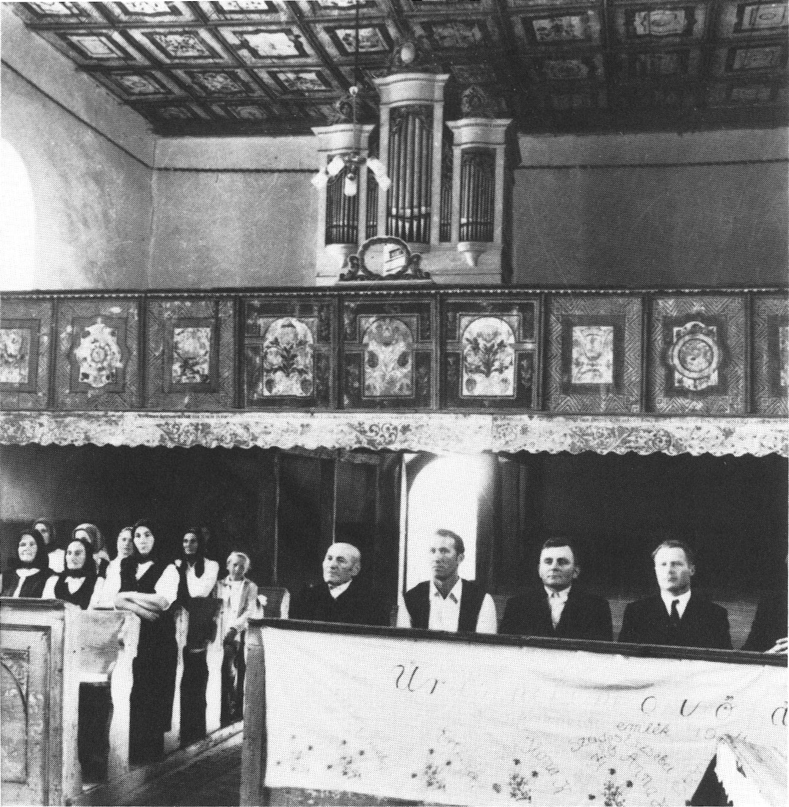
Gyalutól délnyugati irányba indulva, jó műúton érhetjük el a Meleg-Szamos vízzáró gátjainak és víztárolóinak festői táját. Innen felfelé a Funtinyel (Fântinel) nevű havasi fennsíkon esett el a márciusi ifjúság egyik vezére, Vasvári Pál és a Rákóczi-szabadcsapat többi tagja 1849. július 6-án. Az ütközet emlékét kőkereszt hirdeti. (A fennsíkról Bélesen át vissza lehet térni Bánffyhunyadra.) Az egész út csodálatos természeti környezetben húzódik.
Gyalutól keletre Magyarlóna, Lóna, ill. Felsőlóna (Luna de Sus) eredetileg szászok lakta település volt. Első lakói kipusztultak, helyükbe magyarok költöztek. A református templom déli bejárója csúcsíves.
A szentély mérműves ablakai kb. 1500-ból valók. A templom belseje igen díszes. A 120 kazettás mennyezet, a karzat, a padok díszítése Umling Lőrinc munkája 1752-ból. A szószékkorona 1750-ben készült.
Magyarlónától délre van Magyarfenes (Vlaha). Katolikus templomát a XIII. században építették, egyenes záródású szentéllyel. A keleti falon látható háromrészes freskó a XIV. századból való, a keresztrefeszítést és Veronika kendőjét ábrázolja.
A következő magyarlakta község déli Tordaszentlászló (Săvădisla) templomának padlózatában van Dengelegi Pongrác címersírköve 1488-ból. A XV. századi ablakmérmű-töredék, valamint néhány sírkőnek felhasznált idomkő ugyanabból az időből, a régi templomból származik.
Még tovább délre Felsőléta, Magyarléta (Litenii-de-Sus) református templomának szószékkoronája Major János műve 1752-ből. A falu mellett, a kisbányai havasokkal szemben, a Jára-patak völgyének szirtjén áll a festői Léta vára, vagy másik nevén a Géczi-vár. Az 1240-es években, a tatárdúlás után épült. Hangulatos, romantikus várrom, érdemes megnézni.
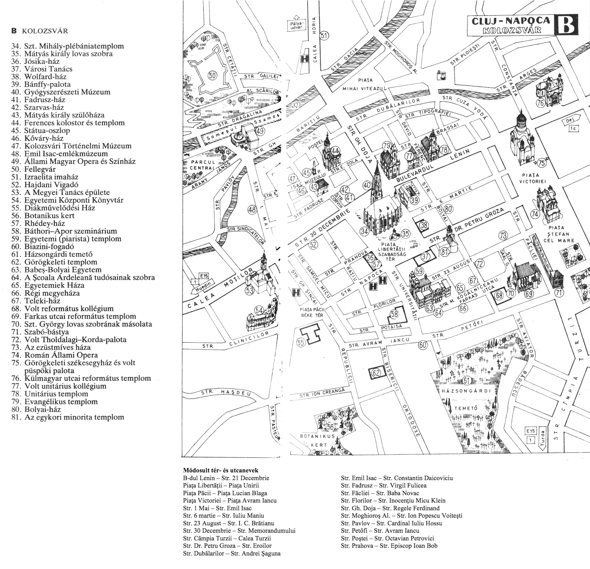
Kolozsvár (Cluj-Napoca) Kolozs megye (județul Cluj) székhelye. Az erdélyi medence északnyugati sarkában, a Gyalui-havasok keleti nyúlványának, a Bükk-erdőnek alján, a Kis-Szamos völgyében. 346 m magasan fekszik. Lakosainak száma több mint 324 000.
A vidék már a legősibb időkben is lakott volt. Dák erődítményen épült fel i. sz. 124-ben a rómaiak Napocája, ennek emlékére kapta a város 1974-ben a Cluj-Napoca nevet. A népvándorlás századai után, a X. és XI. század fordulóján a régi Napoca helyén, a jelenlegi Óváros területén keletkezett a középkori ispánsági vár. A Kolozsvár nevű, szerény katonai erődítmény körül magát a várost a szász telepesek (ún. „hospesek”, azaz vendégek) a XIII. században kezdték felépíteni.
1270-ben V. István király a települést az erdélyi püspöknek adta, de 1316-ban I. Károly újból királyi várossá emelte. Falai a XV. században épültek. Kolozsvárott született 1440. február 23-án Mátyás király. A XV– XVI. században Kolozsvár a gazdag kereskedők, iparosok, ötvösök városa lett, s falai között az idők folyamán 70 országgyűlést tartottak. Az 1437–38. évi felkeléstől kezdve a várost több pusztítás is érte, de valamennyit kiheverte. 1551-ben Izabella királynő itt adta át a magyar koronát Ferdinánd császár követének, Castaldónak. 1600-ban Bocskai itt tette le a fejedelmi esküt, és 1613-ban itt választották fejedelemmé Bethlen Gábort, 1658-ban a törökök ostromolták és 1660-ban ismét kísérleteztek a város elfoglalásával. Az erdélyi fejedelemség elfoglalása után az osztrák kormányzat Nagyszebent tette meg Erdély székhelyévé és 1703-ban oda helyezte a Főkormányszéket is. 1790-ben azonban újra visszakerült Kolozsvárra, amely ezáltal ismét Erdély fővárosa lett.
Az első román nemzeti megmozdulásnak is Kolozsvár volt a gócpontja, 1791-ben itt nyújtották be a diétának a „Supplex Libellus Valachorum” néven ismert felségfolyamodványt, amely az erdélyi románság számára nemzeti jogokat kért.
A városban mondták ki 1848-ban az Uniót, azaz Erdélynek Magyarországgal való egyesítését. A szabadságharc leverése után az abszolutizmus a főhivatalokat büntetésből ismét a német lakosságú Nagyszebenbe helyezte. 1863-ban alapították meg a kolozsvári egyetem elődjét, a Jogakadémiát. Az 1867-es kiegyezéssel és Erdély egyesítésével a város politikai jelentősége csökkent, viszont kulturális központtá fejlődött. Az 1872-ben megalakult egyetem létrehozásában elévülhetetlen érdemei voltak gróf Mikó Imrének (1805–1876), Erdély Széchenyijének, aki saját kertjét és kastélyát adta át az egyetem céljára (Mikó Imre szobra a régi botanikus kertben – Mikó utca/Str. Clinicii – áll.) Az egykori Erdélyi Múzeum felbecsülhetetlen értékű gyűjteménye és könyvtára is az egyetem kezelésébe került.
A század utolsó negyedében az Erdélyi Román Nemzeti Párt memorandumban juttatta el Ferenc Józsefhez nemzetiségpolitikai követeléseit. A magyar kormány a memorandum szerkesztőit, a memorandum röpiratként való terjesztése és nemzetiségi izgatás miatt perbe fogta és Kolozsvárott elítélte. Bár az elítéltek hamarosan kegyelmet kaptak, a per sokat ártott a magyar állam nemzetközi tekintélyének.
A századfordulón az egész város újjáépült, miután a városfalak, bástyák, bejárati kapuk nagy részét lebontották. Kolozsvár a két világháború között is Erdély legfontosabb városa, az erdélyi irodalom és művészet központja maradt. Az eddig is jelentős gyáripar és kereskedelem tovább fejlődött, a munkásság létszáma állandóan gyarapodott. Az első munkásszervezetek már 1868–70 között megalakultak, és 1890-ben szervezték meg az első május elsejei felvonulást. A két világháború között a városban már 2000 kisiparos működött és a kereskedelmi ügyeket 10 bank bonyolította le. 1933-ban és 1937-ben nagy sztrájkok voltak.
Fontos egyetemi és iskolaváros. A kultúrélet jelentős, a város román és magyar könyvkiadási központ, s több szépirodalmi és tudományos folyóirat, valamint újság szerkesztőségének székhelye.
A Szent Mihály-plébániatemplom a Főtér (Piaţa Unirii) közepén áll. Mai formájában a XIV. század második felében kezdték el építeni, gótikus stílusban, a Szent Jakab-kápolna mellett. Építése egy évszázadig tartott, a XV. század harmadik negyedében fejezték be.
A templom az erdélyi fejedelmek idejében protestáns kézre került, unitárius templom lett, s csak 1718-ban jutott ismét a katolikusok birtokába. Több nevezetes történelmi eseménynek volt színhelye. Itt mondott le 1551-ben Izabella királynő Magyarország trónjáról és öt év múlva fia, János Zsigmond oldalán ugyancsak itt fogadta a rendek hűségesküjét. A templomban ravatalozták fel Bocskai Istvánt és itt választottak meg több erdélyi fejedelmet, köztük Bethlen Gábort. Az ünnepélyes falak között számos országgyűlés ülésezett.
A háromhajós csarnoktemplom 50 m hosszú, egységesen 22 m magas. Nyugati főkapuját Zsigmond magyar királyi, német császári és cseh királyi címere díszíti. Oromzatában a sárkányölő.
Szent Mihály főangyal domborműve látható. A kapu mellett 1444-es évszámot mutató felirat van. A déli kapu feletti nagy mérműves ablakot a XVII. században Perpeti János kőfaragó javította. A templom egyik dísze a sekrestyeajtó, amelyet Johannes Clyn (Klein) kolozsvári szász plébános 1528-ban készíttetett.
A templom tornya eredetileg négy fiatornyos volt, de 1698-ban leégett. Később utódját is le kellett bontani. A jelenlegi 80 m magas neogótikus torony 1837 és 1862 között épült.
A templomot belső terének építészeti megoldása a legszebb erdélyi gótikus templommá avatja. Mivel a protestáns időszak alatt régi berendezése megsemmisült, a XVIII. században barokk berendezést kapott. Igen szépek szentélyének eredeti pillérfői, akár növényi díszeket, akár jeleneteket ábrázolnak. A déli mellékoltáron egy Maulbertsch-festményt láthatunk.
A legutolsó restauráláskor. 1956 és 1963 között, értékes középkori freskókat tártak fel a protestáns és barokk kori vakolat alól. A templom szobrászati díszítése pedig Szervátiusz Tibor mesterműveivel egészült ki: ő készítette a Szt. Mihályt, Szt. Lászlót és Szt. Istvánt ábrázoló záróköveket, valamint a Pietàt.
A templomról bővebben lásd:
lexikon.adatbank.transindex.roMátyás király lovas szobra a Szent Mihály-templom déli homlokzata előtt áll. Fadrusz János mesteri alkotása, 1902-ben állították fel. A bronzszoborcsoport közepén bástyaszerű alapzatról magasodik fel a király lovon ülő figurája. Alatta és körülötte hadvezérei, Magyar Balázs, Kinizsi Pál temesi bán, Zápolya István nádor, Báthori István erdélyi vajda állanak.
A szoborról bővebben lásd:
lexikon.adatbank.transindex.roA Jósika-ház a Főtér/Piața Unirii nyugati oldalán áll. Klasszicista stílusban épült 1828-ban, s erkélyének hatalmas oszlopai miatt a helyiek lábasháznak nevezik. Emeletén van az egyetem orvosi és gyógyszerészeti könyvtára.
Bővebben lásd:
WikipédiaFőtér 1. sz./Piața Unirii nr. 1
A Régi Városháza (jelenleg Városi Tanács) épülete, a tér déli oldalán. Klasszicista épületét Kagerbauer Antal tervezte, s 1843–46 között épült. Komoly homlokzatát hatalmas hármas kapuzat, a felette végighúzódó erkély, valamint Kolozsvár ősi címere díszíti. Lépcsőházában a hajdani városfalból származó, XVI. és XVII. századi emléktábla látható.
Az épület előtt áll Róma város ajándéka e századból, a capitoliumi farkasszobor másolata.
Bővebben lásd:
lexikon.adatbank.transindex.roFőtér 31. sz./Piața Unirii nr. 31, a tér keleti oldalán
Kakas- vagy Báthori-háznak is nevezik. Eredetileg Wolphard Adorján humanista, kolozsvári plébános, püspöki vikárius építtette 1530 táján, reneszánsz stílusban. Az évszámos (1534, 1536) ablakokkal ellátott, a tér felé néző reneszánsz homlokzatot 1895-ben bontották le. A reneszánsz faragványok a Történeti Múzeumba kerültek.
Később a házat Kakas István diplomata szerezte meg, ő építtette az udvari szárnyban a reneszánsz Zodiakus-termet, melyet címere, monogramja, valamint az állatöv csillagképeinek ábrázolása díszít. A kis terem külső falán hatalmas, késő reneszánsz ablakok vannak. A hagyomány úgy tartja, hogy Báthori Zsigmond e ház ablakából nézte végig Kendi Sándornak és összeesküvő társainak kivégzését.
Bővebben lásd:
lexikon.adatbank.transindex.roFőtér 30. sz./Piața Unirii nr. 30
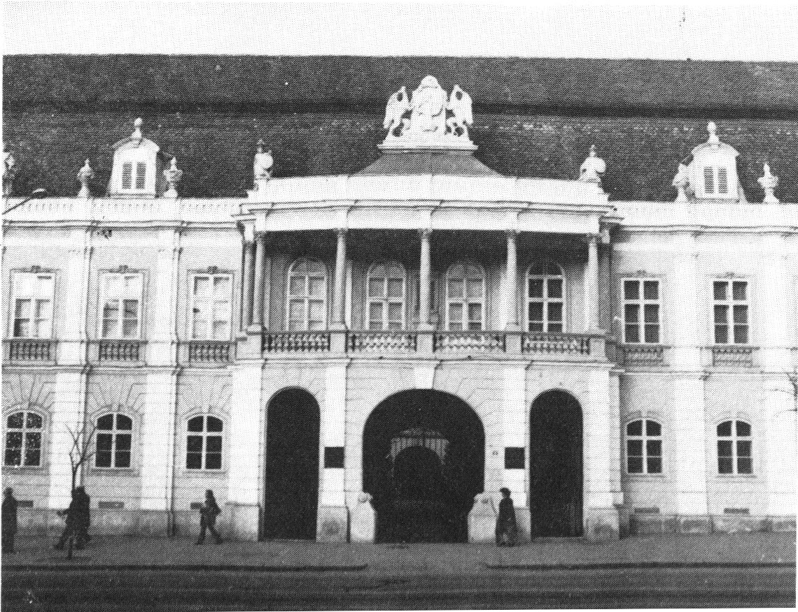
A Bánffy-palota ünnepélyes, barokk stílusú épület. Homlokzatát oszlopos fedett erkély, és a fölötte lévő családi címer ékesíti. Bánffy György 1773–85 között építtette. Tervezője Johann Eberhard Baumann szobrász és építész volt.
A palotában kapott helyet a Szépművészeti Múzeum. Huszonkét termének gazdag anyagában mind a régi, mind a modern román és magyar művészet alkotásai megtalálhatók.
Bővebben lásd:
lexikon.adatbank.transindex.roFőtér 28. sz./Piaţa Unirii nr. 28
A Gyógyszerészeti Múzeum, a hajdani Hintz-ház, a Főtér északi oldalán, a Wesselényi utca (str. Regele Ferdinand) sarkán áll. Egykori gazdag kolozsvári család patikája volt s pincéjében régi gyógyszertári laboratórium látható.
Bővebben lásd:
lexikon.adatbank.transindex.roFőtér 20. sz./Piața Unirii nr. 20
Fadrusz János egykori lakóháza. A monda szerint ezen a helyen állt egykor annak a kegyetlen bírónak a háza, akinek Mátyás királlyal gyűlt meg a baja.
A Mátyás-szobor alkotójának reneszánsz eredetű házában van jelenleg az Ursus (Medve) söröző és étterem, melynek falait Kovács Zoltán falfestményei díszítik.
Mátyás király utca 4. sz./Str. Matei Corvin nr. 4
A Szarvas-ház átalakított épület, eredetileg Bocskai István fejedelem szülőháza volt. Itt volt Heltai Gáspár könyvnyomdája. Jelenleg a Pedagógiai Továbbképző Intézet működik benne.
Bővebben lásd:
WikipédiaMátyás király utca 6. sz./Str. Matei Corvin nr. 6
Mátyás király szülőháza a XV. század első felében épült, egyszerű külsejű épület, szépen tagolt gótikus kapuval. A király születésekor az épület Méhffi Jakab szőlősgazdáé volt. Itt szállt meg Mátyás anyja, Szilágyi Erzsébet, s itt szülte meg fiát. Mátyás király 1467-ben Méhffi örököseit, leányait és vejét, Kolb Istvánt adómentességgel tüntette ki. A ház szobái boltozatosak, sok átépítés után is jellemzőek a középkori polgári építkezésre.
Az épület falán bronz emléktábla van. Az 1940-es években Kós Károly restaurálta. Ez volt sokáig az Erdélyi Kárpát Egyesület székháza és híres múzeuma. Jelenleg az Ion Andreescu Képzőművészeti Főiskola székhelye.
Bővebben lásd:
lexikon.adatbank.transindex.roKarolina tér/Piața Muzeului
A ferencesek kolostorát és templomát a XV. században gótikus stílusban építették. Eredetileg domonkos rendi kolostor volt, később ferences rendház és templom lett. A fejedelemség idején a reformátusok birtokolták. A templom a Farkas utcai templomhoz hasonlított, de a katolikus restauráció idején barokk stílusban átalakították.
A kolostor egyes helyiségei, a kerengő, a sekrestye, a káptalanterem és a földszinten levő refektórium azonban megőrizték eredeti formájukat. A refektórium oldalról megvilágított, hatalmas terem, melynek hálóboltozata a falak gyámkövein és a középen álló széles, sokszögű pilléren nyugszik.
Az épületet az 1940-es években Kós Károly restaurálta, s a refektórium a keringővel együtt ekkor született újjá.
A kolostor egykor Izabella királynő lakhelye is volt, országgyűléseket is tartottak benne. Ma zeneiskola.
Bővebben lásd:
WikipédiaKarolina tér/Piaţa Muzeului
A Státua- vagy Karolina-oszlop a ferences templom előtti tér közepén áll. Az empire szobrászat emléke, Kolozsvár város emeltette 1831-ben I. Ferenc császárnak és nejének, Karolinának 1817. évi látogatása emlékére. Fő domborműveit Josef Klieber bécsi szobrász készítette. Eredetileg a Fő téren állt.
Bővebben lásd:
lexikon.adatbank.transindex.roBástya utca 1. sz./Str. Constantin Daicoviciu nr. 1
A Kőváry-ház Kőváry László (1820– 1907) kiváló történész és néprajztudós, Erdélyi műemlékei leírójának lakóháza volt. A házon emléktábla van.
Bartha Miklós utca 2. sz./Str. Emil Isac nr. 2
A Kolozsvári Történelmi Múzeum a város legnagyobb múzeuma.
140 000 kiállítási tárgya között jelentősek a dák és a római leletek, a város történelmi múltjának emlékei, a rendkívül gazdag lapidárium, mozaikok, terrakotta tárgyak, szarkofágok. Itt vannak elhelyezve a lebontott vagy átalakított kolozsvári műemlék épületek művészi kőfaragásai. A múzeumban látható Kájoni János csíksomlói nyomdája. A lépcsőfeljáróban szép falfestmény, a „Hollós legenda”, Müller-Merész Gyula műve 1913-ból.
A múzeum alapja az Erdélyi Múzeum Egyesület – főleg főúri adományokból összegyűjtött – anyaga volt.
A Karolina-oszlop és a Történelmi Múzeum között áll Constantin Daicoviciu (1893–1973) történész bronzszobra.
Bővebben lásd:
www.clujtravel.comBartha Miklós utca 23. sz./Str. Emil Isac nr. 23
Emil Isac erdélyi román költő (1886–1954), a román–magyar kulturális együttműködés híve s Ady Endre tisztelője volt. A múzeumban láthatjuk könyvtárát, kéziratait, pályafutásának dokumentumait és személyes tárgyait.
Bővebben lásd:
www.welcometoromania.euBartha Miklós utca 26–28. sz./Str. Emil Isac nr. 26–28
A Kolozsvári Állami Magyar Opera és Színház az egykori Nyári Színkörből átalakított szerény, de a célnak megfelelő épület.
A két világháború között a kolozsvári magyarság kulturális központja, melynek szellemi vezetője Kemény János író, az Erdélyi Helikon alapítója volt. A második világháború után ismét a magyar színészet otthona lett, opera- és prózai színtársulat működik benne.
Bővebben lásd:
Wikipédiaa Szamos északi partján
A Fellegvár, a régi osztrák katonaság erődje 405 m magas dombon állt. A Fellegvárba felvezető szerpentinekről és teraszokról egész Kolozsvár áttekinthető. A Fellegvár dombján épült fel a nagyméretű Belvedere-szálló.
A hídon túl kezdődik a Főpályaudvarhoz vezető Ferenc József út (str. Horea). A Főpályaudvar előtt áll az út jelenlegi névadójának – az 1784. évi román parasztfelkelés egyik vezérének szobra. Baloldalt az erdélyi stílusban épült, ún. Hidelvei református templom emelkedik.
Az egykori „Mariánumban” volt a magyar nyelvű Bolyai Egyetem. Az épület előtt Oláh Miklós (Nicolaus Olahus) humanista hercegprímás és Dimitrie Cantemir fejedelem, két kiváló történész mellszobra áll.
Bővebben lásd:
lexikon.adatbank.transindex.roFerenc József út 21. sz./Str. Horea nr. 21
Az izraelita imaház mór stílusú építmény. Restaurálták és falán héber, román és magyar nyelvű márványtáblát helyeztek el a második világháború idején Kolozsvárról elhurcolt zsidó mártírok emlékére.
Unió utca 21. sz./Str. Memorandumului nr. 21
A XIX. század eleji empire stílusú épület sok történelmi és társadalmi esemény színhelye volt.
1848-ban itt tartott hangversenyt Liszt Ferenc.
Ebben az épületben mondta ki 1848. május 30-án az erdélyi országgyűlés Erdély és Magyarország egyesülését. Bár az ezután fellángoló harcok az erdélyi népek összeütközéséhez vezettek, mind Avram Iancu, mind Nicolae Bălcescu kereste a megegyezést, amelyet a bekövetkezett tragikus események meghiúsítottak.
A Vigadó épületében lejátszódó nagy visszhangot kiváltó esemény volt az 1894. évi „Memorandum per”, amelyet a magyar kormány az erdélyi románság hangadó politikai vezetői ellen indított.
Az épület jelenleg az 1928-ban alapított Erdélyi Néprajzi Múzeum otthona. Több mint 50 000 darabból álló gyűjteményében népviseletek, kézimunkák, faragványok, kerámiák, munkaeszközök és népi bútorok láthatók.
Bővebben lásd:
lexikon.adatbank.transindex.roMócok útja 1–3.sz./Calea Moților nr. 1–3
A Megyeháza, jelenleg Városháza a századfordulón készült. Saroktornyos, eklektikus stílusú, neobarokk motívumokkal díszített épület.
Bővebben lásd:
WikipédiaMikó utca 2. sz./Str. Clinicilor nr. 2
A hatalmas könyvtár alapját az Erdélyi Múzeum Egyesület gyűjteménye képezte. Itt őrzik az erdélyi népek nyomtatott és írott kincseinek leggazdagabb gyűjteményét. A könyvritkaságok egy része megtekinthető, az olvasóterem nyilvános.
Bővebben lásd:
www.bcucluj.roSzent György tér 1–3. sz./Piaţa Lucian Blaga nr. 1-3
A Diákművelődési Ház 1959–60-banépült, egyetemi színpadként. Hangversenyterme is van. Nagytermébe 1000 hallgatót képes befogadni.
A Diákművelődési Háztól nyugatra van a klinikai negyed és a Mikó-kert, ahol Mikó Imre szobra áll. Itt van a Barlangtani Intézet is
Majális utca 42. sz./Str. Republicii nr. 42
A botanikus kert 13 hektáros területén elágazó vízfolyás és kis szakadék található, s lehetőség nyílt a természetes növényzeti övezetek kiképzésére. A síkságétól kezdve a havasokéig minden megtalálható benne.
Az itteni növényfajok száma 10 000 darabra becsülhető. Az üvegházak területe 2000 m2, ezekben tropikus növények díszlenek. A díszkertek közül legérdekesebb a japánkert, a rózsakert és az angolkert. Itt vannak a botanikai tanszékek is, sok tudós nagy értékű növénygyűjteményével.
Bővebben lásd:
WikipédiaFőtér 9. sz./Piaţa Unirii nr. 9
A Rhédey-ház volt a kolozsvári magyar színészet első otthona. Hajdani szerepére és jelentőségére a homlokzatán levő tábla emlékeztet.
Bővebben lásd:
lexikon.adatbank.transindex.roEgyetem utca 10. sz./Str. Universității nr. 10
A Báthori-Apor Szeminárium, a volt piarista rendház és gimnázium. A volt rendháznak igen szép stukkódíszes refektóriuma van.
Az udvaron van egy Báthori-mellszobor, ugyanis Báthori István a XVI. század végén jezsuita egyetemet alapított itt, mely 1603-ig működött. A gimnázium (Farkas utca/Str. Kogălniceanu 4.) kétemeletes, klasszicizáló épülete jelenleg is középiskola.
Bővebben lásd:
WikipédiaEgyetem utca 5. sz./Str. Universităţii nr. 5
Az egyetem épülettömbjével körülépített, kéttornyú barokk templom. 1718–24 között épült s mind külsejében, mind belsejében a barokk pompa kedvelésére vall.
Bővebben lásd:
www.szmk.roStr. Petőfi, átellenben a Str. Universității torkolatával
Petőfi Sándor 1847 októberében, látogatóban, feleségével ebben a fogadóban szállt meg. A ház homlokzatán Petőfi- és Bălcescu-emléktábla látható.
A Házsongárdi temető (Cimitirul Central) bejárata a Petőfi utcából (Str. Avram Iancu) nyíló kis közben van. A temetőt a XVI. században nyitották meg, s azóta megszakítás nélkül használják. Sok híres egyetemi tanár, tudós, író, költő, politikus és művész nyugszik itt. Sok más kiváló ember között a temetőben található Apáczai Csere János, Szenczi Molnár Albert, Jósika Miklós, Brassai Sámuel, Mikó Imre, Kriza János, Bölöni Farkas Sándor, Misztótfalusi Kis Miklós, E. Kovács Gyula, Szentgyörgyi István, Dsida Jenő, Reményik Sándor, Asztalos István, Józsa Béla, Szabédi László, Bartalis János, Nagy István, Kós Károly sírja.
Az utóbbi évtizedekben ide temetkeztek az erdélyi románok politikai és szellemi vezetői is, az egyetem tudósai, híres orvosok stb.
Bővebben lásd:
www.hazsongardalapitvany.roGörögtemplom utca 12. sz./Str. Bisericii Ortodoxe nr. 12
A görögkeleti templom 1797-ben épült. Ez volt Kolozsvár első görögkeleti temploma.
Bővebben lásd:
WikipédiaFarkas utca 1. sz./Str. Kogălniceanu nr. 1
A Babeș–Bolyai Egyetem főépülete 1872-ből származik. Neoreneszánsz stílusban épült, Alpár Ignác tervei szerint. Névadója Victor Babeș (1854–1926) bakteriológus, és Bolyai János (1802–1860) matematikus. A Bolyai Tudományegyetem megalapításának éve: 1945. A Bolyai és Babeș Egyetemek egyesítése 1959-ben történt.
Bővebben lásd:
WikipédiaFarkas utca /Str. Kogălniceanu
A hármas szoborcsoportozat Gheorghe Șincait, Petru Maiort és Samuel Micut,az „erdélyi iskola” nevű román tudományos és politikai áramlat tudósait ábrázolja. Ladea Romulus szobrászművész alkotása.
Farkas utca 3. sz./Str. Kogălniceanu nr. 3
Az Egyetemiek Háza a harmincas években épült. Előtte az első és állandó magyar színház épülete állt itt, amely 1821-ben nyílt meg. Néhány falrészletét beleépítették az új épületbe.
Bővebben lásd:
lexikon.adatbank.transindex.roFarkas utca 6. sz./Str. Kogălniceanu nr. 6
A régi Megyeháza a hajdani megyegyűlések székhelye, a reformkor nagy múltú politikai fóruma. Itt terjesztették be a „Supplex Libellus Valachorum” néven ismert felségfolyamodványt, az erdélyi románság nemzeti jogainak ügyében.
Farkas utca 7. sz./Str. Kogălniceanu nr. 7
A Teleki-ház nevezetes barokk műemlék, melyet 1790–95 között építettek. Tervezője Leder József helybeli mester volt, aki a Bánffy-palotát vette mintának.
Bővebben lásd:
lexikon.adatbank.transindex.roFarkas utca 16. sz./Str. Kogălniceanu nr. 16
A református kollégium Erdély ősi „skólá”-ja, Apáczai Csere János egykori „Akadémiá”-ja. Az eredeti épületből csak reneszánsz bejárata és homlokzati falának egy része maradt meg. A jelenlegi kétemeletes épület 1801-ben épült.
Az erdélyi fejedelmek által pártfogolt ősi iskolát főleg Bethlen Gábor és I. Rákóczi György adományai fejlesztették. Apáczai Csere János alatt akadémiai szintű intézmény volt. Könyvtára, kézirattára és több gyűjteménye sok ritkaságot tartalmaz.
Bővebben lásd:
lexikon.adatbank.transindex.roFarkas utca 16. sz./Str. Kogălniceanu nr. 16
A Farkas utcai református templom a kis tér jellegű utcarészlet keleti végét zárja le. Hajdan a minoritáké volt. Mátyás király alapítványa, aki 1486 után kezdte építtetni, gótikus stílusban, de csak a XVI. század elején lett kész. A templom a reformáció idején került a reformátusok birtokába. Tornyát és a rendházat az 1640-es években bontották le, mert a vallási zavargások idején megrongálódott. Ekkor pusztultak el freskói és oltárai is. A templom külseje egyszerű, hatalmas falait magas támasztópillérek tagolják. Főhomlokzatát csak a bélletes kapuzat és felette a csúcsíves ablak díszíti.
A szép gótikus templomot a közelmúltban restaurálták.
A templom hajója 34 m hosszú és 15 m széles, a kórusa pedig 10×23 m területű. Belső terét beugró pillérsoron nyugvó hálóboltozat zárja le. A XVII. század közepén történt újjáépítés idején igen szép reneszánsz szószéket és faragott padokat készítettek. A szószék Nicolai Illés, Kőfaragó Benedek és Régeni János műve. A színezett orgonaszekrény 1766-ban készült. A templom falait a XVII–XVIII. századi temetési címerek díszítik. Igen szépek az Apafi-gyermekek ezüst emléktáblái. A szentélyben van az Apafiak fejedelmi sírja, a síremléket Kós Károly készítette.
Bővebben lásd:
lexikon.adatbank.transindex.roSzent György lovas szobrának másolata a templom előtt áll. Kolozsvári Márton és György szobrászművészek eredeti alkotása 1373-ban készült, és a prágai várban látható. Első helye az Egyetemi Könyvtár előtt volt.
Bővebben lásd:
lexikon.adatbank.transindex.roBethlen utca 35. sz./Str. Baba Novac nr. 35
A Szabó-bástyát, más néven Bethlen-bástyát a XV. századi várfal maradványával a kis utcában láthatjuk. Nevét onnan kapta, hogy ostromok idején a szabók céhe védelmezte. A bástya a XVII. század elején felrobbant, de pár évre rá Bethlen Gábor újjáépíttette. Ezért nevezik Bethlen-bástyának is.
Bővebben lásd:
lexikon.adatbank.transindex.roKirály utca 14. sz./Str. I. C. Brătianu nr. 14
A volt Tholdalagi–Korda-palota 1801 és 1807 között épült. Carlo Justi olasz építész tervezte klasszicista stílusban, de barokk elemei is vannak. A főkapu és az udvar oszlopai Kocsárdi Mihály kőfaragó művei, a címertáblát Csürös Mihály szobrász, a művészi ablakrácsokat Ungvári István lakatos készítette. Monumentális homlokzatát nagyméretű pillérek tagolják.
Falán emléktábla hirdeti, hogy 1919 és 1925 között itt lakott Gheorghe Dima román zeneszerző és zenepedagógus.
Király utca 27. sz./Str. I. C. Brătianu nr. 27
Az ezüstmíves háza Újhelyi Gábor kolozsvári ezüstműves lakóháza és műhelye volt. Ablakkereteit Sipos Dávid faragta (1724).
Ştefan cel Mare tér 2–4. sz./Piața Ștefan cel Mare nr. 2-4
Fellner és Helmer híres színháztervezők műve 1906-ban készült Nemzeti Színháznak. A Farkas utcai régi színkörből ekkor költözött ide a kolozsvári színtársulat.
Bővebben lásd:
lexikon.adatbank.transindex.roBocskai tér/Piața Avram Iancu
Az impozáns neobizánci stílusú, reprezentatív külsejű és díszes belsejű templomot Nicolae Ivan püspök alapította, Mária mennybemenete (Adormirea Maicii Domnului) tiszteletére. Alapkövét 1923-ban rakták le, építését 1933-ban fejezték be. C. Pomponiu és S. Cristinel tervezte.
Keleti oltárával szemben van a görögkeleti püspöki palota (volt Erdőigazgatóság).
1989 December 21. sugárút 41. sz./Bulevardul 21 Decembrie 1989 nr. 41
A Külmagyar utcai református templom, a Kétágú templom eredetileg a Belvároson kívül, a városkapun túl állt. 1829 és 1851 között épült, klasszicista stílusban.
Bővebben lásd:
Wikipédia1989 December 21. sugárút 9. sz./Bulevardul 21 Decembrie 1989 nr. 9
Az unitárius kollégium kétemeletes, díszes, impozáns építmény, melyet késő barokk ablakkeretei palotaszerűvé tesznek. Az unitárius egyház nagy múltú nevelőintézete volt, gazdag és rendkívül értékes könyvtárral.
Az előcsarnokban van Brassai Sámuel mellszobra.
Bővebben lásd:
lexikon.adatbank.transindex.ro1989 December 21. sugárút 9. sz./Bulevardul 21 Decembrie 1989 nr. 9
Erdély egykor legnagyobb vallásfelekezetének temploma 1792–96 között épült Ugrai László józan barokk terve alapján. A templom belsejében ívelt rokokó karzatokat, szép stukkódíszeket láthatunk. Fehér falai puritánok, mégis ünnepélyes hatást keltenek.
Bővebben lásd:
lexikon.adatbank.transindex.roWesselényi utca 2. sz./Str. Regele Ferdinand nr. 2
Az evangélikus templom 1816–29 között épült Winkler György tervei szerint. Egyszerű klasszicista építmény.
Bővebben lásd:
lexikon.adatbank.transindex.roBolyai János utca 1. sz./Str. Bolyai nr. 1
E házban született Bolyai János (1802–1860), a kiváló matematikus. A házon emléktábla van.
Bővebben lásd:
WikipédiaDeák Ferenc sugárút 8–10. sz. /B-dul Eroilor nr. 8–10
Az egykori minorita templom, most „Urunk színeváltozása” (Schimbarea la față) nevű görögkeleti templom. Az első világháború után pápai egyezmény értelmében a görögkatolikus egyháznak átadott templom, a görögkatolikus egyház megszűnte után az ortodox egyház tulajdonába jutott. 1780–84 között épült barokk műemlék. Belsejét a görögkeleti szertartásnak megfelelően átalakították, és szép aranyozott ikonosztázt építettek be.
Bővebben lásd:
lexikon.adatbank.transindex.roKis utca 180. sz./str. Mica nr. 180
A magyarvistai református templomot a XIII. század végén a Monoszló nemzetségbeli Péter építtette, román stílusban. Később többször is átépítették, 1498-ban kiegészítették. A nyugati félköríves kaput szőlőindák, leveles, virágos indák, szimbolikus, sárkányszerű ábrázolások díszítik. A déli kapu is román kori, rajta nap, hold és csillagok vannak. Szép az oromzati kerek ablak. A harangláb 1760-ban készült; alatta szép, faragott sírkövek láthatók.
A templombelső 120 kazettás mennyezetét Umling Lőrinc 1765–87 között festette, karzatát 9 táblával Gyalui Asztalos János készítette, 1699-ben. A sekrestyeajtó félköríves, a szentségtartó kora gótikus. A szentély boltzárókövén az 1498-as évszám az újraboltozás dátuma. Igen szép a szószék is. A templom harangja 1487-ből való.
Bővebben lásd:
www.reformatus.roA Hója-erdő és a Szabadtéri Múzeum a Sétatérről (Parcul Central) a Str. Rákóczin és a Törökvágáson (Tăietura turcului) közelíthető meg (kb. másfél km-re van a parktól). A Szabadtéri Múzeumban népi építmények, főleg a mócok faépítészete, román templom s két magyar ház is látható.
A Bükk-erdő a várostól délnyugatra elterülő, bájos hegyvidék, jelzett sétautakkal. Az erdőben több emlékmű, pihenőhely és kemping van.
A Kolozsvártól délkeletre fekvő Györgyfalva (Gheorgheni) folklórja és viselete közismert. A XIX. században bolgár kertészek jelentős öntözéses zöldségkultúrát honosítottak meg itt. Katolikus templomának kőtábláin több évszám (1570 és 1606), felirat (Petrus Pávay, 1585 stb.) látható. A 207-es számú ház helyén állt a Gyerőfy család kastélya.
Északkeleten a várossal csaknem egybeépült Szamosfalva (Someșeni) érdekessége a XIII. századi, katolikus templom, délre nyíló félköríves ajtóval. Szentélye bordázott, címeres zárókövét lemeszelték. Három reneszánsz sírkő a kihalt Gyerőfy–Mikola családé. Kajántó (Chinteni) katolikus temploma is XIII. századi építmény, kváderkövekkel szegélyezve. Kora gótikus szentélye a XV. századból való, de a szentélyben a sekrestyeajtó XIV. századi. A háromosztatú csúcsíves kiképzésű ülőfülke – szárnyas oroszlán féldomborművel – a templom fő értéke
A Zilah felé vezető úton indulunk el a Nádas-patak felé, amelynek forrásága Románnádasnál van.
Kisbács (Baciu) katolikus templomának alaprajza középkori. A templomot erősen átalakították, de a szentély csúcsíves sekrestyeajtaja és a hajó nyugati, XIV. századi ajtaja még látható. Szucság (Suceag) kisnemesi falu volt. XIII. századi református templomának porticusában a reneszánsz sírkő egy Süveges nevű kőfaragó műve. A karzat Umling Lőrinc, a paddíszítések Asztalos Boka János munkája 1775-ből. Méra (Mera) református temploma középkori, XIII. századi félköríves keleti ablakocskával. A nyugati bejáró gótikus (XV. századi). A déli bejáró XIX. századi restaurálás műve. Az 1709-ból származó úrasztala festett. Bordatagjait egy szomszédos istálló alapjában találták meg.
Magyarvista (Viștea) megtekintéséhez a zilahi útról a Nádast követve nyugatnak térünk le. A kalotaszegi falu élő népművészetéről ismert. Az asszonyok itt híres bútorfestők, kézimunkázók.
Magyargorbón (Gârbau) van a Lészai család – teljesen átalakított, emeletes – egykori kastélya.
Türe (Turea) református templomában jellegzetes magyar oszlopfőt találunk, kardos alakkal. Faragott kapubélleteket, beépített „Agnus Dei” töredékeket, római emlékkövet, régi sírköveket láthatunk a templomban. A szószék Kidei Sipos Dávid munkája 1759-ből. A helyben készült, középkori kályhacsempéken (kályhafiókok) király, griff, életfa, naprózsa a díszítés.
Bogártelke (Băgara). A református templom külseje esetlen és dísztelen. Érdemes viszont bemenni és a mennyezet 79, az orgonakarzat 8 és a szószékelő 5 kazettáját megnézni. A padok mellvédjét Simon György és társai készítették, 1974-ben. A szószékkorona Umling-modorú.
Átérve a Nádas déli partjára Nádasdaróc (Dorolțu) gyártelepi környezetében egy szigetnyi középkort találunk: a református templomot. Kőből épült, magas zsindelyfedésű, XIV–XVI. századi részletekkel. A gyámkövek az elpusztult csúcsíves boltozat emlékei.
A templom 90 táblás mennyezetét Umling Lőrinc készítette 1750-ben. A „Balás András” feliratú ülőpad-díszítmények 1687-ból valók. Ez a név olvasható, 1682-es évszámmal, a szószékkoronán is. Az orgonakarzat Gyalui Asztalos János munkája. Az északi falon XV. század közepi freskótöredék látható: Jakab tarisznyával, bottal, jobb kezét a térdelő adakozó fején nyugtatja.
Egeres (Aghireș) szénbányászata és gépgyártása a XIX. század óta ismert. Történelmi nevezetessége a romos állapotban levő kastély. 1572-ben épült, eredetileg Bocskai István fejedelemé volt, de a Báthoriak is birtokolták. A kastély oldalába római sírkő van befalazva.
A református templom XIII. századi hajóját a XV. században gótikus stílusban bővítették.
A templomban római kőtöredék, a szentélyben boltindító kövek, az egykori reprezentatív belső utolsó maradványai, továbbá csúcsíves, mér-műves ablakok. „Daniel Vargyas” címeres kő látható. A szentségtartó fülke 1493-ból, Bocskai István síremléke 1616-ból való.
A helységben van egy megtekintésre érdemes kis román templom is.5. Kirándulás az Alszegre, a Nádas mentére. A Zilah felé vezető úton indulunk el a Nádas-patak felé, amelynek forrásága Románnádasnál van.
Eroilor / Deák Ferenc u., 6–8. sz., Kolozsvár
www.visitclujnapoca.roKolozsvárt déli irányban az Opera mögött, a Tordai úton (Calea Turzii) hagyjuk el. Jobboldalt húzódik a második világháború környékbeli harcaiban elesett magyar hősök temetője. Az E 60, illetve Dl számú út emelkedik és szerpentinekben folytatódik a 730 m magas nyeregig. Ez a Feleki-tető, ahonnan igen szép kilátás nyílik Kolozsvárra és környékére.
Erdőfelek (Feleacu) lakói a XIV. században az utak biztonságának őrzésével voltak megbízva. Gótikus stílusú, XV. századi ortodox templomát Ștefan cel Mare moldvai uralkodó adományából építették.
Tordatur (Tureni) és Koppánd (Copăceni) között érdekes látnivalót tartogat a természet.
A Túr–Koppándi-hasadék (Cheile Turului) szurdokában a Rákos-patak folyik. A Tordai-hasadéknál kisebb, de vadregényességben nem marad el tőle. Közelében van a Szt. László kútja nevű forrás, amely már a Szt. László-legendában szerepel.
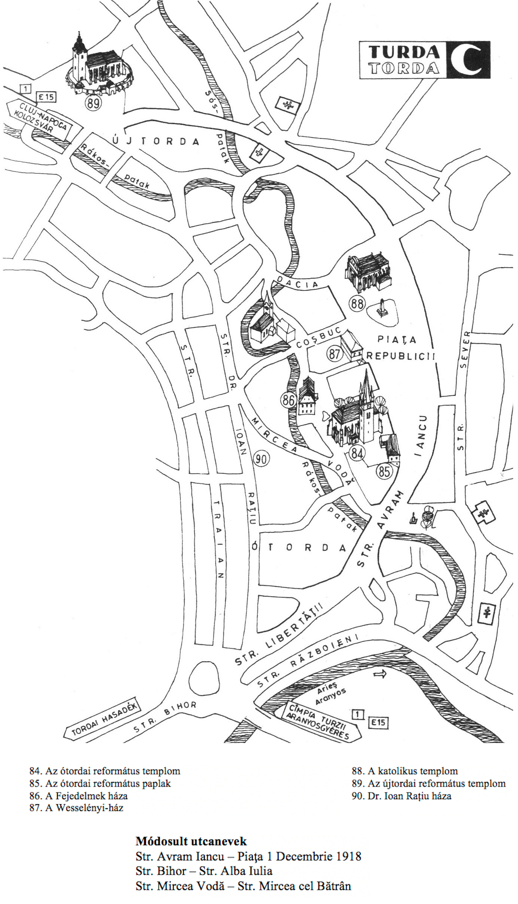
A város 333 m magasan az Aranyos két partján, a Turi-patak torkolatánál, az ún. Keresztes-mező északi oldalán, szőlőhegyektől övezett völgyben fekszik.
A régi Torda három részből állt: Ó- és Újtordából, valamint Egyházasfalvából. Mára teljesen egybeépültek. Tipikus erdélyi város, hét felekezet lakott benne és tíz temploma volt. Ma több mint 47 700 lakosa van.
Már a dákok és később a rómaiak alatt is nagy jelentőségre tett szert a település a környékbeli régi sóbányák miatt. A rómaiak Traianus császár idejében (i. sz. 110) Potaissától Napocáig utat építettek, és a hegytetőkön római telepeket létesítettek. Ezután a gótok, majd a hunok kezére került és a népvándorlás hullámai közt elpusztult. A honfoglalás után ismét felfedezték jelentőségét. 1075-ben Géza király oklevelében már szerepelnek a sóbányák. Gazdaságos kihasználásukra németeket (szászokat) telepítettek ide. A XIII. században a mongolok elpusztították, s az újra betelepedett lakosságnak IV. László és III. Endre adott kiváltságokat. Torda környékén a kézdi székelyek egy csoportja a különálló és a székely tömbtől távoleső Aranyosszéket alapította meg.
A XV. században már virágzó város volt, a XV–XVI. században az erdélyi történelem több nagy horderejű eseményének színhelye. Az erdélyi „három nemzet” (nemesek, székelyek, szászok) Kápolnán, 1437-ben kötött unióját az itteni, 1505. évi országgyűlésen újították meg.
A mohácsi vész után jelentős országgyűlések színhelye volt, 1568-ban itt iktatták törvénybe a vallásszabadságot, a vallási türelem kivívásában nagy szerepe volt Dávid Ferenc reformátornak (1520–1579), az unitárius vallás terjesztőjének. A XVI. és a XVII. század fordulóján Basta császári tábornok tizedelte meg a lakosságot, majd a város le is égett a Vitéz Mihály havasalföldi fejedelem elleni harcokban. 1609-ben az utolsó Báthori az 1601-ben elpusztult várost újabb szabadalommal látta el és gondoskodott betelepítéséről. A megmaradt régi lakosság csak Bocskai fejedelem alatt kezdett visszaszállingózni. Bethlen Gábor 1614-ben megerősítette a város szabadalmait és a kipusztult Újtordába 332 megnemesített palotás vitézét telepítette le. 1658-ban a tatárok dúlták fel, és a környék lakosságával együtt a városi polgárságot is rabságba hurcolták. 1659-ben a tatárdúlás megismétlődött és Torda teljesen elnéptelenedett. Ezért 1660-ban az országgyűlés a török elől menekülő lugosi és karánsebesi magyarokat fogadta be Tordára, 1665-ben pedig a váradi menekülteket. 1668-ban Apafi az új telepeseknek és egész Ótordának nemességet adott, belőlük lettek az ún. „kebeles polgárok”. A Rákóczi-szabadságharc végén, 1707-ben Rabutin császári hada teljesen feldúlta a várost, a megmaradt lakosság elmenekült és csak négy év múlva, 1711-ben tért vissza.
A szatmári béke után újra fejlődésnek indult a város. 1848–1849-ben a szabadságharc alatt, többször nagy veszélybe került, de megmenekült.
Aranyosszék mint önálló székely terület 1876-ban szűnt meg, ekkor alakították meg Torda-Aranyos vármegyét.
Tordán született dr. Ioan Rațiu (1828–1902) az 1848 utáni román politikai mozgalmak egyik vezetője és a „Memorandum-per” egyik fővádlottja.
B. P. Haşdeu u., 1. sz./Str. B. P. Haşdeu nr. 1
Az ótordai református templom a város legrégibb építménye, XIII. századi eredetű. Jelenlegi formájában a XIV. század második feléből származik. Az egyhajós templom a későbbi átépítések folyamán sokat veszített eredeti szépségéből, belsejét barokkosították, szentélyét lebontották. A templomban több országgyűlést tartottak.
Bővebben lásd:
lexikon.adatbank.transindex.roAz ótordai református paplak falán emléktábla van, mely szerint Petőfi Sándor itt vett búcsút 1849. július 21-én feleségétől, Júliától és kisfiától, miután Miklós Miklós lelkész gondjaira bízta őket. Soha többé nem látták egymást.
B. P. Haşdeu u., 2. sz. / Str. B. P. Haşdeu nr. 2
A Fejedelmek háza a XVI. századból származó épület, mely az átutazó vagy itt időző fejedelmek szálláshelye volt. Ma történeti múzeum.
Hosszabb restaurálás után itt helyezték el Körösfői Kriesch Aladár nagyméretű, gyönyörű festményét: „A tordai országgyűlés 1568-ban Dávid Ferenc vezetésével kimondja a vallásszabadságot.”
A Wesselényi-ház a Fejedelmek házának szomszédságában van. Báthori Zsigmond idejéből származik. 1794-ben itt született báró Jósika Miklós, az első jelentős magyar regényíró, s haladó szellemű politikus.
Bővebben lásd:
www.welcometoromania.euKöztársaság tér, 54. sz., Torda/ Piața Republicii nr. 54
A katolikus templom a XV. század végén, eredetileg valószínűleg háromhajós, nyugati tornyos csarnoktemplomként épült. Gótikus szerkezetét és formáit csak kívül őrizte meg. Nyugati homlokzatát és belsejét 1822-ben alakították ki. Itt is tartottak országgyűlést (1568). Európában először itt mondták ki a vallásszabadságot.
Bővebben lásd:
lexikon.adatbank.transindex.roBasarabiei u. 12. sz. / Str. Basarabiei nr. 12
Az újtordai református templom a XVI. század fordulóján, egyhajós templomnak épült. Gótikus boltozatát szentélye és sekrestyéje őrizte meg. A kóruson az 1505-ös évszám látható. A templom kőkerítésének késő gótikus kaputornya is áll.
Bővebben lásd:
lexikon.adatbank.transindex.roDr. Ioan Rațiu u. 72. sz. / Str. Dr. Ioan Rațiu nr. 72
E házban élt a „Memorandum-per”-ben vezető szerepet játszó román politikus.
Szobrát C. Medrea 1930-ban készítette; a központi parkban áll.
A Tordai-hasadék az Aranyos-melléki mészkőhegység karsztos barlangjainak beomlása folytán jött létre. A régi, beszakadt mennyezetű barlangokból keletkezett 3 km hosszú szurdoknak csaknem függőleges, 200 m-ig emelkedő, hatalmas sziklafalai vannak. Alján folyik a Hesdát (Hașdate)-patak. Az egykori föld alatti mellékpatakok barlangnyílásai a hasadék két oldalán láthatók. Ezeket a környékbeli emberek nehéz időkben menedékül vagy búvóhelyül használták. A szakadék oldalfalait hatalmas sziklatornyok díszítik, pl. a 764 m magas Patkós-kő. A hasadék és környéke geológiai képződményei és flórája miatt védett terület.
A hasadékhoz fűződő népmonda a kunok elől menekülő Szent László király imájának tulajdonítja a hasadék keletkezését. A lópatanyomra emlékeztető kövületeket is (a Patkós-kő tetején) az ő lovának tulajdonítja.
Tordafürdő (Băile Turda) a várostól 1,5 km-re van, kelet felé. A tömény sós vizű fürdő tavacskái a római kori sóbányák aknáiban keletkeztek.
Tordából turistaút-jelzés és gyalogút, valamint autóút is vezet a menedékházhoz. Az utóbbi túrára a 75. sz. úton kell elindulnunk.
Szentmihály (Mihai Viteazul). Torda felé eső részén láthatjuk a régi római út maradványait.
A község nevét 1170-ben már Mihályfalvaként említették az oklevelek. A tatárjáráskor elpusztult s később székelyeket telepítettek ide. (Ez volt az ötödik székely szék: Aranyosszék).
A község környékén vívta Decebal király 106-ban utolsó csatáját Traianus hadaival. Vitéz Mihály havasalföldi fejedelmet itt ölték meg 1601-ben Basta katonái, innen a község mai neve.
Ezután a hasadék mellett Mészkő (Cheia) következik. Középkori eredetű unitárius templomát 1783-ban már átépítették. Debreczeni László kiváló építész és grafikus 1931-ben (erős Kós Károly-hatás alatt) mind külsejét, mind belsejét restaurálta. A szentély félkör alakú, rajta kis neoromán ablakok vannak. Portikusza, tornya romantikus „erdélyies” modorban átépített. A torony beugró mellvédje, sisakja, román ikerablakai archaikus külsőt kölcsönöznek az építménynek. Belseje ugyancsak Debreczeni terve alapján jellegzetes – Thoroczkay Wigand Ede és Kós Károly által használt – motívumok ötvözetével, a fa építőanyag hangsúlyozásával készült. A falu temetőjében Balázs Ferenc sírja. Balázs Ferenc (1901–1937), a község unitárius papja, kiváló író és az Erdélyi Szépmíves Céh tagja, népének élő népművelője volt. Fiatalon halt meg, tüdőbajban.2. Kirándulás a Tordai-hasadékhoz. Tordából turistaút-jelzés és gyalogút, valamint autóút is vezet a menedékházhoz. Az utóbbi túrára a 75. sz. úton kell elindulnunk.
Republicii tér, 45. sz., Torda Republicii tér, 28. sz., 1. em.
www.turdaturism.ro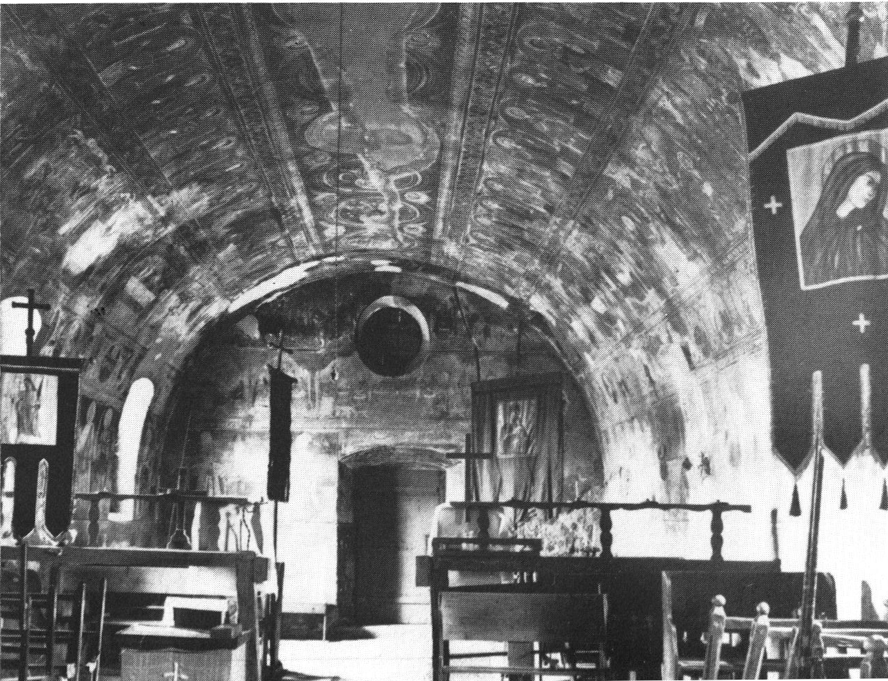
Tordáról megyünk tovább dél felé. Az út a Keresztesmező tágas völgyén vezet át, amely Várfalva (Moldovenești) és Aranyosgyéres (Câmpia-Turzii) közt húzódik. Itt vívta Decebal dák király 106-ban utolsó csatáját a rómaiakkal. Később országgyűlések színhelye is volt.
Felvinc (Unirea) vasútállomása a Maros túlsó partján fekvő Marosújvár állomása is. Felvinc Árpád-kori település, hajdan az Aranyosszék – a székelyek zömétől külön levő székely szék – főhelye volt. V. István adományozta a Küküllők vidékéről ide telepített székelyeknek. A Kamaradombon állt a királyi sóvámépület, egy másik magaslaton pedig a Zsidóvár, mely a Maros menti út ellenőrzésére a XVI. században épült földvár volt.
Marosdécse (Decea) határában kb. 5000évvel ezelőtti,új kőkorszaki civilizáció emlékét fedezték fel, amelyet a régészek marosdécsei kultúraként tartanak számon.
Miriszló (Mirăslău) község mellett, a szőlőhegyek tövében volt 1600. szeptember 18-án a döntő ütközet Vitéz Mihály (Mihai Viteazul) havasalföldi fejdelem és Basta osztrák tábornok csapatai között, amely a román fejedelem vereségével végződött Az ütközet emlékműve az út bal oldalán látható, jobb oldalán pedig az 1944. évi őszi harcokban itt elesett román katonák temetője van.
Nagyenyed (Aiud) az Enyedi-patak mentén, az Őr-hegy lábánál, védett völgykatlanban, 270 m magasan fekszik. Lakóinak száma a vele egyesített tíz helységgel együtt 22 000.
Ma Alsó-Fehér megye (județul Alba) fontos gazdasági központjainak egyike, jelentős helyi iparral. Szőlővidékének borai Erdély-szerte a legkiválóbbak közé tartoznak. A város fölötti Őr-hegyről szép a kilátás.
A rómaiak idejében Brucla nevű erősség állt a helyen. A várost a XIII. században a szászok újraalapították. A középkorban jelentős kereskedelmi és bortermelő központ volt. A borospincék az egész város területét behálózták. A XVI. században többször is országgyűlések székhelye volt, s 1564-ben az itteni zsinaton vált szét a szász evangélikus és a magyar kálvinista egyház.
A város központjában van az egykori Piac tér, a Piața Republicii.
Nagyenyedtől 12 km-re fekszik Tövis (Teiuș), híres vásárhely és vasúti csomópont. Szász neve (Dreikirchen) utal az itteni három templomra. A tövisi katolikus templom a Hunyadi János által építtetett vagy átépíttetett négy emléktemplom egyike. (Gyulafehérvárott és Marosszentimrén még áll másik kettő, az orbói templomból azonban csak alacsony falromok maradtak a Nagyenyedre vezető országút mellett). 1448-ban Hunyadi alapította. A református templom a XIII. század második felében épült, román stílusban. Az ortodox templom a XVI. század elejéről való. Az utóbbi években restaurálták, s belsejében szép, XVIII. századi freskók vannak.
Marosszentimre (Sântimbru) délkeleti végén a Balázsfalva felé vezető út mellett áll a félig már romos református templom. 1442-ben Hunyadi János a törökök feletti győzelem emlékére a XIII. századi templomot gótikus stílusban átépíttette. A régi műemlékkel átellenben pompás új neobizánci görögkeleti templom áll.
Cuza Vodă tér/Piața Cuza Vodă
A nagyenyedi vár falait körbesétálhatjuk. Nagyjából négyzet alakú területét több bástya védte, egyrészt a sarkokon, másrészt a falakba épülve. A XV. században átépítették. A bástyákat védelmező céhekre a címerek emlékeztetnek. A várfalakhoz később lakóépületeket építettek, de ezek egy részét már lebontották, hogy a fal jobban érvényesüljön. Ma sok részlete romos.
A vár főbejáratától jobbra, a Bethlen-kollégium oldalszárnyával szemben a falban jelentéktelen kis emléktábla látható: 1849. jan. 8. E tábla tövében van a 700 nagyenyedi lakos tömegsírja.
A vártemplom eredetileg gótikus építmény a XV. századból, de a XIX. század elején barokk stílusban építették át. Kétoldalt 4–4 barokk pillér van benne a gótikus ablakok közén. Szentélyének mennyezete hálóboltozatos, jobboldalt van az orgona és a szószék. A szentéllyel szemben látható a karzat, az enyedi diákság egykori helye.
A templom tornya 65 m magas, zordon építmény, lőrésekkel.
Az evangélikus templom a vártemplom mellett áll. Ez a régi, 1333-ban épült egyház utóda. Az 1866-ban lebontott ősi templom helyén épült ez a torony nélküli templomocska.
Bővebben lásd:
www.varak.huCuza Vodă utca 24. sz./Str. Cuza Vodă nr. 24
Nagyenyedi Történelmi Múzeum a várfalhoz épült. A régi ház ma környékbeli prehisztorikus leletek, római emlékek, középkori történeti dokumentumok gazdag tárháza.
Bethlen Gábor utca 1. sz./Str. Bethlen Gábor nr. 1
Az 1622-ben Gyulafehérvárt alapított intézményt 1662-ben Apafi Mihály fejedelem a török dúlásai miatt ide költöztette, mivel itt nagy uradalma volt. A kollégiumnak egykor filozófiai, jogi és református teológiai fakultása volt. A fejedelmi alapítványokból a szegény, tehetséges székely gyermekeket nevelték itt. Jeles tanárai közül Ilosvai Benedek, Apáczai Csere János, Pápai Páriz Ferenc, Benkő Ferenc, Herepei Ádám, Szász Károly, Salamon Ferenc a legnevesebbek. A tanítványok sorából Bethlen Miklós, Bod Péter, Aranka György, Kőrösi Csoma Sándor, Kemény Zsigmond, Barabás Miklós, Bolyai Farkas, Áprily Lajos, Köteles Sámuel, Sütő András nevét kell megemlíteni.
1704-ben Tige labancai pusztították el Nagyenyedet és a kollégiumot. Jókai Mór örökítette meg a hős diákok emlékét („A nagyenyedi két fűzfa”), akik a labancokat fűzfadorongokkal verték agyon. 1849-ben azonban csak üszkös hamu maradt a nagy intézményből.
A kollégium 1862-ben épült fel újra, s fő homlokzata 1884–85-ben készült el. Mikó Imre gróf ritka művekből álló nagy könyvtárat s múzeumi értékű kőzet- és kövületgyűjteményt adományozott a kollégiumnak. Herepei Károly régész tanár sok kő- s bronzkori régiséggel, római leletekkel, Csató János kiváló botanikus és ornitológus pedig 3000 kitömött madárral és 60 000 darabból álló herbáriummal gazdagította a gyűjteményeit.
Ma a 66 000 kötet az épületben levő Bethlen Gábor dokumentációs könyvtár tulajdona. Anyagában igen sok becses kézirat is található. Ugyanitt a Természettudományi Múzeum kezeli a hajdani kollégium természetrajzi gyűjteményét.
Az 1704. évi labancdúláskor elesett 28 nagyenyedi diák emlékműve a Kápolna-dombon áll, a kollégium mögött.
Bővebben lásd:
lexikon.adatbank.transindex.roCuza Vodă tér 4. sz./Piaţa Cuza Vodă nr. 4
A nagyenyedi katolikus templomot 1745-től Jánosi Mór építtette, barokk stílusban. A főoltár Billinger Ágoston és Stegner Farkas műve, 1735-ben fejezték be. 1849-ben tetőzete elpusztult, de újjáépítették.
A templom oltárképe Szent Erzsébetet ábrázolja. A Szent Ferenc- és Szent Teréz-oltárt 1928-ban a kolozsvári minorita templomból hozták ide.
A templom tornya csak 1896-ban épült fel.
Cuza Vodă tér/Piaţa Cuza Vodă
A nagyenyedi görögkeleti templom neobizánci stílusú építmény. Homlokzatán szép, kör alakú mozaik van.
Belseje dúsan aranyozott, rendkívül színes és pompás. Faragott ülőszékei művésziek. Ikonosztáza alacsony, kupolafreskói igen szépek.
Marosújvár (Ocna Mureșului) a Maros bal partján 5 km-re fekszik Marosdécsétől. Mintegy 6800 lakosa van. Híres sóbányái már a rómaiak korában működtek. Salinaenek nevezték őket. A magyar királyság idejében a XIII. század óta említik az oklevelek. Árpád-kori templomának romja még áll. Szódagyára 1896-ban épült, ma hatalmas üzem. Jelentős ezenkívül a só- és dohányfeldolgozás is. A sót régebben a Maroson szállították, ezért a városnak nagy kikötője volt. Fürdőtelepének sósfürdóje jó hatású a mozgásszervi és idegbetegségekre. A marosújvári sómező nagysága 1200 m hosszú, 800 m széles, vastagságából 180 m van feltárva.
Magyarszentbenedek (Sinbenedic) a Marosújvárból Dicsőszentmártonba vezető úton van, a Forró-patak völgyében. A XIV. században épült unitárius temploma védett műemlék, bár erősen átépítették. Tornya aránylag alacsony, magas sisakkal. A szentély hosszú. A hajó kazettás mennyezete 1702-ben készült, nemes, finom mintákkal.
Marosnagylak (Noșlac) Marosújvártól kelet felé 7 km-re, a Maros bal partján levő hegyfokon áll. Kéttornyú gótikus temploma 1298 óta ismert. A templom hívei a szabadságharc idején elpusztultak.
A Nagyenyedhez tartozó Felenyed községnél elágazik az út egyrészt Torockó felé, másrészt Szabaderdőnél Remete irányába. Torockó felé a Kőköz (Cheile Aiudului) nevű, 16 km hosszú hegyszoroson át vezet az út. Torockószentgyörgy (Colțești) XIII. századi eredetű romos várát érdemes megnézni. Torockó nemcsak a Székely-kőről, hanem egykori vasbányászatáról és népviseletéről is híres. Az útközben látható sziklafalak barlangjaiba menekült az enyedi kollégium 1704-ben a labancok elől.
Remete (Rimeți) közelében van egy XIV. századi, gótikus stílusú kolostortemplom szép freskókkal. Innen 3 kilométerre fekszik a Remetei-sziklaszoros (Cheile Rimeților) természetvédelmi terület, vad, romantikus szakadék, ahol havasi gyopár is virít. (A gyopár védett virág!)
Tövisről felkereshetjük az egykori római út, a Via Magna mentén sorakozó falvakat.
Diód (Stremț) a Balassa család birtoka volt. Mellette látható egy XV. századi vár romja.
Diódtól északnyugatra Felgyógy (Geoagiul-de-Sus) ortodox temploma a hagyomány szerint Radu cel Frumos havasalföldi vajda támogatásával 1521–25 között épült. Belsejében szép freskók vannak. A vajda a környéki falvakat kapta adományként.
Felsőgálda (Galda-de-Sus) Hegyalja bortermő vidékének közepén, Diódtól nyugatra a Kecske-kő(Piatra Craivii, 1208 m) alatt terül el. Innen vezet dél felé a Via Magna, a műúttól nyugatra.
Boroskrakkó (Cricău) XIII. századi református templomát 1970-ben restaurálták. Innen két óra gyaloglással Bucerdea Vinoasă – Borosbocsárdon keresztül jutunk el a Kecske-kő délkeleti fennsíkjára, ahol a XIII. századi magyar vár romjai és az 1960-ban feltárt Apulon dák vár maradványai találhatók. E fontos dák településről kapta a mai Gyulafehérvár hajdani római nevét (Apulum).
Magyarigen (Ighiu) községben lelkészkedett Bod Péter (1712–69) neves irodalmár, történész, az erdélyi művelődés kimagasló alakja. Barokk síremlékét és családi sírkövét az itteni templomkertben találjuk. A két sírkő közé 1969-ben emlékoszlopot állítottak. A bekerített szép, késő barokk templomban állandó Bod Péter-kiállítás látható. Az 1848. évi áldozatok (200 lakos) sírja a volt katolikus iskola kertjében van.
Innen nyugatra van Celna (Țelna) híres szőlőtermő vidék. A faluval szomszédos Teleki-pincében ma is a legkiválóbb borokat tárolják.
Cuza Vodă u., Nagyenyed
www.aiudulmeu.roClujului u., 80. sz., Tövis
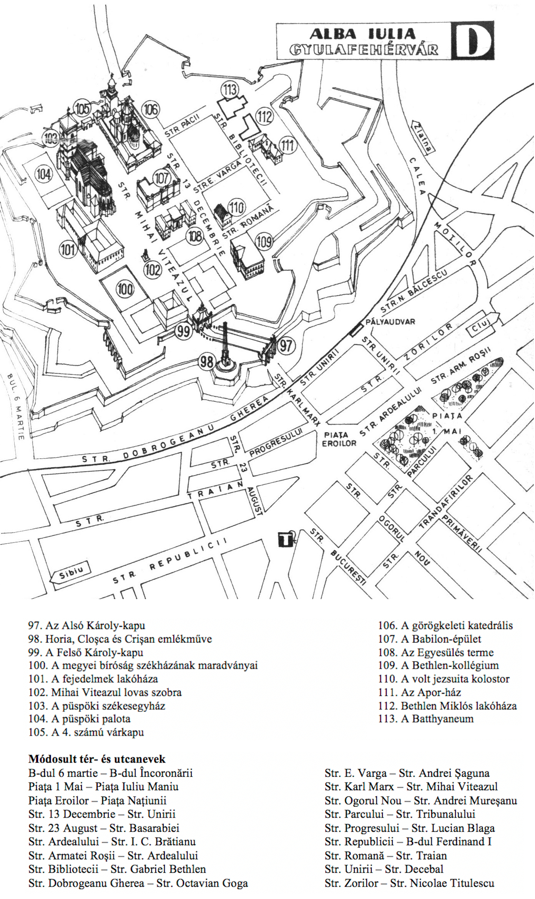
A város Alsó-Fehér megye (județul Alba) székhelye, a Maros völgyében az Ompoly torkolatánál, 232 m magasan fekszik. Több mint 55 000 lakosa van. Fontos közlekedési csomópont. Innen indul ki az Ompoly-völgy útja és keskeny vágányú vasútvonala.
Az egyetlen erdélyi katolikus püspökség székhelye. Ma a megye kultúrközpontja és iskolavárosa, de egyben iparváros is. Kilenc állami vállalat van itt. Építőanyag-, gép-, fémfeldolgozó gyárai, nyomdája, könnyű- és élelmiszeripara jelentős.
Ezen a helyen már hét-nyolcezer éve laknak emberek. Itt állott a római Apulum, amelyet teljesen eltüntettek a népvándorlás hullámai. Ezután a szlávok kezére került, majd az első Bolgár Birodalom vára lett Belgrad (Fehérvár) néven. Gyula leverése után I. István idején királyi birtokká lett. Püspökségét az Árpád-kor elején alapították. A mongolok 1241-ben elpusztították, de gyorsan újjáépült. 1437-ben, a tizedköveteléseivel parasztfelkelést kiváltó Lépes György püspök székhelye volt. A Dózsa-féle parasztháború leverése után Dózsa felnégyelt testének egy darabját a város kapujára tűzték ki. A XVI. században a város az erdélyi fejedelemség székhelye lett. Amikor a tordai országgyűlés 1542-ben Izabella királynét János Zsigmonddal befogadta, az itteni püspöki uradalom javait foglalták le udvartartásuk számára. Vitéz Mihály havasalföldi fejedelem 1599 novemberében elfoglalta Gyulafehérvárt, s egy ideig az uralkodói jogkört ő gyakorolta. 1572-ben e fejedelmi székhelyen jött létre az első állandó erdélyi román püspökség. Bethlen Gábor itt alapította a későbbi enyedi kollégiumot (1622). II. Rákóczi György alatt, 1658-ban a török–tatár hadak elpusztították, a kollégium ekkor menekült Nagyenyedre. 1715-ben a reformáció idején megszűnt katolikus püspökséget újjáalakították, ugyanakkor III. Károly parancsára megépült a jelenlegi vár. (A város ekkor kapta a német Karlsburg nevet.) Az 1784. évi Horia–Cloşa-féle parasztfelkelés több tragikus mozzanata is Gyulafehérvárhoz fűződik.
A szabadságharc alatt a vár osztrák kézen volt. Itt fegyverezték fel a román felkelőket és innen irányították az erdélyi magyarság ellen. Az ide felhurcolt magyarokat a vár sáncaiban végezték ki. Itt volt bebörtönözve Varga Katalin, a mócok pártfogója.
1918. december 1-én a városban tartották meg a románok azt a nagygyűlést, amely kimondta Erdély egyesülését a román királysággal.
A város két részből áll, a síkon lent van az ún. Alsóváros és efölött a hegyen a vár, ahol a műemlékek vannak. A vár a középkori fejedelmi erősség romjain és maradványainak felhasználásával épült, Vauban-rendszerű, csillag alakú erődítmény.
Mihai Viteazul utca/Str. Mihai Viteazul
Az Alsó Károly-kapu a vár 1. számú kapuja. A háromrészes barokk építményt Johann König bécsi szobrász és társai készítették.
A középső rész tetején Ausztria címere látható, a jobb oldalién Mars isten, a bal oldalién Venus szobra áll. A kapu két szélén egy-egy kőből faragott bomba van, a két szélső bejárat fölött pedig két dombormű. Az egyik Héraklész és Anteusz küzdelmét, a másik Aeneast és atyját, Anchisest ábrázolja. A kapu belső oldalán is van két dombormű (Perszeusz a Gorgó-fejjel, Héraklész és a nemeai oroszlán).
Bővebben lásd:
www.kozterkep.huMitropolit Simion Stefan utca/Mitropolit Simion Stefan
A 22,5 m magas obeliszket 1937-ben állították fel.
Bővebben lásd:
www.kozterkep.huMihai Viteazul utca/Str. Mihai Viteazul
A Felső Károly-kapu épségben maradt fenn. Míg az alsó inkább diadalívszerű, dekoratív jellegű, ez valóban a várat zárta. A kapu fölött középen áll III. Károly lovas szobra, a fríz alatt pedig Ausztria címere, amely Erdély címerét bekebelezi. Jobb oldali domborműve III. Károlyt és Savoyai Jenőt ábrázolja, a bal oldali pedig Savoyai Jenő diadalmas visszatérését. A kapu helyiségeiben tartották fogva Horeát és társait. A kapu belső oldalának négy felső szobra a négy erény allegóriája. A párkányt harci jelenetek díszítik, s a szélső domborművek is csatajeleneteket ábrázolnak. A bal oldalin Steinville-, a jobb oldalin Sforza-címer látható. A kapualjból kőlépcső vezet a kapu tetejére. A kapu teraszán Horia szobra és egy emléktábla van.
A hagyomány szerint Horiát kivégzése előtt a Károly-szobor alatti kis helyiségben tartották fogva.
Bővebben lásd:
www.kozterkep.huMilitari utca 4. sz./Str. Militari nr. 4
Itt állították bíróság elé az 1784. évi parasztfelkelés vezéreit, később pedig Varga Katalint, az Erdélyi-érchegység bányászküzdelmeinek irányítóját (1847). Az épület megmaradt fala mögötti udvar végén láthatók a fejedelmi időszak várfalmaradványai.
Militari utca 6. sz/Str. Militari nr. 6
A fejedelmek lakóháza eredetileg az erdélyi püspökök palotája volt. Izabella királyné alakíttatta át, Bethlen Gábor kibővíttette, s II. Rákóczi György idején még freskók, szobrok díszítették, és értékes műkincsek voltak benne felhalmozva. Itt lakott Vitéz Mihály is, amikor Erdélyt elfoglalta. Tartottak itt országgyűléseket is. 1658-ban és 1662-ben a törökök feldúltak s 1700-tól kaszárnya lett belőle. A katolikus püspökség csak jelentéktelen részét kapta vissza.
Mihai Viteazul utca/Str. Mihai Viteazul
Vitéz Mihály, az egyik legnagyobb román uralkodó 1593–1601-ig Havasalföld, 1600-ban Moldva fejedelme volt. 1599-ben – a Báthoriak ellen felbőszült székelyek segítségével – Erdélyt is elfoglalta. Erdélyt, Moldvát és Havasalföldet akarta uralma alatt egyesíteni, de Basta, miután céljait elérte, orvul megölette.
Mihai Viteazul utca 19. sz./Str. Mihai Viteazul nr. 19
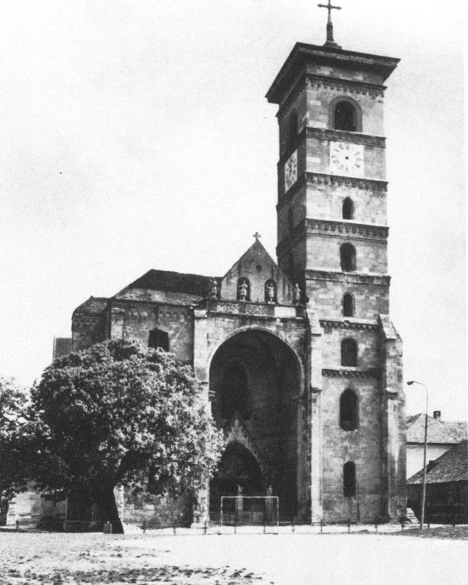
A püspöki székesegyház Erdély legmonumentálisabb román kori építménye, jelentős későbbi kiegészítésekkel. A mai székesegyház alatt egy kisebb méretű, XI. századból való bazilika maradványait tárták fel. A jelenlegi székesegyházat a XII. század végén román stílusban kezdték építeni. Ez a tatárjáráskor leégett, boltozata és szentélye beomlott. A tatárjárás után gótikus stílusban fejezték be az épületet. A XIII. század 70-es éveiben a régi szentély helyett a támpilléres, sokszögzáródású új szentély épült. A szászok által 1277-ben felgyújtott templomot 1287-ben újból helyre kellett állítani. A délnyugati torony két emeletét és a főhajó boltozatát Széchy András püspök építtette (1320–56). A délnyugati torony felső részét Hunyadi János emeltette, főpárkányát pedig Bethlen Gábor helyeztette rá. Sisakja csak a XIX. század közepén készült el. Az épületben a reneszánsz stílust Lászai János kápolnája (1512) képviseli. 1519-ben Várday Ferenc püspök a Széchy-kápolnát bővítette. A nyugati barokk oromzatot Visconti készítette III. Károly rendeletére. A déli oldal sekrestyéje szintén barokk alkotás. A templom 1556 és 1716 között sok kárt szenvedett, eredeti, felbecsülhetetlen művészi értékű belső berendezése a fosztogatások és gyújtogatások következtében elpusztult.
A mai háromhajós, keresztalaprajzú székesegyház hétszáz év alkotásának eredménye. Hosszú hajóit dúsan tagolt és szép fejezetű pillérek választják el egymástól. A hat pillérpárból minden második erősebb, mert a keresztboltozatot tartja. A mellékhajók keresztboltozatának száma a főhajóénak kétszerese. A szentély meghosszabbított, déli oldalán van a barokk sekrestye. A kereszthajó északi szárnya és a mellékhajó szögletében van a Lászai-kápolna.
A templom kőfaragványai közt valamennyi középkori stílus képviselve van. A déli bejárat belső timpanonja utólagos elhelyezésű. A XIII. századi déli kapu román díszítményei, a kereszthajó északi falában szintén utólagos elhelyezésű apostolszobrok és egyéb domborművek délnémet hatásra vallanak.
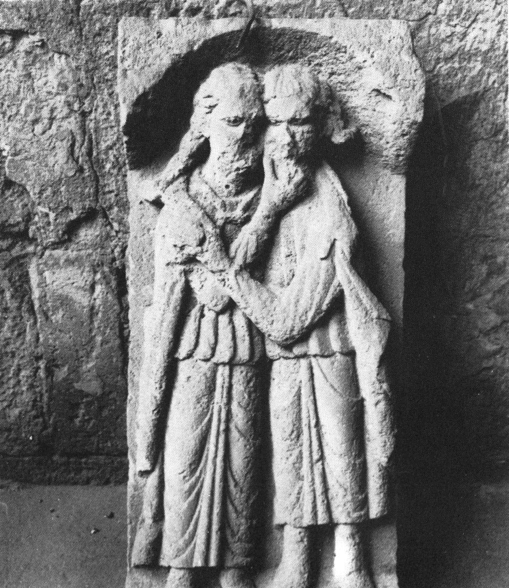
A templomban vannak Hunyadi János, valamint öccse, ifjabb János, Hunyadi László, Izabella királyné és János Zsigmond szarkofágjai. Az északi hajóban gótikus püspöki síremlékek, az északi mellékszentélyben XVI. századi alakos falképmaradványok láthatók.
A székesegyházban van Martinuzzi György, Bethlen Gábor és I. Rákóczi György sírja. A sírokat és síremlékeket az idők során feldúlták, kirabolták, a tetemeket szétszórták.
A közelmúltban folyt restaurálással kapcsolatban ásatásokat is végeztek. Falfestmény is került elő.
A templomban hivatalos vezető teljesít szolgálatot és részletes magyarázattal is szolgál.
Bővebben lásd:
www.ersekseg.roMihai Viteazul utca 21. sz./Str. Mihai Viteazul nr. 21
A püspöki palota a vár északnyugati sarkában van. Szerény épület, középkori magját többször átépítették. Közepén, a kis udvar kertjében sok a római emlék.
Jelenleg Erdély egyetlen katolikus püspöksége. A régi gyulafehérvári püspökök közül érdemes megjegyezni Batthyány Ignác (1780–98) nevét, aki a trinitárius kolostorban elhelyezett hatalmas könyvtárat és műgyűjteményt alapította meg. Haynald Lajos (1852–64) püspök pedig nagy botanikus volt, s könyvgyűjteményével és világhírű herbáriumával a Magyar Nemzeti Múzeum Növénytárának megalapítását tette lehetővé.
1979-ig az erdélyi püspök a csíkszentdomokosi születésű Márton Áron, egyszerű székely szülők gyermeke volt.
a Mihai Vitezul utca/Str. Mihai Viteazul végén
A 4. számú várkapu a székesegyház és az ortodox katedrális között áll. A barokk stílusú, egynyílású kapu közepén Ausztria címere, két oldalán pedig egy-egy fríztartó Atlasz-szobor látható. A kapu a Károly-kapuhoz viszonyítva nagyon egyszerű, szinte dísztelen, ugyanúgy, mint az utca végén található 5. és 6. számú kapu is.
Mihai Viteazul utca/Str. Mihai Viteazul
A görögkeleti katedrális a katolikus székesegyház mellett áll. Hatalmas, reprezentatív építmény. 1921 és 1922 között épült, V. Ștefănescu építész tervei alapján, a târgoviștei fejedelmi templom mintájára, a régi havasalföldi bizánci stílus jegyeinek átvételével. Püspöki székhely, koronázó templom. Bejárata két oldalán hatalmas fehér márványtáblák hirdetik Nagyrománia és a két román egyház egyesülését. A tornáccal övezett katedrálisnak hatalmas (52 m magas) harangtornya van a bejárat előtt. A körtornácon kőtár van elhelyezve. A nyitott előteret (pridvor) az evangélisták mozaikképei díszítik.
A pronaoszban látható Vitéz Mihály és felesége, Stanca fejedelemaszszony képmása.
A katedrálisban koronázták meg 1922-ben Ferdinándot Nagyrománia királyává.
Mihai Viteazul utca/Str. Mihai Viteazul
A Babilon-épület az ortodox katedrálistól keletre van. 1851-ben épült, eklektikus stílusban. Hatalmas méretei miatt kapta a nevét a helybeli lakosságtól.
A Városi Múzeum a Babilon-épületben van. 1888 óta áll fenn, s gazdag gyűjteményében 55 000 tárgy, az 1784. és 1848–49. évi eseményeket dokumentáló gazdag anyag mellett régészeti, történelmi, néprajzi és képzőművészeti részlege is van.
Mihai Viteazul utca 12. sz./Str. Mihai Viteazul nr. 12
Az Egyesülés terme eredetileg a közös hadsereg tiszti kaszinójaként épült 1908-ban. 1918-ban itt mondták ki Erdély egyesítését Romániával. Az épületen nagy márványtábla emlékeztet a történelmi eseményre. Belül Pierre Bellet francia művész történelmi tárgyú freskói láthatók. Az épület szintén a múzeum tulajdonában van.
Az Egyesülés termétől délre levő kis parkban áll az 1866. évi olaszországi custozzai harcokban elesett gyulafehérvári katonák emlékműve (1906). A másik emlékművet a piski csatában (1849. február 9.) halálos sebet kapott Losenau ezredesnek és osztrák katonáinak állították.
Bővebben lásd:
www.muemlekem.huSuluțiu Alexandru Sterca utca 2. sz./Suluțiu Alexandru Sterca nr. 2
A Bethlen-kollégium a Bethlen Gábor által alapított ősi református intézmény, a nagyenyedi kollégium elődjének épülete, amely később osztrák kaszárnya lett. Egyszerű építmény, külső és belső díszítése eklektikus.
Bővebben lásd:
www.muemlekem.huBethlen Gábor u. 5. sz./str. Bethlen Gábor nr. 5
A volt jezsuita kolostor az 1903–1906-ban épült általános iskola mögött ma internátus. Ebben a XVI. századi emeletes épületben volt a Bethlen-kollégium könyvtára. Itt kezdte el bibliafordítását Káldi György 1605-ben.
Bethlen Gábor utca 5. sz./Str. Gabriel Bethlen nr. 5.
Az Apor-ház reneszánsz műemléképület. Az Apor család építtette a XVII. században.
Bővebben lásd:
www.muemlekem.huBethlen Gábor utca/Str. Bethlen Gabor
Bethlen Miklós lakóháza szintén XVII. századi reneszánsz épület. Hajdani tulajdonosa, Bethlen Miklós erdélyi kancellár, önéletírásával a magyar irodalomban is megörökítette nevét.
Bethlen Gábor utca 1. sz./Str. Bethlen Gábor nr. 1
A Batthyaneum a római katolikus püspökség egykori könyvtára, ma múzeum. A hajdani trinitárius templom és rendház 1719-ból származó épületében Batthyány püspök létesítette. Ugyanitt csillagvizsgálót is berendezett.
Az 1792-ben alapított könyvtárnak ma 59 000 kötete van, azonkívül 580 ősnyomtatvány, 19 000 okmány, 1230 kézirat, több világhírű kódex, továbbá régiséggyűjtemény, egyházi gyűjtemény és éremgyűjtemény teszi különösen értékessé. Copfstílusú nagyterme az egykori templom hajója. Igen gazdag az Erdélyre vonatkozó gyűjteménye, ezért fontos kutatási bázis. Itt vannak a gyulafehérvári, aradi, kolozsmonostori apátsági és hiteleshelyi oklevéltárak maradványai, az erdélyi vajdák, fejedelmek és magyar királyok okmányai. Itt őrzik a „Gyulafehérvári sorok” néven ismert, 1310 tájáról származó magyar nyelvemléket is.
A román kultúra szempontjából nagy jelentőségűek a könyvtár román ősnyomtatványai.
Bővebben lásd:
www.muemlekem.huAlvinc, Mihai Eminescu 27. sz./Vințu de Jos, Str. Mihai Eminescu nr. 27
Az alvinci kastély Fráter (Martinuzzi) György építtette egy domonkos kolostor helyére. Valószínűleg megerősített udvarház lehetett. Jelenlegi alaprajza a XVII. század elején alakulhatott ki, Giacomo Resti, Bethlen Gábor építésze tervezésében. A XVII. századi építést Brassai Kőműves János kolozsvári kőfaragó végezte. 1715-ben a kastély a gyulafehérvári káptalané lett, s 1733-ban átépítették. Barokk kapuzatát ekkor kapta. Ma már nagyrészt romos, csupán északi szárnyának emeletes része áll. Ennek homlokzatán háromszöges lezárású ablakok, udvari oldalán pedig kettős, északolasz jellegű ikerablakok vannak. A fennmaradt részletek a lombard cinquecento Bramante hatású irányára vallanak.
Castaldo megbízásából e kastélyban gyilkolták meg felbérelt orgyilkosok (Ferrari, Sforza, Pallavinici) 1551. december 17-én Fráter György bíborost, két puskalövéssel és hetvenöt szúrással.
A kastély később a Kemény családé lett, s itt született a híres regényíró és publicista, Kemény Zsigmond (1814–1875).
Bővebben lásd:
www.kastelyerdelyben.roA várost a Mócok útján (Calea Moţiloron) keresztül északnyugat felé a 74. számú műúton hagyjuk el, mely Zalatnára, Abrudbányára, majd Brádra vezet. (A város feletti Hegyalja községeit tövisi kirándulásunk során már megismertük.)
Sárd (Șard) – az erődített gótikus református templomot érdemes megnézni, nyugatnak kanyarodik az Ompoly völgye és egyre festőibbé válik. A vasút és a közút párhuzamosan halad vele. Ompolygyepű (Presaca Ampoiului) vasúti megállóhely előtt van az 1848. október 24-én ártatlanul kivégzett 700 menekülő zalatnai magyar tömegsírja, obeliszkjén „Pax” felirattal. Ompolygyepűn túl a völgy kitárul, majd balról a Zsidó-hegy (978 m) cukorsüveg alakú erős kúpja alatt ősi bányaváros fekszik.
Zalatna (Zlatna, Schlatten) az Erdélyi-érchegységben 462 m magasan fekvő ősrégi település. Több mint 3700 lakosa van. Jelentős ipari és bányászváros. Régi, szláv eredetű nevét az aranyról (zolota) kapta.
A rómaiak idején Ampelum néven a „procurator aurarium”-nak, a daciai aranybányászat irányítójának székhelye volt. A bolgár–szláv időkben is folytatódott a bányászat, ebből az időből maradt fenn a község jelenlegi neve. II. Géza szász bányászokat telepített ide, majd V. István adományaképpen a gyulafehérvári káptalan tulajdonába került. 1648-ban II. Rákóczi György Körmöcbányáról telepített át bányászokat. A város lakossága bányász- és parasztmozgalomban is részt vett.
Zalatna ortodox temploma 1424-ben épült gótikus stílusban, de később átalakították. Értékes régi freskómaradványok láthatók benne.
Alvinc (Vințu de Jos) fontos vasúti gócpont, a nagyszebeni vasútvonal itt tér el a Gyulafehérvár felé vezető szárnyvonaltól.
A helységet a XII. században szászok alapították. Bethlen Gábor alatt szászok közé telepedett morva és magyar anabaptisták telepe lett. Ezek az anabaptisták a habánok voltak, akik Svájcból Ausztrián át jutottak morva földre, majd onnan a Felvidékre. A XVII. században egy részük Erdélybe költözött. Kiváló fazekasok lévén, messze földön megalapozták az alvinci habán kancsók hírét. 1690-ben Törökországból menekült bolgárokat is telepítettek ide. 1849. február 12-én Bem Alvincnél győzelmet aratott az osztrákokon.
A község református temploma a XIII. századból való.
Sfântul Capistrano sétány, 28. sz.
turism.apulum.roGyulafehérvárt a Marosportus nevű külvároson át hagyjuk el. Itt volt a régi kikötő, ahol hajdan nagy só- és faraktárak álltak.
Lámkerék (Lancrăm) eredetileg szász városka volt. Itt született Lucian Blaga (1895–1961) neves román költő.
Lámkerék közelében van a Vörös-szakadék (Râpa Roșie) természetvédelmi terület, egy igen érdekes szakadék, ahol a vörös kőzet különféle rétegei figyelhetők meg a szurdok oldalán.
Szászsebes (Sebeș, Mühlbach) a Sebes partján fekszik. Lakossága több mint 20 000. Polgárai jobbára szőlőművelők, határában jó bor terem. Eredetileg szász település II. Géza korából. 1241-ben a mongolok elpusztították. A XVI. század végén a városban vár is épült, de nem tudott védelmet nyújtani a törökök ellen, akik annyira megtizedelték lakosságát, hogy a XVIII–XIX. század folyamán újabb német telepesekkel kellett pótolni. Az ásatások azt bizonyítják, hogy hajdan sepsi székelyek laktak itt. Erre utal a város neve is.
Fő útvonalunk eleinte a Székás-patak völgyében vezet, párhuzamosan a vasúttal. Szerdahelytől kezdve elhagyjuk a Maros völgyét és áthaladunk az Olt felé a vízválasztó fennsíkján.
Szerdahely (Miercurea) község a főútvonal első állomása. Már a rómaiak idejében lakott hely volt.
Nagyapold (Apoldul-de-Sus) község ősrégi lakott hely. Itt volt Cedonia római telep. Középkori erődtemploma szintén műemlék.
Kereszténysziget (Cristian, Grossau) lakosságát 1658-ban a törökök kiirtották, ezért osztrák telepeseket hoztak helyükbe.
Thököly Imre (1667–1705), miután 1690-ben Zernyestnél török segítséggel leverte Heister és Teleki Mihály egyesült seregét, Keresztényszigetre rendelt országgyűlést, ahol Erdély fejedelmévé választatta magát. Thököly pályafutása során a túlerőben lévő osztrákok elől kétszer is a Havasalföldre menekült, s életét végül is török emigrációban fejezte be. 1906-ban hozták haza hamvait, és a késmárki templomba helyezték.
a város közepén
Az északnyugati sarkon áll a Csizmadiák bástyája. Az északi várfal közepe táján van az északi kaputorony, az északkeleti sarkon a nyolcszögű toronybástya, s végül a délkeleti sarkot a Szabó-bástya (Deák-bástya) védte.
Városháza tér 6. sz./Piața Primăriei nr. 5
A szászsebesi evangélikus templom, a város kiemelkedő dísze és jelképe, a főtér közepén áll. A XIII. század elején épült román stílusú egyházat a tatárok 1241-ben feldúlták, ezért a XIII. század második felétől gótikus stílusban többször is bővítették, bazilika jellegét azonban megtartotta. Zömök tornya román stílusú maradt. A templom külső pilléreit szentek szobrai díszítik. A templom falán legutóbbi restaurálásakor 1545 előtti freskók nyomát tárták fel.
A templom XIV. század utolsó harmadában épített csarnokszentélyének egyik zárókövén Nagy Lajos struccos sisakdísze látható. Gyönyörű reneszánsz szárnyas oltárát egyesek Wit Stwosz (Veit Stoss), mások az ő iskolája művének tartják. 1524 körül készült, s II. Lajos és Szászsebes címere látható rajta. A szekrény Krisztus családfáját ábrázolja, a szárnyak négy domborműve: Angyali üdvözlet, Mária és Erzsébet találkozása, A napkeleti királyok, Jézus körülmetélése.
A predella Utolsó vacsorája és az oromzat Szentháromság-képe későbbi kiegészítés. A csukott oltár nyolc képtáblája Jézus életét ábrázolja.
A templom udvarának keleti részén áll az 1383-ból származó, gótikus stílusban épült Szt. Jakab-temetőkápolna.
A templom szentélye mögött látható az átépített, egykori céhcsarnok, a céhek elárusítóhelye, és a templom szomszédságában az egykori evangélikus algimnázium épülete.
Mihai Viteazul utca 4. sz. , Szászsebes/Strada Mihai Viteazul nr. 4, Sebeş
A Zápolya-ház XVI. századi építmény, későbbi barokk külsővel. Itt halt meg 1540-ben Zápolya János király. 1556-ban és 1659-ben országgyűlést tartottak az épületben, ahol ma múzeum van, s tíz terme 8000 tárggyal a város múltját mutatja be.
Mihai Viteazul utca/Strada Mihai Viteazul
A szászsebesi katolikus templom a XV. században épült, domonkosrendi kolostorral. A XVIII, században mindkettőt átépítették a ferencesek. A templom a XIV. századból származik, de eredeti stílusából alig őrzött meg valamit.
A kelneki vár a főúttól 5 kilométerre van. A XIII. században építették, egy vaskos donzsonból és két falgyűrűből áll. A 80-as években restaurálták.
Bővebben lásd:
WikipédiaKelnek 517205/Câlnic 517205
Az evangélikus templom a XIII. században épült, és a XV. században vették körül védőfallal. A falon belül élelmiszerraktárakat is építettek, hogy ostrom esetén hosszabb ideig tudják tartani magukat a védők.
Bővebben lásd:
WikipédiaA keresztényszigeti evangélikus templom, helyesebben templomerőd a falu közepén áll. A XIII–XV. században épült és stílusában a román és a gótikus elemek keverednek.
Itt tulajdonképpen már Nagyszeben területén vagyunk, mivel a falut a városhoz csatolták a közeli Turnișor –Kistorony helységgel együtt, ahol XIII. századi evangélikus templom van.
Péterfalva (Petrești) után Sebeshely (Sebișel) községben Sava Hentia román festőművész emlékházát tekinthetjük meg. Szászcsór (Săsciori) községen át jutunk az oasai egykori nagy gáthoz, amely a tutajozás idejében a vizet gyűjtötte össze. Az út a Lacul Vidra (mesterséges duzzasztott víztároló) közelében átmegy a Kárpátok gerincén. Útközben több menedékházat találunk.1. Kirándulás a Sebes völgyébe. Péterfalva (Petrești) után Sebeshely (Sebișel) községben Sava Hentia román festőművész emlékházát tekinthetjük meg. Szászcsór (Săsciori) községen át jutunk az oasai egykori nagy gáthoz, amely a tutajozás idejében a vizet gyűjtötte össze. Az út a Lacul Vidra (mesterséges duzzasztott víztároló) közelében átmegy a Kárpátok gerincén. Útközben több menedékházat találunk.1. Kirándulás a Sebes völgyébe. Péterfalva (Petrești) után Sebeshely (Sebișel) községben Sava Hentia román festőművész emlékházát tekinthetjük meg. Szászcsór (Săsciori) községen át jutunk az oasai egykori nagy gáthoz, amely a tutajozás idejében a vizet gyűjtötte össze. Az út a Lacul Vidra (mesterséges duzzasztott víztároló) közelében átmegy a Kárpátok gerincén. Útközben több menedékházat találunk.
Szászsebestől 8 km-re kitérőt tehetünk Kelnekre (Cilnic). Majd innen tovább mehetünk Szászgorbó (Gârbova) felé, ahol szintén van egy XIII. századi várrom és egy omladozó Árpád-kori templom.2. Szászsebestől 8 km-re kitérőt tehetünk Kelnekre (Cilnic). Majd innen tovább mehetünk Szászgorbó (Gârbova) felé, ahol szintén van egy XIII. századi várrom és egy omladozó Árpád-kori templom.2. Szászsebestől 8 km-re kitérőt tehetünk Kelnekre (Cilnic). Majd innen tovább mehetünk Szászgorbó (Gârbova) felé, ahol szintén van egy XIII. századi várrom és egy omladozó Árpád-kori templom.
Szerdahelytől 1 km-re letérhetünk Polyán (Poiana-Sibiului) felé, amely szebenvidéki juhászok ősi faluja, tipikus hegyvidéki román pásztorközség. Művelődési házában népművészeti múzeum van. Innen a Szebeni-havasokba lehet kirándulni.3. Szerdahelytől 1 km-re letérhetünk Polyán (Poiana-Sibiului) felé, amely szebenvidéki juhászok ősi faluja, tipikus hegyvidéki román pásztorközség. Művelődési házában népművészeti múzeum van. Innen a Szebeni-havasokba lehet kirándulni.3. Szerdahelytől 1 km-re letérhetünk Polyán (Poiana-Sibiului) felé, amely szebenvidéki juhászok ősi faluja, tipikus hegyvidéki román pásztorközség. Művelődési házában népművészeti múzeum van. Innen a Szebeni-havasokba lehet kirándulni.
Apold után Săliște vasútállomásnál dél felé kitérhetünk Szelistye (Săliște) faluba, amely a régiek szerint szép asszonyairól volt híres. Innen merítette témáját Mikszáth Kálmán „A szelistyei asszonyok” című regényéhez. Két XVIII. századi ortodox templom és szép népművészeti múzeum van a faluban.4. Apold után Săliște vasútállomásnál dél felé kitérhetünk Szelistye (Săliște) faluba, amely a régiek szerint szép asszonyairól volt híres. Innen merítette témáját Mikszáth Kálmán „A szelistyei asszonyok” című regényéhez. Két XVIII. századi ortodox templom és szép népművészeti múzeum van a faluban.4. Apold után Săliște vasútállomásnál dél felé kitérhetünk Szelistye (Săliște) faluba, amely a régiek szerint szép asszonyairól volt híres. Innen merítette témáját Mikszáth Kálmán „A szelistyei asszonyok” című regényéhez. Két XVIII. századi ortodox templom és szép népművészeti múzeum van a faluban.
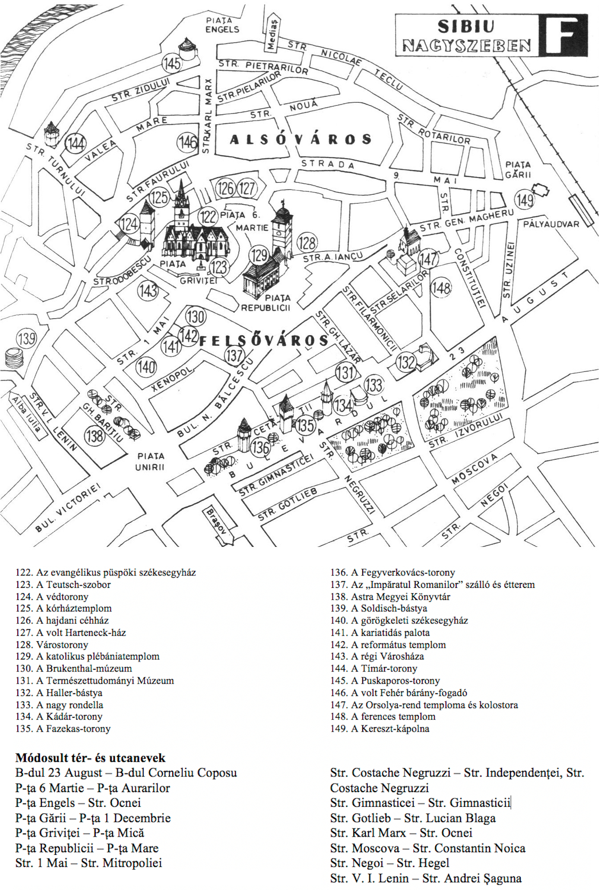
Szeben megye (județul Sibiu) székhelye a Szeben (Cibin)-patak völgyében, a Szebeni-havasok alatt, 427 m magasan fekszik. Már a középkorban Erdély legnagyobb iparos- és kereskedővárosa. valamint jelentős művelődési központja volt. Klasszicizáló neve Cibinum, szász neve Hermannstadt, a régi oklevelekben pedig „Villa Hermanni”.
A középkorban Brassóval együtt erődített város volt, s a mai napig a szászok „fővárosának” tekintik. Egyúttal, Brassóhoz hasonlóan, a dél-erdélyi románság egyik legfontosabb kultúrcentruma is. Fontos közlekedési és kereskedelmi csomópont. Régi hagyományokra épült iparral rendelkezik.
A város már régebben összeépült az északon fekvő Szent Erzsébettel és a tőle délnyugatra levő Kistoronnyal. A második világháború után további községeket olvasztott magába. Lakosainak száma így több mint 147 000.
A város környéke az új kőkorszak óta emberi lakhely volt. Határában feküdt Cedonia római település. A XII. században II. Géza telepítette be a szászokat, hogy védjék a Vöröstoronyi-szorost. A szebeni prépostságot 1191-ben alapították, és az erdélyi szász települések egyházi központja lett. 1224-ben II. Endre király szabadságlevele alapján Nagyszeben a szászok politikai szervezetének székhelye lett. A szebeni királybíró egyben a szászok comese (ispánja) is volt. A város 1876-ig, a szász önkormányzat megszüntetéséig a „Királyföld” (Königsboden) központja volt.
Első erődítését a XII. században építették, s miután a mongolok elpusztították, egy nagyobbat építettek helyébe. Első várfalövezete a főtemplomot vette körül. Ezután megépítették a második várfalövezetet a Kis-Ringgel, s végül a harmadik várfalövezetet a Nagy-Ringgel. Már a XIV. században Erdély legerősebb vára, a harmadik falöv (XV. század) elkészülte után pedig bevehetetlenné vált, noha a török 1432-ben 1438-ban és 1442-ben ismételten ostromolta.
19 céhe, 25 iparága és kereskedelmi hálózata elsősorban a Havasalföldet látta el termékeivel, de összeköttetésben állt a nyugateurópai kereskedelmi központokkal és a Levantéval is.
A jómódú városban előkelő szerepet játszottak az ötvösök, de híres volt posztógyártása és a fegyverművessége is. A gazdag város szinte egyenrangú félként tárgyalt a fejedelmekkel. Jellemző, hogy amikor egész Erdély Zápolya János kezében volt, két évig ostromoltatta Szebent, mely Pempfflinger Márk szebeni szász ispán vezetése alatt nem volt hajlandó elismerni fennhatóságát. A város erődítési vonalait ekkor már 40 torony védte. Nem utolsósorban ereje miatt lett a szászok főhelye, a szász Universitasnak (a legfőbb egyetemes igazgatási szervnek) központja. A reformáció idején a protestantizmus fellegvára Erdélyben. A Rákóczi-szabadságharc után jó időre az erdélyi gubernium székhelyét is ide helyezték át, s 1848–65 között is Erdély fővárosa volt.
A XVII. és a XVIII. században a városfalak már szűknek bizonyultak, s megkezdődött a város terjeszkedése a falakon kívül. 1836–65 között öt kaput leromboltak és a középkori házak helyén új városnegyedeket építettek. Az 1848–49. évi szabadságharc idején a császári katonaság központja és a román Nemzeti Komité székhelye lett. Bemnek az 1849. március 11-i győzelme után a város a honvédség megtorlásától rettegett, de csak sarcot vetettek ki rá. 1863–64-ben itt tartották azt az országgyűlést, amely határozatban fogadta el a háromnyelvűséget.
A kereskedelmi élet és az ipar fejlődésével járt együtt a pénzintézetek és bankok alapítása, Szebenben volt a szász „Vereinsbank” és a román „Albina”. A XIX. század közepétől a munkásság létszáma is megnőtt, 1870-ben megalakult a Munkásegylet. Nagyszeben a XIX. század közepétől az erdélyi román nemzeti mozgalom központja, az erdélyi görögkeleti érsek székhelye.
A szászok számtalan kulturális intézményt és egyesületet alapítottak, s ők voltak az erdélyi turisztika úttörői is (Siebenbürger Karpathen Verein). A dél-erdélyi hegyvidékek feltárása és menedékházainak megépítése a lelkes szász turistáknak köszönhető.
A város a XIV. század óta iskolavárosnak számít, s több nagynevű humanista munkálkodásának helye, [Itt született Oláh Miklós (1493– 1568), aki Magyarország prímása volt.] Kezdettől fogva szász művelődési központ is, s még a XIX. és XX. századi szász irodalom és tudomány is Szebenben virágzott.
Korán kialakult a szebeni román értelmiség is. Itt tanított egy ideig Gheorghe Lazăr, az egyik legnagyobb román pedagógus, s itt alakult meg 1861-ben a románok nagy kultúregylete, az „Astra”.
A középkori Belváros aránylag kis területen fekszik, tehát a látnivalók nincsenek messze egymástól. A városmag közepén van az Óváros, tőle északra az Alsóváros, délre pedig a Felsőváros. A központ a legelső vár területe a Huet téren.
A Huet térről XIX. századi vashíd és két sikátor vezet át a Kis térre (Kleiner Ring, Piaţa Mică). A teret műemlékházak övezik. Részben gótikus, részben későbbi árkádokkal (Laube) épültek. A huszonnégy legszebb épület között gótikus és barokk építmények is vannak. A 26. számú, 1568-ból származó házban volt hajdan a Fekete Medve gyógyszertár. Figyelemre méltóak a 25., 28. számú házak, valamint az őrtorony (24. szám).
A szomszédos Nagytér (Grosser Ring, Piaţa Mare) négyszögű hajdani piactér, amely emeletes házakkal, középületekkel van körülvéve. Keleti oldalának fontosabb épületei az evangélikus püspöki lak (1. sz.), a gótikus és reneszánsz Haller-ház, azonkívül a 6., 13., 15. és 20. számú épületek.
A Vár utcával (str. Cetății) majdnem párhuzamos a Corneliu Coposu sugárút. Ez a város legforgalmasabb utcája, a Huet teret (Piața Huet) köti össze a Egyesülés terével (Piața Unirii). Itt vannak az idegenforgalmi hivatalok, utazási irodák. Régen is ez volt a legforgalmasabb utca, tulajdonképpen 750 év óta a szebeni ipar és kereskedelem központja. 1633-ban, egy tűzvész alkalmából addigi faházai leégtek.
A Magheru utcából a templomnál ágazik ki az Avram Iancu utca. Házsorában a 7–11. és 19–31. sz. között várfal- és toronymaradványok láthatók. A 8. számú, ún. Brukenthal-ház Brukenthal Mihályé, Sámuel testvéréé volt. Barokk bejárata, oszlopos udvara, függőfolyosójának kovácsoltvas korlátja figyelemreméltó alkotás. A 9., 13., 21., 29. számú házon sok gótikus, reneszánsz és barokk elemet találunk. A 16. számú ház a XIV. században épült, gótikus stílusban.
A Magheru utca az Állomás térre (Piața Gării) visz. Itt találjuk a vasúti pályaudvart, továbbá a távolsági autóbuszjáratok pályaudvarát is.
Huet tér/Piața Huet
Az evangélikus püspöki székesegyház, a hajdani Maria-Kirche (Mária-templom), hatalmas gótikus építmény. Helyén a XII–XIII. században román stílusú bazilika állt.
A jelenlegi templom építése a XIV. század második felében kezdődött meg, 1431-ig tartott. Ez volt az első építési korszak. 1448 és 1460 között a hajó nyugati falait meghosszabbították és így az eredetileg a homlokzat előtt álló torony a nagy előcsarnokba, az ún. ferulába került.
A harmadik építési korszakban (1471–1520) kibővítették a sekrestyét, meghosszabbították a kereszthajó északi szárnyát, megépítették az északi és déli előcsarnokot, a déli mellékhajó karzatát és a csigalépcsős, nyolcszögű tomyocskát. Ugyanakkor a tornyot magasabbra építették és négy fiatornyos sisakkal látták el. Mátyás király ugyanis 1474-ben a kerci apátság javait a Mária-templomnak adományozta, ebből fedezték a bővítő és díszítő munka költségét.
A templom egyébként egyszerű külseje a tömegek mesteri elosztásával hat. A háromhajós, keresztalapú bazilika hossza 58 m, szélessége 22 m. Szentélyének záródását a nyolcszög három oldala alkotja. A székesegyháznak négy gótikus kapuja van. A nyugati főbejárat az előtérbe épített torony alján vezet át.
A középhajó boltozati bordái közvetlenül a pillérekre támaszkodnak, a kereszt- és mellékhajókban viszont gyámkövekre. Ezek a gyámkövek és a boltozati zárókövek igen szép kőfaragói munkák. A kórus északi falán Johan Rosenau szász művész 1445-ből származó falfestménye látható. Figyelmet érdemelnek a kerek és csúcsíves ablakok szép mérművei is.
Az altemplomban van Mihnea cel Rău havasalföldi fejedelem sírja, akit 1509-ben a közelben öltek meg.
Bővebben lásd:
www.kirandulastippek.huA Teutsch-szobor a székesegyház déli kapuja előtt áll. Georg Daniel Teutsch (1817–1893) evangélikus püspök a szász nép szellemi és politikai vezére volt. A szobor Donndorf német szobrász műve, 1899-ben állították fel.
Huet tér 3. sz./Piața Huet nr. 3
A védtorony az első várövezetben áll, az Alsóvárosba vezető lépcső felett. A XIV. században épült, valójában őrtorony volt.
Innen vezet az Alsóvárosba a Lépcsőköz (Pasajul Scărilor), amely a XIX. században épült, addig csak lejtő volt.
Azilului utca 4. sz./Str. Azilului 4
A kórháztemplom a Lépcsőköz alsó végénél áll. 1292-ben már megvolt, és 1294-ben kórház működött benne. Ez a város legrégibb, de teljesen átépített épülete.
Kistér 20. sz./Piața Mică nr. 20/Kleiner Ring
A hajdani céhház a szűcsöké és a szűrszabóké volt. Késő középkori eredetű. A földszinten voltak az elárusítóhelyek, az emeleten pedig a raktárak. A XVIII. század második felében színielőadásokat is tartottak benne.
Kistér 22. sz./Piața Mică nr. 22/Kleiner Ring
A volt Harteneck-ház Sachs von Harteneck szász ispán háza volt, akit 1703-ban Nagyszeben főterén lefejeztek. A ház egyik helyiségében 1631-ből származó freskót találtak.
Kistér 28. sz./Piața Mică nr. 28/Kleiner Ring
Várostorony (Tanácstorony, Rathausturm). A XV–XVI. századi építmény a Várostörténeti Múzeum otthona.
Kistér 28. sz./Piața Mică nr. 28/Kleiner Ring
A katolikus plébániatemplom a protestáns város központjába beékelt, nagyméretű építmény. Az 1726–1738 között épült hajdani jezsuita templom barokk stílusú.
a Nagytér/Piaţa Mare/Grosser Ring nyugati oldalán
A Brukenthal-múzeum a székesegyházon kívül Szeben legfontosabb látnivalója.
Báró Brukenthal Sámuel (1721–1803) atyjának neve Breckner Mihály volt, s királybíróként, Brukenthal előnévvel, nemességet kapott. Fia, Sámuel, 1777-ben Erdély kormányzója lett, s nagyon művelt, gazdag ember lévén óriási gyűjteményre tett szert. Műkincseit és 100 000 kötetes könyvtárát az itt álló impozáns barokk palotában helyezte el és 360 000 forintos alapítvánnyal az evangélikus egyházra hagyta. A gyűjtemény 1817 óta nyilvános.
1948-ban államosították és az „Astra”, meg a Siebenbürgischer Verein für Naturwissenschaften egykori anyagával kiegészítve, átrendezték. Történelmi osztályának külön értéke az óriási éremgyűjtemény. Néprajzi osztályán gazdag szász, román és magyar anyagot találunk. Képtára a metszetekkel és a rajzokkal együtt több mint 50 000 darabból áll, s Rubens-, Van Dyck-, Cranach-, Tiziano- és Brueghel-kép is van benne. Könyvtárában kb. 250 000 kötet van, azonkívül több értékes kézirat, ősnyomtatvány és kódex. A természettudományi gyűjtemény a Vár/Cetății utca 5. számú épületben kapott helyet.
A múzeumhoz tartozik a Jungerwald (Dumbrava) területén elhelyezett szabadtéri kiállítás (skanzen) is, mely a népművészet és a népi ipar emlékeit mutatja be.
WikipédiaVár utca 1. sz./Str. Cetății nr. 1
A Természettudományi Múzeum a Brukenthal-múzeumhoz tartozik. (Az épület egykor a szász turistaegyesület székháza volt.) Ma az ország második legnagyobb természettudományi gyűjteménye.
Nagytér 10. sz./Piața Mare nr. 10
A Haller-bástya nevét onnan kapta, hogy Haller Péter városbíró idejében, 1551-ben épült, az ő kezdeményezésére.
Vár utca /Str. Cetății
A nagy rondellát a XVI. században építették. Ebben az építményben volt 1788-ban a szászok első színháza, amely később leégett.
Vár utca/Str. Cetății
A Kádár-torony a XV. századból való és a harmadik várövezethez tartozott. Alul kerek, buzogányszerűen kiszélesedő fejénél szögletes, sok lőréssel. Szász neve: Binder Bastei.
Vár utca/Str. Cetății
A Fazekas-torony a XVI. századból származik. Felül szintén kiszélesedő, de két szomszédjánál erősebb, négyszögletes építmény. A harmadik várövezethez tartozott. Szász neve: Töpfer Bastei.
Vár utca/Str. Cetății
A Fegyverkovács-torony a XV. században épült. Felül szélesedő, karcsú, nyolcszögletű torony. Szintén a harmadik várövezethez tartozott. Szász neve: Waffenschmied Bastei.
Nicolae Bălcescu utca 4. sz./Str. Nicolae Bălcescu nr. 4.
Az „Impăratul Romanilor” szálló és étterem különösebben nem nevezetes épület. Elődje azonban, a „Zum Römischer Kaiser” fogadó, amelynek nevét örökölte, 1555 óta volt a város tulajdonában, s híre messze földre eljutott. A régi fogadó a mai szállóval szemben állott, s 1891-ben bontották le.
Gh. Barițiu utca 5–7. sz./Str. Gh. Barițiu nr. 5-7
Astra Megyei Könyvtár épületében a román „Astra” egyesület több mint 300 000 kötetes könyvtára található, régi erdélyi nyomtatványokkal, újságokkal.
Gyulafehérvári út/Șoseaua Alba Iulia eleje
A Soldisch-bástya a XVII. században épült és a harmadik, legkülső s egyben legerősebb védelmi övezethez tartozott.
Mitropoliei utca 33. sz./Strada Mitropoliei nr. 33
A görögkeleti székesegyház 1906-ban épült. Mintája a konstantinápolyi Haggia Sophia volt. Bizánci stílusú építmény, monumentális méretekkel, a helybeli görögkeleti metropolita katedrálisa.
A székesegyházzal szomszédos épületben lakott 1868-ban két hétig Mihai Eminescu, amikor a Pascaly színtársulat súgója volt.
Mitropoliei utca 13. sz./Strada Mitropoliei nr. 13
A kariatidás palota 1786-ból való, szép barokk épület. A kapuja feletti erkélyt két kariatida tartja, innen kapta nevét.
Mitropoliei utca 9. sz./Strada Mitropoliei nr. 9
A református templom homlokzatának felirata szerint 1786-ban épült. Szép barokk stílusú épület, belseje a református vallásnak megfelelően puritán egyszerűségű.
Mitropoliei utca 2. sz./Str. Mitropoliei nr. 2
A régi Városháza a XV–XVI. században épült, gótikus stílusban. Nyugati szárnya nagyjából eredeti állapotában maradt fenn, a többit többször is átépítették, bővítették. Impozáns feljárója, erkélyei és a városfal felé néző oszlopos előcsarnoka különösen figyelemre méltóak.
Az épület eredetileg Thomas Altenberger grófé volt, s következő tulajdonosától, Pempfflinger Márktól a város vásárolta meg, 1548-tól 1945-ig a Városháza szerepét töltötte be. Tornya kapubejáró az Alsóváros felé. Hajdan itt volt a fegyvertár, valamint a város és a szász nemzeti közösség levéltára.
Az Alsóvárosban a Lépcsőköz aljánál kezdődő Torony utca (Str. Turnului) jobb oldalán nyílik a Lőporraktár utca (Strada Pulberăriei). A környéken hajdan tímárok, pékek, fazekasok laktak.
Lőporraktár utca/Str. Pulberăriei
A Tímár-torony a XV. században épült, és a legkülső védőövezethez tartozott. Nyolcszögletes, zömök és erős torony, teteje kissé kiszélesedik.
A Puskaporos-torony XVI. századi vaskos, kerek torony, vastag falában apró törésekkel. Kovács-bástyának is nevezik.
A volt Fehér bárány-fogadó XVI. századi, kétszintes, reneszánsz épület, bolthajtásos szobákkal és árkádokkal. Ez a város régi, közkedvelt étterme.
General Magheru u. 36. sz./Str. General Magheru nr. 36
Az Orsolya-rend temploma és kolostora A XV. századi templomot és kolostort 1712 és 1734 között barokk stílusban átépítették. Az Orsolya-apácáknak a kolostor épületében leányiskolájuk is volt.
Szíjgyártók utca/Str. Șelarilor, az Orsolya-templomtól délre
A ferences templom hajdan a Domonkos-rendi apácáké volt. A XIV–XV. századi templomot és kolostort a XVIII. században barokk stílusban átépítették. Előcsarnokában a XV. század elejéről való festett fa Madonna-szobor látható.
1918. december 1 tér/Piața 1 Decembrie 1918
A Kereszt-kápolna kis katolikus kápolna. Legfőbb látnivalója az 1417-ben készült, egyetlen kőből faragott feszület. A felirat szerint az osztrák Peter Lantregen készítette.
Nagydisznód 555300/Cisnădie 555300
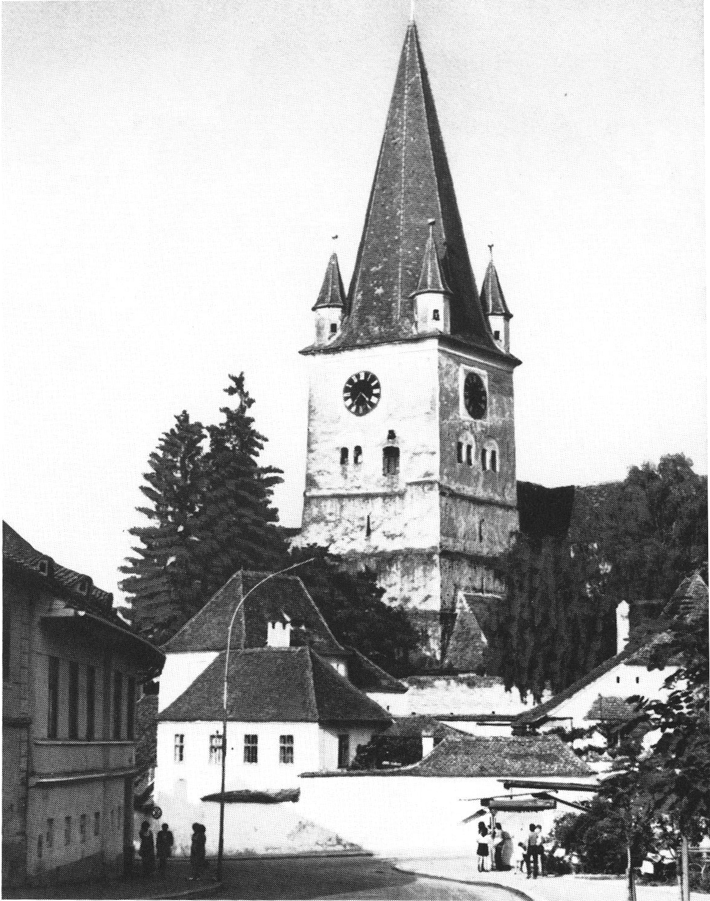
A nagydisznódi evangélikus templom a XIII. század első felében épült, és a XV. században vették körül várfallal.
Bővebben lásd:
www.welcometoromania.euVáralja utca, Kisdisznód 55301/Strada Sub Cetate, Cisnădioara 555301
A régi evangélikus templom a XIII. század elején épült a hegytetőn. Később vették körül erődfallal. Román stílusával Erdély legrégibb erődtemplomai közé tartozik. Festői környezetben áll.
Bővebben lásd:
www.muemlekem.hua község közepén
A nagycsűri evangélikus templom a XIII. században épült. 1523-ban átalakították s ugyanekkor vették körül erődfalakkal.
Tineretului utca 4. sz./Str. Tineretului nr. 4
A vízaknai református templom a XIII. században épült, román stílusban. Háromhajós bazilika, a szentélynégyzet fölötti toronnyal. Hajóját 1500 körüli hálóboltozat fedi. A XVI. században átépített erődtemplom freskóit Vince festő 1522-ben készítette. A ma is működő toronyóra 1787-ben készült.
Bővebben lásd:
www.varak.huA Junger Wald–Kiserdő (Dumbrava) a várostól 4 km-re szép parkerdő, csónakázótóval, kempingekkel, étteremmel. A szebeniek kedvelt kirándulóhelye. Itt van a népi ipar szabadtéri múzeuma és az állatkert. Az erdő villamossal is elérhető.
Nagyszebent a Calea Dumbraván hagyjuk el délnyugat felé. A Dumbraván keresztül vezető út először Resinárt (Rășinari) érinti – itt született Octavian Goga. Itt áll Andrei Șagunar omán politikus, érsek mauzóleuma. A falu múzeumában szép román népművészeti gyűjtemény van. A helység ma már Nagyszebenhez tartozik.
Resinártól 22 km-re Szebenjuharos vagy Magascsorgó (Păltiniș, Hohe Rinne), a Szebeni-havasok magaslati üdülőhelye, sport- és kirándulóközpontja, több turistaházzal. Az 1450 m magasan fekvő telep alatt van a Cibin klamm, a Szeben-patak romantikus szurdoka, innen lehet felmenni a Cindrelre (2245).
Nagydisznód (Cisnădie, Heltau) községben született a feltételezések szerint Heltai Gáspár (1520–1575) szász származású magyar író, nyomdász, reformátor, bibliafordító, a „Chronica az Magyarocnak dolgairól” című becses történelmi forrásmű szerzője, a XVI. századi magyar próza nagy mestere.
Kisdisznód (Cisnădioara) ma már Nagydisznódhoz tartozik. Itt volt plébános Heltai Gáspár, mielőtt csatlakozott volna a reformációhoz. A falu cseresznyeligetei híresek.
Cód (Sadu) Samuil Micu-Kleinnek (1745–1806), az erdélyi románság nemzettudatát megalapozó ún. erdélyi iskola egyik megteremtőjének szülőhelye. Innen a Gitu Berbecului menedékházhoz (1175 m) lehet eljutni a Cód völgyében (Valea Sadului), 40 km-es autóúttal; majd gyalog a Cindrelre (2245 m) mehetünk. Csak hegymászóknak ajánlható! Cód a verestoronyi útról, Nagytalmács (Tălmaciu) felől is elérhető.
A városból Sellenberk irányába megyünk ki, Sellenberket elhagyva térünk le balra a Segesvár felé vezető úton. A Hortobágy (Hirtibaciu) partján fekvő Szentágota (Agnita, Agnetheln) bőr- és textilipari központ. A régi szász település középkori temploma műemlék, s múzeumának (Állomás utca 2. sz./Str. Gării nr. 2.) gazdag római és népművészeti gyűjteménye van.
A Szentágota után a Hortobágy völgyében sorakozó szász falvak régi templomaikról nevezetesek.
Rozsonda (Ruja, Roseln) templomának vaskos védtornya XV. századi, többi részei 1509-ben épültek, gótikus stílusban.
Prépostfalva (Stejăriș, Probstdorf) templomának szentélyét 1860-ban (toldás miatt) lerombolták. A hajó a XIV. században, a torony 1500-ban épült. A hajó felső részén védfolyosó van.
Jakabfalva (Iacobeni, Jakobsdorf): a templom hajója, a szentély, a sekrestye XIV. századi, a tornyot 1500-ban emelték. Kisebb kiegészítéseket találunk a XVIII. századból. Az északi oldalon oldaltorony van, ugyanitt a körítőfalon szép a bejárati kapu.
Netus (Netuș, Neithausen) temploma 1448-ban épült. 1504-ben a szentélyt belülről elzárták, s vastag fallal védtoronnyá alakították. A hajó hálóboltozatos, a XIX. században épített „pótszentélye” van.
Újvárosban (Noiștat, Neustadt) a XIII. századból eredő román építmény helyére 1487-ben késő gótikus templom került, később (1856–1868) pedig klasszicista templomot emeltek a faluban.
Szászhalom (Movile, Hundertbücheln) templomának hajója a XIV. századból való. A két végén levő tornyok egyike a legrégibb rész, XIII. századi, a másik a XV. században – belül hálóboltozattal – épült.
Hégen (Brădeni, Henndorf) községben a templom XIV. századi építmény, kisebb, XV. századi kiegészítésekkel. Szentélye deszkázott védfolyosós. Igen szép a gótikus faragott kő szentségtartó. Itt elhagyjuk a Hortobágy völgyét, és Segesvár közelébe, a Segesdi-patak vidékére érkezünk, ahol további templomerődök várnak reánk.
Apold (Apold, Trappold) szász erődített templomegyüttese impozáns, belső és külső falakkal, valamint udvarokkal. A Haferturm (Zabos-torony), vagyis a kaputorony, a Wisser Turm (Fehér-torony), azaz a belső várfal második tornya, ezenkívül északon a Fruchthaus (terményraktár) védte a XIII. századi templomot. A szentély a falakkal és tornyokkal együtt 1504–1529 között épült. A külső öv főbejárata az északi oldalon van, délen egy kisebb kapu volt (lebontották). A Schulturmban (Iskolatorony) lakott a vár őre. Délnyugaton a kiskapu mellett bástya védte a bejáratot. A belső terményraktárral szemben a külső övben észak felé még egy védhető raktárépület volt. Az egész épületkomplexum jellemző a szászok jól szervezett, átgondolt önvédelmére, a termény és a vagyon mentésére háború esetén.
Segesd (Șaeș, Schaas) közvetlenül Segesvár előtt, Szászdálya (Daia, Denndorf) kelet felé, a Segesd-patak forrásánál van. Templomaik az előbbiekhoz hasonlóan a szász építkezési kultúrát és hagyományvilágot mutatják.
A Nagyszebentől északnyugat felé 12 kilométerre Vízakna (Ocna Sibiului) a szebeniek kedvelt kirándulóhelye. A vidék már a rómaiak korában, majd a középkorban is sóbányáiról volt nevezetes. A város neve 1263-ban már szerepelt egy oklevélben. A XVI. századtól fürdőhelyként is számon tartották. 1849. február 4-én Vízakna mellett szenvedett vereséget Bem hadserege. Petőfi erről a harcról írta a „Négy nap dörgött az ágyú” című versét. A régi bányaaknák 10 tavában létesítette a város a sós gyógyfürdőket, amelyek izom- és idegbántalmakra és női betegségekre vannak jó hatással.
Vízakna ortodox temploma XVII. századi, havasalföldi stílusú.
Samuel Brukenthal u., 2. sz., F bejárat, Nagyszeben
www.turism.sibiu.roNagyszebent a General Vasile Milea sugárút vonalán hagyjuk el, és az E68/DN1 úton megyünk tovább.
Sellenberk (Șelimbăr, Schellenberg) előtt a műút jobb oldalán álló Szentháromság-szobor annak emlékét őrzi, hogy a Habsburgokkal szövetséges Vitéz Mihály havasalföldi fejedelem itt verte szét – az elkeseredett közszékelyek segítségével – 1599. október 22-én Báthori András erdélyi fejedelem hadát. A csatából menekülő Báthorit később a székelyek ölték meg.
Brassó felé a Vesztény utáni elágazástól kelet felé megyünk, át a Szeben-patak hídján, majd a Kuhberg 465 m magas hágójára.
Fenyőfalvánál (Bradu, Gierelsau), az Olt partján a Castra Traiana római tábor nyomait érdemes megnézni.
Felek (Avrig, Freck) XVIII. századi barokk kastélya egykor báró Brukenthal Sámuelé volt. Az evangélikus templom a XIII. század első felében épült, de csak a harangtorony, a bejárat és a karzat eredeti román stílusú. A XVIII. századi görögkeleti templomban szép freskók láthatók. Gheorghe Lazăr (1779–1823) román tudós szülőháza a román templom közelében áll. Szobrát Corneliu Medrea készítette.
Felek a Fogarasi-havasokba vezető kirándulások egyik kiindulópontja. A főútvonalról a Fogarasi-havasok 70 km hosszú gerincvonulata teljes nagyságában kibontakozik.
Alsóporumbák (Porumbacul-de-Jos) Felektől 5 km-re fekvő község, hajdan Apafi fejedelem kedvelt tartózkodási helye volt, s itteni kastélyába országos tanácskozásokat hívott össze.
Alsóárpás (Arpașul-de-Jos) román népművészetéről híres község. Szintén jó kiindulópontja a Fogarasi-havasokba induló túráknak.
Alsóucsa (Ucea-de-Jos) mellől déli irányban vezet egy aszfaltozott bekötőút.
Alsószombatfalva (Sâmbăta-de-Jos) község a középkorban híres vásárhely, majd 1737-ig a görögkatolikus püspök székhelye volt. Híres gazdasága van, amely ma is főleg lótenyésztéssel foglalkozik. Ménesét 1875-ben alapították.
Vojla (Voila) ortodox templomának külső falán bizánci stílusú freskók láthatók.
Fogaras (Făgăraș)az Olt-folyó partján 429 m magasságban fekszik. 1876-tól Fogaras vármegye (județul Făgăraș) székhelye, 1950 óta Brassó megyéhez (județul Brașov) tartozó, 30 700 lakosú város.
Fogaras és környéke a XIII. század elején lett királyi birtok, s a tatárjárás után szászokat telepítettek erre a területre.
Első vára 1310 körül épült. A területet Nagy Lajos király 1369-ben Vlad havasalföldi vajdának adta hűbérbe, a „Fogaras Hercege” (Dux) cím felvételének jogával. A terület 1464-ig maradt a havasalföldi vajdák hűbérbirtoka, akkor Mátyás király a hűbérséget megszüntette és Fogaras várát Geréb Jánosnak, a későbbi erdélyi vajdának adományozta. A területet 1472-ben a szászok kapták meg, majd Korvin János, Bornemissza János budai várnagy, 1531-ben pedig Majláth István és Nádasdy Tamás lett birtokosa. Időközben a fogarasi uradalom 64 falujával valóságos kis fejedelemséggé növekedett. 1589-ben a vár és az uradalom Báthori Boldizsáré, majd Báthori Zsigmondé lett, aki 1595-ben feleségének, Mária Krisztina főhercegnőnek adományozta fejedelemasszonyi birtokként. 1599-ben Vitéz Mihály havasalföldi vajda is elfoglalta. Következő birtokosától, Csáky Istvántól, az erdélyi főkapitánytól Basta foglalta el és német őrséget helyezett el benne.
A vár fénykora Bethlen Gábor uralkodásának idejére esik, aki az uradalomból mintagazdaságot szervezett, és a várat teljesen újjáépítette. Bethlen, a Rákócziak és Apafi Mihály idején a vár a mindenkori fejedelemasszony birtoka volt. Apafi Mihály idején volt legmozgalmasabb korszaka, ugyanis ő többnyire itt tartózkodott és itt tartotta meg az országgyűléseket is. A Habsburgok idején a vár uradalmával együtt kincstári birtok lett, majd 1762-ben a Szász Universitas szerezte meg zálogbirtokként, 99 évre.
Híres vásárhely lévén, Fogaras lakossága a század elején főleg kisiparosokból állt. A második világháború után a városban nagyarányú ipari fejlesztés történt.
Fogaras a múltban is iskolavárosnak számított, s egyben a románság fontos kultúrközpontja is volt, ahol már 1657-ben román iskola működött. Román tanítókat, papokat neveltek, s a városban volt az első román görögkatolikus püspökség is, amelyet később Balázsfalvára helyeztek át.
Fogarastól tovább megyünk kelet felé az E68/DN1 számú műúton.
Sárkány (Șercaia) Fogarastól 14 kilométerre fekszik, és rövid kitérőkkel szép kirándulásokra ad alkalmat.
Sárkánynál elhagyjuk az Olt medencéjét és a Persányi-hegység (Munții Perșani) 620 m magas hágóján át leereszkedünk a Barcaságba.
Útközben érintjük lenn a völgyben Vledény (Vlădeni) községet. Szép nagy görögkeleti temploma van. Szász hatásra valló kőházai is igen csinosak.
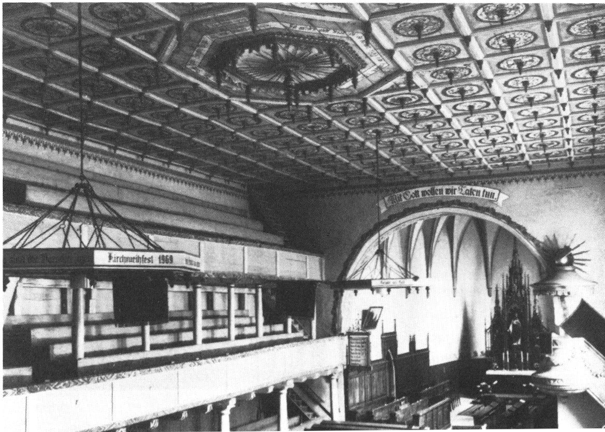
Feketehalom (Codlea, Zeiden), több mint 21 700 lakosú városka. A Barcaság északnyugati sarkában, a Fekete-hegy 1294 m magas csúcsa tövében fekszik. Lakói hajdan híres fakereskedők, takácsok és lentermelő gazdák voltak. Ma kémiai ipari központ és a környékbeli faipar székhelye. Van textil- és gépgyára is. Híres a kertészetéről; nagy üvegházaiban főleg szegfűt termesztenek, ezért a virágok városának is nevezik.
Régi vára, a Schwarzberg, a Fekete-hegy sziklás ormán már a XIII. században állott. A várat a Német Lovagrend II. Endre király idején építtette. Itt ostromolta meg IV. Béla király saját pártütő fiát, István herceget. A várnak ma már csak az alapjai láthatók, 1335-ben Róbert Károly leromboltatta. A fő téren álló evangélikus erődített templom a XIII. századból származik, szép hálóboltozata a XV. század végének alkotása. Ugyanekkor készült tornyos erődítése is.
Vidombák (Ghimbav, Weidenbach) barcasági szász település.
A nagytalmácsi vár romja a község fölött látható. „Landes Krone” várának hívták. 1369-ben Vlaicu havasalföldi vajda elpusztította a község területén épített kolostort. Nagy Lajos király a következő években határszéli erősséggé építtette, majd V. László a szászoknak adományozta. 1535-ben Szapolyai Jánosé lett, s ő régi birtokosainak, a szászoknak adta el 2000 koronáért.
Kerc 557070/Cârța 557070
A kerci apátság maradványai. Az apátságot III. Béla fia, Imre király alapította. A Maros-torkolat közelében létesült egresi cisztercita rendház leánymonostorának épült 1202-ben. 1421-ben a törökök dúlták fel. A rendház 1474-ben szűnt meg. A homokkőből épült háromhajós, kereszthajós apátsági templom hajója 54 m, kereszthajója 27 m hosszú volt. Építészeti díszei, kapubéllete, oszlopfői, zárókövei a korai XIII. századi gótikus stílust képviselik. A templomhoz csatlakozik az apátsági épület romja. Épen maradt szentélyében ma evangélikus templom van.
Bővebben lásd:
WikipédiaMihai Viteazul utca 1. sz./Strada Mihai Viteazul nr. 1
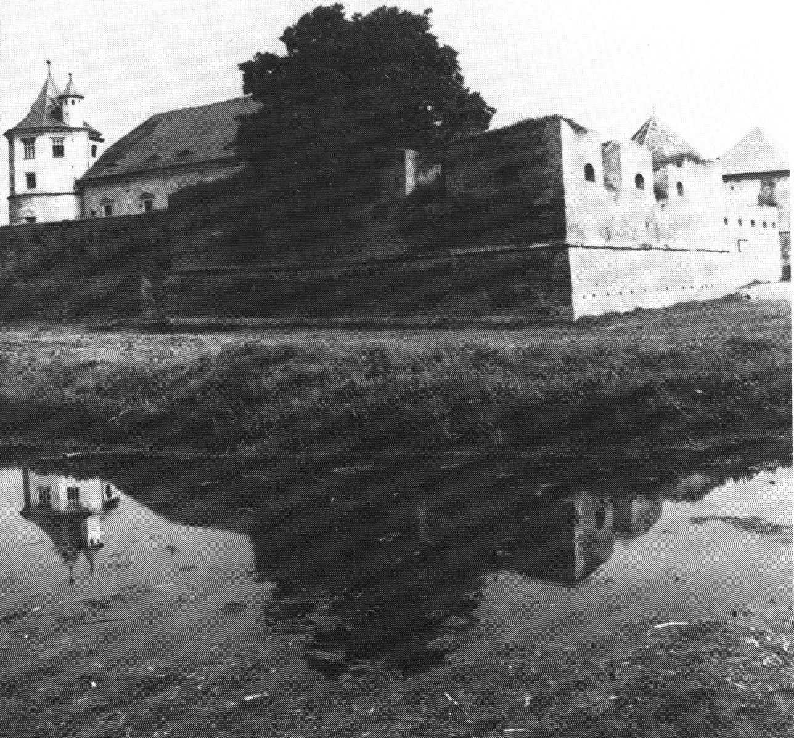
A fogarasi vár főbejárata a keleti oldalról nyílik, s felvonóhídon és kapubástyán keresztül juthatunk be.
A korábbi vár helyén Majláth István emeltetett kőből és téglából rakott fallal és vizesárokkal övezett bástyás erődöt. A XVI. század vége felé Báthori István hozatta rendbe. Mikor 1599-ben Vitéz Mihály elfoglalta, feleségének, Stanca fejedelemasszonynak adományozta. A várat Bethlen Gábor korszerűsítette, s végrendeletében az itt felhalmozott műkincsekkel együtt második feleségére, Brandenburgi Katalinra hagyta. Rákóczi György idejében felesége, Lórántffy Zsuzsanna élt egy ideig a várban. Apafi Mihály halála után (1690) osztrák kézben kaszárnya, majd börtön is volt.
A vár külső falövezete szabálytalan négyszög alakú, 6 m magas, tégla borítású földmaggal. A sarkokon négy, romboid alakú, 10– 12 m magas bástya áll. A falakat körben 45–74 m széles vizesárok védte, amelybe az Olt vizét vezették, ez most csónakázótó.
A külső falövezeten belül áll a tulajdonképpeni kastély. Oldalszárnyai szabálytalan négyszög alakú belső udvart fognak közre.
A szárnyak háromszintesek, nagy termekkel. Az első emelet déli szárnya volt a fejedelmi lakosztály. Udvar felőli részén széles árkádos folyosó van. A faragott bejárati ajtókon kőcímerek és díszes zárókövek láthatók. A nyugati oldalon volt a diéta-terem, ahol négy országgyűlést tartottak. A Bethlen idejében végzett átépítéskor az ablakok szép reneszánsz kőkereteket kaptak. A folyosó egyik ajtaja felett Bethlen kéthattyús címere ma is látható. Bethlen építtette a vár délnyugati főbástyáját is.
A várban népművészeti műhelyt, történeti múzeumot és turistaszállót rendeztek be.
A vár közelében van a Művelődési Ház s előtte helyezték el Vitéz Mihály feleségének, Stanca fejedelemasszonynak a szobrát.
Bővebben lásd:
WikipédiaA fogarasi gimnázium épülete a várral szemben áll. 1909-ben épült Mikszáth Kálmán író közbenjárására.
Mikszáth 1892–1910-ig Fogaras város képviselője volt. Ebben az iskolában volt tanár Babits Mihály 1908 és 1911 között. Babits „A gólyakalifa” és a „Halálfiai” című regényében írta le a várost.
Republicii tér 22. sz./Piața Republicii nr. 22
A fogarasi városi múzeum 1954-ben alapított intézmény, öt termében történelmi, néprajzi és természettudományi kiállítás van.
Egyesülés sugárút 17. sz./Bulevardul Unirii nr. 17.
A református templom 1715-ben épült. Az eredeti, XVI. századi nagy templomot, amely a Piac téren állt, 1704-ben Rabutin parancsára a vár császári őrsége ágyúval szétlövette, mert a kuruc reformátusok kezén volt. Nem is engedték újjáépíteni. 1715-ben gróf Teleki József a vártól messzebb és csak alacsony templom építésére kapott engedélyt. A templomot özvegye, a jótékonykodó Árva Bethlen Kata (1700–1759) fejeztette be, a főbejárata felett márványtábla utal erre. Az önéletírása és levelezése alapján ma is számon tartott Bethlen Kata sírja a templom bejárata előtt áll, sírkövén udvari papjának, Bod Péter (1712–1769) irodalom- és egyháztörténész verses felirata olvasható.
A templom szószéke pompás kőfaragó munka.
Bővebben lásd:
www.welcometoromania.euTudor Vladimirescu u. 16. sz./Str. Tudor Vladimirescu nr. 16
Szent Miklós ortodox templomot (Biserica Brâncoveneasca) Constantin Brâncoveanu havasalföldi fejedelem és felesége, Mária alapította. A fejedelem címere (holló kettős kereszttel a csőrében) a bejárati feliratnál látható.
Az 1694-ben bizánci stílusban épült templom kupolás belső terének falait értékes bizánci stílusú freskók borítják. A templom egykor a fogarasi görögkatolikus püspökség székesegyháza is volt.
Bővebben lásd:
WikipédiaCodru Drăgușanu utca 6. sz./Str. Codru Drăgușanu nr. 6
Az ortodox templom 1783 és 1791 között épült. Barokk stílusú tornya 26 m magas.
Szenteket és bibliai jeleneteket ábrázoló freskói bizánci jellegűek. Oltárképe 1791-ből, egyéb belső díszítése 1797-ből való.
A vidombáki evangélikus templom a község központjában áll. A XIII. században épült, erős várfalai azonban a XV. században készültek. 1775-ben az egész erődtemplomot átépítették.
Bővebben lásd:
www.varak.huNagytalmács (Tălmaciu) fafeldolgozó iparáról nevezetes.
Bojca (Băița) hajdan római őrtelep volt. Tőle nem messze az Olt völgyében fekszik Vöröstorony (Turnu Roșu) A helység és az egész hegyszoros a Bojca és Vöröstorony közt álló, 1453-ból származó, vörös színű őrtoronyról kapta nevét. A délebbre levő második, úgynevezett Repedt-tornyot 1534-ben árvíz döntötte össze.
A Vöröstoronyi-szoros (Pasul Turnu-Roșu) harmadik erődítménye volt a szintén romokban álló Lator-vár, amely 1222-ben hét faluval együtt Felső-Fehér megyéhez tartozott. Maga a Vöröstoronyi-szoros sok történelmi esemény színhelye volt. 1242-ben itt vonult ki Magyarországról úgyszólván az egész mongol sereg. Látta a szoros 1330-ban Róbert Károly tőrbe csalt hadát, 1395-benerre vonult Zsigmond Nikápolyba, 1442-ben itt törtek be a törökök s 1443-ban szintén itt verte meg Hunyadi János a zsákmányával kivonuló Ali béget. 1849-ben Bem erre szorította ki Erdélyből a cári orosz sereget, és 1916-ban is véres harcok színhelye volt.
Felektől északkeletre található Oltszakadát (Săcădat), amelynek XIII. századból való magyar evangélikus temploma van. A faluban él az Olt-völgy kipusztult magyarságának utolsó szórványa.
Alsóporumbákról dél felé Felsőporumbákon (Porumbacul de Sus) át kirándulhatunk a Fogarasi-havasokba, a Negoi menedékházhoz. Innen érhető el viszonylag legkönnyebben a Negoi-csúcs (2535 m).
Szkorei (Scoreiu) után jobbra hatalmas tábla jelzi az 1974-ben megnyitott, új nagy alpesi utat. A Transfăgărășanul hatalmas technikai alkotás, amelyet katonai műszaki alakulatok építettek. A Bâlea-vízesés menedékháza és a Bâlea-tengerszem menedékháza mellett, majd egy alagúton a Lacul Vidra érintésével Curtea de Arges – Argyasba fut be. A 90 km hosszú út 2042 m magasságig vezet fel, s 578 hídja és viaduktja van. Biztonságosan csak a nyári hónapokban járható. Az alsó és a felső menedékház között – a nagy Bilea-vízesés fölött haladó – drótkötélpálya működik. Az alagút, javítás miatt, gyakran zárva van.
Kerc (Cârța) 5 km-rel Szkorei után, a főúttól 2 km-re a vasútvonal mellett fekszik. Ortodox templomában szép freskók láthatók.
Alsóárpástól délre 14 km-es bekötőút vezet Felsőárpáson át az Arpaș menedékházhoz (600 m), a Podragai menedékházhoz és a Bâlea-tóhoz.4. Alsóárpástól délre 14 km-es bekötőút vezet Felsőárpáson át az Arpaș menedékházhoz (600 m), a Podragai menedékházhoz és a Bâlea-tóhoz.4. Alsóárpástól délre 14 km-es bekötőút vezet Felsőárpáson át az Arpaș menedékházhoz (600 m), a Podragai menedékházhoz és a Bâlea-tóhoz.
Az alsóucsai bekötőúton juthatunk el Viktóriavárosba (Orașul Victoria), amely a főúttól 8 km-re fekszik. 1949-ben alapították, s lakosainak száma ma már 7300. A város hatalmas kombinátjával Erdély egyik vegyipari központja, s egyben üdülőhely is. Szép kirándulásokat tehetünk innen a Fogarasi-havasokba a Podragul és az Arpaș menedékházhoz.
Felsőszombatfalva (Sâmbăta de Sus) Alsószombatfalváról a déli irányban vezető úton fekszik. A községben Constantin Brâncoveanu építtetett kastélyt, a helység határában pedig bizánci stílusú freskókkal díszített görögkeleti kolostort. Közelében van a Szombatfalvi turistakomplexum, 15 km-re a műúttól. Ez a Valea Sâmbatei menedékházhoz (1401 m) vezető túra kiindulási pontja.
Vojlától indul az út északra a Hortobágy völgye felé, ahol a szász evangélikus templomok közül Nagysinka (Șinca Mare) és Lesses (Dealul Frumos, Schönberg) román kori bazilikái kiemelkedők.
Sárkánytól délre van Vád (Vad) község, a tőle 4 kilométerre levő híres nárciszmezővel (Poiana Narciselor). Május végén, június elején érdemes felkeresni. Védett terület!
Halmágy (Hălmeag) Sárkánytól északra, 4 km-re fekszik. Magyar evangélikus temploma a XIII. század második felében háromhajós bazilikának épült, érdekes egykorú faragványokkal.
Alsóvenice (Veneția de Jos) Sárkánytól észak felé 8 km-re, a Persányi-hegység lábánál, az Olt partján 450 m magasságban fekvő fürdő- és üdülőhely. Van meleg és hideg fürdője, valamint 6 gyógyforrása.
A völgykatlanban 10–20 °C hőmérsékletű források táplálják a kis tavat. Igen kellemes táborozási hely.
Republicii u., 3 sz., Fogaras
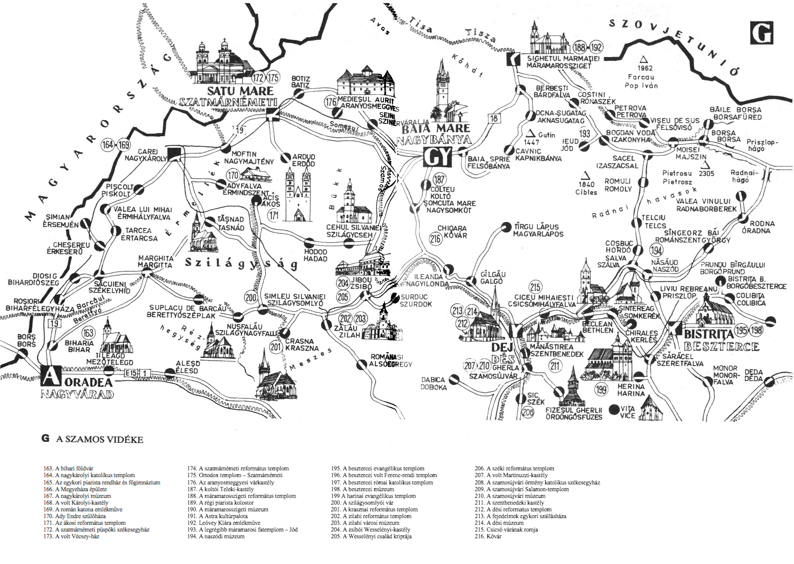
Ez az utazás végigvezet az Alföld peremén, az Érmellék gyümölcs- és bortermő vidékén és a szatmári tájakon, majd a Szamos völgye mentén behatol a hegyek közé, a fatemplomos máramarosi falvakig, s innen a Kárpátok vonulata mentén bekanyarodik a Maros mellé, a Mezőség keleti peremére.
Nagyváradot a központból a nagyállomás felé haladva hagyjuk el, és a 19. számú úton megyünk északi irányba.
Bihar (Biharia) az érmelléki dombnyúlványon a Kösmőpatak mellett fekszik. A XI. század óta ismert. Anonymus szerint a honfoglalás előtt az egyik helyi hatalmasság központja volt. Református temploma XVI. századi alapon 1802-ben épült, katolikus temploma 1826-ból való.
Az elágazásnál a Margitta (Marghita) felé vezető úton fekszik Szentjobb, ahol egykor Szent István ereklyéjét őrizték. A másik irányban Székelyhíd felé tartunk.
Paptamási (Tamașeu) a Berettyó mentén fekszik. Már a XIII. században említik az oklevelek. Református temploma 1835-ből való.
Biharfélegyháza (Roșiori) református temploma 1845-ben épült. A határban levő földvárban az 1886. évi ásatás során bronzkori tárgyakat találtak. Itt érjük el az érmelléki dombvidéket, a híres borok hazáját.
Bihardiószeg (Diosig) Jankafalvával összeépülve, az Ér mentén, a XIII. század óta (kb. 1278) ismert hely. A Gutkeled nemzetségnek (a Báthoriak ősének) vára a református templom helyén állt. Kénes gyógyfürdője van.
Várát 1460-ban a Zólyomiak építették, a török időkben végvár, 1665-ben lerombolták.
Itt született Mikecs László (1917–1944) történész. Főművét („Csángók”) 1941. nyárelőn az itteni szőlőhegyen fejezte be.
Székelyhíd (Săcuieni) egykor székelyek telepe volt, kiket az 1217. évi oklevél a bihari vár fegyvereseiként említ. Vásárjogát 1417-ben Zsigmondtól kapta. 1604-től 1661-ig az erdélyi fejedelmek birtokában volt. Famennyezetű református temploma Mátyás király idejéből való, de a későbbi századokban erősen átalakították. A szentélyben a Zólyomiak címere látható, falában Zólyomi Tamás sírköve 1588-ból. A katolikus templomot 1764-ben Dietrichstein János építtette.
Az úton tovább Érkeserű (Cheșereu) már a XIII. század elején szerepel az oklevelekben. A XV. századtól a váradi püspök birtoka. Református templomának nyugati része ősi, egyébként 1801-ben épült. Katolikus temploma 1825-ből való.
Értarcsa (Tarcea) neve a kolozsmonostori levéltár egyik XIV. századi oklevelében már szerepel. Református temploma 1846-ban épült.
Érmihályfalva (Valea lui Mihai) a Nyírség és az Érmellék határán fekszik. A 10 000 lakosú város határállomás. Élelmiszer- és bútoripara jelentős. Érmihályfalva a legrégibb települések közül való. 1270-ben Turul comes özvegye, „Onnus” volt a birtokosa. A XIV. században vámszedő és vásáros hellyé lett. Határában van a Salamon útja, ahol állítólag Salamon királyt kísérték a rabságba. Református temploma 1284-ben már állott. 1892-es átalakítása ellenére részben megőrizte középkori jellegét. Katolikus templomát Schlauch Lőrinc nagyváradi püspök építtette.
Piskolt (Pișcolt) XIV. századi község református temploma ősi eredetű, ortodox temploma 1869-ben épült.
Nagykároly (Carei) város Szatmár megyében (județul Satu Mare) 131 m magasan, az Alföld peremén fekszik. Öt ipari üzeme és 26 000 lakosa van.
A Károly helységnevet 1335-ben említik először az oklevelek. A szomszédos Kaplony monostora azonban már 1080-ban szerepel. Ide temetkezett a Kaplony nembeli Károlyi család, ugyanis az egész környék az ő birtokuk volt. Róbert Károly idején már vásárjogú helyként tartották számon, s Mátyás alatt épült a Károlyiak kastélya (1482).
A városban született Károlyi Gáspár (1529–1591) bibliafordító, Gaál József (1811–1866) író Acsády Ignác (1845–1906) történész, Kaffka Margit (1880–1918) író. 1846. szeptember 8-án a volt Szarvas-fogadó épületében az itteni megyebálon ismerte meg Petőfi Sándor Szendrey Júliát.
A városban több XVIII. századi templom van: volt ruszin templom (1738), ortodox templom (mindkettő a Doina utcában), református templom (1795), evangélikus templom (1823).
Nagykárolytól továbbra is sík vidéken haladunk Kismajtény (Moftinu Mic) község felé, s közben elmegyünk az országúttól jobbra húzódó nagymajtényi sík mellett. 1711. május 1-én II. Rákóczi Ferenc távollétében itt tétette le a kuruc seregekkel Károlyi Sándor a fegyvert, miután megkötötték a szabadságharcnak véget vető szatmári békét.
Bihar 417050/Biharia 417050
A bihari földvár valószínűleg korai eredetű. A XI. században ispánsági vár volt. Téglalap alakú, 115× 150 m nagyságú térség, amelyet 15–20 m széles sánc és 5–7 m magas földhányás övez. Háborús időkben 2–3000 ember befogadására is alkalmas volt. II. Rákóczi Ferenc szabadságharcában is szerepet kapott. A vár udvarán állt az ezredéves emlékmű.
Bővebben lásd:
Wikipédia1918. december 1. utca 54. sz./Str. 1 Decembrie 1918. nr. 54
A nagykárolyi katolikus templom 1769–78 között épült, barokk stílusban. Az 1850-es években Ybl Miklós vezetésével restaurálták. Tetőzete kúp alakú.
Belső terét hat boltív zárja le, s kiképzésében sok a reneszánsz elem. Sötétszürke márványoltárának képe kalazanti Szent Józsefet ábrázolja. A templom két oldalán 3–3 mellékoltárt is találunk. Szép színes ablakai vannak.
Bővebben lásd:
www.mariaradio.ro1918. december 1. utca 4. sz./Str. 1 Decembrie 1918. nr. 4
A rendház 1723-ban épült. Falán Révai Miklós (1750–1807) nyelvtudós és Erdősi Imre (1814–1890) piarista tanár emléktáblája látható.
A volt piarista főgimnázium falán magyar és román nyelvű emléktábla jelzi, hogy 1888–1892 között Ady Endre itt végezte a gimnázium négy alsó osztályát.
Bővebben lásd:
lexikon.adatbank.transindex.roIuliu Maniu utca 20. sz./Str. Iuliu Maniu nr. 20
A Megyeháza épülete a XVIII. századból származik. Jelenlegi alakját 1905-ben kapta. Mivel Nagykároly volt annak idején Szatmár megye székhelye, itt dolgozott Kölcsey Ferenc mint vármegyei aljegyző, majd 1832-től mint főjegyző.
Ma a Iuliu Maniu Műszaki Főgimnázium működik benne.
A múzeum a Károlyi-kastélyban van, szerény intézmény, de történeti és természettudományi részlegének érdekes anyaga van.
A volt Károlyi-kastély a város közepén levő parkban áll. 1482-ben épült, de a későbbi századokban négyszer is átépítették. Mostani alakja romantikus lovagvárra emlékeztet. Építésének története a falán levő táblán olvasható.
Ma Nagykároly múzeuma és könyvtára működik benne.
Bővebben lásd:
Wikipédiaa park mellett
A monumentális szobor Vida Géza (és társai) alkotása. A második világháború román hősi halottainak tiszteletére készült.
Érmindszent 447086/Ady Endre 447086
A domborműves emléktáblával megjelölt kis kúriában született Ady Endre 1877-ben. A házban Ady-emlékmúzeumot rendeztek be.
Bővebben lásd:
www.eletszepitok.hu447005 Ákos, Krasznamihályfalvi utca 235 sz./447005 Acâș, Str. Mihăienilor nr. 235
Az ákosi református templom a XII. század második felében épült román stílusban. Eredetileg a Benedek-rendi szerzeteseké volt. A kéttornyú, téglából emelt, igen szép monostort Schulek Frigyes és Essenwein restaurálta 1896-ban. Elsőrendű látványosság.
Bővebben lásd:
www.temple-akos.roÉrsemlyén (Șimian) Érmihályfalvától délnyugat felé 5 km-re fekszik. Itt született Kazinczy Ferenc (1759–1831), a magyar irodalom nagy alakja, író és nyelvújító, s az „Erdélyi levelek” szerzője. Gyermekkorát is itt töltötte anyai nagyapja, Bossányi Ferenc házában. A Martinovics-mozgalomban való részvétel gyanúja miatt 7 évet töltött osztrák börtönökben, Lajos nevű fiát mint honvédtábornokot, 1849-ben kivégezték.
A református templom mellett Kazinczy-emlékkert van.
Kaplony (Căpleni) Nagykárolytól északkeletre fekvő, a városhoz csatolt község. Itt van a Károlyi család impozáns sírboltja.
Nagykárolytól délre Kávás (Căuaș irányába megyünk, s itt keletre térünk Érmindszentre, Ady Endre szülőhelyére. Innen eljuthatunk Ákos (Acâș) községbe, ahol gyógyfürdő van.
Kávástól tovább dél felé, 25 km-re Tasnád (Tășnad) következik, melynek református temploma középkori eredetű, 1476-ban Vingárti Geréb László erdélyi püspök építtette. A régi kastély ma néprajzi és történeti múzeum. A strandfürdő forrásának vize 75 °C-os.
Sződemeter (Săuca) Tasnádtól 10 km-re nyugat felé, a magyar turisták egyik zarándokhelye. Sződemeteren áll Kölcsey Ferencnek (1790–1838), a Himnusz költőjének szülőháza. 1890-ben a Szilágy megyei Wesselényi Egyesület a házon emléktáblát helyezett el.
Bővebben lásd:
Szatmár megye (județul Satu Mare) székhelye, a Szamos partján, 127 m magasan fekszik, 101 000 lakosa van. Jelentős ipari központ.
A „Castrum Zoltmar” elnevezés a X. századból már ismert, Gizella királynő 1000 táján királyi vadászokat telepített ide s ezek alapították meg Németi falut. Á tatárjáráskor a vidék elnéptelenedett, ezért IV. Béla király újratelepíttette.
1535-ben a reformáció egyik fő helye lett, itt térített Dévai Bíró Mátyás erdődi, majd szatmári pap. 1562-ben a törökök ostromolták, 1646-ban pedig Rákóczi György úgynevezett református „zsinatot” tartott itt.
A megye nemességét a XVIII. században Pázmány Péter visszatérítette a katolikus vallásra, s ezzel megkezdődött a reformátusok üldözése. Később Basta és Montecuccoli garázdálkodtak errefelé. 1686-ban pedig Caraffa 61 033 forintot zsarolt ki a szatmáriaktól. Szatmár népe 1703-ban Rákóczi zászlaja alá állt, és végig kitartott mellette. A szatmári béke után a megfogyatkozott lakosság pótlására a Károlyiak 23 sváb falut telepítettek a környékre, ezek jórészt elmagyarosodtak.
A piaristák 1727-ben kezdték meg a városban oktató munkájukat. 1753-ban nyomda is működött a városban.
Petőfi Sándort szoros kapcsolat fűzte a városhoz. Pár évvel ezelőtt még állott Pap Endre költő háza, ahol Petőfi gyakran vendégeskedett. 1846 őszén az ő meghívására jött ide, majd innen a nagykárolyi megyebálra, s ott ismerte meg Szendrey Júliát. 1846 és 1848 között innen járt ál Júliához Erdődre.
A főtéren van a régi Városháza, a magyaros szecessziós Dacia-szálló, mögötte a tűzoltótoronnyal, a csizmadiaszín (hajdani céhház) és nem messze a Szatmárnémeti Északi Színház épülete.
Szabadság tér 24. sz./Piața Libertății nr. 24
A szatmárnémeti püspöki székesegyházat 1786-ban kezdték építeni klasszicizáló barokk stílusban, s 1797-ben szentelték fel. A kupolás részt, a két tornyot és a korinthoszi oszlopokkal díszített bejáratot később építették. Ez volt az 1804-ben alapított püspökség székesegyháza.
Márvány főoltára, hatalmas orgonája és kupoláinak freskója figyelmet érdemel.
Bővebben lásd:
www.szatmariszekes.roSzabadság tér 21. sz./Piața Libertății nr. 21
A volt Vécsey-házban írták alá 1711. május 1-én a szatmári békét. Jelenleg az 1952-ben létesített múzeum otthona. Az épületre a közelmúltban, az 1000 éves Szatmár ünnepén emléktáblát helyeztek el. Jelenleg ez az épület ad otthont a Szatmári Szépművészeti Múzeumnak.
Kálvin tér 8. sz./Piaţa Jean Calvin nr. 8
A református templom 1788-tól 1807-ig épült, klasszicista stílusban. Mivel az előtte levő teret lánc övezi, ezért „láncos templomnak” is nevezik.
Szomszédságában van a magyar gimnázium.
Bővebben lásd:
lexikon.adatbank.transindex.roMioriţei utca 2. sz./ str. Mioriţei nr. 2
Az ortodox templom neobizánci építmény.
Előtte áll az első világháború előtti román nemzeti mozgalom egyik vezető személyiségének, Vasile Lucaciunak a szobra és a román katona emlékműve.
Erdőd (Ardud) ma leginkább gyógyfürdője miatt felkeresett község. Régi erődített hely volt a Drágfiak kezén. Később a vár elpusztult, s Károlyi Sándor 1730-ban várkastélyt építtetett helyére. E kastély kápolnájában volt Petőfi Sándor és Szendrey Júlia esküvője, 1847. szeptember 8-án. A kiszáradt kis tó partján Petőfi-emlékkő található. A várkastély a második világháborúban elpusztult, szomorú maradványa egy átépített bástya (betonpótlásokkal) és némi falmaradvány még látható.
Erdőd jeles szülötte Bakócz Tamás (1442–1521) esztergomi érsek.
Erdődről tovább mehetünk Krasznabéltekre (Beltiug), melynek gyógyfürdője mozgásszervi- és idegbántalmak, valamint női betegségek gyógyítására alkalmas.
Sárerdő (Pădurea Noroieni) Szatmárnémetitől 8 km-re van észak felé, Mikola (Micula) irányában. Természetvédelmi terület, tölgyes erdő, szép vadállománnyal.
Szabadság tér 21. sz./ Piaţa Libertăţii nr. 21, Szatmárnémeti
Tel. 0752227122; +40 261 710642
Szatmárnémetit a DN1C/E58 útvonalon hagyjuk el. Északkeleti irányba haladva keresztezzük a nagybányai vasútvonalat, és beérünk Batiz (Botiz) községbe. Itt a református és az ortodox templomot érdemes megnézni.
Sárköz (Livada) községtől Józsefháza (Jojib) irányába megyünk tovább.
Szinérváralja (Seini) kb. 7500 lakosú helység. A XIII. században „Castrum Zynyr” néven szerepelt s később híres vásárhely lett. Itt született Erdősi Sylvester János bibliafordító, az első magyar nyelvtan írója (született 1504-ben, meghalt 1551 után). A városka régi várának romja a szőlők feletti Apa-hegyen látható.
Nagysikárló (Cicarlău) Szinérváralja után következik. Ércbányáiról híres, környéke arany-, ezüst-, ólom- és rézlelőhely.
Misztótfalu (Tăuții de Jos) községben született Misztótfalusi Kis Miklós (1650–1702) híres nyomdász és tudós betűmetsző. A falu gótikus református templomát érdemes megnézni.
Aranyosmeggyes 447185/Medieșu Aurit 447185
Az aranyosmeggyesi várkastély előbb a Kaplony nemzetségbeli Jákóé volt, majd házasság révén Miklós erdélyi vajda kapta meg a XIV. század elején. A vajdától eredt a Meggyesi család. 1493-ban Báthori István és András elfoglalta a várat s 1626-ban Lónyai Zsigmondé lett. A négyszögű reneszánsz várkastélyt szép ajtó és ablakkereteivel 1630 körül ő építtette. Leányát, Annát Kemény János vette feleségül, s többször tartózkodott itt. 1699-ben hűtlenség miatt a várat elvették tőle. A XVIII. században a Wesselényi családé lett. 1940–44 között a magyar műemlékvédelem restauráltatta. A második világháború végén felgyújtották, azóta romokban van.
Bővebben lásd:
WikipédiaBatiz (Botiz) község után hozzávetőleg 20 km-rel elágazik az út észak felé. Halmi (Halmeu), az elágazástól 25 km-re, ukrán határátkelőhely. Gótikus stílusú református temploma, Borodi György népművész monumentális fakapuja érdekes.
A DN19 úton észak felé az első megálló Avasújváros (Orașul Nou). Régi település, a Hunyadiak korában már megvolt. Sokáig a környék vásárvárosaként tartották számon.
Vámfalu (Vama) mellett (3 kilométerre) van Máriafürdő. Vérkeringési, emésztési zavarok, hólyagbántalmak ellen javasolják a vizét._x000B_Avasfelsőfalu (Negrești-Oaș) 10 300 lakosú városka. A XV. században már megvolt. A népi építészeti emlékekben, néprajzi különlegességekben gazdag Avas-vidék központja. Gazdag anyagú népművészeti múzeuma van. Fa- és élelmiszeripara jelentős.
Bikszádfürdő (Bixad) községben volt a híres bikszádi apátság, amelyet 1689-ben Budai Ezsaiás alapított. 1753-ban a kolostort a görögkatolikus bazilita szerzetesek vették át. Régen búcsújáróhely volt. A község melletti fürdő gyógyvize sajnos a legutóbbi időkben kiapadt.
Az út ezután átvezet az Avas és a Kőhát között 583 m magas hágón.
Kistécső (Huta) községben minden év május első vasárnapján pompás népünnepélyt rendeznek. Ezen ismerkedhetünk meg az Avas-vidék népművészetével.
Szaplonca (Săpânța) már a Tisza völgyében fekszik. Híres román temetőjében láthatók Stan Ion Patraș népművész faragott, színes fejfái.
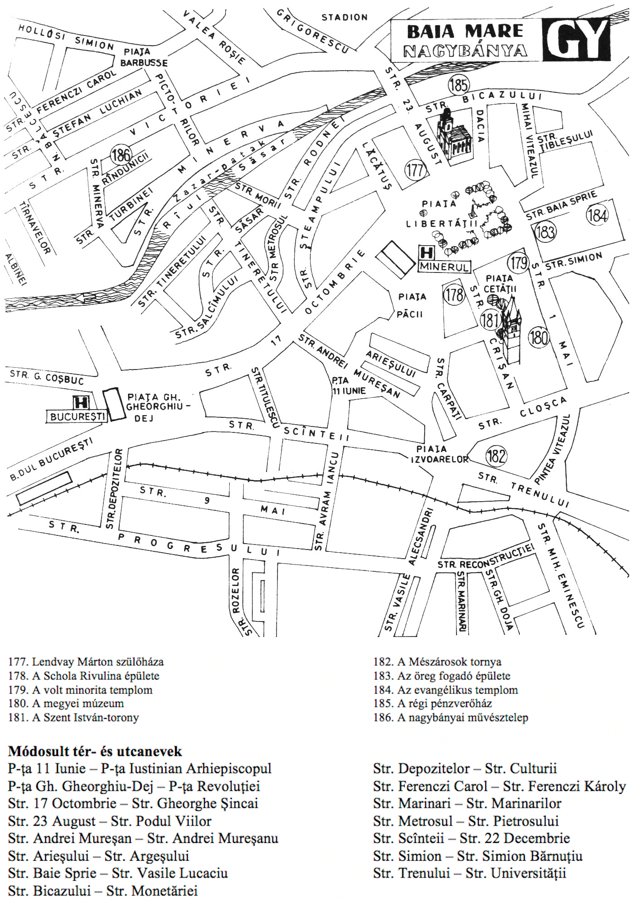
Máramaros megye (județul Maramureș) székhelye a Rozsály alján, a Zazar-patak völgyében fekszik, 200 m magasan, védett déli fekvésű, festői vidéken, ahol megterem a szelídgesztenye és a mandula. Lélekszáma eléri a 122 500 főt. Ősrégi bányaváros, nagy iparközpont. A szocializmus időszakában nagy fejlődésen ment át. Mai ipara is a bányászattal kapcsolatos. Nagy érczúzója és ércelőkészítő üzeme a legnagyobb ilyen üzem Romániában. Van ezenkívül bányafelszerelés-gyára is.
A rómaiaknak is volt itt arany- és ezüstbányája. 1142-ben II. Géza szászokat telepített ide, s ők alapították a várost. Ekkor még Asszonypataka volt a neve, s így hívták a XIV. század közepéig. 1411-ben cserében Nándorfehérvárért Brankovics György szerb uralkodó tulajdona lett. 1459-ben Szilágyi Erzsébetnek volt itt vára, s később Mátyás a bányákat bérbe adta. 1468-ban pénzverde is működött a bányatelepülésen. 1530 után Szapolyai János birtoka lett, s 1560-ban Felsőbányával együtt Balassa Menyhért szerezte meg. A XVI. században már Nagybánya néven szerepel az oklevelekben, 1567-ben János Zsigmond kemény ostrommal vette be a császáriaktól, s 1624-ben Bethlen Gáboré, 1654-ben pedig Rákóczi Györgyé lett. 1667-ben Wesselényi István kezére került.
A város régi főtere a mai Szabadság tér (Piața Libertății). Tizennégy műemlék jellegű épület övezi. A18. számú épület Szilágyi Erzsébet egykori háza erősen átalakított állapotban.
A Szabadság térről (Piața Libertății) nyugat felé vezető úton, a Híd utcán (Strada Podul Viilor) haladva érünk a református templomhoz. A Zazar hídján túl a városi parkban áll a román katona monumentális emlékműve, Andrei Ostap alkotása. Itt áll a nyári színház épülete, északabbra pedig a stadion.
A stadion fölött magasodik a Virághegy (Dealul Florilor). Az itt álló kis fatemplomot Románkékesről hozták ide 1938-ban. A Virág-hegy oldalán van Botanikus kert és a kis Állatkert is. A festők kedvelt Virághegyének a kolozsvári Karácsony Emmi festőművész és írónő állított örök emléket hasonló című könyvében.
Szabadság tér/Piața Libertății
A házon emléktábla jelzi, hogy itt született Lendvay Márton (1807–1858) színművész, a magyar nyelvű színjátszás egyik úttörője.
Szabadság tér 2. sz./Piața Libertății nr. 2
1547 és 1745 között működött itt a Schola Rivulina nevű iskola, ennek volt növendéke többek között Misztótfalusi Kis Miklós (1650–1702) tudós nyomdász is.
Szabadság tér/Piața Libertății
A Szentháromságról elnevezett, barokk stílusú, kéttornyú templom 1720-ban épült. Berendezése XVIII. századi, oltárképét Mezei József (1823–1908) festette.
Bővebben lásd:
www.welcometoromania.euMájus 1. u. 8. sz./str. 1 Mai nr. 8
A megyei múzeum a század elején létesült, gazdag régészeti, bányászati és történeti részleggel rendelkezett. Jelenleg a Nagybányai Művészeti Központ működik benne. Képzőművészeti anyagában Aurel Pop, Vida Géza, Vasile Kazar, Erdős Pál stb. művészek alkotásai láthatók.
Vár tér/Piața Cetății
A Szent István-torony az 1347-től a XV. századig épült, később azonban elpusztult gót stílusú kéthajós Szent István-templom tornya. Az 1896-ban restaurált tornyon rajta van a város címere, a pallosjogot jelző Roland-szoborral.
Bővebben lásd:
lexikon.adatbank.transindex.roForrás utca 2. sz./ Izvorului nr. 2
A Mészárosok tornya a XV. századi erődítmény egyetlen maradványa.
Bővebben lásd:
lexikon.adatbank.transindex.roVasile Lucaciu utca 2. sz./Str. Vasile Lucaciu nr. 2
Az öreg fogadó épülete a XVIII. századból származik. Falán emléktábla: 1847. szeptember 8-án Petőfi itt töltötte nászéjszakáját, az erdődi esküvőről Koltóra utazván.
Bővebben lásd:
lexikon.adatbank.transindex.roVasile Lucaciu utca/Str. Vasile Lucaciu
Az evangélikus templom szecessziós építmény, 1911–12-ben épült, Nagy István budapesti építész tervei alapján. Oltárképét Iványi Grünwald Béla festette.
Bővebben lásd:
www.muemlekem.huNagypénzverő utca 1–3. sz./Str. Monetăriei nr. 1-3
A régi pénzverőház 1739-ben épült, barokk stílusban, a Zazar partján. Eredetileg pénzverde volt. Jelenleg a megyei múzeum történeti és archeológiai részlege működik benne.
Bővebben lásd:
lexikon.adatbank.transindex.roA művésztelep a városi parktól nyugatra terül el.
A telepet 1896-ban alapította Hollósy Simon s vele együtt itt telepedett meg Réti István, Ferenczy Károly, Iványi Grünwald Béla és Thorma János. Réti és Thorma Hollósy-tanítványok voltak és nagybányaiak. A telep és a szabadiskola 1927-ig működött, s még ugyanebben az évben létrejött az új nagybányai festőiskola, Börcsök, Krizsán és Mikola vezetésével.
A román állam a felszabadulás után alkotóházat létesített a telepen, s a műtermeket rendbehozatta.
Bővebben lásd:
www.nagybanya.roA koltói Teleki-kastélyban Petőfi-emlékszoba, falán emléktábla van. A parkban Petőfi somfáját és a legendás honvédezredesnek, Petőfi barátjának, Telekinek sírját tekinthetjük meg.
1846 októberében járt itt először Petőfi Sándor. 1847 szeptemberében arra kérte gróf Teleki Sándort, hogy engedje át neki a kastélyát a mézeshetekre. Teleki teljesítette kérését, s Petőfi 1847. szeptember 9-én érkezett meg feleségével Koltóra és október 29-ig maradt itt. E hat hét alatt 28 költeményt írt. Köztük van a „Szeptember végén” is.
Bővebben lásd:
www.telekikastelykolto.roKoltó (Coltău) Nagybányától délnyugati irányban 10 km-re van.
Nagybányától északra a Fernezely (Firiza)-folyócska felső völgyét 57 m magas duzzasztógáttal elzárták. A három és fél km hosszú mesterséges Fernezely (Firiza)-tóból látják el Nagybányát ipari és ivóvízzel, 1000 hektár területet öntöznek vele és két vízierőműhöz is felhasználják. A tavon sétahajó jár, a tó partján turistaház, szálloda, vendéglő és kemping várja a turistákat.
Crișan u, Nagybánya
Gheorghe Șincai u, 46. sz.,Nagybánya
Ghid Turistic Info: Victoriei u., 92A, Nagybánya
Eco Maramures: Florilor u., 8/36
Felsőbányát déli irányban hagyjuk el.
Bajfalu (Dănești) gyógyfürdője mozgásszervi és idegrendszeri betegségeket gyógyít. Régi román fatemplomát is érdemes megtekinteni. A közeli Dióshalom (Șurdești) templomának fatornya 54 m magas.
Kapnikbánya (Cavnic) közel 5000 lakosú, hajdan nemesfémbányászati központ. Közvetlenül a Gutin-csúcs alatt fekszik.
Brádfalváról dél felé haladva jutunk Felsőkálinfalvára (Călinești), amely 1665-ben épült fatemplomáról híres. Aknasugatag (Ocna Șugatag) sóbányájáról és sós fürdőjéről, Brebi-fürdő az emésztőszervek betegségét gyógyító fürdőjéről, Bréb (Breb) XIV. századi fatemplomáról és Budfalva (Budești) 1856-ból származó fatemplomáról híres.
A város Máramaros megye északi peremén, a Tisza mellett, 274 m magasan fekszik. A szálva–romolyi vasútvonal megépítése kötötte össze Erdély belső területeivel. Addig kelet felé csak közúti összeköttetése volt. Az erdős vidék központjában elsősorban faipara, bútorgyára jelentős, de kerámia-, textil- és szeszgyára is van. Lakossága több mint 33 000. Nem utolsósorban régi sóbányák központja (Rónaszék, valamikor sókamra, Aknasugatag stb.). Évszázadokon át megyeszékhely volt.
Máramaros vidéke régóta lakott hely, legalábbis a bronzkori, római és bizánci pénzleletek ezt bizonyítják. Fontos közlekedési átjáró volt. Neve Árpád-kori oklevelekben szerepel először.
IV. László (1272–1290) erre a területre a tatárok elleni védelem céljából románokat telepített. Vajdáik leszármazottai közül a Drágfiak magyar nemességet kaptak és országos tisztséget viseltek. A máramarosi Dragoșok a (a Drágfiak elődei) alapították Moldvát. 1359-ben Bogdan vajda űzte el őket, s a területet függetlenítette a magyar királyságtól. 1352-ben Máramarossziget már kiváltságos városként szerepel. Az itteni sóbányák központja lévén, IV. Béla a bányákkal együtt lányának, Kunigundának adta, 1522-ben II. Lajos pedig nejének, Máriának adományozta. 1556-ban Huszt várával együtt az erdélyi fejedelmeké lett. 1570-től a Partiumhoz tartozott. A megye és a város sokat szenvedett a tatár betörésektől.
II. Rákóczi Ferenc szabadságharcában igen sok máramarosi ruszin és román jobbágy harcolt.
A város szellemi központ lévén, korán csatlakozott a reformációhoz. Iskoláiban a XVII. században bölcsészetet is tanítottak! Az iskolákat az erdélyi fejedelmek alapítványokkal támogatták. 1730-ban a piaristákkal a katolikus oktatás is megindult.
A városban már 1860-ban megalakult az „Asociația pentru cultura poporului român din Maramureș” (román kultúregyesület) mint az erdélyi románok egyik legrégibb közintézménye. Ma is jelentős kultúrközpont, iskolaváros.
A város ruszin és román lakosai őrzik szép népviseletüket.
Iuliu Maniu utca/Str. Iuliu Maniu
A XIII. századi háromhajós homlokzati tornyos bazilikát a XIV. században átépítették. A templomot a múlt század második felében teljesen átalakították. A középkori épületből csak nyomok maradtak.
Szabadság tér/Piața Libertății
A régi piarista kolostor XVI. századi építmény, gótikus részletekkel. Temploma a XVII. században épült.
Szabadság tér 1. sz./Piața Libertății nr. 1
A máramarosszigeti múzeum történelmi, néprajzi és főleg gazdag népművészeti anyaggal rendelkezik (faragások, üvegikonok, hímzések Máramaros vidékéről). Igen szépek a szőnyegek és a népviseletek.
Iuliu Maniu u. 31. sz./Str. Iuliu Maniu nr. 31
A Astra kultúrpalota nagyméretű építmény. Kő- és kerámia burkolata, valamint belső berendezése művészi. 2017-ben a román állam az ortodox egyháznak ítélte oda.
Leövey Klára emlékműve a ref. templom kertjében áll. Leövey Klára (1821–1897) a nőnevelés úttörője, s a szabadságharc mártírja, aki Teleki Blankával együtt 5 évig szenvedett Kufstein börtönében.
A téren két szabadságharcosnak, Asztalos Sándornak (1823–1857), az 1849. február 8-i aradi utcai harcok hősének és Móricz Samunak az emlékoszlopa áll.
A legrégibb máramarosi fatemplom Jódon van; a falut 1364-ben említik először.
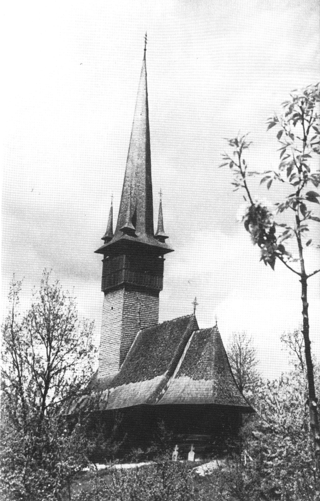
Az Iza völgye (Valea Izei) ősi falvaival és különleges faépítészetével elsőrendű látványosság. Ez a máramarosi fatemplomok igazi hazája. Az egymás után sorakozó falvak fatemplomainak építési ideje a XVII–XVIII. század: Váncsfalva (Oncești) 1795; Nánfalva (Nănești) 1780; Szurdok (Strâmtura) 1661; Rozália (Rozavlea) 1717; Sajó (Șieu) 1760.
Jód (Ieud) községbe 1 kilométeres kitérő út vezet. 1717-ból származó fatemploma az egyik látnivaló.
Izakonyha (Bogdan Vodă) újkőkorszaki lelőhely, s a néphagyomány szerint Dragoș, majd a XIV. században Bogdan vajda is innen indult Moldvába, amelyet 1359-ben mint fejedelemséget függetlenített. A falu melletti dombon az ásatások egy régi vár alapjait tárták fel. Feltételezik, hogy Bogdan vajda vára lehetett. A község két fatemploma közül a régebbi 1722-ben épült.
Dragomérfalva (Dragomirești) 1727-ből származó fatemploma újabban a bukaresti Falumúzeumban látható.
Felsőszelistye (Seliștea de Sus) faluban is két fatemplom van. A régebbi a XVIII. században épült újjá.
Szabadság tér, 26. sz., Máramarossziget
Máramarosszigetről a DN18. számú úton indulunk tovább, s Majszinig jobbára a Visó völgyében (Valea Vișeului) haladunk. A várost a Dragoș Vodă utcán hagyjuk el, majd a Tiszától délkeletre kanyarodva először a Róna-patak völgyébe jutunk.
Felsőróna (Rona de Sus) községnél rövid kitérőt tehetünk dél felé.
Az út a Zsödice-tető oldalán vezet a 665 m magas Petrovai-hágón át, és Petrova községnél éri el a Visó völgyét. A következő falu, Leordina után kitérőt tehetünk a Máramarosi-havasok felé.
Felsővisó (Vişeu-de-Sus) vegyi-, fa- és élelmiszeripari központ, mintegy 12 500 lakossal. Klimatikus üdülőhely is.
Majszin (Moisei) községnek jelentős erdei gyümölcsfeldolgozó üzeme van. A községben a második világháború vége felé, 1944-ben a visszavonuló német csapatok 29 parasztot végeztek ki a partizánokkal való együttműködés miatt, 260 házat felgyújtottak. Emlékükre készült Vida Géza szoborcsoportja. A község mellett van az 1672-ben épült Izvorul Negru (Fekete-forrás) kolostor.
Majszintól déli irányba megyünk tovább, és Sacel – Izaszacsal érintésével a Nagy-Szamos oldalfolyójának, a Szálvának a völgyébe ereszkedünk. Itt vezet végig a román állam egyik legmerészebb vasútépítkezése, a szálva–romolyi vasútvonal, amely összeköti Máramarost a belső erdélyi területtel. Merész technikai megoldásai hasonlók a MÁV által épített híres gyímesi vasútvonaléhoz.
Izaszacsalból délnyugat felé szerpentinút vezet fel a vasútvonallal párhuzamosan a Radnai-havasok gerincén levő 900 m magas hágóra, majd le a Kis-Szálva völgyébe, Telcs (Telciu) községnél elérjük a főágat, a Szálva völgyét.
Hordó (Coșbuc, azelőtt Hordău) nevét nagy szülöttéről, Gheorghe Coșbuc (1866–1918) román költőről kapta. A költő szülőházában ma emlékmúzeum van. Előtte áll Coșbuc szobra.
Szálva (Salva) a Nagyszamos és a Szálva-patak egyesülésénél fontos elágazási pont. Az út itt keletnek fordul, s a Nagy Szamos mentén halad Naszód felé.
Naszód (Năsăud) a Nagy-Szamos völgyében fekvő több mint 8000 lakosú város, híres gyümölcstermesztő hely. Bútor-, élelmiszer- és textilipara, szesz- és sörgyára jelentős.
Nevét már 1260 körül említik az oklevelek, de jelentéktelen hely volt, csak a román határőrezredek felállítása után kezdett fejlődni. A határőrség 1763-tól 1850-ig állt fenn és megszűnése után vagyonát iskolákra, a román nép művelésére fordították. A város évszázadok óta az erdélyi románság egyik művelődési központja. 1766-ban már román elemi iskola, majd 1770-től középfokú, végül 1863-tól felsőfokú gimnázium működött itt. A naszódi iskolák növendékei közül megemlítjük G. Coșbuc, A. Mureșanu költők, Liviu Rebreanu író, Veronica Micle festőművésznő, S. F. Marian és I. Pop-Retegeanul néprajzkutatók, valamint Tiberiu Brediceanu zeneszerző nevét.
Priszlop (Liviu Rebreanu, régen Prislop) falu mai nevét a híres román íróról kapta. Rebreanu apja itt volt tanító és az író is annyira megszerette a falut, hogy „Ion” című regényének színteréül választotta. Az apai ház három szobája 1957-től kezdve Rebreanu-emlékmúzeum.
A falu után két hágó is következik, majd leereszkedünk a Beszterce völgyébe.
Beszterce (Bistrița, Bistritz, Nösen) Beszterce-Naszód megye (județul Bistrița-Năsăud) székhelye, a Beszterce völgyében 361 m magasan fekszik. Észak felől a Borgói-havasok, délről a Kelemen-havasok nyugati nyúlványai fogják közre. Már a középkorban fontos ipari és kereskedelmi központ volt. 67 000 lakosa van, híres iskolaváros. Jelentős ipara a környékbeli nagy erdőségekre támaszkodik (fa- és bútoripar), valamint gyümölcs- és szőlővidékére (konzervipar), de tejtermék-feldolgozása, egyéb élelmiszeripara, ruha- és gépgyára is van.
Környéke a leletek alapján ősidők óta lakott hely volt, ahol egymást követték az egyes kultúrák. Magát Beszterce városát a XII. században II. Géza által betelepített szász bányászok alapították. A tatárok 1241-ben Besztercén állítólag 6014 embert öltek meg, a virágzó települést Ó-Radnával együtt elpusztították, de lakói rövidesen ismét felépítették. Sokat köszönhet a város Róbert Károlynak, aki többször is tartózkodott itt. A XIII. század végén már fontos vámhely volt, 1330-tól közvetlenül királyi joghatóság alatt. Vásárjogot Nagy Lajostól kapott 1353-ban. V. László 1453-ban Hunyadi Jánost örökös besztercei gróffá nevezte ki, s a várost és környékét neki ajándékozta. Hunyadi a város északi részén várat építtetett. A város, mikor Mátyás király a grófságot megszüntette, a várat 6000 forintért megvásárolta, lebontotta és kövéből városfalakat emelt. Szapolyai János 1530-ban Besztercét hűbéresének, Petru Rareşmoldvai vajdának (1527–38) ajándékozta, akinek kétszer is meg kellett ostromolnia az ellenálló szászokat. 1602-ben, mivel Báthori Zsigmond pártján volt, Basta dúlatta fel, majd török és tatár betörések és járványok tizedelték meg lakosságát. 1705-ben Pekri Lőrinc kuruc hadaitól, 1717-ben pedig ismét a tatárok betörésétől szenvedett.
Beszterce már évszázadok óta a humanista művelődésnek is egyik központja volt. 1543-ban itt nyomtatták ki Bonfini munkájának egy részét, s 1596-ban már gimnáziuma is volt. Levéltára is ebből az időből származik. XVIII. századi, latin nyelvű iskolájában sok kiváló román vezető is nevelkedett.
A hajdani Beszterce-Naszód vármegye levéltárában fedezték fel 1891-ben a „Besztercei szójegyzéket”, a XV. század első feléből származó, s 1316 magyar szót tartalmazó becses nyelvemléket, Szlavóniai György kézírásával.
A város élénk kereskedést űzött Moldvával, s polgárai ebből gazdagodtak meg.
Más erdélyi szász városokkal szemben Beszterce sokat veszített középkori jellegéből. A sok háborús csapás, tűzvész stb. megtizedelte régi műemlékeit.
A szerény méretű városmag meglehetősen szabályos utcái a Fő tértől (Piața Centrală) ágaznak szét. A Fő tér északi házsorát a XV–XVI. századi eredetű lábasházak alkotják. Ezek a régi kereskedelmi és vásárhely árkádos épületei. Németül Kornmarkt, magyarul Búzaszer, románul Sugalete a házsor neve. Itt van a Városháza (2. sz.), az evangélikus paplak (13/a sz.), a 30. számú épület pedig János kőműves mesteré, aki Petru Rareș fejedelemnek dolgozott. A moldvai építkezéseknél szász mesteremberek működtek közre. A Fő téren áll Andrei Mureșanu(1816–1863) román költő szobra, Corneliu Medrea alkotása.
Az Egyesülés téren (Piața Unirii) és egyes utcákban még láthatók a régi várfalak maradványai. A Dornei utca közepe táján emeletes, ép XVI. századi homlokzatú reneszánsz ház áll. A M. Kogălniceanu utcában a Bognár-torony (36. sz.) a XVI. századi városfalrendszer egyetlen megmaradt része.
A város fölé magasló Vár-hegy (Burgberg) 638 m magas csúcsáról szép kilátás nyílik. Itt állt a XV. században Hunyadi János vára, amelyet a szászok leromboltak. Falának maradványai még állnak.
Besztercéről a látnivalókban gazdagabb útvonalon, Szeretfalva fel haladunk tovább. Szeretfalva (Sărăţel) a vasúti csomópont, a fővonal innen Déda felé megy tovább. 1940–44 között épült, mert a Bécsi döntés határvonala a Maros völgyét elvágta, s így a Székelyföldnek nem volt vasúti összeköttetése. Egy másik szárnyvonal a Beszterce völgyébe vezet.
Szeretfalva mellett egy dombon I. századi föld- és favármaradványokra bukkantak.
Harina (Herina) régi szász település, mára elenyésző szász lakossága van.
Teke (Teaca, Tekendorf) szász alapítású község, hajdan rendezett tanácsú város volt. Szép, nagy épületekkel szegélyezettpiacán áll a gótikus régi evangélikus templom. A falu környéke szőlővidék.
Teke (Teaca, Tekendorf) községtől délkelet felé 35 km-re van Szászrégen, mely előtt keresztezzük a Luc-patakot és a Luc-hegyen (513 m) át jutunk a városba.
Határőr sugárút, Naszód 425200/Bulevardul Grănicerilor, Nasaud 425200
A naszódi múzeum a Cazarma Svarda, a volt román határőrség laktanyájának XVII. századi épületében van. 1931-ben alapították, s gazdag történelmi, tájtörténeti, néprajzi és természetrajzi anyaga figyelmet érdemel.
Fő tér/Piața Centrală
A besztercei evangélikus templomot a XV. században kezdték építeni gótikus stílusban, egy régebbi templom helyén. 1560 és 1563 között a luganói Petrus Itaus fejezte be. A külső és belső reneszánsz részletek tőle valók. Az egész városon uralkodó hatalmas torony 75 m magas építmény. Tetejéről szép kilátás nyílik egész Besztercére.
A templomban érdemes megnézni a XVI. századi kőből faragott szószéket, a szentélyben álló késő gótikus és reneszánsz fa ülőpadokat és a XVI–XVII. századi keleti szőnyegeket. Ezeket a besztercei kereskedők ajándékozták templomuknak, akárcsak Brassóban és egyebütt. Hajóját céhzászlók díszítik.
Bővebben lásd:
lexikon.adatbank.transindex.roEgyesülés tere 8. sz./Piața Unirii nr. 8
A besztercei volt Ferenc-rendi templom 1270 körül épült, kora gótikus stílusban. Szentélye a korai cisztercita templom egyszerűsített megoldását mutatja. Később többször is átalakították, de néhány XV. századi falfestménye megmaradt. A templomot a XIX. században a görög katolikusok vásárolták meg.
Jelenleg a görögkeleti liturgiának megfelelően átrendezett ortodox templom.
A XV. században emelt városfalakat 1856-ban bontották le. 10 bástyájából csak egy maradt mutatóba. A Bognár-torony közelében a falakat a védőfolyosóval együtt restaurálták.
Bővebben lásd:
lexikon.adatbank.transindex.roGheorghe Șincai utca 26. sz./Str. Gheorghe Șincai nr. 26
A besztercei római katolikus templom középtornyos homlokzatával és szép berendezésével a XVIII. század végi késő barokk művészet jelentős emléke.
Dornei utca 5. sz./Str. Dornei 5
A besztercei múzeumot az ezüstművesek hajdani céhházában, egy XVI. századi épületben rendezték be, részben a párhuzamos utcában van. 1951-ben létesült s régészeti anyagában sok ókori és szkíta lelet található. Történeti, néprajzi és természetrajzi gyűjteménye is igen gazdag.
Harina 427088/Herina 427088
Erdély egyik legjelentősebb román stílusú építménye. A háromhajós, kéttornyú Árpád-kori bazilika a XIII. század elején épült. Valószínűleg a Kacsics nemzetség monostora volt. Téglából rakták és csak egyes részeit faragták kőből. A hajók hosszfalain félköríves román ablakok sorakoznak, s a főhajó nyugati homlokzatán két kettős ikerablak és egy körablak van. A tornyok ablakai szintén kettős, illetve hármas ikerablakok. Az emeleti szinteket gyámköveken nyugvó félköríves frízek jelzik. A templomnak déli és nyugati oldalán egy-egy félköríves, bélletes kapuja van. A templomot 1890-ben avatatlan módon alakították át, de még így is értékes műemlék.
Belül a két torony földszintje a mellékhajókhoz csatlakozik. A hajókat elválasztó három pár pillér páronként más és más, az első pár nyolcszögletes, a középső hengeres, a szentély felőli pár négyzetes alapú. A hajók lapos mennyezetűek és szokatlanul magasak. A szentély magasabban van a hajók szintjénél, félköríves záródásé, de a két mellékapszis csak belül alkot külön félkörívet. A szentély északi falán egy szentségtartó fülke maradványa látható.
Harina szász lakossága elmenekült. A templom hívők nélkül üresen áll.
Bővebben lásd:
lexikon.adatbank.transindex.ro1. Felsőrónáról Rónaszék (Coștiui) fürdőhelyre Máramarosszigetről autóbuszjárattal vagy keskeny vágányú vasúttal is eljuthatunk. Fürdőjének sós vize mozgásszervi, idegrendszeri betegségeket, női bajokat gyógyít. 1766 óta iszapfürdője és föld alatti tava is van.
Leordina után kitérőt tehetünk a Máramarosi-havasok felé. A Ruszkova völgye a romániai kárpát-oroszok (ruszinok) központja. Építkezésük, népművészetük (pl. csergekészítés) igen fejlett. Jellegzetes települése Visóoroszi (Ruscova).
Borsa (Borșa) 27 500 lakosú város a Visó völgyének elején. (A Visót innentől kezdve a forrásig Borsának hívják.) Mindenekelőtt üdülőváros, de bányaüzemei is vannak. Szépen faragott kapui megérdemlik a figyelmet, magas tornyú fatemploma impozáns.
Borsabánya (Băile Borșa) a várostól 6 km-re van a Ciszla (Țisiei)-patak mentén. Fürdőjének szénsavas, vasas vize az emésztő szervek betegségeit és a hólyagbántalmakat gyógyítja. Környékén réz-,cink- és ólombányák vannak.
Borsától 6 km-re turisztikai központ van, amely főleg a téli sportok kedvelőit szolgálja. A minden kényelemmel berendezett telep közelében síugrósánc és sílift is van.
Az út innen a Priszlop-hágón (Pasul Prislop) át vezet a moldvai Dorna Vatra (Vatra Dornei) felé.
Oláhszentgyörgy (Sângeorz Băi) a Radnai-havasok lábánál 436 m magasan fekvő, 7500 lakosú fürdőváros. Fürdőtelepét Borkútnak nevezik, szénsavas forrásainak híres „Hébe” vize igen jó hatással van a gyomor-, epe- és máj betegségekre, valamint a légzőszervi bántalmakra. 1965 után a fürdőt korszerűsítették, szanatóriumokat, üdülőket építettek. Érdekes a néprajzi múzeum.
Feljebb a völgyben Dombhát (Anieș) fürdő következik savanyú vizeivel és 10 m magas mésztufa-dombjával, amelyet gyógyforrása hozott létre.
A közelben, egy északra fekvő hegytetőn áll Ányos vára (Cetatea Anieș), ovális formájú kőmaradványait kivéve a keleti oldal meredélyét, sánc veszi körül. Négyszög alakú tornyai voltak, a XIV–XV. században épült.
Óradna (Rodna Veche) 1235 óta ismert, ősi szász eredetű bányaváros. A tatárjárás első áldozata volt. Rogerius szerint az itteni szászokat kényszerítették kalauzolni a többi erdélyi település kiirtásához.
Az ország egykor legjelentősebb ezüstbányája van itt. Régi erdészeti központ és ma is jelentős bányatelep. Ortodox templomának udvarán látható a tatárok által 1241-ben lerombolt régi szász katolikus templom romja.
Radnaborberek (Valea Vinului) üdülőhelyre. Eredetileg az Erdélyi Kárpát Egyesület építtette. Környékén 1000 m magasságban ólombányák vannak, s az Ördög-szorosnál látható az Izvor-patak vízesése. Az üdülőtelepről lehet feljutni a Radnai-havasokba, az Ünőkő csúcsára (Vârful Inău 2279 m) és a híres Lála-tengerszemhez.
A Besztercéről kelet felé vezető út Jád (Livezile) után összeszűkül. Balról a Borgói-havasok, jobbról a Kelemen-havasok erdős csúcsai veszik közre. Ezután egymást követik azok a helységek, amelyeknek nevében benne van a Borgó szó. Oroszborgó (Josenii Bârgăului), Alsóborgó (Bârgău de Jos), Felsőborgó (Bârgău de Sus) után Borgóprund (Prundul Bârgăului) következik. Borgóprundnál a völgy elágazik és a déli ág Borgóbeszterce (Bistrița Birgăului) helységen át Kolibica (Colibița) magaslati üdülőhelyre vezet.
A 800 m magasan fekvő szétszórt település a környékre vezető turistautak központja. Az északi ág a Tiha-patak mentén halad. Borgótiha (Tiha Bârgăului) után Marosborgó (Mureșeni Bârgăului), majd Tihuca (Tihuța) következik. 1849 első napjaiban Bem a császáriak feletti győzelme után itt nyomult Dél-Bukovinába, hogy az ottani lakosságot is megnyerje a forradalom számára. Marosborgó és Tihuca között az út mellett egy óriási lucfenyő áll, amelyet fenyőkirálynak neveznek.
Elhaladunk a fenyvesek közé búvó Forráskő (Piatra Fântânele) üdülőtelep mellett, és 1227 m magasságban elérjük a Borgó-hágó (Pasul Tihuța) legmagasabb pontját. Az itteni havasi tisztásokról fenséges körpanorámaként tárul elénk az erdélyi és a moldvai hegyvilág. Innen az út leereszkedik a Dorna völgyébe és Dorna Vatra (Vatra Dornei) felé tart.
Kerlés (Chiraleș) határában van a Cserhalom nevű domb, ahol Salamon király 1068-ban megsemmisítette a betört úzokat.
Ide kapcsolódik a Szent László-legendának az a mozzanata is, amikor László megszabadított egy magyar leányt kun rablója kezéből. Ez a jelenet sok erdélyi templom freskóján megtalálható.
Itt állt Bethlen Lajos 1848-ban elpusztított kastélya, melynek romja és kriptája különleges látványosság. A Sajó-völgyében áll Somkerék (Șintereag) szép arányú gótikus temploma. Sajóudvarhelyen (Șieu Odorhei) pedig román kori templom van. A reformátusok említett egyházai közül az előbbinek középkori tornyát, az utóbbinak Szent Mihály főangyal sárkány elleni küzdelmét ábrázoló északi kapuoromzatát kell kiemelni.
Van egy rövidebb (52 km-es) út is Besztercétől Szászrégenbe, a 154. számú, de az, mint említettük, látnivalókban szegényebb. Az első hely, ahol érdemes megállni, Monorfalva (Monor), környéke híres prehisztorikus lelőhely. A községnek falumúzeuma is van.
Unirii tér, 17. sz., Naszód
Főtér / Piaţa Centrală, 6. sz., Beszterce
Nagyváradtól a 191. számú úton Biharon és Szalárdon át, a Berettyó völgyében megyünk északkelet felé.
Margitta (Marghita) a Berettyó mellett, 138 m magasságban fekszik. Neve 1352-ben már szerepel az oklevelekben. A XVI. században vámszedő hely volt. 1968 óta város, több mint 13 000 lakossal. Templomai érdekesek.
Margittától kelet felé a Berettyót követjük. Átmegyünk Szilágyzovány (Zăuan-Băi) fürdőhelyen, majd Szilágynagyfalu (Nușfalău) községből kirándulhatunk délkeletre, Szilágybagos (Boghiș) fürdőtelep felé. Szilágynagyfalu református temploma a környék egyik legértékesebb nagyméretű gótikus épülete. A község után elhagyjuk a Berettyó völgyét és a Kraszna vidékére érünk.
Szilágysomlyó (Șimleul Silvaniei), a Kraszna völgyében, Szilágy megye második legnagyobb települése, 11 600 lakossal. Gyümölcs- és szőlőtermő vidéken lévén, elsősorban élelmiszeriparral rendelkezik.
A város feletti Keselyű-hegyen 1797-ben gazdag római aranyleletet tártak fel, amely a bécsi Kunsthistorisches Museumba került. 1889-ben a III. századból származó gepida fejedelmi kincsre (aranyfibulák, színarany csészék stb.) bukkantak, amely a Magyar Nemzeti Múzeumban látható. Ezek szerint a környék már igen régi települési hely. 1876-ig a város Kraszna vármegye székhelye volt.
A városka gimnáziumát a minoriták alapították, híres nevelőintézmény volt, hol Ady is tanult. Plébániatemplomát 1532-ben Báthori István építtette, késő gótikus stílusban. Azóta többször is átépítették.
Szilágysomlyót kelet felé elhagyva, Varsolc (Vârșolț) községtől ismét dél felé térhetünk.
Varsolc után elhagyjuk a Kraszna völgyét és északnyugat felé, a hegyháton át a Zilah-patak völgyébe ereszkedünk. Itt elérjük a vasútvonalat, mely Nagykároly – Zilah – Zsibó – Dés – Nagybánya felé vezet.
Innen a Zilah-patak völgyében a vasúttal párhuzamosan vezető úton kitérhetünk északnyugat felé.
Zilah (Zalău) Szilágy megye székhelye, a Meszes-hegység lábánál, 266 m magasan fekszik. Csaknem 56 000 lakosa van, közlekedési csomópont, jelentős fafeldolgozó- és élelmiszeriparral, gép- és ruhagyárral.
Ez a vidék a legrégibb idők óta lakott hely. A rómaiak korában Zilah táján volt Dacia Porolissensis székhelye, Porolissum. Helyén ma Moigrad falu fekszik, amely – nevéből következtetve – szláv eredetű. A honfoglalás korában Anonymus szerint az Erdélyt elfoglaló magyarok Zilahnál megpihentek, s innen hatoltak tovább kelet felé. A várost a tatárok 1241-ben feldúlták, de újra felvirágzott. Kereskedői és iparosai 1496-ban II. Ulászlótól számos kiváltságban részesültek.
A város 1542-ig az erdélyi püspök birtoka volt majd 1617-től 1806-ig földesúri birtok lett. Ekkor 80 000 forintért megváltotta magát.
1601-ben Basta zsoldosai, 1703-ban Rabutin rácai perzselték fel. Emiatt régi épületei alig vannak. 1711-ben XII. Károly svéd király megszállt a városban, hazafelé menekült a benderi csatavesztés után. A házat, ahol megszállt, emléktábla jelöli. A város híres iskolája volt a Wesselényi-kollégium. Ady Endre itt végezte a gimnázium felső négy osztályát.
A város régi főterén áll a jobbágyfelszabadító, nemes lelkű és művelt, felvilágosult reformer, Wesselényi Miklós (1796–1850) szobra, Fadrusz János remek alkotása (1902). Az új főtéren van a megyeháza és a nagy szállodaépület.
Zilahról délkeleti irányban a Meszeskapu-hágó (az egykori gyepűvonal) vezet át a Meszes-hegység (Munții Meseșului) gerincen.
Mojgrád (Moigrad) a Meszeskapu közelében van. Határában volt Porolissum római város. Amfiteátrumának romjai és a dombtetőkön a római őrtornyok nyomai még láthatók.
Alsóegyregy (Romanași) községnél elérjük az Egregy völgyét, majd ezt az Almás völgye követi Sânmihaiul Almásszentmihály (Almașului) községnél, s végül Nádasszentmihály (Mihăiești) közelében leereszkedünk a Nádas-patak völgyébe.
Innen már rövidesen elérjük Kolozsvárt.
Báthory István utca, Szilágysomlyó 455300/Str. Stefanus Bathory, Șimleu Silvaniei 455300
A szilágysomlyói vár maradványa a városka közepén látható. A várat Báthori Zsigmond emeltette 1597-ben. Szilágysomlyó ugyanis a Báthoriak somlyói ágának volt a fészke. Ma a fala romos állapotban van, az egyemeletes kapuépület még áll. Reneszánsz ablakkeretei vannak.
Bővebben lásd:
WikipédiaCserey Farkas utca 2. sz./Strada Cserey Farkas nr. 2
A krasznai református templom 1391-ben már megvolt s 1530 óta a reformátusoké. Gótikus stílusú, s 40 méter magas tornyát hegyes sisak és négy fiatorony díszíti. A toronysisak és a harangláb 1708-ból való. A tornyot és a templom falait támpillérek erősítik. 15 m hosszú hajójának mennyezete lapos, szentélye bordás boltozatú, szép zárókövekkel. A hajó festett famennyezete 1736-ban készült.
1909-ben a hajót kétoldalt kibővítették, a tornyot 2 méterrel magasították, zsindelyfedését kicserélték. Ez a restaurálás sajnos a régi építmény arányait megbontotta.
Bővebben lásd:
WikipédiaAndrei Șaguna utca 7. sz./Strada Andrei Șaguna nr. 7
A zilahi református templom 1703-ban leégett, de újjáépítették. 1719-ben egy villámcsapástól a tetőzete leégett. 1904 és 1907 között építették újjá. A templom központi elrendezésű; belső tere igen tágas, különleges kiképzésű, 1500 ülőhelye van.
Bővebben lásd:
www.welcometoromania.euEgyesülés utca 9. sz./Str. Unirii nr. 9
Régebbi alapokból 1951-ben létesült. Történeti gyűjteményében sok római emlék látható. Néprajzi anyaga is értékes.
Parcului utca 14. sz/Strada Parcului nr. 14
A zsibói Wesselényi-kastély magaslaton álló, messze látszó, pompás építmény. A Wesselényiek 1584-ben kapták meg a zsibói uradalmat. A kastélyt Wesselényi Miklós építtette. Kezdetben barokk stílusban épült, majd klasszicista elemekkel módosult. A régi erdélyi építőhagyománynak megfelelően négyzetes alaprajzú, négysarokbástyás építmény, de a bástyák manzárdtetős pavilonokká szelidültek. Csak északi főszárnya emeletes. Ez késői teréziánus modorban készült. Oszlopos, hullámos vonalú, ballusztrádos erkély csatlakozik hozzá. Legfőbb értéke a rizalit északi oldalának nagy, árkádos loggiája. Az 1810 táján épített részek már klasszicista stílusúak.
Bővebben lásd:
Wikipédia www.kastelyerdelyben.roA Wesselényi család kriptáját a kastély feletti domb tetején még Wesselényi István építtette. Szép reneszánsz és barokk sírkövei vannak. Itt temették el többek között az idősebb Wesselényi Miklós 10 gyermekét is.
Margittáról a Réz-hegység (Munții Plopișului) vidékére kirándulhatunk. Északkelet felé innen is eljuthatunk Tasnádra, majd Sződemeterre.
zilágysomlyótól északnyugat felé 7 km-re van Somlyóújlak (Uileacu Șimleului). Református temploma román stílusban épült a XIII. század közepén.
3. Varsolctól kitérőt tehetünk Kraszna (Crasna) irányába, amelynek hajdani ősi vára adta az egykori Kraszna vármegye nevét. Itt élt a nagy műveltségű Cserey Farkas (1773–1842), a kiváló botanikus, aki udvarháza mellé füvészkertet telepített. 1816-ban nála vendégeskedett Kazinczy Ferenc, aki az „Erdélyi levelek” című művében részletesen leírta az udvarház műkincseit, könyvtárát, amelyek elpusztultak az 1849. évi szabadságharc idején.
Varsolc után, Haraklánytól Oláhbaksa (Bocşa) irányába tehetünk kitérőt. Ez a település Simion Bărnuţiu (1808– 1864) román politikus születési helye. Bărnuțiu 1848-ban a román felkelés irányítója volt, később emigránsként Moldvában élt. A községben látható a mauzóleuma. Bărnuțiu mellszobrát Horea Flamindu készítette.
Zilahról a Szilágysomlyóba vezető úton 5 km után északkeletre térünk és Cigányi (Crișeni) községen át megyünk kelet felé.
Zsibó (Jibou) Zilahtól 28 kilométerre, a Szamos partján, 198 m magasan fekszik. Fontos vasúti központ, vasúti műhelyekkel, ezenkívül van élelmiszer-, építőanyag- és faipara, valamint konfekciós üzeme. Lakossága több mint 8500 fő. Határában sós és kénes források találhatók.
1705-ben Zsibó mellett szenvedett vereséget II. Rákóczi Ferenc serege. A fejedelem a Szamos jobb partján magasodó Rákóczi-hegyről (422 m) figyelte a szomorú végű csata menetét. 1849. augusztus 25-én Kazinczy Lajos tábornok honvédjei a Wesselényi-kastély udvarán tették le a fegyvert a cári csapatok előtt. Kazinczy Lajost (1820–1849), Kazinczy Ferenc fiát Aradon a 13 tábornok kivégzése után 1849. október 20-án kötél általi halálra ítélték, majd „kegyelemből” golyóval végeztek vele. Mellszobra Széphalmon áll.
Szilágycseh (Cehul-Silvaniei) a Szilágy völgyében fekvő közel 5000 lakosú város, helyi jellegű iparral és tejfeldolgozó üzemmel. Régi várának maradványai, amelyet a helybeliek Thököly-várnak neveznek, még láthatók. A vár 1359-ben már megvolt. A palota egy része még áll. A város gótikus templomát Drágffy János országbíró építtette, 1519-ben. Drágffy a mohácsi csatában esett el az ország zászlójával. Hadad (Hodod) Szilágycsehtől nyugat felé 13 km-re fekszik. Ősi várának már nyomai is alig láthatók. 1584-ben került a Wesselényiek birtokába. A Rákóczi-korban Wesselényi Pálné, Béldi Zsuzsanna védte, s 1710-ben Csáky István adta fel. Ezután pusztult el. A községben két kastély van. A kisebbet Wesselényi Ferenc építtette 1763-ban. A másik a XVIII–XIX. század fordulójáról való.
Báthory István u., 1. sz., Szilágysomyló
Iuliu Maniu tér, 4–6. sz., Zilah
Kolozsvártól Apahida felé indulunk, majd Szamosújváron, Désen át jutunk el Nagybányára.
Apahida környékén i. e. III–II. századi kelta telep maradványait tárták fel. 1889-ben hun fejedelmi sírra bukkantak, amelyben arany ékszerek és két ezüst korsó volt. A középkorban, a kolozsmonostori apátság vámszedő helye volt, ezért Apáthídjának nevezték.
Apahidánál az út a Kis-Szamos (Someșul Mic) folyását követi jó hosszú ideig. Válaszút (Răscruci) községben tartották 1792–1853 között Bánffy György főispánsága alatt Doboka megye közgyűléseit. A jelenlegi kastély a múlt század második felében, neobarokk stílusban épült. Istállója díszes épület, műemlék. Válaszút után 3 km-re kitérőt tehetünk mind nyugat, mind kelet felé.
Az úton tovább Szamosjenő (Fundătura), majd Nagyiklód (Iclod) következik. Itt a templomot érdemes megnézni. A kénes fürdőjéről ismert Kérő (Băița) már Szamosújvárhoz tartozik.
Szamosújvár (Gherla) a Kis-Szamos partján a Mezőségről betorkolló Füzes-patakkal szemben, 257 m magasan fekszik. Több mint 20 000 lakosa van, faipara és szőnyeggyártása jelentős.
Itt a rómaiak idejében Congri nevű castrum stativum, téli tábor volt a mai bútorgyár mögötti területen: a XIII. században pedig egy kis falu: Gerlahida. (Innen ered román neve, Gherla.) A helység akkor vált jelentőssé, amikor a XVII–XVIII. században idetelepedett örmények az egykori falu városiasodását megindították. Az örmények a tatárok elől menekültek Moldvából Erdélybe. 1672-ben Apafi Mihály több helyre is letelepítette őket. Később Verzár püspök vezetésével vették fel a katolikus vallást és 25 000 forintért megváltották a gerlahidai uradalmat. Gazdag tímárok és marhakereskedők lévén, igen nagy vagyonra tettek szert. Számosújvár 1791-ben már városi rangot kapott, s 1839-ben szabad királyi város lett.
Közvetlenül Dés előtt, az úttól balra eső Désakna (Ocna-Dejului) ma már Déshez tartozik. A rómaiak által is használt, régi sóbányái helyén ma sós fürdő van, vize női bajokat és mozgásszervi betegségeket gyógyít. Új sóbányákat is nyitottak, sóőrlőüzemük is a föld alatt van.
Dés (Dej) a hajdani Szolnok-Doboka vármegye székhelye, a Kis- és Nagy-Szamos találkozásánál, 250 m magasságban fekszik. Lakossága több mint 30 000. Fontos ipari és kereskedelmi központ.
A környéken levő régi erődítmények nyomai bizonyítják, hogy már ősidők óta lakott föld.
Maga Dés ősi bányaváros, sóbányáit II. Endre (1205–1235) király kezdte műveltetni. A bányák élére kamaragrófot állított, s a várost szabad királyi várossá emelte. A sót nagyobbrészt tengelyen szállították el, de a Szamoson és a Tiszán vízi úton is. A város sóbányászata 1717 táján megszűnt.
A lakosság eredetileg szász telepesekből állt, kik a Hunyadiak korában elmagyarosodtak. Igen hányatott sorsú város volt, sok pusztulást ért meg. Basta annak idején a lakosság nagy részét legyilkoltatta.
1703-ban és 1706-ban a labancok égették fel, 1717-ben pedig a krími tatárok rabolták ki, 1638-ban itt folyt az a szombatosok elleni tömegper, amelyben Besztercén mondtak ítéletet, fej- és jószágvesztésre ítélvén a szekta tagjait.
Dés híres szülötte Pápai Páriz Ferenc (1649–1716) későbbi tudós, nagyenyedi tanár, orvos, a híres latin–magyar szótár írója.
Kolozsvár felől az út a Rózsa-hegyet megkerülve, a vasútállomás mellett ér a főtérre. A látnivalók jórészt itt tömörülnek. Itt áll az egykori Megyeháza, a Városháza, az 1886-ban épült színház és az egykori ferences kolostor XVIII. századi épülete (Piața Bobâlna 16.).
Dés városát a Szamos hídján hagyjuk el, és az 1C jelzésű úton megyünk tovább északnyugat felé.
Alsókosály (Cașeiu) helyén volt a dáciai limes legészakibb tábora. Hosszú időn át itt élt földművesként Bartalis János ismert erdélyi költő, az Erdélyi Helikon tagja.
Almásgalgó (Gâlgău) táján húzódik a Szamos szurdoka, az országút és a vasút is a homokkő sziklafalak tövébe szorul. Itt van a sárkányok kertjének nevezett sziklavilág különös, 20–30 m magas alakulataival. Almásgalgón volt körorvos a tragikus sorsú Bárd Oszkár (1893–1944?) színműíró és költő, az Erdélyi Helikon tagja.
Kackó (Câțcău) községnél Bem tábornok 1848. december 22-én győzelmet aratott az osztrák csapatokon.
Csicsókápolna (Căpâlna) községben kötötték meg 1437-ben a kápolnai uniót, az „unio trium nationum”-ot a nemesek, a székelyek és a szász vezető rétegek a Budai Nagy Antal vezetésével felkelt parasztság leverésére.
A főútvonalon következik Nagyilonda (Ileanda), közelében a kénes-jódos vizű Büdöspataka (Bizușa-Băi) fürdőteleppel.
Hosszúrév (Răstoci) után a vasút továbbra is a Szamost követi, az út azonban elhagyja a Szamos völgyét, észak felé felkanyarodik a hegyre, majd szerpentineken ereszkedünk le a Lápos völgyébe.
Kisnyires (Mesteacăn) mellett, a Runcu-sziklafalaknál egy cseppkőbarlang van, mely csak helyi vezetővel található meg.
Nagysomkúta (Șomcuta Mare) a régi Kővár-vidék központja. Nagysomkútról kirándulhatunk délkeletre a Lápos bal partjára.
Nagysomkúttól a vasúttal párhuzamosan haladunk északnyugat felé. Pusztahidegkút (Hideaga) után északkelet felé fordul az út, és a Lápost keresztezve már be is érünk Nagybányára.
DJ109D, Szék 407540/DJ109D, Sic 407540
A széki református templomot az 1241. évi tatárjárás után cisztercita szerzetesek építették. A kerci ciszterci építészet köréhez tartozik. Erős védőfalak kerítik. Monumentális mérete az egykori városi rangnak felel meg. 1555-ben itt tartották az első erdélyi protestáns zsinatot.
A templom az Árpád-kori és a kora gótika elemeinek keveréke. A jelenlegi torony 1946-ban épült. A XIV–XV. századi freskómaradványok, emléktáblák a múlt tanúi.
A templomban minden év augusztus 24-én, Szent Bertalan napján megemlékeznek arról a 600 emberről, akiket a tatárok hajtottak el legutolsó betörésük alkalmával. Mivel a község eddig jórészt megőrizte népviseletét, ez a nap színpompás népi ünnep, amelynek sok látogatója van.
Bővebben lásd:
www.muemlekem.huAndrei Mureşanu utca 4. sz./Str. Andrei Mureşanu nr. 4
A volt Martinuzzi-kastély Szamosújváron vagy Újbálványos vára nagyméretű, pentagon (ötszögű) bástyákkal megerősített, számos átépítés nyomát őrző várkastély. A régi várból Szapolyai János idején a Bács megyei származású Bánk Pál várnagy kezdte meg építtetését és Martinuzzi fejezte be, Domenico da Bologna tervei alapján (1540–51).
1619 és 1652 között a kastély erősítését Giovannai Landi, majd Agostino Serena irányította, s magát az épületet is bővítették. Később is többször változtattak rajta. 1768 óta fogháznak használták, 1856-ban háromemeletes börtönépülettel toldották meg. Annak idején itt fojttatta meg Báthori Zsigmond Kovacsóczit és Báthori Boldizsárt. 1869 után itt raboskodott Rózsa Sándor, a híres betyár, és itt is halt meg. Sírja a rabtemetőben sírkővel van megjelölve.
Az épületet – rendeltetése miatt – belülről nem lehet megtekinteni.
Bővebben lásd:
lexikon.adatbank.transindex.roSzabadság tér 6. sz./Piaţa Libertăţii nr. 6
A szamosújvári örmény katolikus székesegyház 1748-ban épült, barokk stílusban, de már klasszicizáló elemek is láthatók rajta.
Nevezetessége volt a régebben Rubensnek tulajdonított, mások nézete szerint tanítványai által festett, de mindenképpen nagy művészi értékű oltárkép: Krisztus levétele a keresztről. A képet jelenleg a kolozsvári Szépművészeti Múzeumban őrzik.
Bővebben lásd:
lexikon.adatbank.transindex.roCloşca utca 7. sz./Str. Cloşca nr. 7
A szamosújvári Salamon-templom az örmények első szamosújvári temploma. 1723-ban épült. A szép kis templomban pompás kora barokk szobrokat láthatunk.
Bővebben lásd:
lexikon.adatbank.transindex.roMihai Viteazul utca 6. sz./Str. Mihai Viteazul nr. 6
A szamosújvári múzeumot 1904-ben alapították az úgynevezett örmény gyűjteményből. A település múltját hét kiállítási teremben és lapidáriumában kísérhetjük nyomon.
Szentbenedek 407397/Mănăstirea 407397
A szentbenedeki kastély tornyos főépületét 1573 és 1593 között Keresztúri Kristóf reneszánsz stílusban emeltette.
Az egész komplexum: a különféle időből származó ráépítések, és az 1720-ban még reneszánsz modorban készült kaputorony (az őrködő egyszarvúakkal) és a felvonóhíd révén mesehangulatot árasztott. Helyiségeiben gyönyörű festett reneszánsz mennyezetek voltak. A második világháború során a kastély elpusztult, értékes gyűjteményei elkallódtak. Ma már jórészt csak lerombolt falak, kiégett romok láthatók. Egy kisebb részt azonban helyreállítottak. A Korniss-kápolna késő gótikus alkotás, az ortodox egyház tulajdona lett.
Bővebben lásd:
WikipédiaA fejedelmek egykori szállásháza a templomtól északra áll. Báthori és Rákóczi laktak benne. Mária Terézia a Haller családnak adta. Később a város tulajdonába került s polgári iskola is működött benne.
Május 1. utca 2. sz./Str. 1 Mai nr. 2
A Megyei Történelmi, Szépirodalmi és Néprajzi Egyesület 1898-ban alakult s ekkor létesítette a múzeumot. Gazdag történelmi anyagában láthatók a város környékének római leletei, s igen értékes természettudományi és néprajzi gyűjteménye is.
Csicsó várának romját Csicsómihályfalva, Csicsóújfalu és Csicsógyörgyfalva között találjuk, az úttól északra.
A XIII. század végén épült, az erdélyi vajdák tulajdona volt, majd 1321-ben Róbert Károlyé lett. Zsigmond idejében a Bánffyak birtokolták, Mátyás 1484-ben Ștefan cel Mare moldvai vajdának adományozta hűbéresi menedékvárként. 1540-ig volt a moldvai fejedelmek birtokában. Ekkor Szapolyai János hűtlenség miatt visszavette és feleségének adományozta. 1544-ben lerombolták.
A várrom a 758 m magas Magura-hegy oldalában, eléggé eldugott helyen van.
Kővárremete/Remetea Chioarului
Kővár helyi vezetővel, gyalog közelíthető meg. Eredete a XIII. századba nyúlik vissza. A Drágfiak kezén volt, majd Szapolyai Jánosé lett.
1538-ban Erdély végvárai közé tartozott. Sokáig élt itt Báthori Zsigmond fejedelem neje, Mária Krisztina, aki egy ideig fejedelemként kormányozta Erdélyt. Zólyomi Dávid 18 évig raboskodott e várban, és I. Rákóczi György a perbe fogott és elítélt szombatosok egy részét is ide záratta. 1703-ban Rákóczi Ferenc ostromoltatta, 1704-ben be is vette. A Rákóczi-szabadságharc után pusztult el, lerombolták, köveit elhordták.
Bővebben lásd:
WikipédiaKolozs (Cojocna) helység, Apahidától délkelet felé 12 km-re, míg sóbányái ki nem merültek, város volt. Jelenleg sós fürdőjéről ismert. Az elhagyott bányák helyén két tó keletkezett, amelynek tömény sós vize női betegségek és a köszvény gyógyítására alkalmas. (Hideg, meleg fürdő.)
Doboka (Dăbâca) a Lóna völgyében fekszik. A hajdani dobokai várispánság székhelye volt. A határában látható várrom 1219 óta ismert, híres erősség volt. A XVI. század közepén még épségben állt. A XI–XII. századi ispánsági központot a hatvanas években tárták fel. Kelet felé: Bonchida (Bonțida) romos Bánffy-kastélya a második világháborúban pusztult el. A XVII. században épült késő reneszánsz stílusban, s barokk külsejét a XVIII. századi átépítése során kapta. Gyönyörű parkját is ekkor létesítették. Utolsó főúri gazdája gróf Bánffy Miklós (1874–1950) kiváló író, az Erdélyi Helikon egyik megalapítja, szerkesztője és mecénása, festőművész, a Szépmíves Céh kiadványainak illusztrátora, miniszter, színházi intendáns, haladó szellemű politikus volt, akinek Kolozsvár (1944 őszén) a pusztulástól való megmenekülését köszönheti. A kastély teljes restaurálása folyamatban van.
A park mellett román kori eredetű, restaurált református templom áll.
Szék (Sic), Bonchidától északkeletre, néprajzi szempontból egyedülálló sziget. Nagy múltra tekint vissza. Sóbányáit már a rómaiak ismerték; századokon át, a XVIII. századig folyt bennük a bányászat. A települést III. Endre 1291-ben király város rangjára emelte. Mátyás 1471-ben (Kolozsvár, Buda, Esztergom mellett) megerősítette városi jogaiban. Az egykori városból utóbb nagyközség lett, de városias jellegét bizonyos mértékben megtartotta. A településforma, a templomhoz vezető három főutca, a „szegek” elkülönülése ezt bizonyítja. Lajtha László zeneszerző, Csenki Imre és Csenki Sándor népzenekutatók csodálatosan szép, ősi népdalokat gyűjtöttek itt, a község táncairól és népviseletéről is nevezetes. Szék nevezetes népi írónője Győri Klára (Kali néni). Híres művében: „Kiszáradt az én örömem zöld fája”, Szék népének életét örökítette meg.
Az egykori ferences templom és kolostor 1752-ben épült, barokk stílusban.
Füzesmikola (Nicula) a Szamosújvártól 6 km-re van. Híres búcsújáróhely, Mária-képének csodatevő erőt tulajdonítottak. Itt készítették az üvegre festett, híres szentképeket. Fatemploma 1700 körül épült, szép ikonok láthatók benne. Új templomának művészi faragványai a régi hagyományt folytatják. Faragott ikonosztáza művészi alkotás.4. Füzesmikola (Nicula) a Szamosújvártól 6 km-re van. Híres búcsújáróhely, Mária-képének csodatevő erőt tulajdonítottak. Itt készítették az üvegre festett, híres szentképeket. Fatemploma 1700 körül épült, szép ikonok láthatók benne. Új templomának művészi faragványai a régi hagyományt folytatják. Faragott ikonosztáza művészi alkotás.4. Füzesmikola (Nicula) a Szamosújvártól 6 km-re van. Híres búcsújáróhely, Mária-képének csodatevő erőt tulajdonítottak. Itt készítették az üvegre festett, híres szentképeket. Fatemploma 1700 körül épült, szép ikonok láthatók benne. Új templomának művészi faragványai a régi hagyományt folytatják. Faragott ikonosztáza művészi alkotás.4. Füzesmikola (Nicula) a Szamosújvártól 6 km-re van. Híres búcsújáróhely, Mária-képének csodatevő erőt tulajdonítottak. Itt készítették az üvegre festett, híres szentképeket. Fatemploma 1700 körül épült, szép ikonok láthatók benne. Új templomának művészi faragványai a régi hagyományt folytatják. Faragott ikonosztáza művészi alkotás.
A Szamosújvártól keletnek induló, Cege (Țege) felé vezető úton Ördöngösfüzes (Fizeșu Gherlei) református templomának század eleji külső formája középkori belsőt takar.
Festett kazettás famennyezetének felírása szerint 1675-ben készült és Ecsedi Asztalos István meg Fogarasi Asztalos Mihály műve. Szószéke is festett, a feljárón Mózes alakja. XVII–XVIII. századi úrasztali edények, fedeles ónkancsók, kehely a templom kincsei.
A községtől délre Mezőszava (Sava) ortodox román temploma 1702-ben épült. A fatemplom hatalmas bárdolt gerendákból van fecskefark sarokróvással összeillesztve. Zsindellyel fedett, két kis ablaka van. Tornáca a gerendafalakat védi az esőtől. A bejárat alacsony, faragott.
A templombelső misztikus hangulatú, az ikonosztázfal ajtaja feletti adománykendőn Hideg Elvira neve olvasható. A fára festett ikonok XVII. századiak. A falakat és a mennyezetet az építéssel egykorú freskók fedik
Szentbenedek (Mânăștirea) községet a Dés előtti útelágazásnál jobb kéz felé, kitérővel érjük el.
Szentbenedekről kelet felé indulva közelíthető meg Nyíres (Nireș). A középkori szász település később elmagyarosodott. Református templomában id. Umling Lőrinc munkáit láthatjuk. Az Árpád-kori templomnak gótikus szentségtartó fülkéje van. Tovább Bálványosváralja (Unguraș) középkori református templomának a XV. században átépített tornyán négy csúcsíves ablak. Bélletes kapuja van. A kapubéllet oszlopfejezetei finom bimbós mintájúak, a diadalívet tartó késő román oszlopfejezetek átmenetet képeznek a gótikához. A szószéket Kidei Sipos Dávid faragta.
Désből mellékút vezet a Szamos bal partján fekvő Révkolostor (Vad) helységbe. Itt hajdan ortodox püspökség volt, amelyet 1475-ben Ștefan cel Mare (Nagy István) moldvai fejedelem alapított. A fejedelemnek ugyanitt hűbéri birtoka volt. A püspökség a XVI. század végéig állott fenn és a suceavai metropolita fennhatósága alá tartozott. A XVI. század végéig ortodox kolostor is volt. A moldvai stílusú templom XV. századi építmény, e század elején restaurálták.
Désen a főtérről kell indulni, majd a Szamos hídján túl kelet felé haladunk.
Kozárvár (Cuzdrioara) várának ma már csak alapjai láthatók. Csicsómihályfalva (Ciceu-Mihăiești) Petru Rareș község része. Katolikus temploma XV. századi. A falu fölötti várrom egy XIII. századi vár maradványa.
Baca (Bața) faluban Bocskai Istvánnak volt udvarháza, amely később Mikes Kelemen családjának tulajdonába került. Retteg (Reteag) Ion Pop Retegeanu (1853–1905) neves román publicista és néprajzos szülőfaluja, múzeummal. Református temploma a falusi gótika XV. századi példája. Kelyhei a XII. századból, továbbá 1601-ből és 1766-ból valók. Felőr (Uriu) vaskori lelőhelyéről híres. XV. századi református templomának gótikus mérműves ablakai részben fennmaradtak, bár több átépítésen esett át. A szentély keresztboltozatos, a hajóban a latin felirat az 1624-ig restaurálást örökíti meg. Csicsókeresztúr (Cristeștii-Ciceului) katolikus temploma Árpád-kori alapokon épült a XV. században. Kapuja jellegzetesen késő gótikus, szamárháttal, vállköves vízszintes áthidalással, pálcatagokkal keretezett. A XV. század második feléből való. Fa Pietà-ja Nachtigall János műve, az oltár a Szent István-szoborral Torma Dániel munkája. A faluban 1593-ból származó alapokon épült klasszicista kúria van. A falu határában római tábor maradványai találhatók. Várkudu (Coldău) mellett népvándorlás kori földvár látható, mely kő- és bronzkori lelőhely is.
Bethlen (Beclean) a Sajó és a Nagy-Szamos egyesülésénél, 295 m magasan fekszik. Több mint 9000 lakosa van, fontos közlekedési és vasúti csomópont. Egykor vásárhely, most ipari város, textilgyárral, élelmiszer-, fa- és fémiparral. A nagy történelmi szerepű Bethlen-család ősi fészke. A Bethleneknek három nagyobb udvarházuk volt itt. Egykori vára 1438 körül épült, négy bástya és vizesárok védte. 1589-ben 36 község tartozott hozzá. 1602-ben Basta foglalta el, és székely őrségét kardélre hányatta. Itt fejezték le 1674-ben Bánffy Dénest, Erdély egyik vezető politikusát, Apafi Mihály rendeletére. A várat 1707-ben az osztrákok leromboltatták.
Két Bethlen-kastély állt itt. Az egyik egyemeletes, mozgalmas, XVIII. századi homlokzattal, empire erkéllyel. A másik újabb keletű, saroktornyai XVII. századi eredetre engednek következtetni. (A harmadik kastélyt 1570-ben négy sarokbástyás, reneszánsz jellegű várrá alakították, ma nyoma sincsen.) A XVIII. századi (ma romos) kastélyt annak idején gyönyörű park vette körül, amelynek különleges vízijátékait Bodor Péter székely ezermester készítette. Itt volt a Bethlen-család kriptája is.
A város református temploma XV. századi eredetű.
A múlt században átépítették, egykori „iratos”, azaz festett mennyezete elpusztult. A bethleni Bethlen-család kígyós címere hatszögű gót keretben a szentélyben látható. Ugyanott késő gótikus szentségtartó fülke is van. A templomban van eltemetve a hajdani várban kivégeztetett Bánffy Dénes.
Az ortodox templom a XIX. század elején épült.
Errefelé is rejtőzködik néhány érdekes mezőségi falu. Apanagyfalu (Nușeni) református temploma zsindellyel fedett, gótikus kis építmény. Szentélyében címeres zárókő látható, hajójának boltozatából csak a gyámkövek maradtak meg. A szentélyben szamárhátíves gótikus szentségtartó van. A templomkertben szép a XVII. századi, zsindellyel fedett fa harangláb. Vice (Vița) református temploma XV. századi. Szentélyében keresztboltozat van, címerpajzs zárókővel, felirattal, szamárhátíves szentségtartó. Déli bejárata és sekrestyeajtaja el van falazva. 1930 körül leégett, 1762-ből való szószékkoronája elpusztult. A restaurálást Debreczeni László irányította, festett padokat készített. Vicére a század elején néhány bukovinai csángó családot telepítettek. Magyarborzás (Bozieș) református temploma Árpád-kori alapokon a XV. században épült. Hajója nyújtott, benne finoman faragott, sokszögű gyámkövek vannak. Bethlen Miklós donátori ízlését dicséri a szentségház. Mezőveresegyháza (Strugureni) református temploma XIV. századi építmény. Dombtetőn áll, tornya nincs. Épen maradt mérműves ablak látható a hajó déli falán. A cinteremben áll a XVIII. században épült, zsindelyfedésű fa harangláb. Az egész együttes a Mezőség régi magyar építészeti kultúrájának remekműve.
Sajóudvarhely (Șieu-Odorheiu) református temploma igen jelentős Árpád-kori műemlék. Bejárata északon van. A timpanonban levő dombormű Szent Mihály harcát ábrázolja a sárkánnyal (a Gonosszal). Ez az erdélyi szobrászat egyik legkorábbi emléke. A két bimbós pillérfő tartja a hengeres és hasábos félköríveket, melyek a domborművet keretezik. A szélső ívet kidudorodó félgömbök díszítik, akárcsak Jákon. A kis huszártorony a nyugati homlokzat felett van. A szentély egyenes záródású, kívül a párkány alatt ívsor díszíti. Belül a déli oldalon kötélszerű fonott keretben kettős félköríves nyílás van, hol az istentiszteleti tárgyakat helyezték el. A faluban van az 1812-ben épült Fekete Sámuel-féle, klasszicista kúria.
Somkerék (Șintereag) református templomát 1327–33 között Gombási Domonkos építette Szűz Mária tiszteletére. Támpillérekkel erősített falai és tornya impozánsak. Ez utóbbi féloldalt épült, toronysisakja 1716-ból való. A festett kazettás mennyezet 1765-ben készült, de elpusztult. A festett bútorokat és az úrasztalát id. Umling Lőrinc készítette Bánffy Ferenc és Gyulai Ferenc költségén. A szószékkorona 1761-ből való. Áz úrasztali edények közül az aranyozott kehely 1470-ből, egy pohár 1690-ből származik.
Désről nyugat felé indulunk a Zsibóra vezető úton.
Bábolna (Bobâlna) községnek régen Alparét volt a neve. Tőle délre (5 km) emelkedik a Bábolna-hegy (695 m). Itt volt az 1437. évi Budai Nagy Antal-felkelés parasztjainak gyülekezőhelye és huszita jellegű szekértábora. A felkelés domborművekkel díszített emlékműve a hegyen áll.
Ugyanitt 1853-ban népvándorlás kori leletek is kerültek felszínre. A hegy régi őrségközpont lehetett, mert a sáncok nyomai még kivehetők.
Csákigorbó (Gârbău) községben valamikor római erősség állt, s ennek dombjára épült egy Jósika-kastély. Wesselényi Miklós 1785-ben itt ostromolta meg Haller János udvarházát. Haller Bécsben panaszt tett, s Wesselényinek 8 évig kellett emiatt Kufsteinben raboskodni.
Szurdok (Surduc) Jósika-kastélya Jósika Miklósnak, a magyar történelmi regény atyjának kedvelt tartózkodási helye volt. „Abafi” című regényét itt írta.
Alsókosályról elágazás van a Cibles (Munții Țibleșului), illetve Magyarlápos (Târgu-Lăpuș) irányába. Innen szép hegyvidéki utak vezetnek Kapnikbánya és Nagybánya felé.
Az Almásgalgóval szomszédos Sztojka-fürdő (Stoiceni-Băi) sós és savanyú forrásairól közismert.
Almásgalgónál egy elágazás vezet Poina Blenchii – Blenke-mező felé, a Bába-szoros hágóján keresztül.
Szabadság tér, 3. sz., Szamosújvár
1989 december 22. tér, 2A, Dés
Kolozsvárt a 16. számú úton keleti irányban hagyjuk el.
A Mezőség az Erdélyi-medence dombos része, mely a Szamos és a Maros között terül el. Nagyobbrészt fátlan kultúrsztyepp, eredetileg ligetes tölgyerdők borították. Erdélynek ősidők óta lakott része, hol sok prehisztorikus leletre bukkantak. Feltehető, hogy ez volt a krónikákban említett Csigla mezeje, ahol a honfoglalás idején a székelyek laktak. A Mezőségen ugyanis gyakori a Csigla helynév.
A halmok között sok tó van, a völgyeik szélesek, és oldalaikon sok helyt láthatjuk a terep megcsúszását (suvadás). Halastavakat már az ősidők óta mesterségesen létesítettek errefelé. A szép kastélyok a középkorban tavak mellett épültek.
Kolozsvártól Apahidáig már ismerjük a vidéket a Kolozsvár–Nagybánya útvonal ismertetéséből.
Apahida után 13 km-re elágazás nyílik déli irányba.
Pusztakamarás (Cămărașu) faluban volt a Kemény család kastélya. Kemény Zsigmond regényíró a falu egyik házában töltötte utolsó éveit. Itt is temették el, a ház kertje mögötti domboldalban, anyja, Csóka Rozália mellé. Sírköveik csonkjai vannak meg. A faluban született Sütő András (1927) erdélyi író, a mai romániai magyar irodalom kiemelkedő tehetsége.
Mezőszilvás (Silvașu de Câmpie) előtt kettéágazik az út. Egyik ága Marosvásárhely felé vezet. Mi az északi ágon megyünk tovább. Mezőkirályfalva (Crăiești) mellett keresztezzük a Komló völgyét. Mezőkirályfalva festett kazettás mennyezetű temploma megtekintésre méltó. Faragó (Fărăgau) és az Egres völgyében levő Magyarfülpös (Filpişu) következik. Református temploma gótikus, kazettás mennyezetét 1642-ben Asztalos János készítette. Magyarfülpös után Beresztelke (Breaza) az utolsó helység Szászrégenig. Beresztelkén van a Bánffyak egyik szép kastélya. Innen Szászrégen már csak 6 km. A várost a IX. útvonal során ismertetjük.Kolozsvárt a 16. számú úton keleti irányban hagyjuk el.
A Mezőség az Erdélyi-medence dombos része, mely a Szamos és a Maros között terül el. Nagyobbrészt fátlan kultúrsztyepp, eredetileg ligetes tölgyerdők borították. Erdélynek ősidők óta lakott része, hol sok prehisztorikus leletre bukkantak. Feltehető, hogy ez volt a krónikákban említett Csigla mezeje, ahol a honfoglalás idején a székelyek laktak. A Mezőségen ugyanis gyakori a Csigla helynév.
A halmok között sok tó van, a völgyeik szélesek, és oldalaikon sok helyt láthatjuk a terep megcsúszását (suvadás). Halastavakat már az ősidők óta mesterségesen létesítettek errefelé. A szép kastélyok a középkorban tavak mellett épültek.
Kolozsvártól Apahidáig már ismerjük a vidéket a Kolozsvár–Nagybánya útvonal ismertetéséből.
Apahida után 13 km-re elágazás nyílik déli irányba.
Pusztakamarás (Cămărașu) faluban volt a Kemény család kastélya. Kemény Zsigmond regényíró a falu egyik házában töltötte utolsó éveit. Itt is temették el, a ház kertje mögötti domboldalban, anyja, Csóka Rozália mellé. Sírköveik csonkjai vannak meg. A faluban született Sütő András (1927) erdélyi író, a mai romániai magyar irodalom kiemelkedő tehetsége.
Mezőszilvás (Silvașu de Câmpie) előtt kettéágazik az út. Egyik ága Marosvásárhely felé vezet. Mi az északi ágon megyünk tovább. Mezőkirályfalva (Crăiești) mellett keresztezzük a Komló völgyét. Mezőkirályfalva festett kazettás mennyezetű temploma megtekintésre méltó. Faragó (Fărăgau) és az Egres völgyében levő Magyarfülpös (Filpişu) következik. Református temploma gótikus, kazettás mennyezetét 1642-ben Asztalos János készítette. Magyarfülpös után Beresztelke (Breaza) az utolsó helység Szászrégenig. Beresztelkén van a Bánffyak egyik szép kastélya. Innen Szászrégen már csak 6 km. A várost a IX. útvonal során ismertetjük.
Apahida után letérhetünk Magyarszovát (Suatu) irányába, amelynek unitárius temploma Árpád-kori alapokon épült, védett műemlék. Gótikus teremtemplom, merevítő támfalakkal, késő gótikus mérműves ablakokkal. A kapubejáró és a harangtorony későbbi. A hajó magasabb, kis porticusa van. A temetőkertben kő síremlékek láthatók. A község mellett van a Szováti-tó s közelében egy növényrezervátum, ahol az őshonos sztyeppnövények tenyésznek.
Szintén az Apahida–Pusztakamarás útvonal kínál egy másik kitérőt is, mégpedig Mezőkeszüre (Chesău). Nevezetes a település református templomának finom faragású, reneszánsz déli kapuja (1521). A hajó északi falán XIV. századi freskótöredéket tártak fel.
Pusztakamarás után elágazás indul északnak Katona (Cătina) és Gyeke (Geaca) felé a Katonai- és Gyekei-tavak környékére. Innen északra Vasasszentgotthárd (Sucutard) következik, a Wass család egykori kastélyával, még északabbra pedig Cege (Țaga) községig húzódik a nagy Cegei- vagy Hódos-tó. A tavak környékén ősi mesterség volt a halászat, amelyet nyáron vésszel, télen gyalomhálóval végeztek. A régi halászeszközök és bodonhajók ma már csak múzeumokban láthatók.
A mezőségi őshalászat szakértője Orosz Endre régész volt. Gyűjtésének tárgyai a kolozsvári Mátyás szülőházban voltak, s onnan valószínűleg a jelenlegi Néprajzi Múzeumba kerültek.
Nagysármás (Șarmașu) híres földgázlelőhely. Az 1908-as években feltárt metángázt az 1914 tavaszán elkészült vezetékeken át először Tordára és Marosújvárra vezették. Ma már egész Erdélybe, sőt Bukarestbe és Magyarországra is jut belőle, és a Tiszai Vegyi Kombinátban dolgozzák fel.
Nagyvárad központját nyugat felé az Aradi úton hagyjuk el. Ezután a 79. számú úton megyünk tovább délre, alföldies jellegű tájon. Az út a vasútvonallal párhuzamosan halad, jobb kéz felé, azaz nyugatnak 8–10 km-re húzódik a határ.
Nagyszalonta (Salonta) a hajdúk városa, a bihari síkság központja, több mint 17 000 lakossal. Az 1332. és 1335. évi pápai tizedjegyzékekben már szerepel a település. A XVI. századig a Toldi család tulajdona volt. 1556-tól az erdélyi fejedelemséghez tartozott. 1598-ban a Várad alól visszavonuló török sereg kiirtotta lakosságát, nyolc éven át puszta hely volt, majd 300 köleséri hajdú telepedett le, akik Toldi Györgytől 1625-ben meg is vásárolták a területet, 1000 tallérért. A hajdúk Szalonta várát 1620-ban kezdték építeni, ennek őrtornya volt az ún. Csonka-torony. I. Rákóczi György segítségével a várat 1636-ban befejezték. 1685-ben elpusztult, lakosai jószágaikkal elmenekültek a török újabb támadása elől. Ezután 43 évig lakatlan volt, csak 1695 táján kezdett újra benépesülni. A XVIII. század elején kb. 200 magyar nemesi család lakott itt. Nagyszalontán született Arany János (1817–1882), a magyar irodalom egyik óriása. Ugyancsak nagyszalontai születésű Lovassy László (1815–1892) jurátus, az országgyűlési fiatalok egyik vezetője, akit 1836-ban tízévi várfogságra ítéltek, s a börtönben elméje elborult.
Nagyszalontát az Aradi utcán hagyjuk el, s a vasútvonallal párhuzamosan megyünk tovább. Egy helyen keresztezzük is. A 10 km-re levő Illye (Ciumeghiu) községnél van a Fekete-Körös völgyi szárnyvasút állomása. Mielőtt még Nagyzerénd (Zerind) községnél kereszteznénk a Fekete-Köröst (Crișul Negru), kitérőt tehetünk kelet felé.
Kisjenő (Chișineu Criș) a Fehér-Körös mentén fekvő, több mint 6000 lakosú város. Nagy mezőgazdasági központ. Ide fut be a gyulavarsándi határátkelőhely műútja, s innen lehet továbbmenni úgyszólván minden irányba.
Kisjenő 1202-ben már ismert helység, 1478-ban pedig város jellegű település volt, de csak 1968-ban kapott városi rangot. A tájat a középkorban hatalmas tölgyesek borították, ezért Erdőhátnak is nevezik. Híres vadászterület volt, s a városka ma is a környék vadgazdasági központja.
Kisjenőn élt Olosz Lajos (1891–1977) költő, az Erdélyi Helikon tagja, Áprily Lajos és Reményik Sándor barátja.
Simánd után 8 km-rel kitérhetünk kelet felé.
Ezután Zimándújfalu (Zimandul Nou), majd Zimándköz (Zimandcuz) és Fakert (Livada) után Arad következik. A várost a VI. út során ismertetjük.
415500 Nagyszalonta, Szabadság tér 4. sz./415500 Salonta, Piata Libertatii nr. 4
Az Arany-emlékmúzeum a Csonka-toronyban, a hajdani vár egyetlen maradványában van. Arany szobra a torony bejárata felett áll.
Az Arany-emlékeket a szalontai református gimnázium egyik szobájában őrizték, amíg 1899. augusztus 20-án fia, Arany László kezdeményezésére meg nem nyitották a múzeumot. Több kéziratot láthatunk, a költő könyvtárának és leveleinek egy részét és a Barabás Miklós-féle Arany-arcképet. A negyedik emeleten helyezték el a költő dolgozószobájának berendezését, személyi tárgyait, pipagyűjteményét. Az Arany szülőháza helyén álló épületet emléktábla jelöli.
Bővebben lásd:
WikipédiaA szalontai református templom 1776-ban épült, klasszicista stílusban. A régi, egytornyú építmény a hajdani vár területén, Szalonta középkori templomának helyén áll.
Bővebben lásd:
www.welcometoromania.euDC290 69, Tamáshida/DC290 69, Tămașda
A tamáshidai torony a hajdani román stílusú templom tornya. Téglából épült és több soros fogas téglapárkány díszíti. Szép félköríves ikerablakai vannak. A templom háromhajós volt, félköríves apszisának maradványa még látható.
Nagyszalontáról jó út vezet Belényes (Beiuș) felé, s onnan tovább akár Dévának, vagy az Aranyos völgyén át Tordának irányíthatjuk utunkat. A Nagyszalontától 24 km-re fekvő Tenkefürdő (Tinca) kedvelt fürdőhely, szénsavas, vasas savanyúvize van. Múzeumában szép néprajzi gyűjtemény látható. A közelben, a Fekete-Körös völgyében gyűjtötte Bartók Béla barátja, Busiția János belényesi tanár segítségével a román népdalokat.
Tamáshida (Tămașda) a Nagyszalonta–Arad úttól kissé arrébb, Nagyzerind előtt, a vasút mentén fekszik. A kora középkorban város volt. Rogerius leírta, hogy ősi lakosságát a tatárok kiirtották.
Nagyzerind után Vadász (Vânători) felé tehetünk kitérőt. A XIII. századi templomban román kori freskómaradványok vannak.
Szentanna (Sântana) község Simánd után, a főútvonaltól 10 km-re fekszik. Közelében avargyűrűk (körsáncok) láthatók. 1888-ban 78 hektár területű „hallstatti” jellegű erődítményt tártak fel és értékes régészeti leletek kerültek elő.
Aradot az E671-es út vonalán hagyjuk el, átmegyünk a Maros vashídján s Újarad városrészen. Újaradon szép katolikus templom, több uradalmi kastély van (legutóbb a Pallavicini őrgrófok birtoka volt).
Az E671. számú úton megyünk dél felé. Az útvonal már nem olyan egyhangú, mint Szalontától Aradig, mert enyhén dombos a táj.
Németság (Șagu) a XIV. század végi pápai tizedjegyzékben már szerepelt Mezőség néven, de a török időkben elpusztult. 1770-ben németeket telepítettek ide, akik Segenthaunak nevezték el.
Vinga község neve a XIII. századi oklevelekben már szerepel. A törökök szintén elpusztították, pedig a XIV. században gazdag, nagy helység lehetett, mert két parókiája volt. 1737-ben a törökök elől 4600 bolgárt telepítettek le ezen a vidéken, Stanislavic Miklós nikápolyi püspök vezetésével. A letelepült bolgároknak Vinga lett a központjuk. A városnak Mária Terézia a Theresiopolis nevet adta és kiváltságokkal halmozta el (1744). A vingaiak kitűnő kertészek, s gazdagságukról impozáns, neogótikus katolikus templomuk is tanúskodik. Itt készült a híres vingai bonbon, amelyet ma már nagyüzemileg gyártanak.
Eddig Arad megyében jártunk, most átlépünk Temes megyébe (județul Timiș).
Orczyfalva (Ortișoara) helyén a középkorban egy Kakath nevű helység volt, amelyet a törökök elpusztítottak. II. József idején, 1784 és 1786 között kétszáz németet telepítettek ide.
Innen jobbra, nyugat felé kitérőt tehetünk.
Temesszentandrás (Sânandrei) közelében ismét kijuthatunk a 69. számú útra, s rövidesen Temesvárra érkezünk.
Orczyfalvától nyugatra kitérőt tehetünk Temeskalácsára (Kalácsa-fürdő, Călacea), amely kedvelt kis fürdőtelep, 38–99 °C-os termálforrásainak sós, lúgos vizét mozgásszervi betegségek, női bajok gyógyítására használják, de az emésztési zavarokra is jó hatással van. További 6 km-re Temeskenéz (Satchinez) községbe jutunk, ahol a ritka madarak védelmére rezervátumot létesítettek.
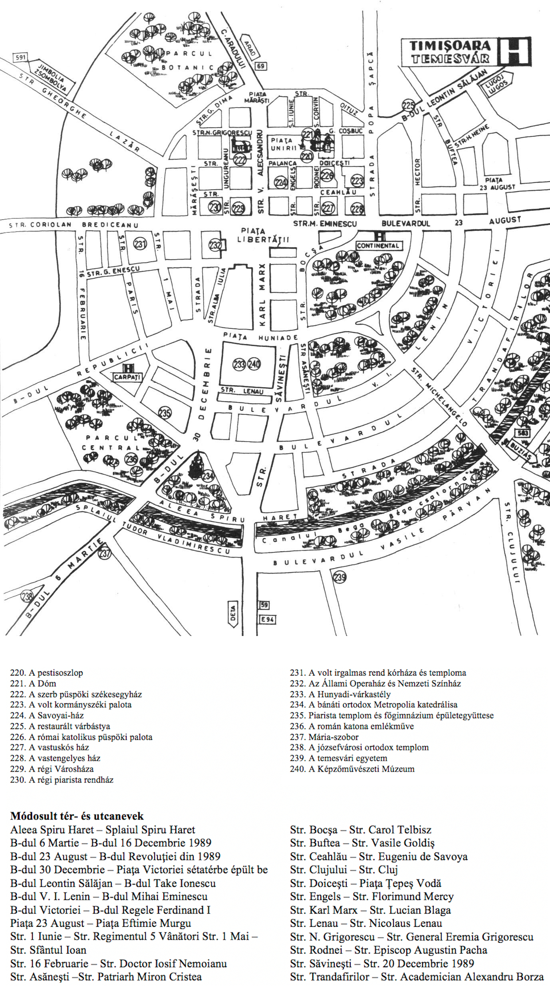
Temesvár Temes megye székhelye, a Béga-csatorna (a középkorban Temes-folyó) két partján fekszik. Lakossága több mint 319 000. A Temesköz központja, közúti és vasúti csomópont, egykor a Monarchia egyik fontos katonavárosa, ma művelődési központ és iparváros. Gyapjú-, fa- és élelmiszeripara, textil- és elektromotorgyára, fémfeldolgozása jelentős.
Neolit leletek bizonyítják, hogy a mocsarak közötti sziget természetes védettsége miatt ősidők óta lakott hely. A rómaiaknak itt is volt castrumuk. Ennek helyén kezdetben a mocsaraktól védett, cölöpfalú földvár állott. Az Árpádok alatt, 1212-ben mint „Castrum Temesiensis” szerepelt és a temesi comes (várispán) székhelye volt. Az első királyi várkastélyt 1318-ban Károly Róbert építtette fel. 1397-ben Zsigmond császár és király idejében országgyűlést is tartottak itt. Amikor az első török portyák idáig hatoltak, az ellenük folytatott küzdelem székhelye lett. Hunyadi János az erősséget felújíttatta és a kastélyt kibővíttette. 1456-ban innen indította hadműveleteit. 1458-ban Mátyás király, majd 1492-ben Kinizsi Pál temesi főispán – Nagyvázsony ura (ahol tombája ma is látható) – innen indult a török ellen. A Dózsa-parasztháború idején a keresztesek 1514-ben érkeztek Temesvár alá, és ostrom alá vették. Szapolyai János erdélyi vajda hadserege mentette fel, a felkelők seregét leverte, s vezetőit, Dózsa Györggyel együtt, válogatott kínzásokkal kivégeztette.
Az 1552. évi török ostrom idején Losonczy István temesi főispán volt a vár kapitánya. Miután német és spanyol zsoldosai megtagadták a fegyelmet és a vár feladását követelték, Losonczy a várat szabad elvonulás fejében feladta. A török azonban a kivonulókat megrohanta, rabolni és gyilkolni kezdett. A védekező Losonczy halálos sebet kapott, s fejét Konstantinápolyba küldték (1552. július 27.). A vár ezután 164 évig a törökök kezén maradt, innen indultak Arad, Jenő, majd Nagyvárad meghódítására. A császári hadak Savoyai Jenő vezetésével 1716-ban foglalták vissza a várat, véres ostrom után. Ezzel a „temesi bánság” határvédő tartománnyá vált.
Mivel az ostromban a régi vár tönkrement, 1722 és 1765 között 30 millió talléros költséggel új várat építettek. Ennek déli részébe a Hunyadi-várkastély részei is beépültek. A Vauban-rendszerű, csillag alakú várnak 9 bástyája és 3 kapuja volt. A várat 1849-ben a honvédség sikertelenül ostromolta. Falai a XIX. század végén még teljesen épek voltak, ekkor a város fejlesztése és rendezése érdekében nagy részüket lebontották.
Az osztrákok e jellegzetes garnizonvárosba megbízható német lakosságot telepítettek le. A polgári közigazgatást 1751-ben vezették be és II. József emelte 1781-ben szabad királyi városi rangra.
A város fejlesztését a nagyszabású csatornázási munkálatokkal a Habsburg-kormányzat indította el 1728 és 1760 között. A német telepesek a várost a bánáti ipar központjává tették. Az addigi „Temesköz” a Bach-korszakban szerb vajdaság lett, innen maradt fenn a Bánát név.
Az ipar fejlődésével a munkásság is szervezkedni kezdett. 1868-ban megalakult a Munkás Szövetség, 1869-től pedig itt működött az I. Internacionálé egyik szekciója. A május 1-et 1890-ben ünnepelték meg először. 1921-ben megalakult a kommunista párt. 1929-ben kivégezték a munkások vezetőjét, Fónagy Jánost; 1940-ben pedig a Vasgárdisták megölték Ocskó Terézt. 1944. augusztus 23-án a munkásság fegyveres felkelést szervezett a visszavonuló német csapatok ellen.
Temesvár szülöttei közül meg kell említenünk Klapka György tábornokot (1820–1892), Komárom védőjét, valamint Kós Károly (1883–1977) írót. Itt volt református lelkész Szabolcska Mihály (1861–1930), a költő.
Temesvár művelődési központ, kultúrélete rendkívül élénk. Operája, színházai, zenészei, képzőművészei országos jelentőségűek. Iskolaváros volt a múltban, 1940 óta pedig egyetemi város is. A Román Tudományos Akadémiának kutatóközpontja van itt.
A középkori város – az átépített Hunyadi-várkastélytól eltekintve – az idők során teljesen elpusztult. A mai város utcái szabályosak és a Béga partján igen szép parkok húzódnak.
A Belváros északi részén van a hajdani piactér (Piața Unirii).
Az egykori „Loyd sor” tulajdonképpen parkosított tér (Győzelem tér/Piaţa Victoriei), a századforduló eklektikus modorában épített nagyméretű palotákkal és üzletházakkal. Ez a város korzója. Közepén díszes szökőkút van, és itt áll egy oszlopon a capitoliumi farkas bronzszobra. A végén húzódik a 60 000 m2 területű központi park.
Dóm tér/Piața Unirii
A pestisoszlop tulajdonképpen barokk Szentháromság-szobor. A tér közepén áll, a várost megtizedelő 1738–39. évi nagy pestisjárvány emlékére állították.
A pestisoszlop közelében, a Dóm előtt, egy mesterséges fúrásból származó, gyógyvizes forráskút van.
Bővebben lásd:
lexikon.adatbank.transindex.roDóm tér 12. sz./Piața Unirii nr. 12
A Dóm a téglalap alakú tér észak-keleti sarkán áll. A csanádi püspökség székesegyháza volt. Emanuel Fischer von Erlach terve alapján 1736–73 között épült. Osztrák barokk stílusú, szimmetrikus homlokzatú, kéttornyú, monumentális építmény. Tornyai feltűnően alacsonyak, amit a vár katonai védelme indokolt.
Főhajóját kétoldalt kápolnák egészítik ki. Főoltára Josef Ressler munkája. A Szent György-oltárképet Michael Unterberger bécsi művész, a mellékoltárok képeit a prágai Johann Nepomuk Schöpf festette, 1772-ben.
Bővebben lásd:
lexikon.adatbank.transindex.roDóm tér/Piața Unirii
A szerb püspöki székesegyház a tér nyugati oldalán, szentélyével kelet felé néz. 1734-ben épült, barokk stílusban. 1791-ben restaurálták, és ekkor két tornyot is kapott. A XIX. század elején Habinger bécsi festőművész freskókkal díszítette. 1911-ben újabb nagy restauráláson esett át.
Közvetlenül a templom mellett áll a szerb püspöki palota is.
Bővebben lásd:
lexikon.adatbank.transindex.roDicasterium – Savoyai Jenő utca 2. sz./Str. Eugeniu de Savoya nr. 2
A volt kormányszéki palota a város legmonumentálisabb épülete. Három emeletén 450 helyiség található. A hatalmas épülettömb 120 évvel ezelőtt épült, ma a Törvényszék és más intézmények otthona.
Savoyai Jenő utca 24. sz./Str. Eugeniu de Savoya nr. 24
Az ún. Savoyai-ház 1719-ben készült, de azóta teljesen átépítették. Bejárata felett egy régi falképen látható a régi vár a középkori Forforoza-kapuval, melyen át Savoyai Jenő (1663–1736) hadvezér az elfoglalt várba bevonult (1716. okt. 13.).
Az eredeti kaputornyot 1817-ben lebontották. Savoyai Jenő herceg a valóságban sohasem lakott a házban, nem is volt az övé! A toronyban egy időben zsinagóga volt.
Luther Márton u. 4. sz./Str. Martin Luther nr 4.
A restaurált várbástya, a Dicasterium délkeleti oldalával szemben áll. Jelenleg Bánság Nemzeti Múzeuma működik benne, gazdag helytörténeti és kulturális anyaggal.
Augustin Pacha utca 1. sz./Str. Augustin Pacha nr. 1
A római katolikus püspöki palota a török időkben elpusztult Csanád helyett átmenetileg Szeged lett Szent Gellért ősi püspökségének székhelye. Temesvárra 1783-ban telepítették át, és itt működött a második világháború végéig, majd 1990 után újra itt működik. A palotának két szép barokk kapubejárata van.
Bővebben lásd:
lexikon.adatbank.transindex.roFrancesco Griselini u. 2. sz./Str. Francesco Griselini nr. 2
A vastuskós ház falfülkéjében látható a szögekkel kivert vastuskó. Az egyik szögön az 1826-os évszám áll.
A közhiedelemmel ellentétben a szakértők úgy vélik, hogy nem a vándorló céhlegények verték bele a szögeket, hanem egy vaskereskedés cégjelvénye volt.
Țepeș Vodă tér/Piața Țepeș Vodă
A vastengelyes ház nem tévesztendő össze az előbbivel. Sarkába 2,5 m hosszú, valószínűleg ágyú vagy nehéz jármű tengelye van befalazva. Szintén üzletcégér volt.
Szabadság tér 1. sz./Piața Libertății 1
A régi Városháza a tér északi oldalának főépülete. 1731 és 1734 között épült, eredetileg barokk stílusban, később azonban erősen átalakították.
Emanoil Ungureanu u. 1–3. sz./Str. Emanoul Ungureanu nr. 1-3
A régi piarista rendház a Városházával szemben, az utca túlsó oldalán áll. 1733 és 1736 között épült és eredetileg ferences kolostor volt. A piaristáknak több mint 120 éven át itt működött a gimnáziuma és konviktusa. Templomát 1911-ben bontották le.
Bővebben lásd:
www.welcometoromania.euSfântul Ioan u. 31. sz./Str. Sfântul Ioan nr. 31
A kórház és a gyógyszertár 1737 óta működött, 1849-ben leégett, majd újra felépítették.
Jelenleg a Szemészeti Klinika otthona.
Közelében várbástyamaradványok vannak.
Gyulafehérvár utca 2. sz./Strada Alba Iulia nr. 2
Az Állami Operaház és Nemzeti Színház Fellner és Helmer bécsi színháztervezők által emelt épületét Duiliu Marcu építész terve alapján építették át, neobizánci–román homlokzatot kapott. A színház német és magyar részlege az egykori Redoute színházzá alakított termében működik.
Bővebben lásd:
www.muemlekem.huHunyadi János tér 1. sz./Piaţa Iancu de Hunedoara nr. 1
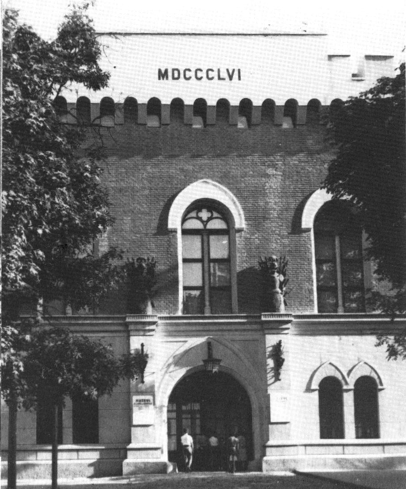
A Hunyadi-várkastély Temesvár egyetlen középkori részleteket tartalmazó építménye. A várkastélyt 1318-ban Róbert Károly király építtette s ezt alakíttatta át 1443-ban Hunyadi János. Az 1849. évi honvéd ostrom idején az ágyúlövedékek nagy kárt tettek benne, ezért 1856-ban újjáépítették. Nyolcszögletes tornya teljesen rekonstruált. Sokáig tüzérszertár, majd utászlaktanya volt. A legutóbbi restauráláskor meghagyták az 1856. évi alakját. A toronytól délre kiugró bástyafok, bár nem középkori Anjou- vagy Hunyadi-építmény, mindenesetre XVIII. század előtti. Az ablaksor és az emeleti szintek nem eredetiek. A második emelet teljes egészében új ráépítés, a megmaradt régi orompártázat felhasználásával. A délnyugati, valamivel kisebb bástya 1856. évi építmény.
1947-ben itt helyezték el a régi, 1872-ben alapított múzeumot. Történelmi gyűjteményének 22 termében 50 000 tárgy látható. Természettudományi részlegének 23 termében többek között a D. Lintea-féle madárgyűjtemény (16 000 db) van elhelyezve. A diorámák igen szépek. A múzeum megtekintésre feltétlen érdemes. A várkastély emeleti helyiségeiben és a lovagteremben időszaki kiállításokat rendeznek.
Bővebben lásd:
lexikon.adatbank.transindex.roa Győzelem tér/Piaţa Victoriei végén
A bánáti ortodox Metropolia katedrálisa tulajdonképpen már a Parcul Central szegélyén áll. Építését 1936-ban kezdték el, de a második világháború kitörése miatt csak 1946-ban fejezték be. Hossza 65 m, szélessége 32 m, 5000 hívő befogadására alkalmas. Ez a legnagyobb és legmagasabb romániai ortodox templom. Tornya 83 m magas. Külső díszítőelemei különlegesek, piros–sárga csíkozású nyerstéglafal borítása van. Tetőzete színes majolikából készült. Tervezője, Ion Traianescu építész a Ștefan cel Mare moldvai fejedelem által épített templomokat vette mintául. A laza homoktalaj miatt az épületet 17 000 betonpillérre kellett állítani.
A katedrális belseje misztikus hangulatú, álkupolájának mennyezetén a Pantokrator képmása látható. A pantokrátor-képek bizánci hagyomány szerint Krisztust a világ uralkodójaként ábrázolják. A freskókat Damian Anastasiu (Tassy) neves román művész készítette. A díszes faragású ikonosztáz Ștefan Gajo és Traian Novac remekműve. 1956-ban a partosi kolostorból ideszállították Partosi új Szent József (Sfântul Iosif cel Nou de la Partoș) ereklyéit, amelyek díszes szarkofágban a hajó jobb oldalán vannak elhelyezve.
Mihai Eminescu (1850–89) román költő szobra a katedrálistól balra áll.
Piatra Craiului utca – Mária királyné tér – I Ferdinand király sugárút – Republicii sugárút/Str. Piatra Craiului – Piaţa Regina Maria – Bd. Regele Ferdinand I. – Bd. Republicii
Piarista templom és főgimnázium épületegyüttese 1908–09-ben épült, szecessziós stílusban, piarista rendháznak és gimnáziumnak. Temploma kisebb méretű, tornya különleges alakú, túldíszítetten szecessziós, belseje eklektikus, neoromán kiképzésű.
Jelenleg a Gerhardinum Római Katolikus Teológiai Líceum működik benne.
Bővebben lásd:
lexikon.adatbank.transindex.roKözponti park/Parcul Central
A román katona emlékműve ruszkicai márványból készült hatalmas alkotás, amelyet 1962-ben állítottak fel.
1989. december 16. sugárút/B-dul 16 Decembrie 1989 és Dózsa György utca/Str. Gh. Doja sarka
1906-ban állították fel, Dózsa György kegyetlen kivégzésének állítólagos helyén. Még a szobor hátánál levő felirat is ezt tanúsítja, holott a kivégzés valójában a Béga jobb partján, a Központi park területén lehetett.
Fortunei tér 9. sz./Piața Furtunei nr. 9
A józsefvárosi ortodox templom volt az első román katedrális. 1931–36 között épült, neobizánci stílusban, nagy kupolával, két zömök toronnyal. Előtte külön álló magas harangtorony van. Az épületet Victor Vlad műegyetemi tanár tervezte, freskóit Prof. Catul Bogdan és Dr. Ioachim Miloia festette, ők készítették az ikonosztázt is.
Vasile Pârvan sugárút, 4. sz./Bd. Vasile Pârvan nr. 4
Az egyetem 1962-ben épült, modern vonalú, különleges építmény. A főépület alacsonyabb, a könyvtár viszont kilencemeletes. Az adminisztratív részleg a toronyépületben van, a tantermek az alacsonyabb épületrészekben.
(Egyesülés tér 1. sz./Piaţa Unirii nr. 1
Az új román festőművészet képviselői mellett olasz, flamand, német és francia festők művei is szép számban láthatók a gyűjteményben.
Csatád 307240/Lenauheim 307240
Lenau szülőházában emlékmúzeumot rendeztek be a költő tiszteletére. Ugyanitt van a néprajzi múzeum is, amelynek három teremben kiállított anyagát 40 községből gyűjtötték össze.
A Vadászerdő (Pădurea Verde) a város északkeleti részén terül el. Az 1885-ben alapított Erdészeti Szakiskola és Erdészeti Kísérleti Állomás tanulmányi és kísérleti erdejéből átalakított parkerdő. Az intézmény 33 évig működött. Kedvelt kirándulóhely, kempinggel, uszodával, falumúzeummal.
Buziásfürdő (Buziaș) országos jelentőségű gyógyhely. Temesvártól 36 km-re kelet felé, az 583. számú út mellett fekszik, szép szőlővidéken. Forrásainak szénsavas, vasas, kalciumkarbonátos vizét idegrendszeri és női betegségek, vérkeringési, valamint emésztőszervi zavarok gyógyítására használják. Három fürdője, szívszanatóriuma, vízgyógyintézete, strandja és úszómedencéje van.
Buziás neve először 1321-ben bukkant fel, amikor Róbert Károly király akkori tulajdonosát, Bulyeni Márkot birtokában megerősítette. A fürdőt már a rómaiak is ismerték, „Centum putei” volt a neve. Gyógyvizére később Lindenmayr uradalmi orvos hívta fel újra a figyelmet 1809-ben. 1811–16-ig kutatófúrásokat végeztek.
1857 után létesítették a 100 holdas díszparkot. A fürdő forrásai közül legjelentősebb a Phoenix-, a Szt. Antal-forrás, az Acélfürdő, ivókúrára pedig a Republica-és a Sănătate (Egészség)-forrás vizét használják. Deák Ferenc kedvelt fürdője volt, díszpihenőpadja ma is megvan.
Buziás ortodox temploma 1842-ben, a katolikus templom 1874-benépült.
Temesvártól nyugat felé 34 km-re, közvetlenül a szerb határ mellett fekszik Zsombolya (Jimbolia) az 591. út mellett. Lakossága 10 800 fő. Hajdan Chombol volt a neve, a törökök elpusztították. 1766-ban telepítették újra. Uradalmát a XVIII. században a Csekonits család szerezte meg, és 1871-ben Ybl terve szerint kastélyt is építettek.
Közvetlenül Zsombolya előtt van Gyertyános (Cărpiniș). Az itteni elágazásnál észak felé Nagy Jécsán (Iecea Mare) keresztül kell Csatád felé letérni. Csatád (Lenauheim) Nikolaus Lenau (1802–1850) szülőhelye. Az osztrák költő teljes neve Nikolaus Niembsch von Strehlenau volt. 1905-ben a község lakói a költőnek díszes szobrot állítottak (Rudnay Béla műve)
Nagyszentmiklós (Sânnicolau Mare) az Aranka (régi nevén Harangod)-patak mentén fekszik, 12 000 lakosa van. Már a rómaiaknak is volt itt településük. Hajdan a Nákó család szép kastélyt építtetett a városban.
1799-ben itt találták meg a honfoglalás korabeli, 23 tárgyból álló rovásírásos aranyleletet. A legújabb kutatások szerint a rovásírással írt szavak magyar nyelvűek, mások bolgár főúr kincsének tartják. A kincs a bécsi Kunsthistorisches Museumba került.
A városnak két nagy szülötte van. Az egyik Révay Miklós (1749–1807) költő, a magyar nyelvtudomány egyik megalapítója, a másik a világhírű zeneszerző, Bartók Béla (1881–1945). A városban szerény Bartók-emlékmúzeum van.
Alba Iulia / Gyulafehérvár u., 2. sz., Temesvár, 0040 – (0)256 – 437973
www.timisoara-info.roTemesvárt a városmag északkeleti részén levő, restaurált, háromnyílásos várbástyán keresztül, a Republicii sugárúton, a Lugosi út/ alea Lugojului vonalát követve hagyjuk el. Az E70-es (DN 6) út a Béga völgyében vezet, a vasútvonallal párhuzamosan. Északról kopár dombok, délről a bázosi maradványtölgyesek kísérik.
A Temesvárhoz tartozó Győröd (Ghiroda) és Temesremete (Remetea Mare) után beérünk Őszény (Izvin) községbe, amelynek kastélyában méntelep és lovaglóiskola működik.
Temesrékas (Recaș) községből kitérőt tehetünk déli irányba.
Topolovác, Nagytopoly (Topolovățu) községnél észak felé fontos elágazás vezet Lippára, délnek pedig Buziásfürdőre.
Ezután Újjózseffalva (Joșifălău) helységnél keresztezzük a Bégát, majd Kiszető (Chisătău) és Belence (Belinț) következik. Kastély (Coșteiu) községben gróf Mercy 1763-ban zsilipet és csatornát építtetett, amellyel a Béga vízállását szabályozni lehetett. A Bégát 10 km hosszú csatorna kötötte össze a Temessel, a hajózás érdekében.
Lugos (Lugoj) város a Temes-folyó két partján, 125 m magasságban fekszik, a Ruszka-havas (Poiana Rusca) nyugati végénél. A Temesvár – Orsova – Bukarest vasúti fővonal mellett lévén, fontos közlekedési gócpont. Környéke szőlőtermő, szép vidék, lakossága több mint 39 000. Jelentős iparral rendelkezik.
Nagyon régi település. Először 1333-ban említik az oklevelek, 1376-ban királyi vár volt, 1440-ben már mezőváros és a török időkben is város maradt. 1695. szeptember 21-én II. Musztafa szultán itt verte szét Veterani Frigyes (1650–1695) császári tábornok seregét. Veterani fogságba esett és megölték. A vár ekkor török kézre jutott. A város 1779-ben lett megyeszékhely, 1854-től görögkatolikus püspökség székhelye.
Lugos a XVI. század óta az erdélyi román kultúra fellegvára. Ekkor alapítottak itt iskolát először a románok részére. A XIX. században gimnáziumot kapott, mely most C. Brediceanu nevét viseli. Itt élt egy ideig Eftimie Murgu román filozófus, sírja a lugosi ortodox temetőben van. A lugosi Brediceanu család család több jeles tagjának fennmaradt a neve: Coriolan Brediceanu politikus szobra a líceum előtt áll; Tiberiu Brediceanu pedig zeneszerző volt (1877–1968). Itt született I. Popovici Bănățeanu (1869–1893) és Victor Vlad Delamarina (1870–1896) író. Lugosnak híres kórusa volt, amelyet Ion Vidu (1836–1931) zeneszerző vezetett egy időben. Innen indult el fényes útjára Traian Grozăvescu (1895–1927) román operaénekes is.
Lugosi eredetű a Maniu család is; Vasilie Manu volt a politikus Maniu-generációk alapítója.
A város központja a Piața Victoriei (Győzelem tér). Itt áll az 1835-ben épült, díszes, volt görögkatolikus püspöki székesegyház. Ma ortodox templom.
Figyelemre méltó a Sălăjan Tiberiu tervei alapján épített új, nagyszabású épület: A közművelődés és a technika háza.
Lugost az E70-es úton hagyjuk el, a vasúttal párhuzamosan haladunk tovább a Temes völgyében. Balra a Ruszka-havas (Poiana Rusca) erdős vonulata kísér.
Szákul (Sacu), majd Kavarán (Căvăran) után kétszer keresztezzük a vasútvonalat. Közvetlenül Karánsebes előtt Zsuppa (Jupa) prehisztorikus telepmaradványairól nevezetes.
Bázos/Bazoșu Nou
A bázosi arborétumot Ambrózy Lajos neves dendrológus telepítette. 64 hold kiterjedésű, kb. 4000 fajt tartalmazó fagyűjtemény. Az éghajlatnak megfelelően legtöbbjük Észak-Amerikából származik, de vannak fák és cserjék a többi világrészből is. Természetvédelmi terület.
Győzelem tér/Piața Victoriei
A szobrot 1968-ban, az 1848-as forradalom 120. évfordulóján állították.
Eftimie Murgu (1805–1870) román filozófus és politikus jogi és filozófiai tanulmányait Budapesten végezte. Ezután a Jași-i Academia Mihăileană (az első román főiskola) tanára lett. 1837-ben Bukarestbe költözött s itt tanítványai közé tartozott Nicolae Bălcescu, az 1848-as román forradalom vezéralakja. 1840-ben száműzték a Havasalföldről, s ekkor a Bánságban telepedett le. A radikálisok (Petőfi és a Madarász testvérek) oldalán részt vett az 1848-as forradalomban. 1848-ban Táncsiccsal együtt szabadította ki őt a pesti nép a börtönből. A szabadságharc után halálra ítélték, majd négyévi börtönre változtatták ítéletét. Kiszabadulva Budapesten ügyvédeskedett.
Győzelem tér/Piața Victoriei
A lugosi Szent Miklós-torony középkori műemlék, a XV. századi Szt. Miklós-templom maradványa.
1989 December 20 utca/Strada 20 Decembrie 1989
A régi ortodox templom építését 1759-benkezdték meg barokk stílusban, de csak a XIX. században fejezték be.
Brediceanu töltés/Splaiul Brediceanu
A lugosi színház a század elején épült. 1967-ben ünnepelték a műkedvelő színház megalakulásának 125. évfordulóját. Rövid ideig magyar és német színtársulat is működött.
Nicolae Bălcescu utca 4. sz./Strada Nicolae Bălcescu nr. 4
A lugosi múzeumot 1950-ben alapították. Gazdag népművészeti és régészeti anyaga a vidék történetével és lakóival ismertet meg. Főleg a bánsági népviselet ma már ritka szűrei és hímzett ingei érdemelnek figyelmet.
Zsidóvár/Jdioara helység melletti hegytetőn
A vár már 1320-ban állott, 1444-ben Hunyadi János Guti Országh Mihálynak adta cserébe az Arad megyei Solymos váráért. Később a Pongráczoké, majd a Jósika családé lett.
Bázos (Bazoș) 7 km-re fekszik Temesrékastól.
A falu Lugostól dél felé 5 km-re van. Régi neve Lugoskisfalu (Satu Mic). Új nevét szülöttjéről, Victor Vlad Delamarináról kapta. A faluban látható az író emlékmúzeuma. A falu környékén az i. e. I. századból származó földvár nyomait fedezték fel.
Lugost délkeleti irányban hagyjuk el a Temes jobb partján vezető úton. Az E 70-es út a folyó másik partján vezet. Kricsó (Cricieva) falunál balra térve rövidesen Zsidóvár (Jdioara) helységhez érünk.
Nadrág (Nădrag) falu fölött, már a Ruszka-havas 900 m magasságában áll a Căpriorul menedékház. Innen a Padeș (1380 m) csúcsa is elérhető.
Splaiul Coriolan Brediceanu, Lugos, tel.: +40-(0)371-360032
www.turismlugoj.ro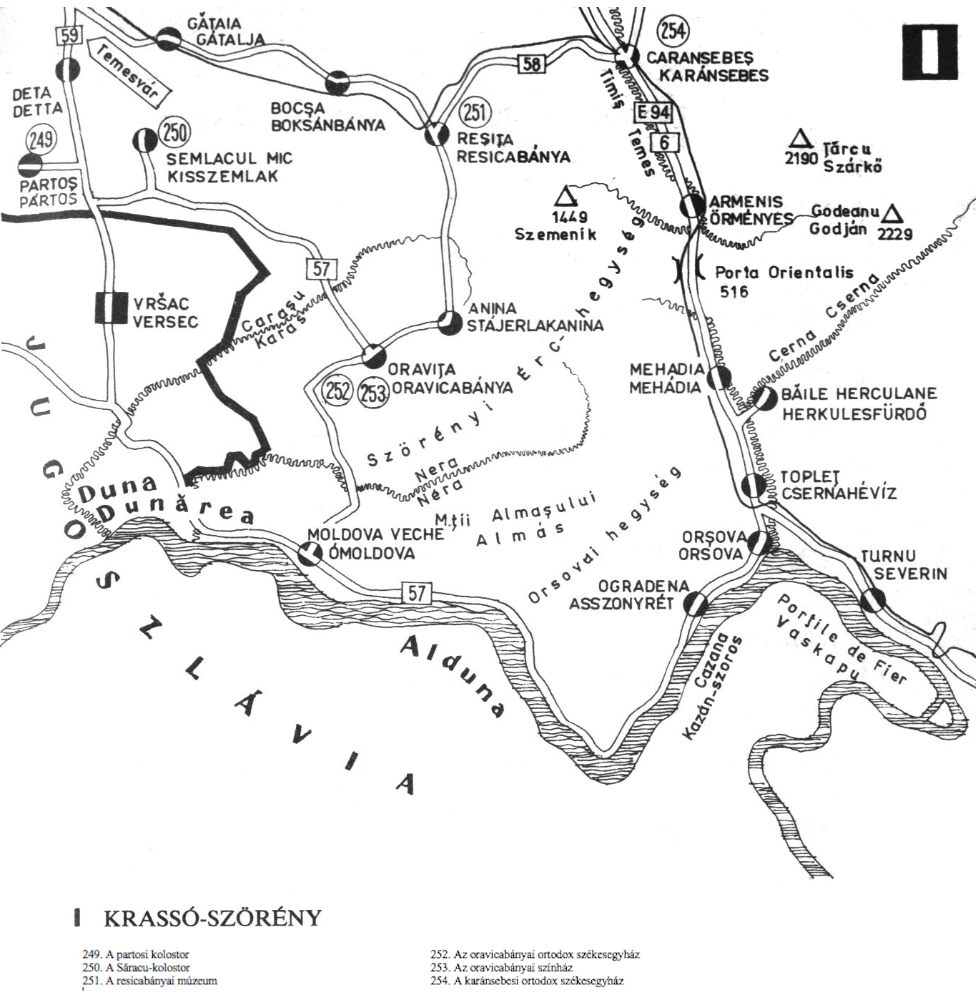
Temesvárt az 1989. December 16. sugárút / Bul. 16 Decembrie 1989 vonalán hagyjuk el, és az E 70 (DN 59) jelzésű úton megyünk dél felé. Széphely (Jebel) községnél kitérőt tehetünk délnyugatra Csák (Ciacova) felé. Az E 70-es úton tovább Vejte (Voiteg) fontos elágazási pont, mert innen indul Karánsebes felé az 58B számú útvonal. Mielőtt azonban rátérnénk, kirándulásként az E 70-es úton dél felé megyünk tovább.
A következő nagyobb helység az 58 B úton Boksánbánya (Bocșa), régen ipari központ volt mezőgazdasági gépgyárral, erdészeti és bányaüzemekkel. Lakóinak száma a hozzácsatolt Vaskő teleppel (Baia de Fier) együtt csaknem 16 000.
Resicabánya (Reșița) a Berzova völgyében, a Szemenik-hegység aljában, nagy szén- és vaslelőhelyek vidékén fekszik. Krassó-Szörény megye (județul Caraș-Severin) székhelye, s a hozzácsatolt öt településsel együtt ma mintegy 69 000 lakosa van.
Története a helyi bányászat történetével azonos. A fémmű 1769-ben alakult, 1771-ben két kohó és 4 vasmű működött, 1871–73 között megépült a vasútvonal. Az első mozdonyt 1872-ben készítették el. Mint nagy iparközpont, hamarosan a munkásmozgalom fontos helyévé vált. 1903-ban megalakult a szociáldemokrata, 1918 őszén pedig a kommunista párt. Ma is a nehézipar központja.
A városban színházat és több szállodát találunk.
Resicabányáról az 58B úton folytathatjuk az utazást Karánsebes felé.
Karánsebes (Caransebeș) 24 000 lakosú város a Sebesés a Temes-folyók találkozásánál, 211 m magasan fekszik. Fontos vasúti és közúti csomópont.
A várost 1290-ben említi oklevél. A XV. században élénk kereskedelméről ismerték. 1457-ben város lett, s 1498-ban ugyanazon kiváltságokat kapta meg, mint Buda! A XVI. századig igen népes és nagy forgalmú hely volt, de a török idők alatt majdnem teljesen tönkrement.
A török idők után fejlődése ismét fellendült, ugyanis II. József a bánáti román határőrezred székhelyévé tette. (Ennek a császári katonai alakulatnak hatalmas vagyona volt.) A város rövidesen az erdélyi románság egyik kultúrközpontja lett, volt román tanítóképzője, gimnáziuma, sőt papneveldéje is. 1864 óta ortodox püspöki székhely.
A Nicolae Bălcescu utca végén, Drăgălina tábornok szobra mögött láthatók az egykori határőrségi épületek. A Episcopiei u. 11. számú épülete az ortodox érsekség, a 13. számú épület pedig a volt Határőrlaktanya épülete. A közelben áll a díszes régi Megyeháza is.
Fő utca 70. sz., Partos/Str. Principala nr. 70, Partoș
A partosi kolostor a bánáti román egyházi emlékek egyik legérdekesebb építménye. Már a XV. században megvolt, a XVIII. században pedig szerzetesiskola működött benne. A mai templom 1750 és 1753 között épült, a régi helyén. 1949-ben restaurálták.
Ikonosztáza nagyon szép, fafaragvány-, virág- és indadíszítésekkel. Két értékes ikonja és több olajfestménye a bizánci jellegű ortodox egyházi művészet XVIII. századi remeke. Innen vitték a temesvári ortodox székesegyházba a József nevű szentéletű pap ereklyéit
Vársomlyó/Șemlacu Mic mellett
A Săracu-kolostor egyszerű, fehér falú, zsindelytetős épület. 1720-ban már kisszentmiklósi kolostor néven említették az oklevelek. Szép bizánci stílusú freskó mellett több értékes ikonja is van.
Republicii sugárút 10. sz./Bulevardul Republicii nr. 10
A resicabányai múzeum hét termében a bányavidékre jellemző gazdag ásványgyűjteményt, a környék régészeti leleteit és a helyi ipar fejlődését szemléltető emlékeket láthatjuk. A kiállításon csaknem 6000 tárgy szerepel.
Andrei Șaguna utca 46. sz./Strada Andrei Șaguna nr. 46
Az oravicabányai ortodox székesegyház 1872-ben épült, barokk stílusban. Belső díszítése, ikonosztáza nagyon szép és sok értékes ikon látható benne.
Mihai Eminescu utca 18. sz./Strada Mihai Eminescu 18
Az oravicabányai színház épülete 1815 és 1817 között épült. A színházat 1817. július 1-én nyitották meg, s felváltva szerepeltek benne német, magyar és román társulatok.
Járt itt Mihail Pascaly társulata is, amelynek súgója Mihail Eminescu, a nagy román költő volt.
Szent György tér 2. sz./Piaţa Sfântu Gheorghe nr. 2
A karánsebesi ortodox székesegyház elődje 1449-ben épült. Többszöri változtatás után a XIX. században klasszicista stílusban építették újjá.
Széphely (Jebel) községnél nyugatra térve érjük el Csák (Ciacova) települést. Hajdani várát még Trencséni Csák Máté építtette. A donzson öt emelet magasságú, ma is áll, de az erősség többi részét 1701-ben lerombolták. 1395-ben említik, 1552-ben a törökök elfoglalták. A török hódoltság után a kipusztult lakosok helyére szerbeket telepítettek. Itt született Dositije Obradović (1742–1811), szerb pedagógus és gondolkodó, aki a szerb szellemi megújulás bölcsőjét, az első belgrádi iskolát megteremtette.
Vejte után továbbra is az E70-es úton maradva jutunk Detta (Deta) településre, mely 1968 óta város. Az 5500 lakosú iskolaváros múzeumában sok környékbeli régészeti lelet látható.
Dettából Bánlakon (Banloc) át kirándulhatunk a szerb határ közelében fekvő Partos (Partoș) községbe.
Az 582. (58 B) számú úton Gátalja (Gătaia) községnél kitérőt tehetünk. Vársomyló (Șemlacu Mic) irányába.
Resicabányától délkeletre Ferencfalva (Văliug) faluból drótkötélpálya visz fel a Szemenikre. Ferencfalvánál mesterséges tó is van.
Resicabányáról kitérőt tehetünk Krassóvár (Carasova) irányába. A település bolgár származású lakosságának igen érdekes népviselete van. A bolgárok a törökök elől menekültek ide. Krassófő vára a falutól északkeletre fekszik. Csak gyalog közelíthető meg a vár környékén lakók útmutatásával. A romoknál is érdekesebb azonban a Krassó szurdoka, tipikus karsztvidék, sziklafalakkal, barlangokkal a természetjárók paradicsoma. Itt van a komárniki cseppkőbarlang is. Bejárata a komárniki (Comarnic) erdészház közelében van. A barlangnak őre is van, aki a vezetést is ellátja. Stájerlakanina (Anina), a Szemenik-hegység nyugati lábánál, Románia egyik legjelentősebb szénbányászati központja volt. A várost 185 évvel ezelőtt alapították. Közigazgatásilag Resicabányához tartozik.
Oravicabánya (Oravița) 1782-ben alakult, ma 9300 lakosú bányaváros. A XIX. század elején olyan gyorsan fejlődött, hogy 1818-ban már hetilap jelent meg itt, és saját színháza volt.
Oravicabánya és Stájerlakanina közt ma is használatban van a Bánát legrégebbi vasútvonala, amelynek építését 1844-ben kezdték meg és 1856. november 1-én avatták fel.
Oravicabányáról felkereshetjük az Ochiul Beiului védett területet, amely mediterrán növényzetéről híres. Közelben van a Néra-folyó vadregényes szurdoka.
Kis-havas (Muntele Mic) turistatelep 3,5 km hosszú drótkötélpályája 799 m magasságot győz le. Mivel Karánsebes a Szemenik és a Szárkő között fekszik, gyakorlott turisták jó felszereléssel a Szemenik (1449 m), a Szárkő (Țarcu – 2190 m) és a Godján (Godeanu – 2229 m) csúcsot is megmászhatják. Vigyázat! Magas hegység, nehéz túra!
Karánsebesről az E70 (DN6) jelzésű úton folytatjuk utazásunkat dél felé. A vasút az úttal párhuzamosan halad. Most következik a legfestőibb szakasz, a Temes-völgy fejénél, a „Porta orientalis” hágója, majd a mehádiai völgy, kitérővel Herkulesfürdő felé. A régi időkben ez volt a török elleni védelmi harcok és a török betörések útvonala. A Bukarest felé vezető vasútvonal párhuzamosan halad az úttal, s többször keresztezi is. Karánsebestől Szlatináig a hegyoldalak falvakkal vannak teleszórva. Ez az ősi, tipikus román településmód. Temesszlatina (Slatina Timiș) után a szűk örményesi szoros következik, ahol a vasúti pályát és utat a sziklafalba kellett bevágni.
A vasércbányászatáról híres Örményes (Armeniș) mellett az országúttól balra egy sziklába vájt kápolnát láthatunk. Teregova községnél a Temes forrásága Ruscánál északnyugat felé kanyarodik, és a sziklabérces szurdok kitágul. Itt bal kéz felé a Hideg-patak (Pârâul Hidegu) mentén lehet a Szár-kőt megközelíteni.
A Temes völgyét elhagyva a „Porta orientalis”, azaz „A Kelet kapuja” hágóra érünk, s innen ereszkedünk le a Mehádia-völgybe. Plugovánál a völgy újra összeszorul és a Béla-patak mentén érünk be a Béla medre és a sziklafalak közé szorult Mehádia (Mehadia) községbe. Hajdan dák település, majd az Ad Mediam nevű római őrhely volt, amely a Sarmisegetuzába, Dácia fővárosába vezető utat őrizte. Az őrhely nyomai még megvannak. Mehadiának templomain és múzeumán kívül egyik fontos látnivalója az a középkori romos őrtorony, amely a község szélén áll.
Az E70 (6) jelzésű úton megyünk tovább dél felé a Cserna völgyében. A Cserna magas hegyek között kanyarog, és vize tombolva rohan a meder nagy kövei között.
Csernahévíz (Topleț) után az országúttól balra van a Bánáti szfinx nevű sziklaalakulat, amely oldalnézetben az egyiptomi szfinxhez hasonlít. Odább a vasútvonalon túl, jobbra egy római vízvezeték hídszerű romjai még ma is megvannak, Csernahévíz után már Mehedinți megye kezdődik.
Az új Orsovát (Orșova) a felduzzasztott tó, a Golful Cerna (Cserna-öböl) nyugati szélén építették fel. Jelenleg 10 400 lakosa van.
Ez a terület ősidők óta fontos őrhely lévén, a rómaiaknak castrumuk volt itt. A régi Orsova a római Dierna helyén állott. 1396-ban Zsigmond. később pedig Hunyadi János erre vonult a török ellen. Erre menekült Kossuth a szabadságharc leverése után, és itt ásták el a koronát. Később fellelték s ennek helyén épült a Korona-kápolna. (Ez is megsemmisült a közelmúltban.)
Az Al-Duna szabályozását Széchenyi István kezdte el. 1830-ban, szakértők kíséretében a „Desdemona” nevű hajón végigutazta a Dunát és az utazás tapasztalatai alapján Vásárhelyi Pál mérnök dolgozta ki a szabályozási tervet. 1833-ban megkezdték a munkát, s 1837-re meg is építették Báziás és Orsova között a Széchenyi utat. Ez fontos volt, mert a hajók rakományát kocsin vitték tovább a hajózható folyamrészig. A Vaskapu hajózhatóságát véglegesen 1890–98 között oldották meg.
Orsova, a régi térképeken jelzett város, néhány éve mindörökre eltűnt. Ugyanis a Vaskapu kijáratánál Románia és Jugoszlávia közösen óriási vízierőművet épített és a duzzasztás folytán a régi Orsova víz alá került. A felduzzasztott víz elöntötte Ada-Kaleh szigetét, amelynek régi épületeit a Simian-szigetre helyezték át, Drobeta-Turnu Severin (a középkori Szörény-vár) mellé. A víz elöntötte a régi Széchenyi utat is, s ehelyett magasabban új utat építenek. (A Széchenyi-emléktábla már a múlté.)
Az új városban a Cserna-öböl üdülő- és fürdőkörzetét és kikötőjét érdemes megnézni.
A mehádiai őrtorony mellett északnyugat felé útelágazás vezet Bélajablánc (Jablanița) helységen át az Almási-katlanba. Így nevezik a románok is a Néra szép völgyét. Itt van a Néra szurdoka (Cheile Nerei), a bánsági hegyvidék természetvédelmi területe. Környékén karsztjelenségek, érdekes barlangok láthatók.
Innen lehet Anina, Oravița és Reșița felé eljutni.
A szűk völgy két oldalán a hegyeket lomberdők és vad gyümölcsfák borítják. Felettük sziklák tornyosulnak.
Mehadiától 5 km-re a Cserna torkolatánál kezdődik az az útelágazás, amely Herkulesfürdőre vezet. Itt van a fürdő vasútállomása is: „Băile Herculane”. Innen 5 kilométeres út visz a fürdőig (autóbusz-közlekedés a vasúttól).
Herkulesfürdő (Băile Herculane) nemzetközi hírnevű, klasszikus gyógyhely. A Cserna völgyében 160 m magasan fekszik. Lakossága több mint 4400.
A rómaiak „Ad aquas Herculi sacras” (Herkules szent vizeihez) vagy „Thermae Herculi ad Mehadiam” (Herkules mehádiai hévizei) néven ismerték; már i. sz. 105–107 között fürdőket létesítettek itt és Herkulesnek szobrot emeltek. A római fürdőtelep a népvándorlás alatt tönkrement. 1736-ban Hamilton osztrák tábornagy figyelt fel a helyre, s III. Károly rendeletére szerény építkezésbe kezdtek, hogy a fürdést lehetővé tegyék. Ezek az építmények azonban az 1737. évi török háborúban elpusztultak. A fürdő csak 1817-re épült fel, ekkorra szabályozták a Cserna-patakot, utat építettek stb., s ekkor kapta hivatalosan a Herkulesfürdő nevet. 1852 után kezdődött meg a ma is meglevő (régi) épületek létesítése. Felépült a nagy gyógycsarnok, az ún. Rezső- és Ferenc József-udvar, a kupolás Szapáry-fürdő és több díszes nyaraló. A XIX. század folyamán sok híres ember fordult meg itt, többek között a Vaskapu-csatorna felavatásakor, 1896-ban, itt találkozott Ausztria– Magyarország, Románia és Szerbia uralkodója.
A fürdőhelyen a Florilor úton van a Nyári Színház. Innen a központ felé találjuk régi Neptun fürdőt, az ortodox templomot és a Cserna-szállót. A Herkules tér (Piața Hercule) végéről vezet át a híd a Cserna jobb partjára, ahol a fürdőpavilonok sorakoznak. A gyógyvíz hatása rendkívül erős, ezért csak előzetes orvosi vizsgálat után szabad fürödni. A Herkules-szobor (1847) a főtéren áll. A főtér északi oldalán van a katolikus templom, s közelében a római fürdő.
Kirándulások. A Cserna völgyén elsétálhatunk a Hygiea- és a Herkules-forráshoz s innen a Rabló- és az Izzasztó-barlanghoz, és a két és fél kilométerre levő Fehér Kereszthez. A fürdőtől délkeletre van a Domogled 1100 m magas mészkősziklás vidéke, amely különleges déli jellegű flórája miatt természetvédelmi terület.
A hajójárat négy szoroson és három medencén halad át.
Asszonyrét (Ogradena) községig tart az orsovai medence, s itt kezdődik a Kazán-szoros 20 kilométeres szakasza. Az ún. Kis-Kazán után következik a Nagy-Kazán, hol a folyam 130–170 m széles, de 20–54 m mély. A két Kazánt a dubovai kiöblösödés választja el egymástól. A felduzzasztott meder 80 m mély. A sziklafalban barlangok vannak, pl. a híres Veterani-barlang, ahol 1692-ben Veterani osztrák tábornok feltartóztatta a törököket.
Naszádos (Plavișevița) helységnél véget ér a Kazán-szoros. Itt volt Széchenyi és Vásárhelyi Pál székhelye a Széchenyi út építése idején.
Tiszóca (Tișovița) után meglátjuk a Trei cule (Három torony) nevű egykori magyar erődítmény, majd XVI. századi török erőd romjait. Itt kezdődik a 19 km hosszú Donji Milanovec-medence. Ezután a Gospodin Veri-szoros következik, partján a Hosszú-sziklával (Piatra Lunga).
Kecskés (Cozla) falunál láthatjuk a Cozla-szirtet, szerb oldalon pedig a Dojke-szirtet s Drenkovánál elérjük a felső-lupkói medencét, amely 12 km hosszú. Itt van Drenkó várának romja. A középkorban a Szörényi bánság egyik fontos magyar végvára volt, különösen a török támadások idejében. A törökök 1432-ben foglalták el. A vár négyszög alakú 21×25 m méretű volt. A falak 15 méter magasak, 1,5 m vastagok voltak. Ezután a Galambóci-szoros következik, majd a Moldova-sziget a szomszédos Nagyapó-sziklával (Babakáj). A sziget bal oldalán Lászlóvára (Coronini) következik várrommal, s végül Ómoldova (Moldova-Veche). A túlparton látszó Galambóc várának eleste után (1428) Zsigmond király annak pótlására a magyar oldalon építette Szent László várát a Szörényi bánság végvársorozatában (Orsovától kezdve). Hajdan maga Szörényvár, a mai Turnu Severin is ezek közé tartozott.
Az autós turisták egyik határátlépő helye Gyulavarsánd (Vărșand). Innen Kisjenő (Chișineu-Criș) városon át dél, majd Nadabtól (Nădab) délkelet felé megyünk. (Kisjenő várost a IV. útvonal során ismertettük.)
Zaránd (Zărand) régen megyeszékhely volt, honfoglaláskori várának nyoma is alig látszik. Majd Csigérszöllős (Seleuș) következik, ahol keresztezzük a Csikér-patakot és északkeletnek kanyarodunk.
Vonattal Kürtös-nél (Curtici) lépünk be és Aradtól utazhatunk Borosjenő felé.
Borosjenő (Ineu) a Fehér-Körös mentén fekszik. Több mint 8300 lakosa van. Hajdan híres iparos központ volt, ma fafeldolgozó és élelmiszeriparáról, gépjavító műhelyeiről híres.
1199-ben temploma már állott, 1333-ban Nagyjenő néven ismerték, s 1561-ben virágzó város volt. Később a törökök kétszer is elpusztították. 1849. augusztus 21-én itt rakta le Vécsey tábornok serege a fegyvert Rüdiger orosz tábornok előtt.
A városban egy török minaretmaradvány látható. Van itt egy fatornyos, kb. 1400-ból származó kis református templom is. A katolikus templom kriptájában volt eltemetve 1974. október 6-ig gróf Leiningen Károly aradi vértanú. Hamvait ekkor Aradra vitték.
Borosjenő után, a Fehér-Körös mentén a brádi vasútvonallal párhuzamosan haladunk. Barza (Bârsa) híres fazekas falu, ahol román népi kerámiák vásárolhatók.
Borossebes (Sebiș) a Fehér-Körös jobb partján levő városka, mintegy 5000 lakossal. Hajlítottbútor-gyártása régóta nevezetes. A városban van egy XIX. század eleji kastély.
A jó gyümölcs- és bortermő vidéken fekvő város 1387-ben a Losonczy családé volt. 1566-ban a törökök elfoglalták, a déznai várral együtt. A törökök kiűzése után János Zsigmond 1597-ben Kornis Gábornak adta, majd 25 évre ismét a törökök kezére került. A XVII. századtól több birtokosa is volt, míg 1891-ben Wenckheim Frigyesé lett.
Borossebesen született Sárosy Gyula (1816–1861), a szabadságharc történetéről szóló „Ponyvára került Arany Trombita” költője. Itteni születésű Karikás Frigyes (1895–1938) író is, a magyar kommunista mozgalom nagy alakja, és Mihai Beniuc (1907–), a mai román líra nagy egyénisége.
Borossebes után ismét keresztezzük a Fehér-Köröst, néhány falucska következik, majd Honctő (Gurahonț), ahonnan kitérőt tehetünk több irányba.
Halmágycsúcs (Vârfurile, régebben Ciuci) – már a XV. században ismert helység, hajdani vára a dévai átjárót védte.
Traian út, Borosjenő/Calea Traian, Ineu
Borosjenő vára igen régi erősség. Erdély egyik fontos végvára volt. 1566-ban a törökök elfoglalták és 1596-ban Borbély György vette vissza tőlük. 1645-ben I. Rákóczi György utasítására Haller Gábor építtette újjá, de 1658-ban a törökök ismét elfoglalták s csak 1693-ban szabadult fel. A négysaroktornyos várat 1870-ben Atzél Péter főispán restauráltatta, s akkor kapta mai alakját. 1900 körül laktanya volt benne, 1998-ig iskola működött benne. Jelenleg a polgármesteri hivatal tulajdonában van.
Bővebben lásd:
www.varak.huDézna-vár romjai. A török időkben kipusztult község vára már 1318-ban a 389 m magas hegyen állott. 1550-ben a Temesvár védelmében hősi halált halt Losonczy Istváné, majd özvegyéé lett. 1574-ben a törökök kezére került és csak 1596-ban vették vissza tőlük. 1658-ban ismét a törököké lett, s véglegesen 1693-ban szabadult fel, de már romos állapotban.
A várhegy sétaútjait Czárán Gyula építette.
Bővebben lásd:
www.varak.huA 18 kilométeres úton előbb Dézna (Dezna) falut érjük el. Ősidők óta lakott hely, prehisztorikus leletek mellett kelta és római maradványok is kerültek elő. Gróf Wenckheimnek kastélya és pisztrángtenyészete volt itt. A tó partján kemping, szálloda és étterem van. A régi vashámor ipari műemlék. Itt van a váradi Török család kastélya, melyben Jókai erdélyi útján megpihent.
Menyháza (Moneasa) fürdőhely a szűk völgy végén fekszik. Hőforrásai már a XV. század óta ismertek. Vizük mozgásszervi bántalmakat és női betegségeket gyógyít. Itt született Gheorghe Groza román szobrászművész. A katolikus templom feletti temetőben van Czárán Gyula sírja (feketemárvány kereszt). Czárán Gyula (1847–1906) nagy magyar természetjáró volt, aki egész vagyonát és életét a nyugat-erdélyi hegyvilág feltárásának szentelte.
A fürdőtelepen az üdülőépületeken kívül szálloda, zárt fürdőmedence és nyári szabad fürdő is van. Érdemes megnézni a márványbányát.
A fürdőből autóút vezet a Nagy-Arad (Izoj, 1014 m)-csúcsra, közelében turistaház van.
Honctőről Jószáshelyre (Josășel) tehetünk kitérőt. Itt áll Ion Buteanu emlékoszlopa. Buteanu 1848. október 25-én a zarándi román felkelők vezére volt. Később meg akart egyezni Kossuthtal, de szándéka Hatvany őrnagy támadása miatt meghiúsult. Elfogatása után, 1849. május 23-án Jószáshelyen kivégezték.
A Jószáshelyi-patak forrásvidékén van Zimbru (románul: bölény) község. A környék újabban természetvédelmi terület. Harmadkori reliktumként a Dosul Laurului hegyen tenyészik a mediterrán örökzöld magyal (Ilex aquifolium); Simonkai Lajos (1851–1910) kiváló magyar botanikus ismertette.
A két út közül az egyik Vaskoh és Vaskohsziklás városokon át vezet előbb északra, majd délkelet felé, a Fekete-Körös és az Aranyos völgyén át. A másik a Fehér-Körös völgyében halad tovább és Brád (Brad), majd Abrudbánya (Abrud) érintésével éri el Topánfalvát (Câmpeni).
1. A Fekete-Körös és az Aranyos völgyén át:
Északi irányban a Béli-hegység és a Nagy-Bihar közötti 652 m magas hágón (Dealu Mare) át ereszkedünk le a Fekete-Körös völgyébe.
Vaskoh (Vașcău) a Fekete-Körös déli forrásága mellett fekszik. Lakóinak száma mintegy 1500. Márványbányái híresek, innen származik a budapesti Országház és a nagyváradi székesegyház belső márványburkolata. A város régen vaskohászati és aranymosó központ volt. 1342-ben már szerepelt neve az oklevelekben. (Kora középkori neve: Craiova.)
Vaskohsziklás (Ștei) már a második világháború után Vaskohsziklás és Biharlonka falvak összevonásával, s jórészt azok helyén épült fel. Lakossága 6500 fő. A városban bányagépeket, bányászati felszereléseket gyártottak és innen jártak a rézbányai uránbányába dolgozni.
Itt elhagyjuk a Nagyvárad felé vezető utat, délkeletre fordulunk és a Nagy-Bihar gerince felé haladunk a 75. számú úton. Diófás (Nucet) bányavároson megyünk át. Lakosságát nagyobbrészt a rézbányai művekben dolgozók adták.
Rézbánya (Băița) a középkor óta bányászati központ, s egyben a Nagy-Bihar környékének turistaközpontja is. Határában termelnek a nagy uránbányák és a hozzájuk tartozó művek. Régen arany-, ezüst- és rézbányái is voltak. Katolikus temploma (jobbra a hegyen) Mária Terézia idejében épült. Van még két román temploma is.
A község után szerpentinen felkapaszkodunk az Aranyos hágójára (1400 m), majd leereszkedünk az Aranyos völgyébe. Festői szép tájak, a Király-hágónál és a Maros-völgynél is érdekesebb átjáró Erdély belső területére!
Az Aranyos völgye a Mócok földje (Țara Moților). A mócok az erdélyi románság hegylakó népcsoportja. Háziszőtteseik híresek, szétszórt építkezési módjuk, emeletes (alul kő, felül fa) házaik jellegzetesek. Az erdélyi parasztfelkelésekben mindig részt vettek. Híres famunkások, faragók, kádárok. Csebreikkel az egész Monarchiát bejárták. Valószínűleg keveredtek az Aranyosszék székelyeivel. Sok magyar szót használnak és magyar családi neveik is vannak.
Festői tájakon haladunk át és Aranyosfő (Arieșeni), majd a romantikus, sziklás Felső-Girda (Gârda-de-Sus) után érjük el a több kilométer hosszú Szkerisóra, Aranyosfő (Scărișoara) falut.
Az út ezután a Fehérvölgyi-szurdokon (Cheile Albacului) át vezet. Fehérvölgy (Albac), majd a Mócok réve (Vadu Moților) következik.
Alsó-Vidránál visszatérve az útra már csak 4 km-re van Topánfalva (Câmpeni).
2. A Fehér-Körös völgyén át:
Ezen az útvonalon a Fehér-Körös aranybányavidékét, a Vulkán (1266 m) szirtjeit látjuk. Halmágycsúcstól a Déva felé vezető 76. sz. utat követjük.
Nagyhalmágy (Hălmăgiu) már a XV. században ismert helység volt. Vára nagy szerepet játszott a XVI–XVII. században. 1706-ban pusztult el. A helység 113. számú háza előtt áll a pellengér az úriszék idejéből (románul Piatra Cinzăului – kínzókő). A főtéren van az egykori postakocsi-állomás, mely 1764-ben a Bethlen-család kúriája volt.
A volt, görögkatolikus templomban nemrég középkori freskókat találtak. A „Bănești-híd” trojcáját (román keresztjét) az 1784. és 1848–49. évi felkelés emlékére állították.
Alváca-fürdő (Vața-de-Jos) sós vizét női betegségek, idegrendszeri és mozgásszervi zavarok gyógyítására használják. A fürdő artézi kútjából 36 °C-os víz folyik.
Alváca határában az út mellett megkövesedett fatörzsek állnak az egykori gejzírműködés emlékeként.
Körösbánya (Baia-de-Criș) környékén a rómaiak idejében aranybányák voltak. A XV. században pénzverde működött a helységben. 1451-ben Brankovics György Belgrádért Hunyaditól cserébe a világosvári uradalmat, Körösbányát, Veresbányát, Kisbányát és Medvepatakát kapta. Itt halt meg 1872-ben Avram Iancu, a házat, ahol meghalt, emléktábla jelöli. Szobrát Corneliu Medrea készítette. A volt ferences kolostor templomában régi síremlékek láthatók.
Brád (Brad) 12 400 lakosú bányaváros, a környékbeli nemesfémbányászat központja. Az Avram Iancuról elnevezett román gimnáziumot, mely ma líceum, 90 zarándi falu közadakozásából és az osztrák kormány segítségével építették. Megnyitóján Avram Iancu is részt vett. Az ortodox templomban szép freskók láthatók. Az ásványmúzeum 2012 óta újra fogad látogatókat.
Brádról a 74. számú úton megyünk tovább kelet felé.
Kristyór (Crișcior) község magyar lakói lettek 1784. november 4-én a Horia-felkelés első áldozatai.
Miheleny, Mihályfalva (Mihăleni) községben szenvedett döntő vereséget 1784. december 7-én a Horia és Crișan által vezetett felkelők serege. 1849-ben Ioan Dragoș Belényes város magyar parlamenti képviselője (kit a románok árulás gyanúja miatt kivégeztek) Kossuth megbízottjaként itt találkozott először Avram Iancuval.
A 74. számú út ezután szerpentinekkel vezet fel a Vulkán hágójára. Igen szép táj, gyönyörű mészkőszirtekkel. A nyereg legmagasabb pontja 750 m.
Abrudbánya (Abrud) mintegy 3800 lakosú, 600 m magasan fekvő bányaváros és fontos közlekedési gócpont. Már a római időkben is aranyat és ezüstöt bányásztak ezen a helyen. Római neve Abrutus volt, nyilvánvaló tehát mai nevének eredete. A várost szász bányászok alapították, s az Árpádok idején a gyulafehérvári püspökség tulajdona volt. Német nevét – Altenberg (Óvárhegy) – valószínűleg a szomszédos „Vár-hegy” hajdani római erődítményéről kapta. Az erdélyi fejedelmek korában gazdag városként tartották számon. 1784. november 7-én és később 1849. május 23-án a felkelt mócok kétszer pusztították el, magyar lakosságának töredéke maradt csak életben. A várost kirabolták és felgyújtották, a templomok is leégtek.
A város Árpád-kori eredetű gótikus, majd barokk stílusban átalakított katolikus templomának falában római kövek, tornyában római síremlékek láthatók. Érdekes látnivaló a város késő barokk unitárius temploma. A főtéri református templomot 1848– 49 után újjáépítették. A főtéren áll Horia mellszobra.
Topánfalva (Câmpeni) városnak mintegy 4800 lakosa van. A város az Aranyos-völgy móc lakosságának központja. 550 m magasan fekszik. A Tordától idáig vezető keskeny vágányú vasútvonal végállomása. Közvetlen környéke a lucfenyőövezetbe esik, ezért elszórt házaival, kaszálóival alpesi jellegű vidék.
Történelmének nagy eseményei az 1784. évi és az 1848-as felkelés harcaival kapcsolatosak, mindkét esetben a mócok főhadiszállása volt. Főterén áll Avram Iancu lovas szobra. Itt látható egy nagy irányítótábla is, mely az összes környékbeli kirándulóhelyek, útjelzések stb. felől tájékoztat.
A vaskohi katolikus templom 1744-ben épült. Faragott oltárához és oltároszlopaihoz a tarka márványt a szomszédos falvak bányáiból hozatták. A templomnak már alig van hívője, a bejárati kulcsot a szomszédos házban őrzik.
A szkerisórai jégbarlanghoz a faluból erdészeti út vezet az Ördöngös (Ordincușa) völgyön át. A természetvédelem alatt álló, régóta ismert és látogatott jégbarlangba egy sziklafalú dolinán lehet leereszkedni. 3000 éves jégtömbje 20 m vastagságú.
A barlang közelében van a szerény Scărişoara-i turistaház.
Bővebben lásd:
www.welcometoromania.euAlsóvidra/Vidra
Avram Iancu szülőházát 1924-ben restaurálták, miután előzőleg leégett. A román vezér szülőházát emlékmúzeumnak rendezték be, ahol személyes tárgyai s pályafutásának dokumentumai láthatók. A múzeumnak néprajzi gyűjteménye is van.
A kristyóri ortodox templom 1404-ben épült. Eredeti középkori freskóin a templom donátora, a déli falon pedig Szt. István, Szt. Imre és Szt. László látható.
Bucsony község mellett
A Detonáta bazaltoszlopait védett területté nyilvánították. A mintegy 100 méter magas óriási bazaltoszlopok a hegycsúcs közelében 400 m hosszú drapériaszerű falat alkotnak. Páratlan látvány.
Vaskohból felkereshetjük Kalugyerfalu (Călugeri) határában az Izbuc nevű hírneves időszaki forrást, ahol 1930-ban kolostor is épült. A környékbeli nép ősidők óta ide zarándokol gyógyulást keresve. Északabbra Vaskohmező (Câmp) határában nagy víznyelő barlang van (Câmpineasca), melyet Jókai is meglátogatott.
Rézbánya környékén sok szép barlang Biharkapu, Köröseredete a Szegyesteli völgy nagy barlangjai; a fonácai barlang stb.) és nagy vízesés van (pl. a háromágú Szentháromság-vízesés, mely a pojánai patakba 90 m magasról zuhog le). Rézbányáról a Nagy-Bihar (1849 m) csúcsa is elérhető, s innen a hegység fő gerincén, akár az Aranyos, a Gajnán át, akár a Fekete-, ill. Fehér-Körös völgyébe Nagy-Halmágyra mehetünk (csak edzett turistáknak való gerincvándorlás).
Mócok révét elhagyva 3 km után kitérőt tehetünk jobb kéz felé a Kis-Aranyos völgyében (Arieșul Mic).
Az út Alsó-Vidra (Vidra-de-Jos) falun át vezet a hajdani Felső-Vidra helységbe, amelynek most már Avram Iancu a neve. Közben látjuk az alsó-vidrai vízeséseket és elmegyünk a kövületeiről híres Csiga-hegy mellett.
A községben született Avram Iancu (1824–1872), innen kapta a nevét. A jobbágycsaládból származó Iancu atyja kincstári erdőőr volt. Magyar iskolába járt, Kolozsvárott végezte el a jogot. A Román Nemzeti Komité tagjaként 1849-ben a mócok élén a magyar forradalmi seregek ellen harcolt.
Nagyhalmágytól keletre van Kishalmágy (Hălmăgel), híres fazekas község. Határában van a Gajna-tető (Gaina, 1486 m).
Itt tartották évente Péter–Pál napja körül a híres leányvásárokat – igen színesen írt erről Jókai Mór. A szétszórtan élő pásztorok itt gyűltek össze és a lány hozományát is magukkal vitték. Pap is volt mindig, aki ott helyben összeadta a fiatalokat. A hajdani leányvásárok ma népünnepélyekké váltak, ahol népi tánc- és zenecsoportok tartanak bemutatót és havasi kürtöket, gölöncsér árut stb. árusítanak. A hely ma már az Aranyos völgye felől gépjárművel is megközelíthető.
Ribice (Ribița) faluba, Körösbánya után 4 km-re, bal kéz felé, további 4 km-es letérővel jutunk. Ortodox templomában 1417-ből származó falfestményeket, többek között Szent István- és Szent Imre-ábrázolást láthatunk.
Körösbánya után újabb kitérőt tehetünk Cebe (Țebea) irányába. Temetőjében, a templom mellett látható Horia tölgyfája. 1784-ben Horia innen beszélt a felkelőkhöz, s innen indultak a nemesek ellen. A fánál évente ünnepséget rendeznek. A 12 m kerületű óriás fa alatt van Avram Iancu sírja. Itt kötötték meg 1935-ben Románia demokratikus erői az első antifasiszta népfrontegyezményt.
A cebei letérő után újabb letérő kínálkozik az E79-es útról. Nyírfalva (Mesteacăn) községben egy kőkereszt áll az egykori ortodox templom helyén.
1784. október 31-én e templomban fogadta meg Horia és Crișan, felkelőtársaival együtt, hogy inkább belép az osztrák hadseregbe, de jobbágy nem marad. A felkelést – amelynek a környékbeli magyarok közül nemcsak nemesek estek áldozatul – 1784 decemberében a császári hadak vérbe fojtották, s vezetőit 1785. február 28-án Gyulafehérváron válogatott kínzások közepette kivégezték.
Vákafalu (Crișan, régen Vaca) Brádtól 6 km-re van északkeleti irányban. Szülöttéről, Gheorghe Crișanról, az 1784. évi felkelés egyik vezetőjéről nevezték el. Crișan a felkelés leverése után a hegyekben rejtőzött el, de 1785. január 30-án saját vérei elárulták. Gyulafehérvári börtönében 1785. február 3-án felakasztotta magát. Mellszobra a faluban látható.
Az E79. számú út először szép, szűk völgyszakaszon vezet át. Valisóra (Vălișoara) községtől kitérhetünk balra Kisbánya (Băița) felé. A festői környezetben fekvő bányászhelység közelében már a rómaiaknak is volt aranybányája. Marossolymos (Șoimuș) községtől északi irányban Boholt (Boholt) fürdőjének vasas-szénsavas vize közkedvelt, Erdély e részén ásványvízként árusítják.
Ezután már a Marossolymostól 5 kilométerre fekvő Déva következik. (A várost a VI. utazás során ismertetjük.)
Abrudbányától kelet felé érünk Bucsony (Bucium) bányászközségbe, amely a Detonáta (Detunata) és a Feketéllő (Negrileasa) között szűk völgyben fekszik.
Abrudbányától a 74 A jelzésű úton észak felé, közel van a Veres-patak torka (Gura Roșie) nagy zúzóműve. Itt jobbra felfelé a mellékvölgyön eljuthatunk az ősi aranybánya-központba. Verespatak (Roșia Montana) helyén állt egykor a rómaiak Alburnus maior telepe. 1788-ban és 1854-ben is régi viasztáblákat találtak a volt római bányákban. Verespatak főterén fatornyos ortodox templom áll. Van szép katolikus temploma is, falában római faragványokkal. A Vár-hegy (Cetate) tele van ősi római vagy talán régebbi bányaüregekkel. A Vár-hegyre a katolikus templomtól kell felmenni. A verespataki völgyben a román parasztoknak saját zúzdáik voltak és ide hordták a Vár-hegy aranytartalmú kőzetét.
Topánfalvától a 75. számú úton megyünk tovább északkeletnek, Torda felé. Az út mindvégig az Aranyos völgyében vezet. Igen szép hegyvidéki táj, a völgy két oldalán nagy sziklafalak vannak, a Gyalui-havasok és a Bedellői-hegyek letörései, mészkő- szirtek sok barlanggal. A táj érdekessége a vörösfenyő (Larix europaea) és a szabin boróka (Juniperus sabina) előfordulása. A vasúttal párhuzamosan haladunk. Bisztra (Bistra) Nagylupsa (Lupșa) következik. A faluban egy régi fatemplom, a falu mellett pedig egy XIV. századi kolostor romja látható.
Aranyosbánya (Baia-de-Arieș, Offenbánya) nagyobb bányászati központ. A középkorban bajor és osztrák bányászok lakták. Mátyás idejéből származó templomának romjai ma is láthatók.
A következő Szolcsva (Salciua), Podsága (Poșaga), Aklos (Ocoliș) és Vidaly (Vidolm)helységekből sok szép kirándulást tehetünk a déli oldalon húzódó Bedellő-havas tájaira. Hegyei közt nagy barlangok találhatók. Északon van a Bélavára (Belioara) nagy sziklaszirtje, a podságai-szurdok stb.
Borrév (Buru) községből térhetünk ki déli irányban Torockó felé. A borévi és az északabbra eső tájak románságát mokányoknak (mocani) nevezik. Népviseletük a mócokétól némileg eltér.
Várfalva (Moldovenești) községnél elérjük a Keresztes-mezőt. Várfalva a rómaiak idejében erődítmény volt, s a környék ma is tele van római emlékekkel. Unitárius temploma a XIII. századból származik. Sinfalva (Cornești) régi Árpád-kori település. Templomát 1774 után egy lerombolt unitárius templom helyén építették.
Szentmihályfalva után az út rövidesen befut Tordára. A várost az I. utazás során ismertettük.
Nagylupsa 517410/Lupșa 517410
A nagylupsai ortodox templom 1421-ben épült. A Szt. Györgyről elnevezett templomban értékes XVIII– XIX. századi ikongyűjtemény látható.
Fő utca 7. sz./Str. Principală nr. 7
A nagylupsai múzeumot 1939-ben létesítették, egy XIX. századi móc házban. Gazdag néprajzi gyűjteményében megtekinthetjük az egész környék román népművészetét.
Torockó 517610/Rimetea 517610
A torockói múzeum 1952-ben nyílt meg és öt teremben mutatja be a környék népművészetét és használati eszközeit. 1979-ben restaurálták.
Torockó népviselete igen híres. A lányok vörössel és feketével kivarrott, gyöngydíszes inget, ráncos fehér szoknyát, piros csizmát és aranyos pártát viseltek. A menyecskék apró érclemezekkel (islóggal) díszítették ingüket. Téli öltözetük oldalt gombolós posztómellény és irhabunda. A férfiak fehér nadrágja piros zsinóros, ingük kézelőjét is piros hímzés díszíti. Nyakkendőjük is színes. A viselet ma már múzeumi ritkaság.
Fütyer egykori vára az Aranyos déli partján állt. Az Árpádok idejében építették és a tatárok sem tudták bevenni. Itt van Aranyosszék nyugati vége.
A Nagyenyed felé vezető 107 M jelzésű úton indulunk déli irányba a Torockó-patak völgyében. Itt voltak a „verők”, vízzel hajtott kalapácsos művek, ahol régen a vasszerszámok készültek.
Torockó (Rimetea, régen Trascău), ősi bányavároska. Hajdan híres vasbányászata, vasfeldolgozása már régen megszűnt és a második világháború óta szép, híres viselete is múzeumokba került. A község felett uralkodik a három csúcsú Székelykő hatalmas sziklabérce (1130 m). Ennek egyik csúcsán állott hajdan a Thoroczkayak vára, amelyet a kunok ellen az aranyos-vidéki székelyek segítségével tudtak csak megvédeni, ezért a Thoroczkayak a székelyeknek adományozták. Ezek alapították később Aranyosszéket. A vár helyére a „Kiskő erdeje” ösvényein érdemes felmenni. A kilátás csodálatos, de ez a „séta” csak gyakorlott turistáknak való.
A környék bányáit már a rómaiak is művelték, sőt előttük más népek is. Az Árpádok korában még a tatárjárás előtt telepítettek ide német bányászokat. Ezek később teljesen elmagyarosodtak. III. Endre király szabadalomlevelével fejlődött ki igazán a bányavároska. Lakói a fejedelemség idejében viszonylag nyugalomban éltek, de 1702-ben Rabutin katonái rabolták ki és több embert kivégeztek, 1704-ben pedig Tiege osztrák tábornok égette fel a várost. 1848–49-ben csak a lakosság bátorságán múlott, hogy a város nem jutott Abrudbánya sorsára.
Torockón a XVIII. századiunitárius templomot érdemes megnézni. Tornya a XVI. századból való, a hajó 1796-ban épült. A régi, néprajzkutatók és művészek által megörökített jellegzetes épületekből ma már alig láthatunk valamit. Még megvan a téren a „vajor” vízmedencéje, melyet forrásvíz táplál.
Torockószentgyörgy (Colțești) Torockótól 3 km-re fekszik. A főút melletti unitárius temploma 1824–25-ben épült. Külsején több érdekes felirat látható.
Belseje tágas, bolthajtásos, józan, barokkos jellegű. Nagy karzatán szép orgona van. A karzatot lapos boltívek tartják, melyek zömök oszlopokon nyugosznak. Szép szószék és korona, torockói kézimunkák díszítik a puritán és mégis igen hangulatos templomot.
Itt született Brassai Sámuel (1797–1897), Erdély híres polihisztora, szülőházát emléktábla jelöli. Református és a hegyen katolikus templom is van. Értékes műemlék az unitáriusok temploma, több régi felirattal. A falu mellett van a XIII. századi vár romja. A várat 1707-ben Tiege osztrák tábornok pusztította el. A hajdani három kastély közül csak egy klasszicista stílusú udvarház maradt meg. A falutól 7 km-re van a bedellői cseppkőbarlang. (Csak jó turisták juthatnak odáig!) Torockószentgyörgy után a híres Kőköz-sziklaszoros következik, itt egy szirten állt valaha Zádkő vára.
Itt Jára (Iara), Kisbányahavas (Baișoară és Muntele Baișoară) falvakon át a Gyalui-havasokban levő „Cabana Băișoara” nevű menedékházig autóval mehetünk, gyönyörű fenyvesek között vezet az út.
Alsójára (Iara-de-Jos) régen magyar lakta község volt, a ma itt élő szórvány az 1849 után megmaradtak utódai. A XIII. század első felében épült unitárius templom is leégett 1849-ben, a bemenekült lakosokkal együtt. Mai képe teljes átépítés eredménye. Tornyát barokkosították. A porticus bal oldalán lehet kimenni a cinterembe, ahol az áldozatok tömegsírját jelző feliratos sírkő van. Híres vásárhely.
Szentmihályfalvától délre térve érjük el Bágyon (Badeni) települést. Unitárius templomának tornya 1673-ból való és az 1809-ben épített hajó előtt áll. Kőfallal van kerítve. A torony szép ablakai, a mozgalmas párkányzat, mely az órákat köríti, valamint a különleges hagymakupola és a hajó homlokzat barokk vonala igen művészi.
Ez az útvonal a határtól Aradon át a Maros alsó szorosán keresztül vezet Szászsebesig. A határtól 4 km-re van az első helység.
Nagylak (Nădlac) város a Maros közelében, Arad megye legnyugatibb pontján fekszik, közel 7500 lakosa van. Kendergyára, textil- és bútoripara és autójavító üzeme van. Jelentős mezőgazdasági központ.
1200 körül már erődített település volt, de 1241-ben a tatárok a várát bevették és lakóit kiirtották. 1464-ben a szerbek birtokába került. 1514-benitt győzte le Dózsa a nemesi hadat. 1739 után szerb lakosai kivándoroltak, s 1800-tól szlovákokat telepítettek ide.
Pécska (Pecica) nagyközség a Maros közelében. Határában nagy prehisztorikus telepeket tártak fel, dák és középkori leletek is kerültek elő. A helység 1335-ben rév- és kikötőhelyként szerepelt először az oklevelekben. 1701–51-ig szerb határőrség székhelye volt.
Kivégzése után 1736-ban itt tették ki közszemlére a pécskai születésű Szegedinacz Perónak, az 1735. évi parasztfelkelés vezetőjének holttestét.
Pécska mellett a Nagy-Sánc neves régészeti lelőhely.
1901-ben Dömötör László kezdte feltárását, majd 1909-10-ben Dr. Roska Márton kolozsvári régész professzor folytatta. Újabban a román régészek nagyszabású munkálatai nyomán itt a „Ziridava” dák telepet azonosítják. Ptolemeus leírását erre magyarázzák. A leletek az aradi múzeumban láthatók.
Pécskától 10 km-re kelet felé van egy autóspihenő („Sălașul de la răscruce”), „Turai kettős csárdá”-nak nevezik. Az 1864-ben épült csárda hajdan postakocsi-állomás is volt. A régi épületet lebontották, helyén most kemping és étterem van.
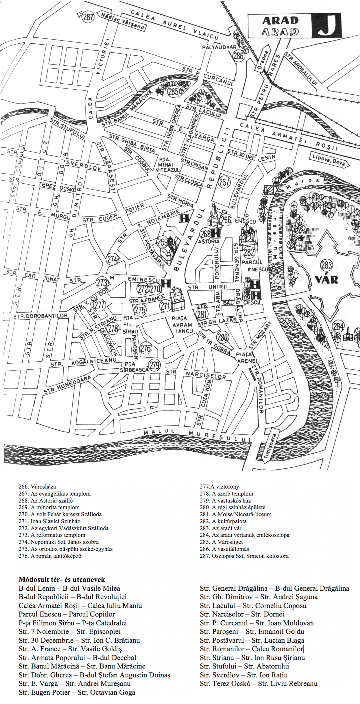
A zárt városi települést Gáj (gáj = tölgyerdő) külvárosnál érjük el, melynek szerb lakossága van.
A város Arad megye (județul Arad) székhelye, fontos vasúti és közúti csomópont. Lakossága több mint 159 000. Ipara jelentős, nagy múltú vagongyára, több textilüzeme, gép- és élelmiszeripara, bútor- és likőrgyára van.
Arad Erdély déli kapuja. A Maros vizén a legrégibb időktől kezdve tutajon szállították Erdély belsejéből a sót. fát, építőanyagokat. Azonkívül itt volt a hadi- és kereskedelmi utak átkelőhelye és a középkori sóraktár is. A város területén és környékén sok prehisztorikus bronzkori, kora vaskori, dák, római és népvándorlás kori lelet került elő. Az oklevelek a XI. század elején Orod (Urod) néven említik, mint várispánságot és megyeszékhelyet. 1131-ben II. Béla megalapította a Szent Márton-egyházat és a társas káptalant. Hiteles hely volt, akárcsak Nagyvárad. (1552-ig állt fenn, amikor a török veszély miatt irattárát Gyulafehérvárra menekítették.) A tatárjáráskor lakosságát kiirtották. A XVI. század közepén török uralom alá került és csak 1685-ben szabadult fel. 1699–1741-ig a város és környéke a Maros menti szerb határőrség székhelye volt. A mai „Nagy-Arad” területén több várépítményt ismerünk. Ó-Arad vára a városközpont déli részén az egykori „Óvártér” helyén állt. A városhoz csatolt Glogovác (Öthalom, most Tudor Vladimirescu) helyén volt az aradi prépostság ősi vára. 1763–83 között a Maros hajtűkanyarjában felépítették a ma is álló várat. 1832-ben Arad megkapta a szabad királyi város címet.
1849. február 8-án Glöser altábornagy osztrák katonákkal és szerb felkelőkkel Új-Arad felől betört a városba, de kiverték őket, s 1849. július 1-én a vár is megadta magát. Parancsnoka Damjanich tábornok lett. 1849. augusztus 2-án a kormány Aradra menekült, Kossuth a temesvári csatavesztés után Görgeyre ruházta a főhatalmat. Ugyanez év október 6-án végezték ki a forradalmi magyar sereg tizenhárom tábornokát, majd október 25-én Kazinczy Lajost.
Az 1867. évi kiegyezés után a város gyorsan kiépült, s az ipar fejlődésével párhuzamosan iskolavárossá is fejlődött.
Arad szülötte volt Tóth Árpád (1886–1928) költő, Kuncz Aladár író az Erdélyi Helikon szerkesztője, valamint Szentimrei Jenő (1899–1959). Sokáig itt élt, több művet alkotott Szántó György, a megvakult festőművész–író. Itt tanult Paál László festőművész, itt volt asztalosinas Munkácsy Mihály.
A város szülötte Pataky Sándor (1880–1964) festőművész is, a vértanúk vesztőhelyen maradt maradványainak egyik felfedezője.
Aradon működött a nagy múltú Kölcsey-egyesület, mely a 13 vértanú kultuszát, a megszűnt Ereklye-múzeumot vezette és ápolta. Utolsó nagy elnöke az egykori magyar gimnázium igazgatója, Fischer Aladár volt.
1945 után nagyarányú építkezések folytak, sok modern városnegyed épült, gyárak, üzemek egész városrészeket foglalnak el.
Revoluţiei sugárút 75. sz./Bulevardul Revoluţiei nr. 75
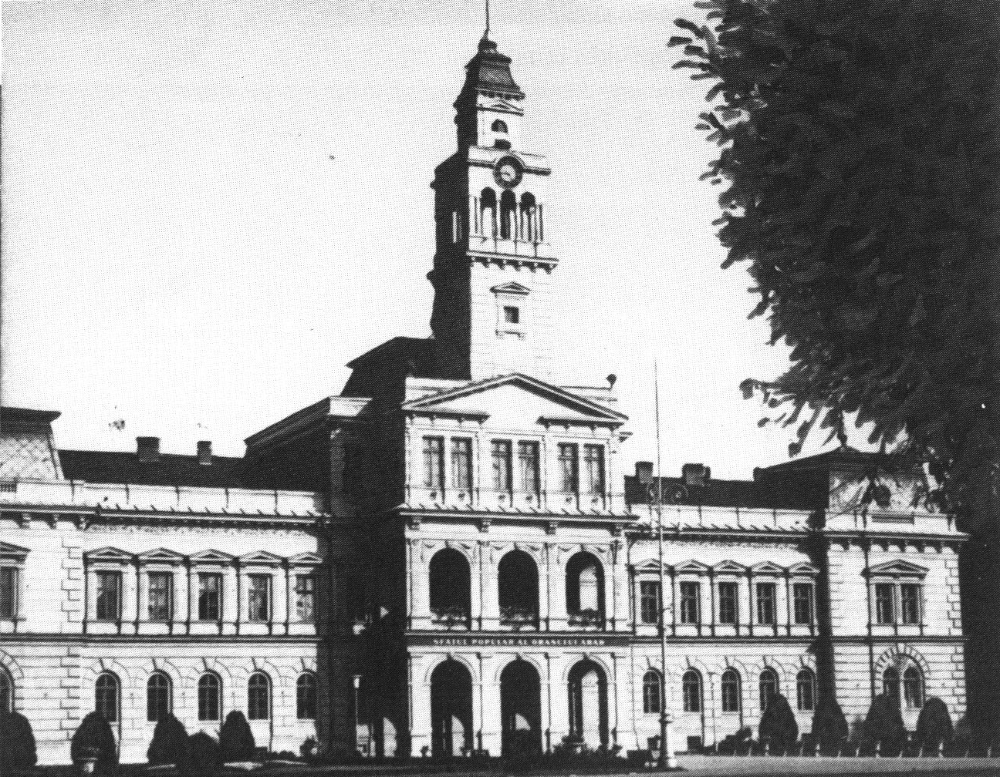
Városháza XIX. század végi neoreneszánsz, kétemeletes épület, közepén karcsú, magas, árkádos erkélyű óratoronnyal. Ez volt a hajdani Városháza. Eredeti tervét Lechner Ödön készítette, de sajnos módosítva, az épület arányát megbontva kivitelezték.
Bővebben lásd:
lexikon.adatbank.transindex.roRevoluţiei sugárút 61. sz./Bulevardul Revoluţiei nr. 61., a Városházától északra
Az evangélikus templom 1905–06-ban épült, Szántay Lajos tervei szerint, neogótikus stílusban. „Vöröstemplom”-nak is nevezik, mivel a téglagótikát utánozza. Egy karcsú tornya van. Színes üvegablakai igen szépek s oltárképét 1848-ban I. Umlauf festette. Orgonája kitűnő.
Bővebben lásd:
lexikon.adatbank.transindex.rojelenleg Continental Szálloda, Revoluţiei sugárút 79–81. sz./Bulevardul Revoluţiei nr. 79–81
Az Astoria-szálló modern toronyépület (1969). Az I. osztályú szállodában 295 férőhely van, azonkívül étterem és bár. Város fölé magasodó tetőteraszáról gyönyörű kilátás nyílik minden irányban.
Revoluţiei sugárút 96. sz./Bulevardul Revoluţiei nr. 96
A minorita templom beleépült a hajdani minorita rendházba. Egy régebbi barokk templom helyén emelték 1902 és 1909 között, klasszicista stílusban. Tervezője Tabaković Emil aradi építész.
Bejáratát hatalmas oszlopok fogják közre. Kör alakú előtere fölött kupola magasodik. Az előtér oldalkápolnája mellett az egykor szabadban álló obeliszk bronz Szentháromság-szobra és több emlékfelirat-tábla látható. A templom hajóját öt oszloppár, mennyezetét pedig freskó díszíti. 43 m hosszú, 17 m széles. A hajóban jobboldalt a régi barokk templom oltárképei láthatók, a főoltáron Szent Antal (erről írta Erdődi Sándor „Egy oltárkép előtt” című hangulatos versét) képe Vastagh György remekműve. Baloldalt a budapesti Bazilika Benczúr-festményének (Szent István) másodpéldánya van elhelyezve. A művészi üvegablakok az Árpádházi szenteket (István, László, Imre, Erzsébet) ábrázolják. A Szt. József és Szt. Ferenc barokk oltárképek a régi templomból származnak, Schieszler Ferenc XVII. századi művész alkotásai.
A volt Fehér kereszt Szálloda átalakítása során lebontották a szálló előtt állt, nagyméretű Szentháromság-szoborobeliszket. Bronz alakjait, Róna János alkotását a templom körelőcsarnokában igen szerencsésen helyezték el, így 2007-ben az obeliszk visszakerülhetett eredeti helyére.
Bővebben lásd:
lexikon.adatbank.transindex.rojelenleg Ardealul szálloda, Revoluţiei sugárút 98. sz./Bulevardul Revoluţiei nr. 98
A volt Fehér kereszt Szálloda 1841-ben épült empire-klasszicista stílusban.
Itt adott hangversenyt 1848-ban Liszt Ferenc, 1879-ben Johann Strauss, 1912-ben Pablo Casals. Ady Endre 1909-ben tartott itt előadást a „Holnap” matinéján.
Revoluţiei sugárút 103. sz./Bulevardul Revoluţiei nr. 103
Ioan Slavici Színház a főútvonalat dél felől lezáró, illetve kettéválasztó épület. 1872–74 között épült, s 1954–60 közt újjáépítették, mert többször is leégett. Román színház.
Nézőtere 660, kamaraszínház-terme pedig 270 néző befogadására alkalmas. Múzeumában sok érdekes tárgyat őriznek, pl. azt a zongorát is, amelyen Liszt Ferenc 1848. november 8-án és 10-én játszott, itteni hangversenye alkalmából. A színházmúzeum egész Erdély legnagyobb színházkultúrai gyűjteménye sok magyar vonatkozással.
A Színház mögötti Piața Avram Iancu (Avram Iancu tér) közepén áll A román katonák emlékműve, Gavril Covalschi alkotása. (Ennek helyén állt a hatalmas „13 vértanú” szoborcsoportozat, Zala György alkotása.)
Eminescu utca 1–3. sz./Str. Eminescu nr. 1-3
Az épületben volt régen a szálloda, s földszintjén a Vadászkürt-kávéház. A szállodában szállt meg aradi tartózkodása idején Ady Endre, a kávéház pedig Gheorghe Coșbuc román költőnek volt kedvelt helye.
az Eminescu és a Vârful cu dor utcák sarkán
A református templom egytornyú klasszicista építmény, utólagos neobarokk kiegészítésekkel. 1827–47 között épült. Belső berendezése (1852) puritán. Orgonája 1860-ból származik. Legutóbb 1936-ban restaurálták.
Desseanu utca/Str. Desseanu sarka
Nepomuki Szt. János szobra színezett, barokk kőszobor. 1729-ben állították fel, ismeretlen mester műve. Szt. János a hajósok és molnárok védőszentje volt. Hajdan a szent nevének napján kivilágított ünnepi felvonulást rendeztek vízijárművekkel a Maroson.
Katedrális tér 1. sz./Piaţa Catedralei nr. 1
Az ortodox püspöki székesegyház kéttornyú, impozáns neobarokk templom, melyet 1862–65 között építettek. Tervezője Czigler Antal építész. Falfestményeit Nicolae Alexici és Böhm festőművészek készítették 1905–06-ban. Az ikonosztáz Ianits Lazar műve.
Bővebben lásd:
lexikon.adatbank.transindex.roEmanoil Gojdu utca/Str. Emanoil Gojdu
A román tanítóképző, a város első román iskolája, 1812-ben létesült.
Papnevelde is volt egyúttal. Híres tanárai voltak Dimitrie Țichindeal (1776–1818), valamint Ion Rusu Șirianu (1864–1909), jeles erdélyi román publicista. Az intézet Sina báró alapítványa volt.
A Katedrális tértől nyugatra vezet a Csajkovszkij utca (Strada Ceaicovschi). Északon a Vârful cu dor utcába torkollik. Itt áll a Csíki Gergely Főgimnázium. A világháború után, amikor elvesztették a Királyi Főgimnáziumot, az aradi autonóm katolikus hitközség építette, az aradi magyarság egyetlen ilyen intézménye volt. Jeles tanárai a régi líceumból jöttek át.
Csajkovszkij utca/Str. Ceaicovschi
A látogató régi vártoronynak nézné a hatalmas, négy fiatornyos építményt, pedig csak 1896-ban épült.
Szerb tér/Piața Sârbească
A szerb templom helyén már 1698-ban állt egy régebbi templom. A jelenlegi barokk épület 1819-ben épült. A Szent Jánosról elnevezett, aránylag szerény templomnak díszes, szépen aranyozott barokk–empire tornya van.
Freskói az évszázados gyertyafüsttől sajnos tönkrementek. Ikonosztáza viszont igen szép. A templom közepén van az alapító Száva Tököly kriptája. A templomban régi szerb céhzászlókat, értékes kultusztárgyakat láthatunk. (A templom mellett lakó egyházfi kérésre kinyitja a templomot.)
Bővebben lásd:
lexikon.adatbank.transindex.roTribunul Dobra utca 7. sz./Str. Tribunul Dobra nr. 7
A vastuskós ház falában látható az a lakattal lezárt, szögekkel televert fatörzs, amely egyesek szerint a mesterré avatott kovácslegények emlékét őrzi, mások szerint viszont egy vaskereskedés cégére volt. A ház mindenesetre annak idején a kovács céh tulajdonában állott. Az 1848-as forradalom és szabadságharc leverése után itt működött a császári titkosszolgálat aradi parancsnoksága.
Gheorghe Lazăr utca 1–3. sz./Str. Gheorghe Lazăr nr. 1-3
A régi színház épülete 1817-ből származik. 1820-ban itt szerepelt Déryné. Pascaly társulata román előadásokkal vendégszerepelt. 1907-ben itt nyílt meg az első aradi mozi.
a várhíd előtt, a Maroshoz közel
A Moise Nicoară-líceum volt egykor a királyi főgimnázium, melynek alapkőletételénél (1872-ben) Eötvös József is jelen volt.
Az épületben született Kuncz Aladár (1886–1931), a „Fekete kolostor” írója. Édesapja volt ugyanis a főgimnázium igazgatója.
Északabbra, a Maros-parton terül el a Parcul Enescu (Enescu-park). Itt áll Gheorghe Coșbuc költő, Alexandru D. Xenopol történész, Ion Rușu-Șirianupolitikus, Mircea V. Stănescu publicista, Petru Pipos pedagógus és Gh. Popa de Teiuș szerkesztő mellszobra.
Enescu utca 1. sz./Str. Enescu nr. 1
A kultúrpalota a város legérdekesebb épülete. Szántay Lajos aradi műépítész tervezte. 1913-ban avatták fel. Főhomlokzata ekletikus modorú, neoreneszánsz és klasszicista elemekkel. A hátsó homlokzaton neoromán, neogótikus, neoreneszánsz és neobarokk részletek láthatók. Előcsarnoka márvánnyal van borítva.
Bővebben lásd:
lexikon.adatbank.transindex.roAz aradi vár a Maros hajtűkanyarában álló, sáncárokkal övezett, hatszögű erőd, amelyet sokszögű külső sánc vesz körül. A belső övezet Vauban-rendszerű, s alaprajza kb. 800 m átmérőjű, hatágú csillag, többszintes kazamatákkal. Hat kapuja és egy vártemploma is van. 1762 és 1783 között építették Philip Ferdinand Harsch tábornok tervei alapján.
A szabadságharc után a császáriak először le akarták rombolni az egész várost, de végül csak a vár kilövőterében álló épületeket bontották le.
A vár ma is katonai objektum, bemenni nem lehet, környékén fényképezni tilos!
Bővebben lásd:
lexikon.adatbank.transindex.roa vártól délre, a külső sáncon kívül
Az aradi vértanúk emlékoszlopa, az ún. Vesztőhely a hídról jobb kéz felé haladva, egy kis halom tetején áll. A szerény emlékművet 1881. október 6-án állították fel. (Nem tévesztendő össze az egykori nagy „Tizenhárom Vértanú” vagy Szabadság-szoborral, melyet a Szabadság téren, a Színház mögött 1890. október 6-án lepleztek le, majd 1925-ben lebontottak, végül 2004-ben az aradi vár árkából átkerült a Tűzoltó térre, a Megbékélés Parkba – Parcul Reconcilierii)
A háromméteres kőgúlára 14 lépcső vezet fel, ezen áll a három méter magas, szürke kőobeliszk.
Környéke sajnos méltatlan a 11 vértanúnak az alapzatba elhelyezett maradványaihoz.
A betonkripta felett fehér márványlapon magyar és román nyelvű felirat van. Az obeliszken a feljárattal szemben emlékszöveg olvasható: „1849. október 6. Az aradi tizenhárom vértanú kivégeztetésének megörökítésére emeltetett 1881. október hatodikán.” Az obeliszk három oldalán a vértanúk nevét sorolták fel. A 13 tábornok közül Dessewffy Arisztidet, Kiss Ernőt, Lázár Vilmost és Schweidel Józsefet a vár sáncában agyonlőtték. Az itteni emlékmű közelében akasztották fel Aulich Lajost, Damjanich Jánost, Knezich Károlyt, Lahner Györgyöt, Leiningen Károlyt, Nagy-Sándor Józsefet, Pöltenberg Ernőt, Török Ignácot és Vécsey Károlyt.
1974. október 6-án, a 13 tábornok kivégzésének 125. évfordulóján az emlékoszlopot felújították, és tizenegynek a hamvait is itt helyezték el. (Kiss Ernő a jugoszláviai Németellemér, Dessewffy Arisztid pedig a csehszlovákiai Margonya községben nyugszik továbbra is.)
Bővebben lásd:
lexikon.adatbank.transindex.roa Revoluţiei sugárút végétől nyugatra, a Holt-Maros mellett
A Városliget egykor az Orczy család parkja volt, melyet a városnak adtak át.
Aurel Vlaicu út 2–4. sz./ Calea Aurel Vlaicu nr. 2-4
A vasútállomás 1858-ban épült, de a második világháború után újjá kellett építeni. Az állomás a dél-erdélyi vasútvonal egyik nagy csomópontja.
A vidéki autóbuszjáratok pályaudvara a vasútállomástól nyugatra, a Calea 6 Vânători és Calea Aurel Vlaicu sarkán van, a vagongyárral szemben.
Az Aurel Vlaicu út vezet a Gáj városrészben, kissé távolabb fekvő, de jelentős látnivaló felé.
A futballista szobra, az UTA sporttelep után jobbra van a Felső temető. Itt kaptak díszsírhelyet Vasilia Goldis és Pop Ciceu politikusok, akik a gyulafehérvári nemzetgyűlést előkészítették és Nagyrománia „kovácsai” voltak. A helybeli magyarság sok kitűnősége nyugszik ebben a temetőben: Barabás Béla, Lakatos Ottó történész (a 13 aradi vértanú gyóntatója), Tabajdi Kálmán főispán, sok kiváló, nagyérdemű és nagy múltú történelmi család kriptája, orvos, művész, tanár sírja említhető meg.
Odább új lakótelep épült, s nemrég melegvizes fürdő létesült.
Duna utca 170. sz./Str. Dunării nr. 170
Oszlopos Szt. Simeon kolostorát Sinesie Zsivanovics szerb egyházfő alapította. 1760– 62 között épült, barokk stílusban.
Igen szép az udvarházra emlékeztető kolostorban berendezett egyházi múzeum. Gyönyörű ikonok, festmények, ötvöstárgyak és régi nyomtatványok láthatók termeiben. A templomban kapott helyet a régi székesegyház lebontása óta az ortodox püspökök kriptája.
Bővebben lásd:
lexikon.adatbank.transindex.roBodrogközség 547211/Călugăreni 547211
A Hódos–Bodrog-kolostor egykor a Hódos nemzetség birtoka volt, melynek 1177 óta ismerték Szent Péterről elnevezett katolikus kolostorát. Mintegy százéves fennállás után, 1278 és 1298 között teljesen elpusztult. Helyén létesült a mostani görögkeleti kolostor.
A XVIII. században átépített kolostort belül XVII. századi freskók díszítik. Az itt őrzött tárgyak közül igen értékes a XVI. századi fémkeretes fakereszt, egy XVI. századi pohár, kehely, biblia. Igen értékes ószláv kéziratai is vannak. Sokszor találtak itt menedéket a Moldvából menekült ortodox papok.
Világos/Șiria
A világosi vár romja a község fölötti hegyen van. A várat a XV. század első felében már említették. 1458-ban Mátyás király ide záratta nagybátyját, a pártütő Szilágyi Mihályt. A hagyomány szerint Szilágyi Mihályt szakácsa, Lábatlan Gergely csellel szabadította meg. Később a király kibékült nagybátyjával. A várat az osztrák katonai hatóságok semmisítették meg, hogy a lázadóknak ne adjon tanyát.
Bővebben lásd:
WikipédiaRegimentul 85 Infanterie 162. sz.
A volt Bohus-kastélyban írta alá Görgey a kapitulációt. (Az asztal az aradi múzeum tulajdonában van, emléktáblája a gyászos aktust örökíti meg.) A kastélyt Slavici-emlékháznak rendezték be Ioan Slavici (1848–1925) román író, publicista tiszteletére. Slavici Világoson született.
Bővebben lásd:
www.muemlekem.huA csálai erdő a város nyugati szélén, a Maros mentén Pécskáig húzódó tölgyerdő. Az aradiak kedvelt kirándulóhelye. Itt van a Hármassziget. A Fejsze utca (Str. Dorobanților) végig a repülőtér felé, 1 km-re a várostól a makadámút átvezet az erdő északi szélét határoló kis töltésen. Ezután az erdőn keresztül a Maroshoz érünk, s itt hajóhíd vezet át a szigetre, ahol romantikus környezetben üdülők vannak. A Marosban való fürdésnél óvatosak legyünk!
Bodrogközség (Călugăreni) régebbi román neve Bodrogul volt. Újaradon keresztül, Zádorlak irányában közelíthető meg híres kolostora, Aradtól kb. 12 km-re.
Arad-Hegyalja (Podgoria Aradului) a várostól kelet felé 26 km-re síkságból hirtelen kiemelkedő borvidék neve. E hegyvidék főgerince a Marossal párhuzamos, legmagasabb csúcsa a Hegyes (Highiș, 800 m).
Aradról az 1906-ban épített, 57 km hosszú villamosvasúttal is megközelíthető, mely Gyoroknál két ágra válik, s észak felé Pankotáig, délen Máriaradnáig vezet. Fontosabb helységei: Ménes (Miniş) 1876-ban alapított szőlészeti iskolával, Gyorok (Ghioroc) katolikus, református és ortodox templomokkal, a villamosvasút elágazási helye. Itt telepítették le az első világháború előtt a bukovinai csángók egy részét.
Kovászi (Covăsint) faluban egy Árpád-kori torony romja látható. Világos (Șiria) a legnagyobb település, 5000 lakosa van. 1849. augusztus 13-án Világos mellett, a szőlősi síkon tette le a fegyvert a magyar forradalmi hadsereg. A helység központjában, a forrás feletti parkban áll Bohusné Szőgyéni Antóniának (1803–1890), a nőnevelés egyik úttörőjének és az irodalom támogatójának, a világosi fegyverletétel krónikásának bronzszobra. A községben született Ion Rusu Șirianu (1864–1909) politikus.
Pankota (Pâncota) város Világostól északra fekszik, ez a villamosvasút vonalának végállomása. Majdnem 5500 lakosa van, hajlítottbútorgyára régi híres üzem. Itt volt a középkorban a bulcsi apátság, Mátyás király kedvenc vadásztanyája. Pankotán született Csiky Gergely (1842–91) drámaíró. A városban áll a Sulkowsky hercegek 1817-ból származó kastélya. Hajdan vára is volt, de a török időkben elpusztult.
Pankotától délkelet felé az Aranyági-völgyben volt az újabban úttörőtábornak használt, egykor Kaszója (Căsoaia) – menedékház. Innen szép kirándulásokat tehetünk a Hegyes-csúcsra és az egész hegyvidékre.
Revoluţiei sugárút, 81. sz., Arad, Tel: 0357 731.296
www.cniptarad.ro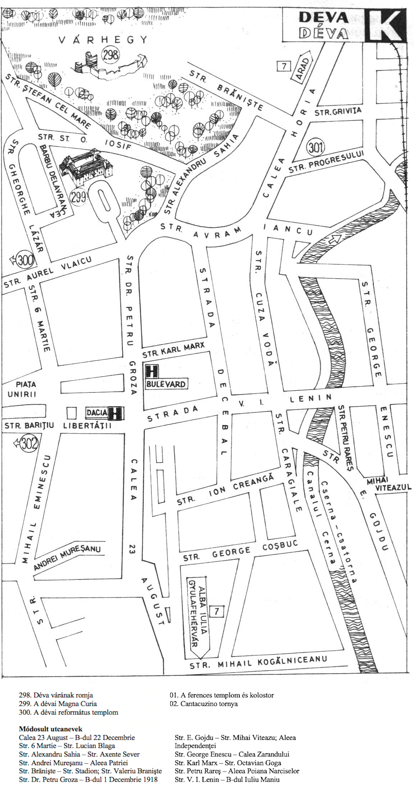
Aradot a Iuliu Maniu út vonalán hagyjuk el, és az E68-as úton megyünk kelet felé. Kezdetben sík vidéken halad az út, majd beérünk a hegyek közé, a Maros alsó szorosába. (Marosillyéig a víz jobb partján vezet az út, ott átkelünk a bal partra.)
Öthalom (Vladimirescu, régen: Glogovác) az ősi Orod helye. Lakosságát a török időkben kiirtották, s a várost lerombolták. 1700-ban szerbeket telepítettek ide, akik később a katolizálás miatt kivándoroltak. Helyükre 1724-ben svábok jöttek. Az úttól balra látható öt halom népvándorláskori emlék. A neogótikus katolikus templom 1887-ben épült. Mögötte látható az orodi ősi apátság romja, egy nagyméretű román bazilika alapja: 50 lépés hosszú, 30 lépés széles.
Szabadhely (Sâmbăteni) község helyén 1138-ban már szombati vásárairól híres település állt. A török időkben kihalt, s lakosságát a XVIII. században telepítették ide. A falu után 2 km-re a római limes metszi az utat. Ez három párhuzamos észak–dél irányú sáncöv (románul: „Valul lui Traian”), 2–10 m magas töltésekkel, köztük sánccal, kb. az i. sz. I. évszázadból való. Az országút mellett áll a román hősi emlékmű. A bronz szobros, hatalmas beton emlékművet 1974-ben állították fel a második világháború pálos-hegyi harcának emlékére.
Pálos (Păuliș) nevét 1333-ból ismerjük. Lakossága a török időkben kipusztult. Az ősi település neve „Pál ülése” volt.
Kladova (Cladova, a régi oklevelekben Kalodva) a műút melletti völgytorok felett fekszik. Az aradiak kedvelt kirándulóhelye. Hajdan vára és kolostora is volt.
Máriaradna (Radna) az arad-hegyaljai villamosvasút déli szárnyának végállomása. A Maros mellett fekszik, éppen szemben Lippával. Közigazgatásilag hozzá is tartozik.
Lippa (Lipova) városba Radnáról a Maros hídján át jutunk. A Maros déli partján egykor Erdély kulcsvára volt. A környék központja, lakossága több mint 7000.
A XIV. században lendült fel, amikor Róbert Károly alatt az udvar több ízben itt-tartózkodott. 1325-ben Károly megalapította a ferences kolostort. A pápai tizedjegyzék szerint akkoriban Lippa Arad megye legnagyobb városa volt. 1551-ben a török foglalta el. Várát a karlócai békeszerződés értelmében lerombolták.
A Republicii téren látható az egykori török bazár árkádos épülete. A Nicolae Bălcescu utcában van a városi múzeum, amelynek régészeti és néprajzi gyűjteménye van.
Az E68-as úton továbbmenve kelet felé, a következő helység Solymosvár (Șoimoș) szintén Lippához tartozik. Ortodox temploma az Ágoston-rendi szerzetesek 1278-ban épült templomának helyén áll.
Az út a Maros mellé szorul és sok hajtűkanyar, korlát követi egymást. (Óvatosan kell vezetni egészen Déváig.)
Odvas (Odvoș), majd Konop (Conop) klasszicista kastélyait érdemes megnézni. Innen lehet felmenni a Debella-Gorai menedékházhoz, mely igen szép környezetben áll.
Berzova (Bârzava) fakitermelési központ. Paál László festő itt töltötte fiatalkorát. „Falusi ház” című képe (1869) berzovai házat örökít meg.
Tótvárad (Vărădia) régi híres mezőváros. Várát a XIV. században már említették. 1709 után romba dőlt; alapfalai a község feletti meredek sziklás tetőn láthatók.
Soborsin (Săvârșin) erdőkitermelési központ. Ortodox temploma barokk stílusú. Kastélyát a XVIII. században Forray András építtette, szép a díszkertje.
Iltő (Ilteu) XVIII. századból származó, többször átépített kastélyát érdemes megnézni.
Zám (Zam) a Maros-völgy újabb szűkületében fekszik. Egykor a tutajozás központja volt. Már Hunyad megye (județul Hunedoara) területén van. Hajdan a Nopcsa család fészke volt, melynek egyik tagja – a legendák szerint – a hírhedt Fația Neagra haramiavezér, egy Hunyad megye főispánja volt. (Róla szól Jókai „Szegény gazdagok” című regénye.) Zámban született Paál László (1846–79) festőművész.
Guraszáda (Gurasada) község nevét már a XIII. században említik az oklevelek.
Marosillye (Ilia) az erdélyi fejedelemség idején a Maros vidékének fontos vára volt. Báthori István 1576-ban kedvenc hívének, Bethlen Farkasnak adta, kinek fia, Gábor a későbbi nagy fejedelem, itt született (1580). A várkastély reneszánsz, többször átépített épületén feliratos kő emlékezik meg Bethlen Gáborról. Az épület a jelenlegi kórház része, amelybe a kastély beleépült.
Délre Lugos felé van elágazás. A régi út innen a Maros északi partján megy tovább, az újabb áttér a déli partra.
A Maros déli partján Szakamás (Săcămaş), majd Lesnyek (Leșnic) következik színes házaival. Lesnyek ősi lakott hely, egykor postakocsi-állomás volt. Központjában egy történelem előtti települést tártak fel.
Tovább menve a főúton, a délebbre fekvő Vecel (Vețel) község jelzőtáblájánál az út és a vasútvonal átvágja a hajdani Micia római telep helyét, amelynek köveit a környező kastélyok építéséhez hordták szét. Ez volt Dacia egyik legnagyobb települése, vámállomás és erődítmény is egyben.
Marosnémeti (Mintia) az úttól balra fekszik, s hajdan I. Rákóczi György kapitányának, Gyulay Ferencnek birtoka volt. Nagy hőerőmű épült itt.
Déva (Deva) Hunyad megye (județul Hunedoara) székhelye, a vidék gazdasági és közlekedési központja, az Érchegység és Pojána-Ruszka között 187 m magasságban fekszik. Lakossága meghaladja a 61 000 főt. Jelentős élelmiszer- és fémipara van.
A mai Déva környéke a neolit kortól kezdve úgyszólván állandóan lakott hely volt. Középkori szerepét főleg várának köszönhette. Itt születet Dévai Bíró Mátyás (1500–1545) református prédikátor. Sándor András, a város prédikátora lett Erdély első református püspöke a XVI. század második felében. 1602-ben Basta itt tartotta azt az országgyűlést, amelyen az erdélyi nemességet arra kötelezte, hogy vagyona egynegyedével váltsa meg életét. A XIX. század második felében indult meg a városban az építkezés, ebből az időből valók a nagyobb középületek és iskolák.
Déva a környékbeli románság kultúrközpontja is. 1933 és 1944 között itt élt dr. Petru Groza (1884–1958), haladó szellemű román politikus, a román–magyar barátság híve. 1933-ban itt alapította meg a „Frontul plugarilor” (Ekés front) nevű baloldali demokratikus pártot. 1945-ben miniszterelnök, 1952-től haláláig pedig államelnök lett.
A Maros túlsó partján, egy nagy hegykúp tetején láthatók a Hunyadi által építtetett Aranyivár romjai (Uroi). A romokon kívül őskori erődítés nyoma is felfedezhető.
Avram Iancu tér 1. sz, 315401 Lippa/Piaţa Avram Iancu nr. 1, 315401 Lipova
Amikor a törökök 1552-ben Lippát elfoglalták, az ottani ferences barátok idemenekülve egy kis fakápolnát építettek. A mai templom 1756 és 1760 között épült, a kolostorral egyidőben. Kéttornyú barokk alkotás, régi híres búcsújáró hely. A főoltár XVII. századi kegyképe Romandini de Bassano műhelyéből került ki.
Bővebben lásd:
www.mariaradna.comMájus 9. utca 1–2. sz./Str. 9 Mai nr. 1-2
A lippai ortodox templom előépítménye a XIV. században épült. A törökök idején mecsetté alakították, majd ismét visszakapta eredeti rendeltetését.
Értékes síremlékek és régi freskómaradványok láthatók benne. A különféle rétegekből feltárt freskórészletek közt Nedelcu alkotásait is megtaláljuk. A templomban régi céhzászlók láthatók és egy kis múzeumot is berendeztek benne.
Lippa, Solymos/Lipova, Șoimoș
A várat a XIII. században a fenyegető újabb tatár támadás ellen építették. Róbert Károly idején királyi vár volt. 1446-ban Hunyadi szépen kiépíttette. 1514-ben Dózsa serege átmenetileg elfoglalta. 1552-ben a törökök kezére került. 1688-ban Caraffa hosszú ostrom Az út a Maros mellé szorul és sok hajtűkanyar, kőkorlát követi egymást (Óvatosan kell vezetni egészen Déváig.)
Bővebben lásd:
lexikon.adatbank.transindex.roGuraszáda/Gurasada
A guraszádi templom 1300 táján épült. A sok renoválás ellenére is szép, arányos építmény. Alaprajza négykaréjos, nyugati része későbbi toldás. Az újabb festés alatt feltehetően középkori freskók vannak. Harangját 1668-ban készítették Brassóban. A helybeli magyarság kihalása óta ortodox templom. Temetőjében ősi tölgyfa kereszt látható. Említésre méltó különlegesség a környékbeli bambuszültetvény.
Bővebben lásd:
www.muemlekem.huBranyicska/Brănișca
A branyicskai kastély eredetileg Fráter (Martinuzzi) Györgyé volt. Petrovics Péter leromboltatta, de a XVI. században már fel is épült ismét. 1595-ben lett Jósika Istváné. 1784-ben felgyújtották, ezért újjá kellett építeni, csak egy hatszögű bástyája maradt meg. Sokat tartózkodott itt Jósika Miklós (1794–1865) regényíró.
A kastély parkjában római faragott kövek láthatók Sarmisegetuzából, illetve a közeli római telepről, Miciából.
George Coşbuc utca 175. sz./Str. George Coşbuc nr. 175
A lesnyeki ortodox templomot a XIV. század végén építtette a Lesnyeki kenéz család, akik Zsigmond királytól kapták meg adományként a falut. Belsejében értékes bizánci jellegű, XIV. és XVIII. századifreskók vannak. A régi freskókon ószláv nyelvű feliratok láthatók.
Corvin Mátyás utca 34. sz./Str. Matei Corvin nr. 34
A marosnémeti kastély helyén állott egykor Gyulay Ferenc 1642-ben épült régi kastélya. A mostani klasszicista, emeletes épületet Gyulay Lajos emeltette 1830 táján, Stuller építész tervei szerint. Ez Erdély legnagyobb méretű klasszicista kastélya.
Itt élt Kuun Géza (1838–1905) orientalista tudós, a Magyar Néprajzi Társaság elnöke, a Magyar Tudományos Akadémia másodelnöke.
Bővebben lásd:
www.muemlekem.huA Vár-hegyre több szerpentinút vezet fel. (Térképük a várparkban látható!) A 371 m magas, sziklás, erdős Vár-hegy természetvédelmi terület. Sok ritka növény és állat él itt. Egy óra alatt megmászható. Fentről gyönyörű a kilátás az Erdélyi-Érchegységre, a városra és az egész környékre.
A vár helyén hajdan dák, illetve római erősség volt. A XIII. század elején épült királyi vár egyike volt az elsőknek. A tatárok felégették, IV. Béla azonban újjáépíttette. 1307-ben itt tartotta fogságban Kán László vaida Ottó királyt, miután elvette tőle a koronát. V. László a várat 56 faluval együtt Hunyadi Jánosnak adományozta. Mátyás korában Szilágyi Mihályé lett. 1687-ben császári hadak szállták meg. 1717 és 1719 között Steinville gróf is erősítette. A Horia-felkelés ügyében itt ítélkezett a császári bizottság. 1800 után a katonaság elhagyta. 1817-ben még helyreállították. 1849-ben a honvédek kezébe került, de hamarosan romba döntötte egy hatalmas lőporrobbanás.
A várban raboskodott a vallásalapító Dávid Ferenc (1510–1579), Erdély első unitárius püspöke. Itt is halt meg. Cellája helyét emléktábla jelzi.
A vár építéséhez fűződik a „Kőműves Kelemen” népballada története.
A vár XV. századi kaputornyai és palotájának egy része még megvan.
Bővebben lásd:
lexikon.adatbank.transindex.ro1918. december 1. sugárút 39. sz/Bulevardul 1 Decembrie 1918 nr. 39
A dévai Magna Curia, Bethlen Gábor fejedelmi kastélya négy sarokbástyás, reneszánsz építmény, barokk kiegészítésekkel. 1621-ben egy XVI. századi épület átalakítása és bővítése révén készült. 1632-ben itt lakott férjével, Bethlen Istvánnal Széchy Mária, a Murányi Vénusz, akinek alakját több költőnk is megénekelte.
Az épület északi oldalán van a remek kőlépcső, déli homlokzatán reneszánsz ablakkeretek láthatók, a bejárat felett balkon, nagytermében pedig színes, címeres kőkandalló. A barokk részek Haller János és neje, Daniel Zsófia idejéből valók.
A Magna Curia ma az 1882-ben alapított múzeum otthona. 30 termében dák és római leleteket, történelmi és természettudományi anyagot láthatunk. 23 000 történelmi és 30 000 természettudományi darabja van.
A Magna Curiával szomszédos Várkert (Parcul Cetătii) szélén álló Decebal-szobrot I. Moga készítette.
Bővebben lásd:
lexikon.adatbank.transindex.roEgyesülés tér 7. sz./Piaţa Unirii nr. 7
A dévai református templom elődje a XIII. században épült. A XV. század végén gótikus szentéllyel bővítették. 1545 óta a reformátusok birtokában van. Századunk elején a régi épületet lebontották, s újat emeltek.
Bővebben lásd:
lexikon.adatbank.transindex.roHaladás utca 6. sz./Str. Progresului nr. 6.
A ferences templom és kolostor Déva északkeleti részében áll. XVIII. századi barokk építmény, azóta azonban többször is átalakították.
Călugăreni utca 21. sz./Str. Călugăreni 21
Cantacuzino tornya a dévai temetőben áll. Cantacuzino olténiai bán ortodox templomot építtetett ide, ennek azonban csak a tornya maradt fenn.
Lippafüred (Băile Lipova) 3 km-re van a város központjától, szép erdős környezetben fekvő fürdő. Gyógyforrásának vizét palackozzák. Emésztő- és mozgásszervi zavarokat, női bajokat és vérkeringési betegségeket gyógyít. Van nyitott strandja, hideg-meleg fürdője.
Marosillyén elágazik az út. A a Maros északi partján haladó régi útvonalon érjük el Branyicska (Branișca) falut a XVI. században Báthori Zsigmond Jósika István kancellárnak adományozta.
Déván ellátogathatunk még a városhoz tartozó Bezsán-erdőbe (Pădurea Bejan), amely különleges tölgyváltozatairól ismert természetvédelmi terület.
A Simonkai Lajos (1851–1910), az egyik leghíresebb magyar botanikus által felfedezett tölgyalakok az ő neve alatt kerültek be a botanikai irodalomba. Fő műve: „Erdély flórája”, melyet az aradi főgimnáziumban eltöltött 10 éves tanársága alatt írt meg, s mely a mai napig a legnagyobb ilyen erdélyi szakkönyv.
V. Bugariu u., 6. sz., Lippa, Tel. 0257 561 008
www.turismlipova.roStadion u., Déva, Tel. 0254 220 288
Dévát Szántóhalma (Sântuholm) külvároson át hagyjuk el, és a 687. számú úton megyünk dél felé. Vajdahunyad után az E79-es úton folytatjuk utazásunkat Hátszegig. Innen kirándulunk Petrozsény felé, majd Karánsebesnek vesszük az utat.
Dévától az Egregy- vagy Cserna-patak mellett haladunk több apró falun át.
Vajdahunyad (Hunedoara) város a Cserna (Egregy) és a Zalasd vizének egyesülésénél, a Pojána-Ruszka lábánál, 270 m magasan fekszik. Az utóbbi időben modern gyárvárossá növekedett s lakossága több mint 57 000. A román vas- és acélkohászat központja. Története szorosan összefügg a váréval.
A város református templomát 1500 körül építették késői gótikus stílusban. Hajdani Ferenc-rendi kolostorában egy helyi krónika íródott a környék eseményeiről.
Vajdahunyadról nem dél, hanem kelet felé megyünk tovább, s 10 km után Kiskalán (Călan) várostól délre elérjük az E79 számú utat. Kiskalán kohászati üzeméről híres. Gyógyfürdője közelében tártak fel egy római fürdőtelepet. Ugyanezen a helyen egy keresztény telep is volt a IV–VI. században.
Hátszeg (Hațeg) város a Sztrigy(Streiu)-folyó mentén a Hátszegi-medencében fekszik. Fakitermelési központ, van konzervgyára és húsipari kombinátja. Lakosainak száma több mint 8600.
A vidék Traianus császár légióinak útvonala, a dákok ellenállásának helye, egykor székely gyepűőrök területe és a török hadak felvonulási terepe volt. Ispánjának nevét 1276-ban említi először egy oklevél. A helység a román kenézek egyik központja volt. [A román pásztorok ősi települése, a cătun (szállás), néhány szövetséges család lakhelye volt. Ezt a kenéz vezette.] A Kendeffyek Mátyás királytól 1463-ban Hátszeget mint várost kapták meg, mivel a királyi oklevél azt „Oppidum nostrum Haczeg”-nek nevezi.
Hátszegtől a 68. számú úton megyünk tovább délnyugat, majd nyugat felé.
Várhely (Sarmisegetuza) a rómaiak Ulpia Traiana nevű dáciai fővárosa volt. (105-ig volt a dákok fővárosa.) A dák állam a római hódítás (105–106) előtti évtizedekben fejlett kultúrájú, jelentős birodalom volt. Régebbi román neve Grădiște. A szó a szláv nyelvből ered és a magyar Várhelynek felel meg.
Várhelytől 10 km-re elérjük a Vaskapu-hágót (Pasul Poarta de Fier), amely ősidők óta a népek országútja volt. A dákok és a rómaiak két nagy ütközetet is vívtak itt (i. sz. 89-ben és 101-ben). A rómaiak a hágót Tapae-nak nevezték. Itt törtek be a törökök 1420-ban. 1438-ban s 1442-ben Hunyadi János 80 000 törököt semmisített meg a hágó környékén. Zejkány (Zeicani) mellett látható Hunyadi győzelmének emlékműve, egy óriási vasbuzogány.
Szörénybalázsd (Voislova) helyén a rómaiak idején a Pons Augusti nevű telep volt.
Nándorhegy (Oțelul Roșu) nagy acél- és lemezművéről híres város. A Pojána-Ruszka és a Szárkő (Țarcu) alatt fekszik, jó kiindulópont megmászásukhoz.
Bisztranyiresen (Obreja) és Jászon (Iaz) át beérünk Karánsebesre. A várost a IV. utazás során ismertettük.
Curtea Corvineştilor 1–3. sz., Vajdahunyad/Hunedoara
Vajdahunyad vára a Zalasd (Zlaști) vize mellett, egy szirtfokon áll. Egyetlen bejáratához most fahíd vezet, régebben felvonóhídja volt. Nincs és nem is volt védőövezete, tulajdonképpen megerősített, díszes palota.
A Hunyadiak őse, Sorb kenéz a XIV. században királyi adományként kapta a várat. Fiát, Vojkot (Vajk) a királyi udvar katonáját, Zsigmond 1409-ben megerősítette birtokában. Vajk fia, János (Hunyadi János), építtette ki a várat, utána pedig özvegye, Szilágyi Erzsébet. Mátyástól Korvin János kapta ajándékba. A XVI–XVII. században többen is birtokolták, végül a kincstáré lett. Többször le is égett. 1870 és 1880 között Steindl Imre és Schulek Frigyes építészek restaurálták és ezt 1907–13 között a Möller-féle restaurálás követte.
A várkastély két szárnya – Hunyadi János és Szilágyi Erzsébet idejében – egységes terv szerint épült. A homlokzatot hatalmas pillérekre kiszögellő, zárt erkélyek díszítik. Ezek mögött folyosó vezet a túlsó sarok öreg tornyába.
A középkoriasabb, erődítmény jellegű szárny tornyai, bástyái inkább a védelmet, mint a külső díszítést szolgálták.
A kapun belépve a szabálytalan ötszög alakú várudvarba érünk.
Jobbra egyszerű ajtó vezet a Hunyadi János által építtetett szárny földszintjén levő gótikus lovagterembe (1452). Ezt öt nyolcszög alakú vörösmárvány pillér két hajóra és hat szakaszra osztja. A pillérek lábazata, lombdíszű fejezete, a boltozat bordái és a zárókövek kemény mészkőből vannak. Az egyik pillérfőn látható az építtettő Hunyadi János nevét tartalmazó latin felirat. Az ablakmélyedésekhez lépcsők vezetnek s a fülkék padjairól kitekinthetünk az ablakokon, ahonnan valaha szép kilátás nyílt az erdős környékre.
Igen szép a vár északkeleti részében levő gótikus várkápolna. A Szilágyi Erzsébet által építtetett Mátyás-loggia falain világi tárgyú – talán Hunyadi János származására utaló – falképek voltak. A XVII. században Bethlen Gábor a déli épületszárnyra két, az északira egy emeletet húzatott. A várban szerény történeti kiállítás látható.
Bővebben lásd:
lexikon.adatbank.transindex.roEgyesülés tere/Piaţa Unirii
A vajdahunyadi ortodox templom 1458-ban épült Mátyás király kiváltságokat biztosító engedélyével. Igen értékes régi okmányai vannak.
Sztrigyszentgyörgy 230. sz./Streisângeorgiu nr. 230
A sztrigyszentgyörgyi templom a XIII. században épült. Szentélye XVIII. századi toldás. A rövid hajó nyugati végén kis harangtornya van, s ennek keleti oldalán egy felirat megörökíti az építtető, Lackó ispán nevét. A templom eredeti belső freskóinak felirata XV. századi kegyuraságok emlékét őrzi. A templom 1809-ig a református egyházé volt, azóta ortodox.
A zeykfalvi templom a XIII. században épült, román stílusban. Román ikerablakos tornya kősisakos, s mind a templom, mind a torony falába a kiskaláni római telep sok kövét rakták be. Eredeti belső freskói igen értékesek. A közelmúltban történt helyreállítása mintaszerű.
Felsőszilvás/Silvașu de Sus 337118
A priszlopi kolostor XIV. századi eredetű. Mircea cel Bătrân havasalföldi fejedelem hozzájárulásával épített ortodox kolostor. Nicodim nevű apátjának neve 1398-ból maradt fenn. A kolostor egy része romos állapotban van, más részét restaurálták.
Őraljaboldogfalva, Sântămăria Orlea 337440
A református templom a XIII. század második felében épült, román stílusban. Donátora a Kendeffy család volt. Tornyának román stílusú ikerablakai vannak, hajója egyszerű. Bizánci jellegű freskói 1311-ben keletkeztek. A templomot kőfal övezi. Igen értékes, megtekintésre méltó műemlék.
Demsus/Demsuș 337205
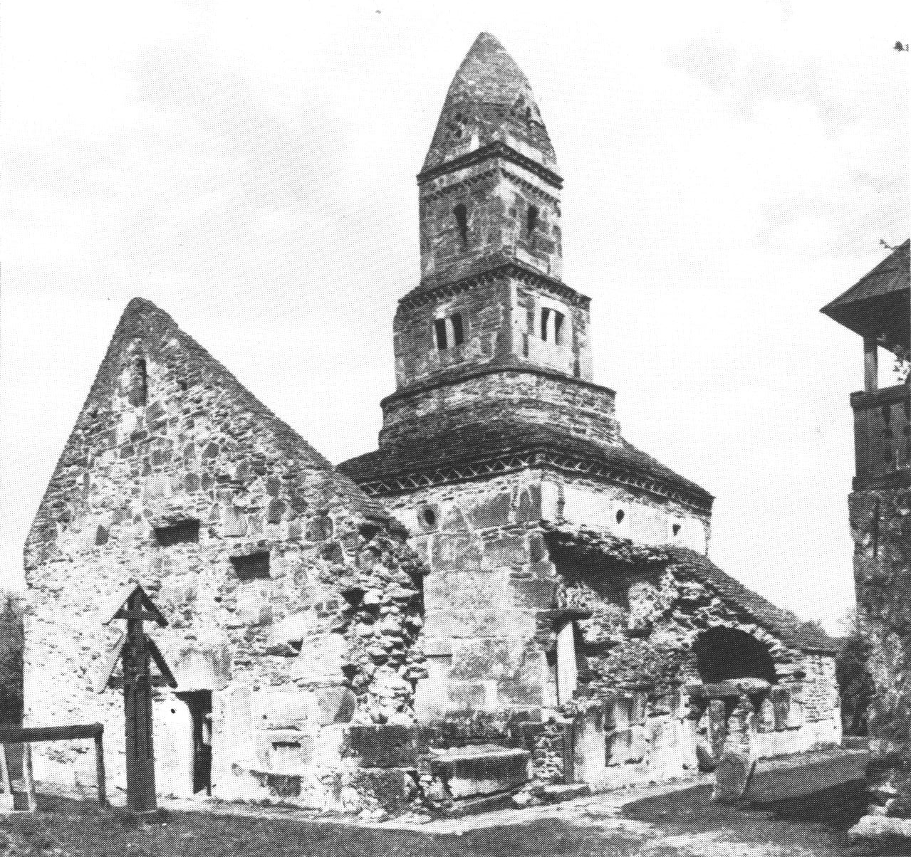
A demsusi Szent Miklós ortodox templom a XIII. században épült román stílusban. Az építkezéshez római köveket, téglákat, faragványokat bőven felhasználtak. A templom a bizánci kilenc osztású belső térkialakítás rendszerében épült. A négy középtornyot tartó pillér római sírkövekből készült. Ezt a XV. században átépítették. Belsejében XV. századi freskók láthatók.
Bővebben lásd:
WikipédiaVárhely/Sarmizegetusa 337415
A város teljes neve Colonia Ulpia Traiana Augusta Dacica volt, melyhez később hozzátették a Decebal-féle egykori főváros, Sarmisegetuza nevét is.
A várost Traianus császár i. sz. 108–110 között alapította, mintegy pótlandó az egykori fővárost. Magas fallal övezett település volt. 32,4 hektár területen, a négyzet alakú falrendszer minden oldalán kapuval. 279 után a város elnéptelenedett, földrengés pusztította, s rommezővé vált. Köveit házépítéshez és a környező kastélyokhoz hordták el, templomokba építették be. Az ásatásokat a Hunyadmegyei Történelmi Társulat kezdte el; 1918 után a román állam nagy áldozatokkal folytatta.
A városban volt az Augustáliák palotája, ettől dél felé 200 m-re a fórum. Ezenkívül fürdők, templomok, szentélyek, köz- és magánépületek nyomai láthatók. A falakon kívül volt a nagy amfiteátrum. Hossza 88 méter, szélessége 69 m, 5000 néző fért el benne.
Az itt álló múzeumban látható mindaz, ami a régi római városból megmaradt. A római temető az Osztró felé vezető római út mentén volt, de a népvándorlás idején feldúlták és a szarkofágokat összetörték. A megmaradtak közül a szebbek itt és Déván láthatók.
Bővebben lásd:
WikipédiaMalomvíz, Râu de Mori 337380
A malomvízi ortodox templom a kolcvári várhegy lábánál romosan áll. A négyszögű szentély fölött gótikus torony emelkedik, amely csak kívül a fal mellé állított létrával volt megközelíthető és menedékként szolgált. A szentélyben bizánci falképek maradványai láthatók. Az út ezután a Gura Zlata turistaház és a Gura Apei menedékház érintésével a hegység belsejébe vezet.
Bővebben lásd:
www.varak.huKiskalán városa után, ahol elértük az E79. számú utat, onnan kelet felé is indul egy elágazás Sztrigyszentgyörgy (Streisângeorgiu) felé.
Az E79. számú úton Zeykfalva (Streiu) 2 km-re fekszik Kiskalántól.
Hátszegtől északnyugatra a Vajdahunyad felé vezető úton Alsószilvás (Silvașul-de-Jos) mellett vadrezervátum van, ahol bölényeket is tartanak. Itt volt a Nopcsa család régi kastélya. Szintén északnyugatra, Hátszegtől 13 km-re, Felsőszilvás (Silvașul-de-Sus) határában egy műemléket érdemes még felkeresni.
Hátszegről az E79. számú úton megyünk a Sztrigy-folyó mellett, majd a vízválasztón át a Zsil völgyébe jutunk. Őraljaboldogfalva (Sântamaria-Orlea) hajdani Kendeffy-kastélya műemléképület, jelenleg magántulajdonban van. Sok római emlék volt itt.
Váralja (Subcetate) vasútállomásnál a hegytetőn egy őrtorony áll. Őraljaboldogfalva is erről a Kendeffy-őrtoronyról kapta nevét. A torony mellől gyönyörű a kilátás.
Kőaljaohába (Ohaba-de-sub-Piatră) faluból kirándulhatunk a Retyezátba. Innen jelzett turista út vezet Nuksorán (Nucșoara) át a Pietrele menedékházhoz. Felsőszálláspatak (Sălașu-de-Sus) községnél XIII–XIV. századi várromot láthatunk, Malajesd (Mălăești) határában középkori torony és várfal maradványait, Nuksora (Nucșoara) helységben pedig egy középkori eredetű ortodox templomot. A Pietrele menedékházhoz autóval járható út vezet.
Puj (Pui) szintén retyezáti kirándulások kiindulópontja. Délnyugati irányban Borbátvíz (Râu-Bărbat) és Hobica (Hobița) érintésével juthatunk el az 1410 m magasan álló Baleia menedékházhoz.
Krivádia (Crivadia) mellett a vasút egy 26 m magas viadukton megy át. Itt is egy viszonylag épen maradt római őrtornyot láthatunk.
Merișori falu után az út átvezet a Merișori-hágón (Pasul Merișori) és a Banica-patak völgyében megy Petrozsény felé.
Bolibarlang (Peștera-Bolii) falu fölött az 1872-ben lerombolt Boli-vár maradványai láthatók. A vasútállomás közelében van a Boli-barlang bejárata is.
Petrozsény (Petroșani) a zsilvölgyi szénbányák központja. Lakosainak száma 36 500. A városban Bányászati Kutatóintézet működik és gazdag anyagú Bányászati Múzeum látható.
Petrozsényből a Parângon át gyönyörű út vezet a Vidra-tó (Lacul Vidru) mellé (az út állapotáról érdeklődni tanácsos).
Petrilla (Petrila) városból indulhatunk a Parâng-csúcsra (2073 m), valamint a 2500 m magas havasok felé. Csak gyakorlott turistáknak ajánlható kirándulás!
Zsilyvajdejvulkán (Vulcan), Petrozsénytől délnyugatra, majd Lupény (Lupeni) és Urikány (Uricani) mind már a múlt század óta szénbányászati központ. Valamennyiből kirándulhatunk a Vulkán-hegységbe és a Retyezátba.
Demsus (Demsuș) faluba Hátszegtől 6 km-re kell letérnünk a főútról északi irányban.
Várhelytől délkeletre fekszik Klopotiva (Clopotiva) és innen autóval is tovább lehet menni a Râu mare völgyében. Nagy duzzasztó – víztároló épül és az út rossz állapotban van.
Malomvíz (Râu-de-Mori) mellett van Kolcvár romja, egy sziklás hegytetőn. A vár a Kendeffy családé volt.
A Retyezát (Munții Retezat) kb. 850 km2 területű, több mint 20 csúcsa éri el a 2300 métert. Igazi alpesi jellegű magashegység. Fontosabb csúcsai: a Peleaga 2509 m, a Păpușa 2502 m, a Vârful Mare 2486 m, a Retezat 2485 m. Mintegy 20 gleccserteknőjében szép tengerszemek vannak: a Bucura, a Zănoaga, a Galeșu, a Păpușa, a Gemenele stb. Növényzete változatos, alul bükkerdők, felette lucfenyő, majd henyefenyő és gyep, valamint sziklahavas következik. Legnemesebb vadjai a szarvas, a zerge, a medve, a hiúz és a fajdkakas. Itt lőtték az utolsó szakállaskeselyűt.
A hegység északi oldala természetvédelmi (tudományos kutató) terület, mely csak engedéllyel látogatható. Itt terül el a 13 000 hektáros Nemzeti Park is. A hegységben jó turistautak és jelzések vannak, de túrákra csak alpinista felszereléssel és csak gyakorlott turisták vállalkozzanak!
Várhelytől 10 km-re elérjük a Vaskapu-hágót (Pasul Poarta de Fier), amely ősidők óta a népek országútja volt. A dákok és a rómaiak két nagy ütközetet is vívtak itt (i. sz. 89-ben és 101-ben). A rómaiak a hágót Tapae-nak nevezték. Itt törtek be a törökök 1420-ban. 1438-ban s 1442-ben Hunyadi János 80 000 törököt semmisített meg a hágó környékén.
Ruszkabánya (Ruschița) rózsaszínű márványáról híres, melynek nagy becse van mind a szobrászatban, mind az építészetben. Vasműve 1809-ben keletkezett. 1849-ben a Maderspach család tulajdona volt.
Bem és Kmetty tábornokok menekülésükkor Maderspachné Buchwald Franciska (1804–1880) vendégszeretetét élvezték, s innen mentek tovább. Az osztrák csapatok bevonulásakor a parancsnok Maderspachnét elfogatta és a környék összeterelt lakossága előtt derékig lemeztelenítve megkorbácsoltatta. Férje feleségének megaláztatása miatt, öngyilkos lett.
Szabadság sugárút, 9. sz., Vajdahunyad, Tel. 0354 880 011
Dévát az 1989 December 22 sugárút útvonalán hagyjuk el és a 7. számú úton megyünk tovább, a Maros déli partján.
Piskiváros (Simeria) a Maros völgyében, a Sztrigy torkolatánál, 200 m magasan fekszik, és a hozzácsatolt 6 községgel és Biscaria Dédáccsal több mint 12 000 lakosa van. Vasúti csomópont, iparváros, gépgyárral; mozdony- és vagonjavító műhelyekkel, élelmiszeripari üzemekkel.
Piskin született Barcsay Ádám (1742–1806) testőríró és az 1849. február 9-én nagy ütközetben itt győzte le Bem Puchner hadait. A híres piski fahíd cölöpjeinek maradványai még látszanak. Piskin túl, a Sztrigy hídján áthaladva kempinget is találunk.
Tordos (Turdaș) prehisztorikus lelőhely. Itt tárta fel Torma Zsófia (1840–1899) neves régész egy ötezer éves település maradványát, amelynek leleteit a régészet tordosi kultúra néven tartja számon.
Tordos után az út eltávolodik a Marostól.
Szászváros (Orăștie) 230 m magasan fekvő, 18 000 lakosú város. Vegyi-, fa- és könnyűipari üzemein kívül szőrme- és gyógynövény-feldolgozása is jelentős.
A XII. században a szászok alapították. Itt volt királybíró Oláh István, a humanista író és esztergomi érsek Oláh Miklós atyja. A város lakosságának jórészét a XV. században a törökök kiirtották, illetve elhurcolták. A XVI. században az itteni nyomdában készült a „Palia de la Orăștie” (Szászvárosi Ószövetség, 1582), a még cirill betűs ősnyomtatvány, az egyik legismertebb korai román nyomtatvány, a román bibliafordítások fontos állomása. A város évszázadok óta híres iskoláiról, az erdélyi románság egyik kultúrközpontja.
A Nicolae Bălcescu u. 2. számú épülete a középkori eredetű református templom.
A 7. számú úton Alsótatárlaka (Tărtăria) következik. A tordosi kultúrával azonos korú régészeti leleteiről, terrakotta idoljairól és agyagtábláiról híres, amelyek a sumér kultúra hasonló termékeire emlékeztetnek.
Biscaria u. 1. sz./Strada Biscaria nr. 1, Simeria/Dédács 335900
A dédácsi arborétum tulajdonképpen a hajdani Gyulay-kastély parkja. (Piski északi végén van.) A kastély egyszerű, klasszicista épület, inkább udvarház jellegű. Az arborétum, a kastély 70 hektáros ősparkja, amelyet Gyulay Ferenc 250 évvel ezelőtt alapított, ma a Román Erdészeti Kutatóintézet tulajdona. Egzóta-telep is egyben, ugyanis Fáy Béla még a századfordulón egzotikus növényeket telepített ide (bambuszfajtákat, rhododendron- és eukaliptusz-féléket). Pálmaházában tudományos nemesítési munka folyik.
1816-ban hosszabb ideig a Gyulay család vendége volt Kazinczy Ferenc, innen járta be az egész környéket. „Utazások Erdélyben” című művében, és versben örökítette meg a hely varázsát. A család emlékoszlopot állított a nagy író tiszteletére. A kastély utolsó gazdája az Ócskay család volt.
Szászváros főterén
A hajdani református kollégiumot Apafi Mihály fejedelem alapította, 1663-ban. Később Kun Kocsárdnak (1803–1895), a szabadságharcban is szerepet vállaló, haladó szellemű politikusnak 50 000 forintos adományából növekedett naggyá. Mostani épülete 1910-ben épült. Nyolc éven át növendéke volt dr. Petru Groza, valamint Aurel Vlaicu, a román repülés úttörője. Ma az Aurel Vlaicu Főgimnázium működik benne.
Aurel Vlaicu tér 1. sz./Piața Aurel Vlaicu nr. 1
A szászvárosi múzeumnak különösen néprajzi és céhtörténeti kiállítása érdekes. Az előbbiben a vidék népművészetét tanulmányozhatjuk, az utóbbiban a gazdag szászvárosi céhhagyományokat.
Piskitől délre Bánpatak (Banpotoc) márványbányájáról híres. Constantin Brâncuși (1876–1957) világhírű román szobrász több művét itteni márványból faragta.
A Szászvárosból délre vezető út Kasztó (Căstău) községnél kétfelé ágazik. Keleti ága Ósebeshely (Șibișelul-Vechi) helységbe vezet. Itt egy várrom látható. A környéken sok diófaerdő van, s innen fel lehet menni a Kudzsiri-havasokba (Munții Șurianului), a Prislop menedékházhoz.
Az út nyugati ágán autóval Kosztesdig (Costești) juthatunk, majd innen vasúttal Gredistyeig (Grădiște-de-Munte). Itt volt a dák birodalom fővárosa, Sarmisegetusa Regia. A dák vár 1200 m magasságban 3,5 hektár területen feküdt. Tőle 100 méterre voltak a szentélyek. A nagy, 30 m átmérőjű szentély három és fél tonnás kőtömbökből épült. Kisebb szentély is volt itt, 114 andezit oszloppal. Valamennyi az utolsó dák fejedelmek korából való. (I. sz. I. század.)
A 7. számú úton, Szászvárostól 5 km-re, kitérőt tehetünk északi irányban. Algyógy (Geoagiu) 6 km-re van a 7. számú úttól. A dákok Germisara néven ismerték, ami hévizet jelent, a rómaiak pedig Thermae Dodonae-nak nevezték. Erődítményt is építettek ide. A község református temploma román kori körtemplom, kastélya a Kun családé volt, amelynek lakói az 1848-as küzdelmek idején vesztették életüket. Sírjuk a kastély udvarán van. A fürdőtelep (Geoagiu Băi) 5 km-re van a községtől. Közelében egy római út maradványai láthatók. A telep medencéit hét 29–31 °C-os forrás táplálja.
Az út ezután eléri a Maros-völgy síkját, a Kenyérmezőt (Câmpul Pâini). Itt győzte le 1479-ben Kinizsi Pál a törököket.
Bencenc (Aurel Vlaicu) községben született Aurel Vlaicu, a román aviatika úttörője. Szülőházában emlékmúzeum van. Jókai 1853-ban május 15–17 és 27–28-án itt vendégeskedett Lázár Kálmán kúriájában, aki Dembinszky csapatában harcolt. A házigazda kiváló ornitológus volt és a román folklórt is gyűjtötte.
Észak felé Alkenyér (Șibot) falu vasúti állomása mellett látható a kenyérmezei csata (1479. október 13.) emlékműve. Itt kitérő van Alvinc felé.
Délre Kudzsir (Cugir) a főúttól délre 16 km-re fekszik. Közel 19 000 lakosú ipari város, élelmiszer- és konfekcióiparral, szerszám- és varrógépgyártással, hengerművel. Pompás kiindulópont a Kudzsiri-havasokba, a Surjánra vezető túrákhoz.
Ez az útvonal az Aranyos (Arieșul), majd a Maros völgyében vezet a 15. számú úton Marosvásárhelyig. Innen azután a 13. számú úton a Küküllő vidékét átvágva, Segesvár érintésével jutunk Brassóba.
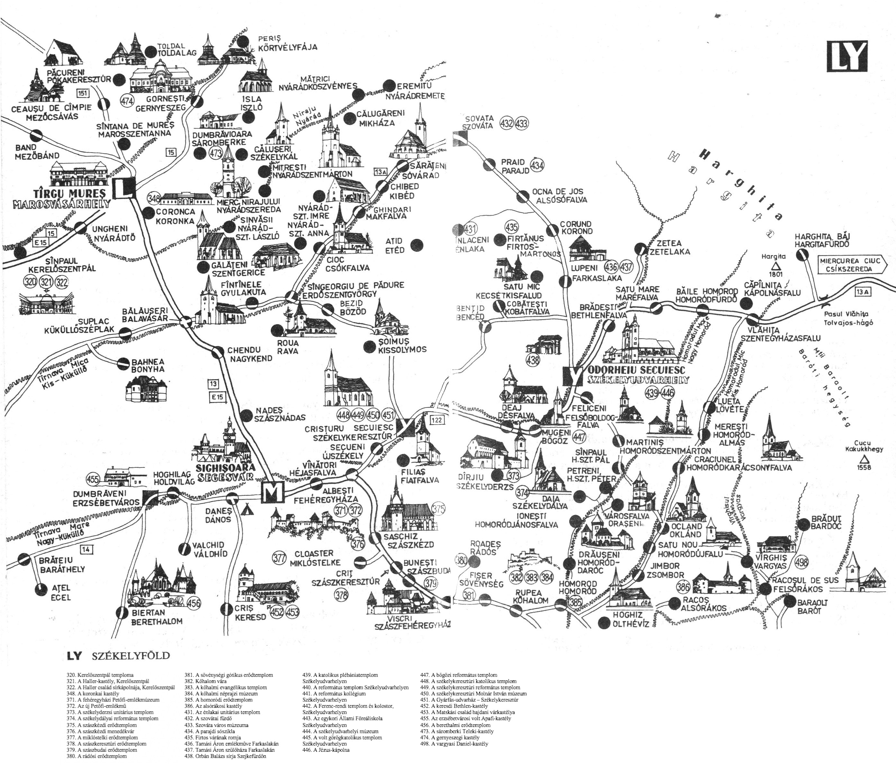
Tordától a 15. számú úton, az Aranyos völgyében megyünk délkelet felé.
Aranyosgyéres (Câmpia Turzii) fontos vasúti gócpont s egyben Torda vasútállomása. Aranyosgyéres és Gyéresszentkirály egyesüléséből keletkezett, 22 200 lakosa van.
A vidék a rézkorszak óta lakott. A XIII. században már a település is létezett, de mezővárossá csak Báthori Gábor emelte 1610-ben. (Lovastestőrei egy részét telepítette ide.) Ezt a rangját a település a XVIII. században veszítette el. Jelenleg ismét város.
Aranyoslóna (Luna) régi udvarháza Jósika Miklós (1794– 1865) magyar regényíró otthona volt, több művét itt írta.
Ma Aranyosgerend – Gerendkeresztúr (Luncani) ősidők óta lakott. A rómaiaknak is volt itt egy erődítményük. Szapolyai János 1529-ben országgyűlést tartott a helységben. A XVI. század végén híressé vált a gerendi unitárius iskola.
Marosludasnak (Luduș), a Maros völgyében fekvő új gyárvárosnak több mint 12 400 lakosa van. Len- és kenderfeldolgozó üzemeiről, élelmiszeriparáról (cukorgyár) és hőerőművéről híres.
A főútvonal Marosludas után áttér a Maros déli partjára. Itt egy autóspihenő van, étteremmel. Marosludas után a műút egy dombháton húzódik, ahonnan szép kilátás van a Maros völgyére.
Radnót (Iernut) nagy múltú, történelmi nevezetességű helység. Az unitáriusok és a reformátusok is tartottak itt zsinatokat.
Tovább a főúton elhagyjuk Maroscsapó (Cipău) helységet, a híres régészeti lelőhelyet. A kőkorszaktól kezdve az i. sz. IX. századig több korból is találtak itt emlékeket.
Kerelőszentpál (Sânpaul) Árpád-kori település. 1575-ben itt volt az uralmat eldöntő csata a Habsburg-párti Békés Gáspár és Báthori István között, amelyben az utóbbi győzött. Ezzel Erdély függetlensége fennmaradt és a fejedelem így nyerhette el a lengyel királyi trónt. A csatában Békés Gáspár oldalán Balassi Bálint is részt vett s itt esett Báthori fogságába.
Nyárádtő (Ungheni) a Nyárád vizének torkolatánál fekvő ősi települési hely, ahol szkíta és dák leletekre bukkantak. Református erődtemploma a székelyek jellegzetes építménye.
A főútvonal mellett fekvő Maroskeresztúr (Cristești) nevezetes régészetilelőhely. Itt vaskori település, nagy kerámiai központ és római őrhely volt.
A Maros északi partján Malomfalva (Morești) régészkörökben bronzkori temetőjéről híres. Nagy földvárát a román régészek honfoglalást megelőző „praestatális” ősromán településnek tartják.
Az út ezután rövidesen Marosvásárhelyre ér.
Mihai Viteazul emlékműve Aranyosgyéresen az Aranyos partján áll. Vitéz Mihály havasalföldi fejedelmet a Keresztesmezőn ölték meg Basta katonái 1601-ben. Moldvát, Havasalföldet és Erdélyt tervezte uralma alatt egyesíteni. A Habsburg-császár addig állott mögötte, amíg politikai érdekét szolgálta.
Aranyosgerend/Luncani
A református templom a XIII. század végén épült, egy 1290-től származó templom maradványának felhasználásával. Stílusában román és gótikus elemek egyaránt felfedezhetők. Egy megmaradt felirat szerint a templomot István pap építtette. Egy másik egykorú kőbevésett felirat a hajó déli külső falán az építtető Gerendi család tagjait sorolja fel 1299-ből. A mostani templomnak bélletes gótikus kapuja van. Kriptájában a Kemény, Bethlen, és a Kun családok tagjai nyugszanak.
Aranyosgerend/Luncani 407362
A hajdani Kemény–Bánffy-kastély voltaképpen udvarház, 1633-ban épült, később barokkosították, s magas duplatetővel látták el.
Itt élt Kemény József (1795–1855) történettudós és műgyűjtő. Könyv- és okmánygyűjteményének egy része az 1848. évi román felkelés alkalmával megsemmisült, a maradék az Erdélyi Múzeum Egyesület tulajdonába, majd a Román Állami Levéltárba került. A kastély a termelőszövetkezet székháza.
Bővebben lásd:
WikipédiaTudor Vladmirescu 4. sz./Str. Tudor Vladmirescu nr. 4
A radnóti Kornis–Rákóczi–Bethlen-kastély négyszögű építmény, zárt belső udvarral, négy sarokbástyával. Az udvart loggia díszítette. XVI. századi eredetű műemlék, pompás kőfaragványokkal. Az egyik ajtókereten 1514-es évszám látható. Mai alakját a kastély II. Rákóczi Györgynek köszönheti, aki 1650 körül a kor egyik leghíresebb építőművészével, a velencei Agostino Serenával építtette át.
Bővebben lásd:
Wikipédia www.kastelyerdelyben.roDózsa György utca, Radnót 545100/Str. Gheorghe Doja, Iernut 545100
Radnót református temploma 1486-ból származik, késő gótikus stílusú építmény, egyik zárókövén címer (nap és hold) látható. Igen szépek az ablakok mérművei és az ablakbélletek. A szentély oldalán gótikus ülőszékek vannak. A templom kerítésében több régi sírkő látható.
Bővebben lásd:
www.welcometoromania.euFő utca 277. sz./Str. Principală nr. 277
Kerelőszentpál templomát Haller Gáborné annak idején a reformátusoktól vétette vissza. Eredetileg gótikus katolikus templom volt. Hallerné jelentősen kibővíttette, az átépítést fia, Gábor fejezte be 1775-ben.
Bővebben lásd:
www.kereloszentpaliplebania.roA hajdani Haller-kastély helyén a középkorban vár állott. Ennek helyére kezdte 1610-ben építtetni Haller István a következő várkastélyt, amelyet fia, János fejezett be 1674-ben. A kuruc időkben ez is elpusztult, s ennek helyébe épült a jelenlegi barokk kastély. Több feliratos kövét a Haller- és Kornis-címerek díszítik. A kastélyt 1959-ben restaurálták, de a kommunizmus alatt teljesen tönkrement. Jelenleg a Gyulafehérvári Római Katolikus Érsekség tulajdonában van.
Bővebben lásd:
WikipédiaKerelőszentpál, a Kápolna-hegyen
A Haller család sírkápolnáját Haller Gáborné Károlyi Klára építtette a XVIII. században. A család ide temetkezett, és sok szép sírköve az ún. imolában van elhelyezve.
A nyugatabbra levő Aranyosrákos (Vălenii de Arieș) unitárius templomának szószékét Sipos Dávid faragta 1763-ban. Kövend (Plăiești) unitárius templomának kazettás mennyezete van. Szép a díszes karzat és az orgona, valamint a szószékkorona. A templom a XIII–XIV. században épült, de nagy ablakai az átépítést bizonyítják.
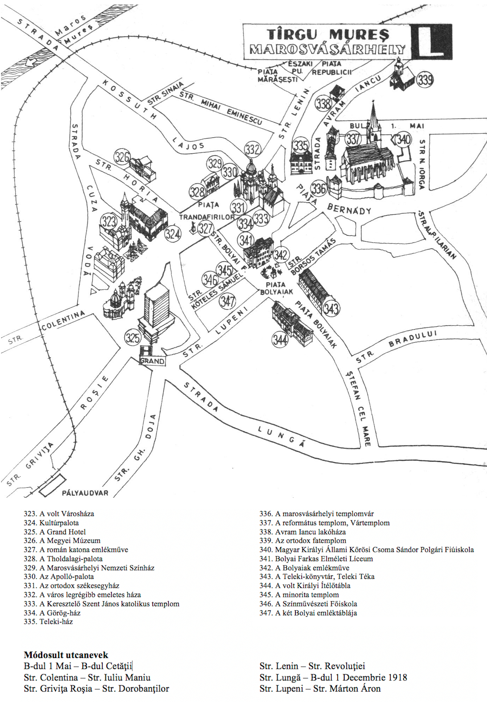
A város Maros megye (județul Mureș) székhelye, hajdan Marosszék, majd Maros–Torda vármegye központja volt. A Maros felső folyásán, a Poklos-patak torkolatában, a Somos-tető tövében fekszik, 330 m magasságban. Lakóinak száma több mint 130 000, az alárendelt községekkel együtt 153 000. Fontos kereskedelmi és ipari központ. Románia egyik legnagyobb cukor- és bútorgyára itt működik. Élelmiszeripara mellett konfekciós és fémmegmunkáló üzemei is jelentősek.
A város a Maros felső folyásának fontos kulturális központja, hol több román és magyar nyelvű újság és folyóirat jelenik meg (pl. az „Igaz szó”). Helyi rádióállomása román és magyar nyelven sugároz műsort, s színházában mindkét nyelven tartanak előadásokat.
Marosvásárhely környéke a neolitkor óta lakott. Területén nem ritkák a dák és a római leletek, ősi székely város, eredetileg Székelyvásárhely (oklevelekben Novum forum Siculorum) volt a neve. 1316-ban már gabona- és állatvásáráról volt nevezetes. Német kereskedők ezért is nevezték Neumarktnak (Újvásár). (Román neve Marosvásárt jelent.) A város már a XIV. században tekintélyes helynek számított. 1439-ben országgyűlés székhelye. 1448-ban maga Hunyadi János is megfordult itt. 1482-ben Mátyás király szabadalomlevele Székelyvásárhelyt városnak nyilvánította s lakóit felmentette a vámfizetés alól. 1552-ben a város ismét országgyűlés székhelye lett, 1554-ben Ferdinándnak hódolt, majd 1558-ban megint országgyűlést tartottak benne.
Ugyanezen időben már nemcsak fejlett kézműiparral rendelkezett, hanem művelődési központtá is lett. Borsós Sebestyén (1520–1584) itt írta meg az 1480–1583 közötti évszázad krónikáját, 1592-ben itt lett tanár Baranyai Décsi János (1560–1601) s a XVI. század végén itt írta meg a tíznyelvű Calepinus szótár magyar részét Laskai Csókás Péter iskolaigazgató.
1595-ben ez a város is segítette Vitéz Mihályt a török elleni harcban, sőt négy évre rá – mint a székelyek jó része – Báthori András ellen is. Ennek ellenére a havasalföldi fejedelem zabolátlan katonái 150 polgárt öltek meg. 1602-ben pedig már Basta gyújtogatott, s 400 hajdúja teljesen kifosztotta a várost. 1605 után, miután a várat Borsos Tamás városbíró Bocskai fejedelem engedélyével felépítette, Bethlen Gábor szabad királyi várossá emelte, s ekkor kapta a Marosvásárhely nevet (1616). Az idők során több erdélyi fejedelmet itt iktattak be tisztségébe. 1658-ban a várost elfoglalták a törökök a várral együtt s 3000 embert rabságba hajtottak. Két évre rá tatár csapatok dúlták fel. A kuruc időkben is sokat szenvedett s nem sokkal később pestisjárványok tizedelték meg lakóit.
Az 1848–49. évi szabadságharcból a város kivette részét, Bem többször is tartózkodott itt, Petőfi pedig innen indult a fehéregyházi ütközet színhelyére. 1876-ban Maros–Torda vármegye székhelye lett s még ugyanebben az évben óriási tűzvész pusztította el nagy részét.
A város a múltban a székelység kulturális központja volt s az maradt a jelenben is. Az itt élt szellemi nagyságok közül meg kell említenünk a két Bolyai, Farkas és János nevét, Aranka Györgyét, Szász Károlyét, Dózsa Elekét és Köteles Sámuelét. Itt élt a székely ezermester, Bodor Péter is, aki a főtéren egy zenélő kutat épített.
Marosvásárhely a románság történetében is jelentős szerepet játszott, az itteni Királyi Tábla jurátusa volt Avram Iancu és Alexandru Papiu Ilarian, az 1848. évi román mozgalom fő szervezői.
A Rózsák tere/Piața Trandafirilor északkeleti sarkától a Piața Bernady (Bernády tér) húzódik keletnek. A teret Bernády Györgyről (1864–1938), a város leghíresebb polgármesteréről nevezték el.
Neki köszönhető a főtér palotáinak felépítése. A téren volt hajdan a híres „Kis pipa” fogadó, s itt áll a XVIII. század második feléből származó Haller-ház.
Az egykori Postaréten (Székely Mártírok tere) áll Török Jánosnak (1806–1854) és társainak emlékoszlopa, akiket 1854-ben a Habsburg-ellenes Makk-féle összeesküvésben való részvételért itt végeztek ki.
A városból kivezető Alexandru Papiu Ilarian utca két oldalán van a református és a katolikus temető. Mindkettőben sok híres ember síremléke látható. Itt van a két Bolyai sírja, továbbá Aranka Györgynek (1737–1817) az Erdélyi Magyar Nyelvművelő Társaság alapítójának és Bethlen Gábor diplomatájának, Borsos Tamás városbírónak (1566–1633) a síremléke is.
A Strada Bolyai a Fő térről vezet délkeleti irányba. Az 5. sz. a hajdani Megyeháza 1746-ból származó, barokk épülete, 14. pedig a XVII. századi volt Pálffy-palota.
A városból a Somostető utca (str. Cornești) vezet ki kelet felé a Somostetőre (Cornești). Itt található az állatkert.
Győzelem tér 2. sz./Piaţa Victoriei nr. 2
A volt Városháza 1907–08-ban épült Komor Marcell és Jakab Dezső építészek tervei alapján. Kis, parkosított beszögellésben áll. Díszes színes majolika tetőzete és toronysisakja. Érdekesen hullámzó vonalaival, romantikus jellegével és magyar népi motívumaival az épület igen vonzó látvány. Tulajdonképpen szecessziós–eklektikus, több stílusnak keleties elemekkel való ötvözése. Márványoszlopos előcsarnoka gótikus boltozatával, színes üvegablakaival középkorias hangulatú. Tornya az épület északkeleti sarkán merészen felmagaslik, sisakjában négy óra van.
Bővebben lásd:
lexikon.adatbank.transindex.roGyőzelem tér 1. sz./Piaţa Victoriei nr. 1
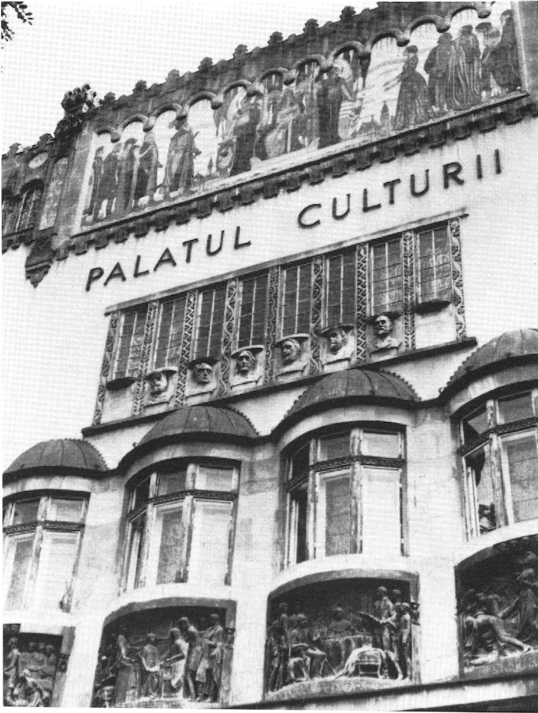
Kultúrpalotát szintén Komor Marcell és Jakab Dezső építészek tervezték, a régi Városházához hasonlóan, ugyancsak a Lechner-féle, magyar építészeti irányzat szellemében. Színes majolika tetőzete már messziről magára vonja a figyelmet. Homlokzatát Kőrösfői-Kriesch Aladár tervei alapján készült mozaiklapok, fémdomborítások és szobrok díszítik.
Lépcsőházának üvegfestményei Petőfit, Kossuthot és Jókait ábrázolják. Előcsarnokában Kőrösfői-Kriesch Aladár két freskója látható. Nyolcszáz üléses földszinti nagytermében működött 1972-ig a marosvásárhelyi Állami Székely Színház. A terem eredetileg hangversenyek számára épült, egyedülálló orgonája van. Az első emeleti tükörterem falát freskók és óriástükrök díszítik. A székely mondavilágot ábrázoló 12 festett ablakát Nagy Sándor és Kőrösfői-Kriesch Aladár készítette. A második emeleti kisebb hangversenyteremben kamarazene-koncerteket rendeznek. Egyik festett ablaka Bethlen Gábor fejedelmet és tudósait ábrázolja.
Az épület harmadik emeletén van a Képzőművészeti Múzeum. Több mint 1000 darabból álló gyűjteményében Barabás Miklós, Paál László, Lotz Károly, Herenczy Károly, Réti István, a román művészek közül pedig Grigorescu, Aman, Luchian és Pallady képeit láthatjuk.
Bővebben lásd:
lexikon.adatbank.transindex.roGyőzelem tér 6. sz./Piaţa Victoriei nr. 6
A Grand Hotel 14 emeletes, 50 m magas, karcsú, modern épület. Tetőteraszáról pompás kilátás nyílik az egész városra.
Horea utca 24. sz./Str. Horea nr. 24
A Megyei Múzeum klasszicista épülete 1890 és 1893 között épült. A múzeumot 1934-ben alapították, történelmi, néprajzi és természettudományi gyűjteménye van. Hozzá tartozik a Tholdalagi-palotában elhelyezett jelenkori történelmi részleg is.
Bővebben lásd:
lexikon.adatbank.transindex.roRózsák tere/Piața Trandafirilor délnyugati részén
A román katona emlékművét Izsák Márton és Csorvássy István készítette a második világháborúban elesett katonák emlékére. A bronzszobor talapzatát márvány domborművek díszítik.
Rózsák tere 11. sz./Piața Trandafirilor nr. 11
A Tholdalagi-palota 1759– 62 között épült Luidor János francia származású építész tervei szerint, rokokó stílusban. Belső díszítését Anton Schuchbauer (1720–1776) szobrász készítette. Itt van a marosvásárhelyi múzeum jelenkori történelmi részlege.
Bővebben lásd:
lexikon.adatbank.transindex.roSzínház tér 1. sz./Piaţa Teatrului nr. 1.
A Marosvásárhelyi Nemzeti Színház új épülete a Tholdalagi-palota és az Apolló-palota között beugró kis tér végén áll. Román népi stílusú elemekkel díszített modern építmény, bejárata felett különleges tetőkiképzéssel, kétoldalt merész betontérformákkal. Az épületet C. Savescu, V. Slascu és C. Wohl építészek tervezték. Belső díszítésében sok művész működött közre. Színháztermében 600 ülőhely van.
Bővebben lásd:
WikipédiaRózsák tere 5. sz./Piața Trandafirilor nr. 5
Az Apolló-palotát Teleki Sámuel építtette 1820-ben, Vigadónak. Színi előadásokat, bálokat tartottak benne, s 1848-ban a forradalmi ifjúság találkozóhelye volt.
Bővebben lásd:
lexikon.adatbank.transindex.roa Rózsák tere/Piața Trandafirilor északi végén
Az ortodox székesegyház kereszt alaprajzú, XX. századi építmény. 1911-ig a helyén Bodor Péter (1788–1849) székely ezermester zenélőkútja állott, amelyet a tér átrendezésekor lebontottak. Hű mását 1936-ban a budapesti Margitszigeten építették fel, ahol ma is látható.
Előtte áll Avram Iancu 1978-ban felállított bronz lovas szobra.
a Rózsák ter/Piața Trandafirilor és a Forradalom utca/Str. Revoluţiei sarkán
A város legrégibb emeletes háza 1554-ből származik. 1763-ban átépítették, s ekkor barokk–klasszicista homlokzatot kapott.
a Rózsák tere/Piața Trandafirilor északkeleti végén
A Keresztelő Szent János katolikus templomot 1728–64 között a jezsuiták építették, barokk stílusban. Kéttornyú impozáns építmény, jellegzetesen barokk toronysisakkal. A templom egy részét 1933 és 1935 között neoreneszánsz stílusban építették át.
A templomhoz tartozik a szintén barokk kolostorépület. A templomnál jóval régebbi s 1720-ban került a jezsuiták birtokába. 1707-ben a kolostor épületében tartott országgyűlést II. Rákóczi Ferenc.
Bővebben lásd:
lexikon.adatbank.transindex.roRózsák tere 2. sz./Piața Trandafirilor nr. 2
A Görög-házban volt Petőfi Sándor szállása 1849. július végén. Petőfi 1849. július 21-én érkezett Marosvásárhelyre, ezután Berecken Bemmel találkozott, majd július 29-én Marosvásárhelyen visszakapta őrnagyi rangját. Bem főhadiszállása néhány házzal odébb volt. Petőfi innen indult Fehéregyháza felé. A házon emléktábla van.
Bővebben lásd:
WikipédiaBernády György tér 3. sz./Piața Bernady nr. 3
Teleki-házat a XVI. században, Izabella királyné idején Köpeczi Tamás építtette. Időnként fejedelmi szállásnak is használták. 1633-ban e házban fogták el Zólyomi Dávidot, s 1717-ben ide fogadták be a Gyulafehérvárról elüldözött református diákokat. 1849-ben itt volt Bem főhadiszállása.
Bővebben lásd:
lexikon.adatbank.transindex.roa Bernády tér/Piața Bernady északi oldalán
1605 után kezdték építeni, Bocskai István fejedelem engedélyével.
A szabálytalan négyszög alaprajzú vár bástyáit 900 m hosszú téglafal kötötte össze. Az első bástya 1620-ban készült el, az egész vár pedig 1653-ban. A falak 6–8 öl magasak voltak s a várat 10 méter széles, 8 méter mély védőárok vette körül. A törökök ennek ellenére 1658-ban átmenetileg elfoglalták.
A téglafal ma is látható, bár korántsem olyan magas, mint volt. Bástyái közül a templom melletti Tímár-bástya 1620-ban épült, északon a Szabó-bástya 1638–40 között. Ettől keletre van a barokk stílusú Mészáros-bástya és az 1633-ban épült Bognár-bástya. Déli részén pedig az erőteljes Szűcs- és Lakatos-bástya áll. Hajdan egy öt sarokbástyás kastély is volt a várban, Basta hadai dúlták fel.
Bővebben lásd:
lexikon.adatbank.transindex.ro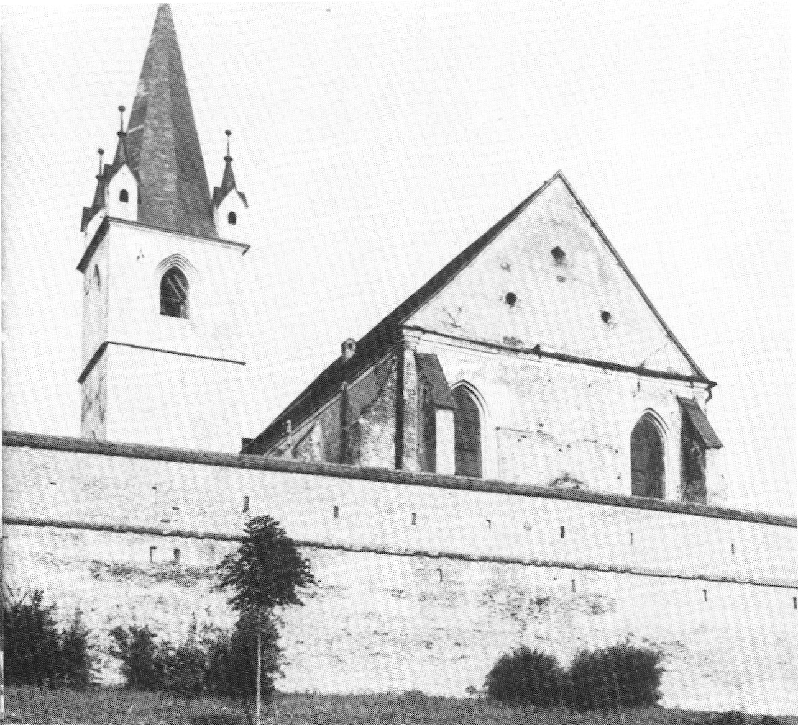
A református templom a vár délnyugati sarkában áll. Vártemplomnak is nevezik. A tatárjárás előtt 1241-ben már templom állt a helyén, de a mai templomot a XIV. század végén építették a ferencesek, gótikus stílusban.
Építéséhez – a torony falában levő 1442. évi felirat szerint – Hunyadi János is hozzájárult. 1616-ban restaurálni kellett Basta rombolásai miatt, s 1693-ban is renoválták. A XVIII. század folyamán barokk stílusban alakították át. 1704-ben itt választották meg II. Rákóczi Ferencet Erdély fejedelmévé. A templom legújabb restaurálása alkalmával sok szép gótikus részletet tártak fel és állítottak vissza.
A templom tornya 70 m magas, lőrésnyílásokkal, sisakja nyolcszögletű, négy fiatoronnyal. Nyugati és déli kapuja szép, bélletes alkotás. Az egyhajós templom ablakai gótikusak. Az ősi egyház kincsei közé tartozik egy régi Graduále, Rákóczi György fejedelem ajándéka.
A templomhoz csatlakozott hajdan egy ferences kolostor is, melyet 1557-ben a város „Schola particulá”-vá – világi iskolává – alakított ál. Ezt egyesítették 1718-ban a Gyulafehérvárról ide menekült református iskolával, s így alakult meg a híres marosvásárhelyi Református Kollégium. A régi kolostornak ma már csak kápolnája és a schola particula részei láthatók.
Bővebben lásd:
lexikon.adatbank.transindex.roAvram Iancu utca 23. sz./Str. Avram Iancu nr. 23
Az emléktábla szerint itt lakott 1847–48-ban a románság vezetője, amikor a Királyi Ítélőtábla kancellistája volt.
Andrei Şaguna metropolita utca/str. Mitropolit Andrei Şaguna
Az ortodox fatemplom a XVIII. század második felében épült. A hagymakupolás tornyú faépület az ortodox fatemplom-építészet egyik emléke. Zsindely fedi. Ikonosztáza figyelemre méltó.
Bővebben lásd:
www.muemlekem.huBernády tér 7. sz./Piaţa Bernády nr. 7
Jelenleg a Petru Maior Egyetem Bölcsészettudományi kara működik benne.
A névadó Kőrösi Csoma Sándor szobra a Bernády téren áll.
Bolyai utca 3. sz./Str. Bolyai nr. 3
A Bolyai Farkas Elméleti Líceum a hajdani református kollégium épületében működik.
A régi protestáns intézményt annak idején II. Rákóczi György özvegye, a katolikus Báthori Zsófia utasította ki Sárospatakról. A diákok Gyulafehérvárra mentek (1672–1716). Innen is kiüldözték az osztrák katonai hatóságok, s így került az intézmény Marosvásárhelyre. Híres oktatási intézmény lett, 1786-ban nyomdája is volt. Diákja volt Gheorghe Șincai (1754–1816) és Petru Maior (1761–1821), a román felvilágosodás két nagy alakja, kiknek magyar nemességük volt: az előbbi Sinkai Györgynek, az utóbbi Dicsőszentmártoni Major Péternek nevezte magát írásműveiben. Itt kezdte tanulmányait Bolyai János (1802–1860), a világhírű matematikus. Híres tanár volt Bolyai Farkas (1775–1856), s miután az intézet jogi fakultást is kapott, Dósa Elek (1803–1867) jogtudós.
Bővebben lásd:
WikipédiaBolyai tér/Piața Bolyai
A Bolyaiak emlékműve a Bolyai Líceum homlokzata előtt áll. A két Bolyai szobrát, Csorvássy István és Izsák Márton alkotását 1957-ben állították fel.
Bolyai tér 13. sz./Piața Bolyai 13
A Teleki-könyvtár, az ún. Teleki Téka, újabban Teleki–Bolyai-könyvtár palotája Erdély kancellárjáé, Teleki Sámuelé (1739–1822) volt.
Teleki Sámuel élete során 40 000 kötet könyvet gyűjtött. Anyagában több ősnyomtatvány is van, pl. az 1476-ban Velencében nyomtatott Galeotto-mű, az „Atlas Janssonii” című térképgyűjtemény stb. Itt tekinthetőKerelőszentpál templomameg a XV. századi Koncz-kódex, amely a „Marosvásárhelyi Sorok és Glosszák” néven ismert régi magyar nyelvemléket tartalmazza. Itt látható ezenkívül Apáczai Csere János „Magyar Logikátska” (Gyulafehérvár, 1654) című művének egyetlen példánya, valamint Kőrösi Csoma Sándor tibeti–angol szótára is. A könyvtárteremben az alapító arcképe, azonkívül több fejedelemportré is látható (Mátyás király fiatalkori képe, Teleki Mihály, Brukenthal Sámuel). A könyvtárhoz metszet- és ásványgyűjtemény is tartozik.
Az épületben van a Bolyai Emlékmúzeum és a Bolyai Tudományos Könyvtár. Ez utóbbinak anyaga a volt református kollégium könyvtára és gyűjteményei. Az emlékmúzeumban Bolyai-emlékeket, leveleket, kéziratokat láthatunk. A két könyvtár állománya mintegy 200 000 kötetet tesz ki.
Ugyancsak az épületben van a neves zsögödi székely festőművész, Nagy Imre képtára. Az utóbbi idők nagy szenzációja volt Orbán Balázs eredeti fényképeinek felfedezése. Ezeket könyvben ki is adták. Véletlenül bukkantak rá a múzeum anyagában.
Bővebben lásd:
lexikon.adatbank.transindex.roBolyai tér 14. sz./Piața Bolyai 14
A volt Királyi Ítélőtábla épülete 1789-ben épült, barokk stílusban. Az épületet Kendeffy Elekné adományozta 1827-ben az intézmény számára.
A Királyi Táblának volt elnöke Aranka György (1737–1817), aki 1793-ban megalapította az Erdélyi Magyar Nyelvmívelő Társaságot. Ez volt az első magyar tudományos társaság. Aranka Shakespeare egyik első magyar fordítója is volt.
Az épületben 1968-ban elhelyezett emléktábla hirdeti, hogy annak idején kancellistaként itt dolgozott Avram Iancu és A. Papiu Ilarian.
Köteles Sámuel utca 4. sz./Str. Köteles Sámuel nr. 4
A minorita templom 1741 és 1767 között épült, barokk stílusban. Belső díszítése igen értékes. Egyik oltárképe Raffaello Madonnájának kitűnő másolata.
A templom mellett áll a rendház épülete is.
Bővebben lásd:
WikipédiaKöteles Sámuel utca 6. sz./Str. Köteles Sámuel nr. 6
A főiskola Szentgyörgyi Istvánról (1842– 1931), a kiváló kolozsvári színészről kapta nevét, és a romániai magyar színjátszás számára képez színészeket, rendezőket.
Mellette áll a Színházi Stúdió épülete (1963), ahol a színinövendékek hivatásukat gyakorolhatják.
Bővebben lásd:
WikipédiaKöteles Sámuel utca
A két Bolyai emléktáblája a főiskolával szemben levő ház falán látható. Valamikor ennek az épületnek az udvarán állt a két Bolyai lakóháza.
Marosvásárhelytől északnyugatra Mezőcsávás (Ceaușu de Câmpie) községben van a hatalmas faharangláb, amely valószínűleg a XVI. század végéről való. Tovább a Komlód-folyó völgyében halastavak-sorakoznak. Az útba eső falvakban gyakran találunk régi kastélyokat, udvarházakat és öreg templomokat.
Marosvásárhelytől nyugatra Marosszentkirály (Sâncraiul de Mureș) és Marosszentanna (Sântana de Mureș). Mindkettő temploma a XIII. században épült. Az utóbbi szentélyében jelentős falfestmények láthatók a XIV. századból.
Marosvásárhelytől északkeletre, az Ikland völgyében van Székelykál (Călușeri). Unitárius temploma 1762-ben épült. Zömök, nyolcszögű sisakkal koronázott tornyát saroktámpillérek támasztják, a hajó tengelyében áll.
Centrul de Informare Turistica
Enescu utca 2. sz./Str. Enescu nr. 2.
Telefon: 0365 404.934
Email: turism@cjmures.ro
Bővebben lásd:
www.cjmures.roVisit Mureş/Visit Maros
Telefon: +40787315741
Győzelem tér 1. sz./Piaţa Victoriei nr. 1
Bővebben lásd:
www.visit-mures.comMarosvásárhelyről a 13. számú úton megyünk délkelet felé. Az út a Maros és a Nyárád között dombhátra kapaszkodik fel, az ún. Vácmány-hegyre, amely régi székely ág nevét őrzi.
Koronka (Corunca ) községben van a volt Tholdalagi-kastély.
Ezután szerpentineken ereszkedünk le a Nyárád völgyébe. Ákosfalva (Acățari) református temploma 1753-ból való és a Szilágyi család kriptája van benne.
Székelyvaja (Vălenii) református temploma eredetileg román stílusú volt, de később átépítették. Apszisa félkörös, késő gótikus kapuján 1442-es dátum volt látható.
Az út itt leér a Kis-Küküllő völgyébe. Balavásár (Bălăușeri) szőlő- és gyümölcstermesztéséről különösen híres község. A vidék régi vásárközpontja. A Makk-féle összeesküvés résztvevői 1851-ben Balavásáron a szüret ürügyén tartottak összejövetelt.
Balavásár után eljutunk Segesvárra, az útvonal a Nagy- és a Kis-Küküllő közötti dombhát hágója. Nagyszőlősnél esett el Kemény János (1607–1662) fejedelem a törökkel vívott csatában.
Koronka 376. sz./Corunca nr. 376
A koronkai kastély helyén már 1630-ban állt Toldalaghi Mihály kerített udvarháza. A jelenlegi kastély 1830 táján készült el, a régi romjain. Az U alaprajzú, klasszicista épület magasított attikájú középső szakaszán nagy áthajtó kapu van.
Teljesen leromlott állapotban van.
Bővebben lásd:
www.kastelyerdelyben.roA Nyárád menti falvak évszázados intenzív kertkultúrája jólétet hozott. Lehetővé tette, hogy a kultúrára is sokat áldozzanak.
Szentgerice (Gălățeni) unitárius temploma a XIV. századból való. Gótikus szentélye a magas hajóépítményhez csatlakozik. Körben támpillérek vannak. A torony a hajónál alig magasabb, nyolcszögű sisakja van. Harmonikus építmény.
Nyárádszentlászló (Sânvăsii) unitárius temploma XIII. századi szentélyében kis félköríves román ablak van, a diadalív is félköríves. Díszes a szószékkorona. A reneszánsz úrasztali tányér finom munka.
Nyárádszereda (Miercurea Nirajului) régen Marosszék első helye volt. 1605-ben a székelyek itt választották fejedelemmé Bocskai Istvánt. A református templom holdváltozásokat mutató toronyóráját székely ezermester készítette.
Nyárádszentmárton (Mitrești) unitárius temploma a XIII. századból származik. Zömök tornya, hegyes toronysisakkal, négy fiatoronnyal archaikus külsejű.
Iszló (Isla) unitárius temploma a XVII– XVIII. században épült. Szerény, kis építmény, puritán külsővel, támpillérek alkotják egyetlen díszét. Fából épített kis huszártornya van.
Demjénházánál a „Szentföldre”, azaz a katolikus vidékre érünk. Mikháza (Călugăreni) zárdája régi kultúrhely, sok értékes műkincset és ősnyomtatványokat is tartalmazó könyvtára híres volt. Feljebb Nyárádköszvényes (Mătrici) és Nyárádremete (Eremitul) következnek, hol szép székelykapukat láthatunk. Remete templomában egy remekművű Krisztus-corpus látható, melyet állítólag a reformáció idejében Marosvásárhelyről menekítettek ide. Feljebb a Nagy-Nyárád forrása vidékén van Vármező erdészeti telepe pisztrángtenyészettel.
Az út a Bökecs-tető 1079 m magas tömbje alatt, azt északon megkerülve, Szakadáton át délkeletnek tart és Szovátára ér.
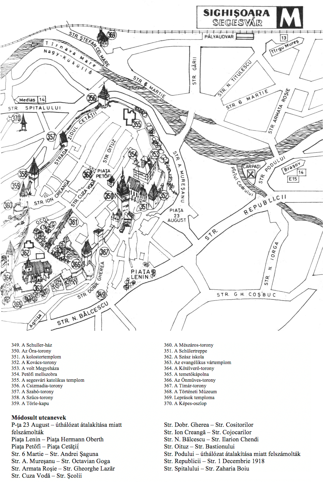
Segesvár (szász neve: Schässburg) 28 100 lakosú város Maros megye (județul Mureș) területén. A Nagy-Küküllő völgyében fekszik. Termékeny mezőgazdasági tájon jelentős ipari központ. Fajansz-, üveg- és textilgyára, gépgyártó üzeme és élelmiszeripara igen fejlett. Kereskedelmi csomópont és egyúttal az erdélyi német nyelvű lakosság egyik szellemi központja is.
A város környéke ősidők óta lakott. A római időkben ezen a tájon feküdt a Castrum Stenarum őrhely, amely a Gyulafehérvár (Apulum) felé vezető fontos út biztonságára vigyázott. Az út élénk kereskedelmi forgalmát a környék gazdag pénzleletei tanúsítják. A szláv eredetű földrajzi nevek azt bizonyítják, hogy a terület a honfoglalás előtt az óbolgárok fennhatósága alá tartozott. II. Géza király, majd II. András szász telepeseket hívott e vidékre, akik a vár építését 1191-ben kezdték el. Az oklevelek 1280-ban „castrum Sax”, majd 1367-ben „Civitas de Segusvar” néven említik. A város igazi megerősítése Róbert Károly trónraléptétől egészen a mohácsi vészig tartott, a várfalak és a jelentősebb egyházi és világi építmények ebben a korszakban készültek el. Segesvár kézműipara már a XIV. században igen fejlettnek számított s a későbbi évszázadokban még inkább felvirágzott. Mátyás király idején a város részt vett a Veres Benedek által vezetett királyellenes felkelésben. 1506-ban az erdélyi rendek az itteni vártemplomban erősítették mega három nemzet (magyarok, székelyek, szászok) unióját. A XVI. században a város evangélikus hitre tért át. 1600-ban Vitéz Mihály havasalföldi vajda hódoltatta meg, majd Basta császári tábornok foglalta el (1603–1604). Az erdélyi rendek annak idején itt választották meg fejedelemnek I. Rákóczi Györgyöt és Kemény Jánost. 1646-ban a lakosságot járvány, 1676-ban tűzvész, 1709-ben ismét járvány s 1788-ban is tűzvész pusztította.
1867 után a szász székek elvesztették autonómiájukat, s 1876-ban Segesvár Nagy-Küküllő vármegye székhelye lett.
A város két részből áll, az Alsóvárosból és a Felsővárosból, vagy Várból. Ez utóbbi egy 72 m magas hegyfokra épült. Koruk azonos, de az Alsóváros sokat veszített középkorias jellegéből. Központja a Piața Cetăţii, a régi Markt Platz, a Piac tér. Jelenleg is ez az üzleti élet központja. A vár felőli oldalon 19 épületét nyilvánították műemlékké. A régi házak között állnak a közintézmények jórészt eklektikus palotái.
A Felsőváros, illetve Vár az Alsóváros fölé magasodik falaival, tornyaival. A XVI. századig ez volta város központja. Az Alsóváros csak később vette át a vezető szerepet. Ekkor a Felsővárosból kulturális központ, iskolaváros lett.
A Felsővárosnak a XV. században három erődítési övezete volt, 14 toronnyal. A török nem tudta elfoglalni. A kuruc korban – mivel a polgárok II. Rákóczi Ferencet nem ismerték el Erdély fejedelmének – Pekry Lőrinc ostromolta és több bástyát felrobbantott. A vár már akkor elvesztette hadászati jelentőségét.
A Felsőváros központja a Piac tér, a hajdani Burg Platz, illetve Piața Cetății. A többszöri tűzvész után átalakított házai többnyire copf stílusúak. A tér és a Iskola utca/Str. Scolii sarkán áll a Szarvas-ház, amelynek szegletén agancsos szarvaskoponya látható.
Érdemes ezenkívül megnézni a szomszédos Bástya utca/Str. Bastionului 4. számú házát, amely megőrizte középkori alakját. Az Iskola utca/ Str. Scolii 10. száma pedig N. D. Cocea(1880–1949) író lakóháza.
A Felsőváros bejárása után az Alsóvárosból még egy látnivalóra kell felhívni a figyelmet. A Hermann Oberth térről/Piaţa Hermann Oberth az 1918. december 1. utca/Str. 1 Decembrie 1918 vezet a Nagy-Küküllő felé.
a Piac tér/Piața Cetății nyugati szélén
A Schuller-ház a posta mellett áll. Bolthajtásos bejárata felett egykori tulajdonosának címere látható, amelyen egy kéz három szál rózsát tart, s alatta a felirat: „Per spinas ad rosas”, azaz „Töviseken keresztül jutni a rózsákhoz”. A házban a város egykori polgármestere, Johann Schuller von Rosenthal „csizmadiamester” lakott, akit 1703-ban „erkölcstelen életmódja” miatt lefejeztek. Azzal vádolták, hogy házában háremet rendezett be, de csak egy 15 éves török szolgálóleánya volt.
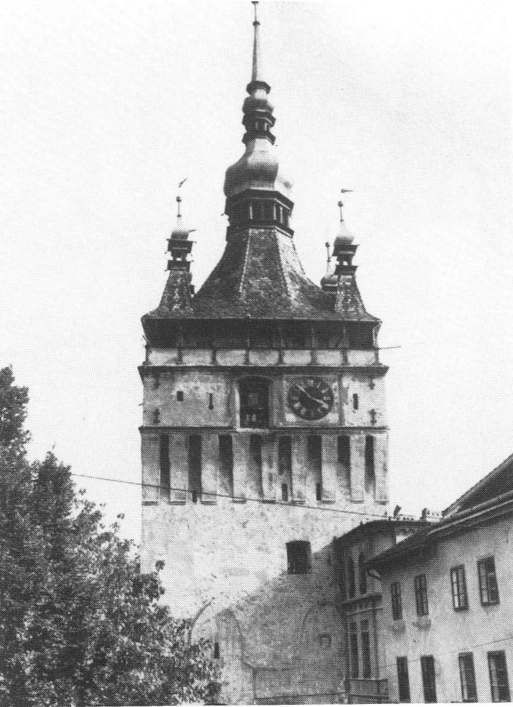
Az Óra-torony (Stundenturm) a Vár főkapuja és a város szimbóluma is egyben. A XIV. században épült és 1556-ig ez volt a városi tanács székháza. 1676-ban megsérült egy tűzvészben, de a következő évben újjáépítették. Barokk stílusú felső része ez időből származik, Philip Bonge salzburgi és Veit Gruber tiroli mesterek munkája. 1891-ben kapta színes majolika tetőzetét.
A négyemeletes torony földszintjén van a középkori tanácsterem, az emeleteket pedig Várostörténeti Múzeumnak rendezték be. A torony óráját Johann Kirschel készítette 1648-ban. Szerkezetét utoljára 1908-ban újították fel. Minden óraütéskor különféle figurák forognak körbe.
Bővebben lásd:
WikipédiaMúzeum tér/Piața Muzeului
A kolostortemplom háromhajós, gótikus építmény a XIII. század második feléből. Egykor domonkos kolostortemplom volt, 1556-ban az evangélikusoké lett. A XV. század végén a templomot a kolostorral együtt bővítették, az 1676. évi tűzvész után pedig újjá kellett építeni. A kolostort 1886-ban bontották le.
A templom ajtókerete szép reneszánsz munka. Bronz keresztelőmedencéje 1440-ből, orgonája 1680-ból származik. Falát 35 db XVII. századi, értékes keleti szőnyeg díszíti.
Bővebben lásd:
www.visit-mures.comVár sétány/Aleea Cetății, a kolostortemplom mögött
A Kovács-torony a Vár egyik bejáratát védelmezte. 1631-ben építették. Felső emeletén (a Vár felőli földszinten) volt a tűzoltószertár. A régi Borbély-torony helyén áll.
Múzeum tér 7. sz./Piaţa Muzeului nr. 7
A volt Megyeháza 1886–83 között épült, neoreneszánsz stílusban. Díszterme különösen szép, s ablakából ráláthatunk a fehéregyházi síkra.
Múzeum tér/Piaţa Muzeului
Petőfi mellszobra a volt Megyeháza mellett, kis parkban áll. 1916-ig egy bronz Petőfi-szobor állt itt, Köllő Mihály székely szobrász alkotása 1897-ből, az 1916. évi hadműveletek idején azonban azt Kiskunfélegyházára menekítették.
a Vár északi sarkában
A katolikus templom 1894-ben épült egy régi ferences templom és egy bástya helyére. Szerencsésen illeszkedik környezetébe.
Várfal utca/Str. Zidul Cetății
A Csizmadia-torony mai formáját 1681-ben kapta, ugyanis 1676-ban megrongálódott. Alaprajza hatszög alakú.
Tímárok utca/Str. Cositorarilor
A Tímár-torony szerényebb alkotás a monumentális Ónműves- és az Óratorony között. A Várral egy időben épült.
Várfal utca/Str. Zidul Cetății
Szűcsök utca/Str. Cojocarilor
Szűcsök utca/Str. Cojocarilor
A Törle-kapu a Szűcs-torony és a következő Mészáros-torony között van. Neve a német Törlein (kis kapu) szóból ered.
Szűcsök utca/Str. Cojocarilor
A Mészáros-torony a Törle-kaputól délre áll. A XII. században épülhetett és az 1676. évi tűzvész nem bántotta. Felső emeletei a XVI. században épültek. Előterében áll a ma is jó állapotban levő Mészáros-bástya, amely lehetővé tette, hogy a kaput ostromló ellenséget oldalról is lőhessék.
A Szűcs- és a Mészáros-torony között a falak jó állapotban maradtak meg, magasságuk eléri a 8–10 métert.
Iskola utca/Str. Scolii
A Schülertreppe, magyarul Diáklépcső felvezet a tulajdonképpeni Vár-hegyre vagy Iskola-hegyre. A régi, fedett falépcsőt eredetileg 1642-ben készítették. Tetején kívül oldala is fedett, valószínűleg azért, hogy ostrom esetén biztonságosabb legyen. 172 lépcsőfoka van, közben néhány pihenővel.
Aki nem akar lépcsőt mászni, körben is feljöhet az Ocol-Umweg nevű kocsiúton.
Bővebben lásd:
www.muemlekem.huA Szász iskola épülete a XVII. század elejéről származik, de a XX. század elején emeletet húztak rá és új homlokzatot kapott. Értékes iskolai gyűjteménye van. A nagy múltú intézmény tanárai voltak Binder, Teutsch és Müller későbbi szász püspökök. Az egykori diákok közül is többen híres emberek lettek.
a Vár-hegy legmagasabb pontján
Az evangélikus vártemplom – a szászok Bergkirchének (hegyi templom) hívják – az erdélyi gótikus építészet remeke. 1350-ben kezdték építeni, egy régebbi román stílusú kápolna helyén. 1429 és 1488 között átépítették. 1838-ban restaurálták, mert egy földrengés kárt okozott benne. Három hajója majdnem egyenlő magas. Hossza 53 m, befejezetlen tornyának magassága 42 m. Bélletes déli kapuja a kassai dóm és a tordai templom kapujára emlékeztet.
Belül szép hálóboltozatának íveit oszlopfő nélküli, nyolcszög alapú oszlopok tartják. Tíz nagy ablaka van. Tabernákuluma 1438-ból, gótikus–reneszánsz stalluma 1523-ból való. Az 1934. évi restauráláskor a meszelés alól freskókat tártak fel.
Bővebben lásd:
www.muemlekem.huA Kötélverő-torony a vártemplom közelében áll. Alaprajza négyszögletes, s pincerészén felfedezhető a vár legrégibb falazata.
szintén a vártemplom mellett
A temetőkápolna a hajdani Aranyműves-torony helyén áll. A XIV. századi tornyot ugyanis 1809-ben egy villámcsapás lerombolta. Helyére tornatermet építettek, amelyet később temetőkápolnává alakítottak át. A kápolna mellől gyönyörű kilátás nyílik.
A temetőkápolna alatt, a falakon kívül van a segesvári evangélikus temető, sok száz kiválóság sírjával. Mindjárt az elején van Baumgarten János (1756–1843) neves botanikus és családjának sírja. Főműve, az „Erdély flórája” (Enumeratio stirpium Transilvaniae) Bécsben, 1816-ban jelent meg és máig használt kiváló munka. Sok erdélyi növény, pl. a Telekia speciosa Baumgartentől kapta a nevét.
Tímárok utca/Str. Cositorarilor
Az Ónműves-torony, a Vár-hegy lábánál, 25 m magas, igen impozáns építmény. A többiekkel egy időben épült, de később többször is változtattak rajta. Alapja négyszögletes, de első és második emelete ötszögletesre vált át, a buzogányszerű konzolos legfelső emelet viszont nyolcszögletes. Vakolatán még az 1704. évi ostrom golyónyomai látszanak.
Tímárok utca/Str. Cositorarilor
A Tímár-torony szerényebb alkotás a monumentális Ónműves- és az Óratorony között. A Várral egy időben épült.
Múzeum tér 1. sz./Piața Muzeului nr. 1
A Történeti Múzeum itt levő jelenkori részlegének modern művészeti gyűjteménye is van.
Ștefan cel Mare utca/Str. Ștefan cel Mare, a vasútvonalán
Leprások temploma 1575-ben épült, késő gótikus stílusban. Van egy külső szószéke is, ahonnan a betegeknek prédikáltak. A kiközösített leprások ugyanis nem léphettek be a templomba.
Bővebben lásd:
www.welcometoromania.euKözvetlenül a város mellett, a Medgyesre vezető út mentén bal kéz felől
A Képes-oszlop egy ma már nem látható felirat szerint 1469-ből származik. Eredetéhez néphagyomány fűződik, mely szerint a török időkben egy pasa esett el itt. Az évszám azonban arra utal, hogy valószínűleg Mátyás király oklevelének emlékére állították, amelyben a hét szász széket (egyikük Segesvár volt) jogaiban megerősítette. A zsindellyel fedett tornyocska fülkéiben hajdan szentképek voltak.
Segesvárról lehet bejárni a Nagy-Küküllő és az Olt közötti dimbes-dombos vidék szász községeit, hol ősi erődtemplomok láthatók.
Cím: Octavian Goga tér 8.sz./P-ta Octavian Goga nr. 8.
Telefon: +40265770415
Segesvárról a 13. számú úton megyünk tovább. Rövidesen a fehéregyházi csatatéren haladunk keresztül (a mezőt az út és a vasút átszeli).
Fehéregyháza (Albești) községben található a Haller-kastély, amely 1630-ban épült, ma már csak egy szárnya (filagória) áll. A község melletti mezőn vesztette életét 1849. július 31-én Petőfi Sándor.
Héjjasfalvánál (Vânători, Teufelsdorf) az út elhagyja a Nagy-Küküllő völgyét, és délnek fordul. Itt érjük el a szász templomerődök vidékét. Héjjasfalva közelében van Zeyk Domokos emlékműve, rajta domborművű képmásával.
A hős honvédtiszt az oroszokkal való egyenlőtlen küzdelemben utolsó pisztolytöltényével főbelőtte magát.
Szászkézd (Saschiz, Kaissd) valamikor jelentős település volt, sokáig vitássá tette Segesvár elsőbbségét. Itt volt a kézdi „capitulum” székhelye. 1663-ban Apafi fejedelem országgyűlést tartott itt.
Zoltán (Mihai Viteazul, Zeltendorf) falu mellett kitérhetünk délnyugat felé.
Szászkeresztúr (Criț, Deutschkreuz) Zoltántól 4 km-re fekvő község, szőlőtermő vidéken.
Szászbuda (Bunești, Bodendorf) községben szintén érdemes megállni.
Sövénység (Fișer, Schweischer) 10 km-re van Szászbudától.
Kőhalom (Rupea, Reps) város 451 m magasan fekszik. Lakosainak száma 4800. Parkett- és bútorgyártása, fémművessége és tejfeldolgozása jelentős. Népszerű fürdőhely is, a várhegy déli oldalának kénes és sós forrásai köszvényt és női betegségeket gyógyítanak. A város története összefügg várának történetével. Környéke ősidők óta lakott hely, dákok, rómaiak is éltek ezen a vidéken. A város sokáig az egyik szász szék központja volt.
Olthévíz (Hoghiz) nevét meleg forrásairól kapta. 1312-ben „Calida Aqua” néven említik az oklevelek. Szomszédságában római tábor is volt. Templomát Árva Bethlen Kata építtette, itt van a kastély is. Az unitárius templom a XV. században épült, átalakítások után puritán külsejű, kőfallal van kerítve. Hosszú hajója, zömök tornya van, hegyes sisakkal.
Az út ezután a Bogát völgyében, szép, erdős tájon átvágja az Olt kanyarulatát és a Bogáti-hágón át ismét leereszkedik az Olt völgyébe. A Persányi-hegységben (Munții Perșani) járunk, amelyet a szászok Geisterwaldnak neveznek.
Szászmagyarós (Măieruș, Nussbach) közvetlenül az Olt partján van.
Szászveresmart (Rotbav, Rohrbach) községben rövid időre megállhatunk, hogy meglátogassuk a templomot.
Földvár (Feldioara, Marienburg) község várát II. Endre király idejében a Barcaságba behívott német lovagrend építette (1222).
Kiűzetésük után a környék mentsvára lett.
Földvárt 1427-ben Zsigmond király mezővárosnak ismerte el. 1529-ben Szapolyai János, Péter moldvai vajda segítségével és a török segédcsapatokkal itt győzte le a Ferdinánd-pártot. 1612-ben Báthori Gábor a város mellett verte le a brassói szászokat. 1848. november 29-én pedig a székelyek Gábor Áron ágyúit itt vetették először ütközetbe.
Evangélikus temploma eredetileg háromhajós bazilika volt, s a XIII. század közepén épült. A XIV. században boltozták. Szentélyében jelenetes gyámkövek láthatók. Egyike a legjelentősebb szász középkori templomoknak.
Földvár után az út a Barcaságba kanyarodik. Keresztezzük a Barca és Vidombák (Weidenbach) patakokat s máris elérjük Brassó északi végét. A vidombáki evangélikus templom XIII. századi eredetű gótikus épület.
Itt a Méhkertek (Stupini) nevű külváros helyén esett el Székely Mózes erdélyi fejedelem 1603-ban a Radu Șerban havasalföldi fejedelem ellen vívott csatában. Az elesett fejedelem fejét levágták és a kutyák elé vetették. Brassó szász bírája temettette el.
A fehéregyházi Petőfi-emlékmúzeumot a Haller grófok alapították. Különféle Petőfi-relikviákat tartalmaz. Itt áll a régi, turulos emlékmű is, melynek tövében az elesett honvédek egy részének sírja van.
Az új Petőfi-emlékművet a műút mellett, egy forrásnál emelték. A költőt, akit valószínűleg a dzsidások öltek meg, minden bizonnyal Lengyel József, sebesülteket kötöző orvos látta utoljára. Halálának pontos helye ismeretlen, tetemét közös sírba temették.
A székelyderzsi unitárius templom szintén erődített. Öt bástyája, falai a szász erődtemplomokéival vetekszenek. A középkori eredetű templomerődöt a XVII. század elején is bővítették. A késő gótikus templom hálóboltozata pajzsokkal ékes gyámkövekre támaszkodik. A gyámköveket domborművű jelképek díszítik. Öt csúcsíves ablaka és díszes kőkarzata van. Itt látható a XV. század elejének egyik legpompásabb alkotása, a Szt. László legendáját ábrázoló, 1419-ből származó freskómaradvány.
A templom bejáratánál reneszánsz sírkövek láthatók. 1938-ban, egy gótikus ablak kibontásakor találták meg azt a rovásírásos feliratot, melynek helyes megfejtésén ma is vitatkoznak.
A várfalak mentén gabonás és élelmiszer-tároló kamrák vannak, a bástyában szalonnát és sonkát tárolnak. A falu régi szokás szerint itt tartja vagyonának egy részét.
Bővebben lásd:
www.szekelyderzs.comSzékelydálya 12. sz./Daia nr. 12
A székelydályai református templom XV. századi gótikus stílusú építmény.
Szentélyének süvegboltozatát rendkívül finom rajzú, dekoratív falfestés borítja. Hajlékony leveles és virágos indák között alakok és szép címerek láthatók. A címerek közt van a székely-címer, Brassóé, Kolozsváré és Barlabássy Lénárd alvajdáé. A festmény késő gótikus, egyesek szerint XVI. századi reneszánsz alkotás. A hajó festettkazettás mennyezete 1630-ban készült.
Szászkézd 304. sz./Saschiz nr. 304
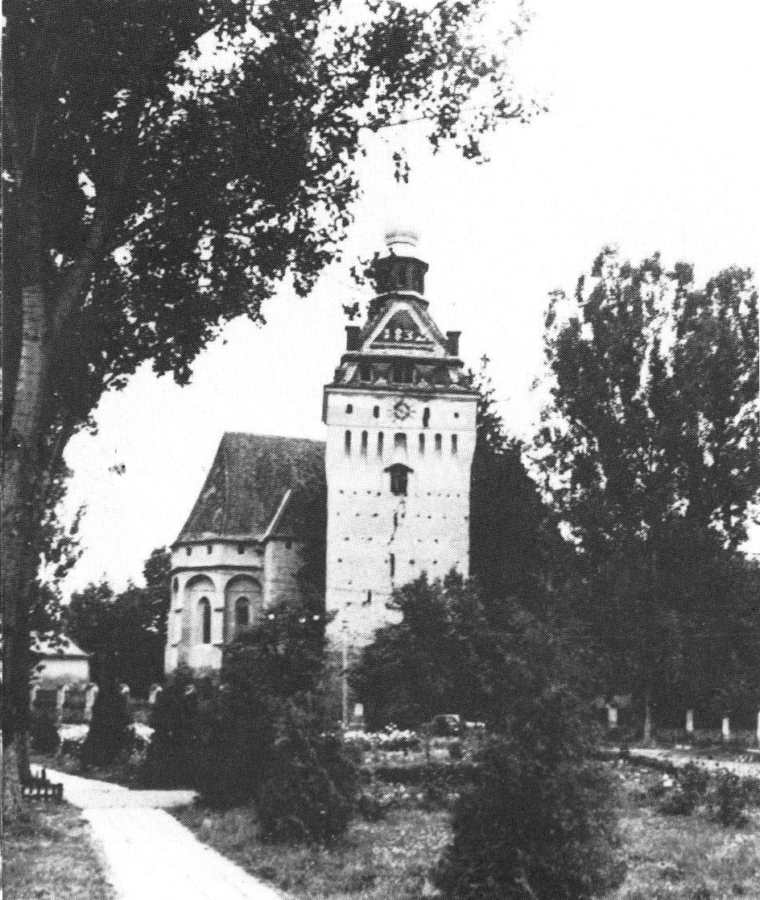
A szászkézdi erődtemplom a piactér déli részén áll. Tornya a segesvári Óra-toronyra hasonlít. Mai alakját az 1677. évi átépítéskor kapta. Eredetileg háromhajós bazilika volt. Építését 1493-ban kezdték el és a XVI. század első negyedében fejezték be. Az egész templom tulajdonképpen nagyméretű bástya.
Bővebben lásd:
www.visit-mures.comA menedékvár Szászkézdtől északnyugat felé 1 km-re a hegytetőn áll. A környékbeli szászok menedéke volt, a XIV. század végétől a XV. század elejéig építették. Falai 10 m magasak, hat bástyája még áll.
Miklóstelke 85./Cloașterf nr. 85
A miklóstelki erődtemplom a szászkézdinek kicsinyített mása. Hajója és szentélye kőből, védőfolyosói téglából épültek, 1524-ben. A téglabordás, csillagboltozatú hajó sarkában kút van, ostrom esetére. Igen szépek a templom XVI. századi festett táblái. Az erődfal egy időben készült a templommal.
A szászkeresztúri erődtemplom helyén 1270-ben már román stílusú bazilika állt. A XIX. század elején a régi templomot lebontották és új, klasszicizáló stílusút építettek helyébe. Erődövezete viszont megmaradt. Belső, ovális alapú várfalát a XV. században építették. Négy védtornya jó állapotban van. A falak délkeleti részén van a kaputornyon át vezető bejárat. A XVII. században az északi oldal fokozott védelmére külső várfalat is építettek.
A szászbudai erődtemplomot a hozzá tartozó harangtoronnyal együtt 1356-ban már említik az oklevelek. A háromhajós bazilikát 1505–19 között teljesen erődítették. Belső várfala 1500-ból származik és öt tornya van.
A rádósi erődtemplom a község feletti hegyormon a XIV. században épült, gótikus stílusban, külön harangtoronnyal. A XV. és XVI. század fordulóján erődítették. Legnagyobb értéke a Szent János tiszteletére készített szárnyas oltár, gyönyörű faszobraival és tempera festményeivel. Valószínűleg Christian segesvári mester műve, 1553-ból.
A sövénységi gótikus erődtemplom a XV. század közepén már megvolt. Erődítését a törökök 1605-ben lerombolták, de újjáépült, s ennek során megváltoztatták a templomot is. Szárnyas oltára gyönyörű mestermű, 1520–22 között készült. Johannes Stossnak, a híres Wit Stwosz (Veit Stoss) fiának a műve. A Szt. Márton-legendát és Krisztus kálváriáját ábrázolja.
Kőhalom vára a város fölötti, 120 m magas bazalttömbön áll. A XIII. században épült és 1324-ben Henning szász geréb vezetésével visszaverte Róbert Károly seregét. Ekkor a király parancsára Tamás erdélyi vajda elfoglalta. 1421-ben a törökök lerombolták, de újjáépült. Később a havasalföldi uralkodók is meg-megostromolták. Az idők során többször is átépítették, bővítették és a környékbeli szász községek közösen védték.
Három védelmi övezetből áll: alsó, középső és felső várból. Ma már romosodóban van, de így is Erdély egyik legnagyobb szabású történelmi emléke.
Bővebben lásd:
www.varak.huA kőhalmi evangélikus templom a XV. században épült. Barokk oltára 1709-ből, orgonája 1727-ből való. A templomban XVII. század eleji céhemlékek is láthatók.
Republicii utca 191. sz./Str. Republicii 191
A kőhalmi néprajzi múzeum négy termében a város és a környék múltját ismertető történelmi, néprajzi és népművészeti kiállítást láthatunk.
Homoród 403. sz./Homorod nr. 403
A homoródi erődtemplom a maga nemében az egyik legimpozánsabb megerősített evangélikus templom. A XIII. század első felében épült és a XV–XVI. században kettős várfallal vették körül. A templom falain középkori freskómaradványok láthatók.
Fő út 137. sz./str. Principală nr. 137
Az alsórákosi kastélyt 1624-ben Sükösd György építtette, reneszánsz stílusban, egy régebbi kastély helyén. Az eredetileg négy sarokbástyás erősség később Bethlen Sámuelé lett, akinek kígyós címere 1700-as évszámmal a kaputorony falain látható. A kastélyt a XVIII. században renoválták. Jelenleg romos állapotban van.
Bővebben lásd:
WikipédiaHaladás utca 82. sz./str. Progresului nr. 82
A szászveresmarti templom 1300 táján épült és a XV. században vették körül fallal. A templom 1740-ben leégett, s utána teljesen újjáépítették. Harangtornya eredeti formájában maradt meg.
Héjjasfalva után kitérhetünk a vasútvonallal párhuzamosan vezető útra, az Erked völgyébe. Itt Erked (Archita) községben egy erődített templomot láthatunk.
Székelyderzs (Dârjiu) községben van Erdély egyik legjelentősebb műemléke.
Székelydálya (Daia) Derzstől 10 kilométerre van. 1309-ben már Dálla néven szerepel az oklevelekben.
Zoltántól kitérőt tehetünk a műúttól 1 km-re található Miklóstelkére (Cloașterf, Klosdorf).
Szászbudától 3 km-re észak felé újabb kitérőt tehetünk. Rádós (Roadeș, Radeln) a műúttól 2 km-re, festői környezetben fekszik.
Kőhalomból ellátogathatunk kelet felé Homoród (Homorod, Hameruden) községbe.
Kőhalom után 6 km-re kitérhetünk kelet felé az Olt völgyébe. Alsórákos (Racoșul-de-Jos) az elágazástól 9 km-re fekvő üdülőhely. Erődtemploma XVI. századi.
Szászmagyarós után kitérhetünk északnak Apáca (Apața, Geist) helységbe, Apáczai Csere János (1625–1659) gyulafehérvári professzornak, az 1635-ben Utrechtben megjelent „Magyar encyclopedia” szerzőjének s az anyanyelvű oktatás úttörőjének szülőfalujába.
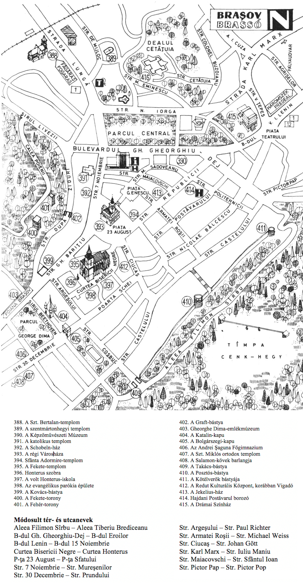
A város Brassó megye (județul Brașov) székhelye, a Barcaság medencéjének déli részén, védett katlanban, 550 m magasságban. Erdély legszebb fekvésű városa. A Cenk-hegy (Tâmpa) 400 méterre magaslik a város fölé. A várost építő szászok először az ó-brassói részen telepedtek meg és csak később húzódtak be a mai Belváros területére.
A város lakosságának száma 252 000. Fontos ipari központ. Emellett művelődési központ, iskolaváros, műszaki és erdészeti egyetemmel. Ezenkívül van állandó színháza, operája, operettszínháza, bábszínháza és hangversenyterme is.
A város neve, Brassó, bolgár–török eredetű, a vidék tehát a bolgár birodalom idejében is lakott hely volt. Szász neve Kronstadt. klasszicizálva: Corona. A Barcaság akkor szerepelt először az oklevelekben, amikor 1211-ben II. Endre a német lovagrendnek adományozta. Noha a király megtiltotta nekik, hogy kővárakat építsenek, a keresztesek felépítették Feketehalom, Brassó és Földvár kővárait, sőt a rend nagymestere pápai fennhatóság alatt függetleníteni akarta a területet a magyar koronától. Ezért a király 14 év múlva, 1225-ben a lovagokat fegyveres erővel kiűzte, az idetelepített német parasztok viszont itt maradhattak. A király kiváltságokkal halmozta el a szász telepeket, s ezek annyira megerősödtek, hogy a tatárjárást is átvészelték.
Nagy Lajos király idejére esik a város fénykora, ekkor árumegállító jogot kapott. 1395-ben pedig Zsigmond itt kötött szövetséget Mircea cel Bătrân havasalföldi fejedelemmel a törökök ellen.
A XV. században a legrégibb vár szétrombolásával kezdték meg a várost övező hatalmas falat építeni. 28 tornya és 7 bástyája volt. Kapui közül ma már csak a Katalin-kapu van meg.
A város már a XV. századtól kulturális központnak számít. 1496–1549 között élt a szászok nagy reformátora, Honterus János, aki az evangélikus vallást bevezette a városban. Brassói származású Bakfark (Greff) Bálint (1507–1576), a híres lantművész s itt működött Wagner Bálint (1510– 1557), a kiváló hellenista is. 1544-ben a szászoknak már gimnáziumuk volt, könyveiket saját nyomdájukban készítették. 1560 után a bolgárszegi Coresi diakonus nyomdájában 35 könyv jelent meg, eleinte ószláv nyelven, később románul, cirill betűkkel.
1524-ben épült a Fellegvár, amelyet 1630-ban Bethlen Gábor erősített meg.
A várost 1689-ben nagy tűzvész pusztította, mely a templom falait is feketére kormozta, ezóta nevezik „Fekete-templom”-nak. Caraffa császári tábornok ugyanis Brassóba német őrséget akart helyezni, de a szászok tiltakoztak ellene. Ezért a várost felgyújtatta és kiraboltatta. A város – szembefordulván a kurucokkal – a Rákóczi-korban is szenvedett. 1718– 19-ben és 1755–56-ban lakosságát pestis tizedelte meg.
Brassó mindenkor fontos, gazdag kereskedőváros volt. 1848 előtt a Havasalföldre, vagy onnan továbbmenő kereskedelem itt haladt át.
Az 1848–49-es szabadságharc idején Brassóból az osztrákok a Havasalföldre húzódtak. Bem tábornok gyorsan kiverte csapataikat, a honvédek elfoglalták a Fellegvárat. A várost ezután orosz csapatok ostromolták, védői csak hősi ellenállás után adták fel.
A XIX. században német és román nyelvű újságok jelentek meg Brassóban. A XX. században itt adták ki a magyar nyelvű „Brassói Lapok” című újságot, mely ma is létezik.
A Szent János utcában (str. Sfântul Ioan) áll a Szent János-templom, amelyen még középkori, gótikus elemek is vannak. A középkorban ez volt a domonkos apácák temploma.
A Piac tér / Piața Sfatului a falakkal övezett középkori Brassó piactere volt. Több műemlék jellegű épület szegélyezi, egykori kereskedőházak és vendégfogadók.
A Piac tér 14. számú épületében, az egykori Kereskedők házában (Árucsarnoknak is hívták) van a Kárpáti Szarvas (Cerbul Carpatin ) vendéglő.
Az épületet 1545-ben építtette Hirscher Lukács bíró, és az özvegye hagyta a városra. Az 1689. évi tűzvész idején megrongálódott, ezért a XIX. század közepén átépítették. Hatalmas pincéjében volt az Esterházy-pince nevű étterem. 1957-ben restaurálták. Belső udvara ugyanúgy, mint a Johann Gött utcai része árkádosított. A vendéglőnek eszpresszója, borozója és bárja van.
A Fekete-templomtól nyugatra vezet a Strada Gh. Barițiu, ahol a 12. számú ház udvarán van a szép arányú, görögkeleti St. Treime (Szentháromság)-templom. 1787-ben, II. József idején épült. A felirat szerint akkor 50 családból (245 főből) állt a hívők serege.
A Kovács-bástyától észak felé vezet a Várkert sétány (str. După Ziduri, szász neve Graft). Ez volt a kettős várfal közötti Zwinger, a gyilokjáró. Az utca vonalában egy kapubástya van, az utca fölötti Warte-dombon pedig két őrtorony.
Hosszú utca 251. sz./Str. Lungă 251
A Szt. Bertalan-templom 1250 táján készült gótikus stílusban. Később fallal vették körül. A háromhajós kereszthajós bazilika párkányzata és ablakai román stílusúak, a szentélyablakok azonban csúcsívesek. Tornyát 1842-ben újjá kellett építeni.
Körítő falának mentén a cinterem a brassói szászság érdekes temetője.
A templom mögötti hegyen középkori erődítmény nyomaira bukkantak. A templommal átellenben van a Bertalan-strand.
Bővebben lásd:
lexikon.adatbank.transindex.roa Fellegvár-hegy nyugati oldalában
A szentmártonhegyi templom eredetileg tiszta gótikus stílusú volt. Utoljára az evangélikus egyház birtokában volt, múzeum lett, aztán újra templomként működik.
A templom körül van a régi temető.
Bővebben lásd:
lexikon.adatbank.transindex.roHősök sugárút 21. sz./Bulevardul Eroilor nr. 21
A Képzőművészeti Múzeum nyolc termében 200 alkotás látható, köztük N. Grigorescu 36 képe. Itt kaptak helyet a brassói román, szász és magyar művészek alkotásai is.
Kolostor utca 19. sz./Str. Mureşenilor nr. 19
A katolikus templom gazdag díszítésű, barokk alkotás 1782-ből. Homlokzata igen mozgalmas, bolthajtásai belül geometrikus és virágmotívumokkal vannak kifestve.
Bővebben lásd:
lexikon.adatbank.transindex.roKolostor utca 9. sz./Str. Mureşenilor nr. 9
A Schobeln-ház legkorábbi részlete, a torony a XV. századból való. A régi szász polgárházon a XVIII. századig követhetők a különféle korú átépítések stílusváltozásai. Néhány ajtaját és ablakát gyönyörű reneszánsz faragás díszíti.
Főtér 30. sz./Piaţa Sfatului nr. 30
A régi Városháza eredetileg a céhek tanácsának székháza volt. Építésével kapcsolatosan az első oklevél 1420-ból maradt fenn. 1515 és 1528 között kibővítették. Ekkor gótikus stílusú volt, 1770 és 1774 között azonban ismét átépítették, barokk stílusban. Jelenleg is ezt a formáját őrzi. Tornya 58 m magas. 1525 és 1528 között épült s eredetileg az épülettől távolabb állt. A Városháza homlokzatán ma is látható a koronaváros címere. A címer a királyi koronát ábrázolja, melyből gyökerek nőnek ki. 1979-ben gondosan restaurálták.
Az épület a Megyei Múzeum történelmi részlegének otthona. Termeiben régészeti, közép- és jelenkori történelmi anyagot állítottak ki.
Bővebben lásd:
lexikon.adatbank.transindex.roa régi Városháza háta mögött
Bizánci stílusban, reneszánsz elemekkel épült 1895–96-ban egy régi kápolna helyére. 1898-ban Miron Romanul metropolita szentelte fel.
Freskóit 1935–36-ban Damian készítette. Az ikonosztáz J. Kupstay műve. Reneszánsz ikonjai H. Bulhard és A. Demian művészi munkái. A főpapi stallum, ezüst nagy Mária-ikon, Szt. Paraschiva képe látványosak.
Bővebben lásd:
lexikon.adatbank.transindex.roJohannes Honterus udvar/Curtea Johannes Honterus
A Fekete-templom a terecske közepén áll. Ez a legnagyobb erdélyi templom s egyben az európai gótika legkeletebbre eső, nagy alkotása. A XVI. század óta evangélikus templom.
1383-ban kezdték építeni egy korábbi román stílusú templom helyén, és száz évre rá fejezték be. Az 1689. évi Caraffa-dúlás tűzvészében feketedtek meg falai. Ekkor omlott be régi boltozata is, ezért 1710 és 1772 között át kellett építeni. Így kerültek addigi gótikus, itt-ott reneszánsz stílusába a barokkos elemek. 1969 óta restaurálják.
A templom 88 m hosszú és 23 m széles. A nyugati homlokzatára tervezett két toronyból csak az egyik készült el, ez 65 m magas. A templom 21 m magas oldalfalait tornyocskákban végződő támpillérek tagolják, közöttük nagy mérműves ablakok vannak. Öt kapuja közül a bélletes nyugati kapu a legszebb. A déli kapu fölött reneszánsz kori freskó látható, Mátyás és Beatrix címerével. A freskó Szűz Máriát ábrázolja a kis Jézussal, szentek társaságában.
Maguk a tölgyfa kapuk is eredetiek. A templom külső szobrait az idők során többször is felújították.
A csarnoktemplom három egyenlő magas hajóból áll. A három hajót öt nyolcszögletes pillérpár választja el egymástól. Szentélye három pár pillérével hármas csarnokot alkotó, körüljárós szentély. Az oltár 1866-ban készült, a mellékhajók karzatai pedig 1710–14 között. A templom kincsei közé tartozik az 1472-ből származó bronz keresztelőmedence, valamint 119 db keleti szőnyeg, a város kereskedőinek fogadalmi ajándékai. A torony harangja 6 tonna súlyú. A templomban hangversenyeket rendeznek, 1839-ben épült orgonájának 4000 sípja és 76 regisztere van.
Előcsarnokában múzeum jellegű kiállítás látható.
Bővebben lásd:
lexikon.adatbank.transindex.roa Fekete-templom déli oldalán
Honterus szobrát 1848-ban állították a város polgárai. Johannes Honterus (1498–1549) humanista tudós, vallásreformátor, iskolaszervező s európai hírű térképtudós volt. 1532-ben készítette el Erdély térképét, 1535-ben nyomdát s hozzá papírgyárat is létesített. A 2,5 m magas bronzszobrot Harro Magnussen készítette. Oldalán a domborművek Honterus életéből vett jeleneteket ábrázolnak.
Bővebben lásd:
lexikon.adatbank.transindex.roa Johannes Honterus udvar/Curtea Johannes Honterus déli részén
A volt Honterus-iskola, a szászok híres gimnáziuma, 1545-ben épült, de az 1689. évi tűzvész, majd az 1783. évi földrengés után újjá kellett építeni. Háromszintes iskola, szép auditóriummal.
a Johannes Honterus udvar/Curtea Johannes Honterus déli része
Az evangélikus parókia épülete középkori eredetű, akkor a Corpus Christi-rend kolostora volt. A háromszintes épületen a barokkig bezáróan minden stíluselem felfedezhető. Hangulatos udvara van.
George Barițiu utca 34. sz./Strada George Barițiu nr. 34
A Kovács-bástya a XVI. század elején épült, az északnyugati városfal sarkának védelmére. Háromszintes építmény, ötszögletű alappal.
Jelenleg az Állami Levéltár otthona.
Bővebben lásd:
Wikipédiaa Warte-dombon
A Fekete-torony 9 m magas, zömök építmény, falai 2 m vastagok. A XV. században épült. 1599-ben villámcsapástól teteje leégett. Fala is ekkor feketedett meg a tűztől. Azóta romosan áll.
Bővebben lásd:
Wikipédiaa Warte-dombon
A Fehér-torony 1460 és 1494 között épült. Alapja félkör alakú, 1689-ben ez is kiégett, de 1723-ban restaurálták.
Bővebben lásd:
WikipédiaVárkert sétány/Str. După Ziduri
A Graft-bástya vagy a Graft-kapu az átjárást biztosította egy felvonóhíddal a Fehértoronyhoz. 1515–21 között épült bele a várfalba. Négyszögletes alaprajzú, s bolthajtása alatt folyik át a Graft-patak vize.
Bővebben lásd:
WikipédiaGheorghe Dima utca 4. sz./Str. Gheorghe Dima nr. 4
Gheorghe Dima (1847–1925) híres román zeneszerző és karmester volt. A múzeumban személyes tárgyai s pályafutásának dokumentumai látható.
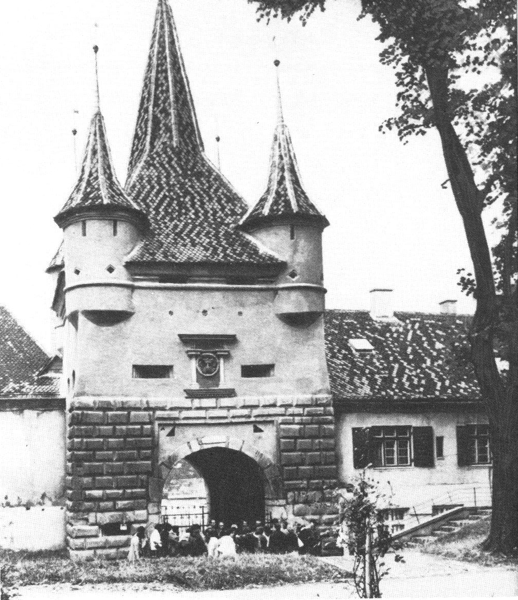
Beethoven sor/Șirul Beethoven
A Katalin-kapu a város nyugati kaputornya volt. A XVI. században épült. Négyszögletes, háromszintes építmény négy saroktoronnyal, homlokzatán törésekkel. A bejárat fölött Brassó címere látható.
Bővebben lásd:
WikipédiaÁrvaház utca/Str. Poarta Schei végén
A Bolgárszegi-kapu a Katalin-kaputól nem messzire áll. Soha nem tartozott a várövezethez, jóval fiatalabb is, 1827–28-ban épült, háromnyílású, klasszicista diadalkapu.
Itt kezdődik a Bolgárszeg (Schei), a régi Brassó román negyede. Zegzugos utcái messze bevezetnek a Salamon-kövek szurdokába. Eredetileg bolgár település volt, 1392 táján jöttek ide a bolgárok, majd macedón kereskedők és románok követték őket. Az itteni román negyednek a XIV. század végén már egy fatemploma volt.
Bővebben lásd:
WikipédiaAndrei Șaguna utca/Str. Andrei Șaguna 1
Az Andrei Șaguna Főgimnazium eklektikus épületében működött a román kereskedők áldozatkészségéből 1850-ben alapított, s 1853-ban megnyitott régi görögkeleti román főgimnázium.
Tanítványai közül Șt. O. Josif, Gh. Barițiu, Lucian Blaga, Octavian Goga, Titu Maiorescu, Ion Bogdan nevét kell megemlíteni. Kiváló tanárai voltak: Mișu Pop, Aurel Ciortea, Gheorghe Dima, Ciprian Porumbescu, Iacob Mureșeanu stb.
Az épület falán Aurel Vlaicu emléktáblája látható. A román aviatika úttörője is az intézet növendéke volt.
Bővebben lásd:
Wikipédiaa Porond tér/Piața Unirii parkjában
A Szt. Miklós ortodox templom helyén 1393-ban már állott egy fatemplom. 1495-ben Vlad Călugărul havasalföldi vajda adománya segítségével kőtemplomot kezdtek építeni, majd 1519 és 1521 között kibővítették Neagoe Basarab havasalföldi fejedelem támogatásával. 1594-ben Aron Vodă moldvai fejedelem freskókkal díszítette falait. 1751-ben újjáépítették, s ekkor kapta nagy harangtornyát. Stílusában a bizáncias havasalföldin kívül gótikus, reneszánsz és barokk elemek is láthatók. Szép ikonjai vannak, és a XIX. században Mișu Pop (1827–92) brassói művész falait újrafestette.
A templom udvarában álló épületben volt a régi román iskola.
1597-ben épült egy régebbi faépület helyébe Aron Vodă moldvai fejedelem adományából. 1760-ban ezt is átalakították. Az iskolában 1559 előtt ószláv, ettől kezdve román nyelven oktattak. Itt működött a XVI. századtól Coresi híres nyomdája is. Ma múzeum van benne.
A tér déli részéből a Strada Comuna din Paris – Párizsi Kommün utcája vezet délnek.
Bővebben lásd:
lexikon.adatbank.transindex.roA Salamon-kövek barlangja Bolgárszeg legdélibb részén, a Salamon-kövek (Pietrele lui Solomon) szurdokában, a sziklacsoport aljában van. Helyi népmonda szerint itt remetéskedett Salamon király, miután I. Lászlótól vereséget szenvedett.
Gh. Coşbuc utca 9. sz./Str. Gh. Coșbuc 9
A Takács-bástya két részben épült. Egyik részét 1421 és 1436, másikat 1570 és 1573 között építették. 1750-ben helyreállították s azóta 1910-benés 1950-ben restaurálták. A hatszögletes bástya falai 4–4,5 m vastagok.
Most Brassó Vártörténeti Múzeumának otthona. Itt látható a középkori Brassó freskóképe, modellje s a lapidáriumban sok helyi építészeti emlék.
A Takács-bástyától az Aleea Tiberiu Brediceanu vezet a Cenk lábánál. A sétány aljában húzódik a várfal 920 m hosszú, épen maradt része. A sétány közepénél van a Cenkre vezető drótkötélpálya alsó állomása.
Bővebben lásd:
Wikipédiaa drótkötélpálya állomásánál, a sétány másik oldalán
A Posztós-bástya 1450 és 1455 között épült, háromszintes épület. Ellipszis alapú, 13 m magas, s tetején még látható a gyilokjáró gerendáinak helye a falban.
A Posztós-bástya közelében a várlépcső átvezet a várfalon, a Belvárosba.
Bővebben lásd:
Wikipédiaa fal és egyben a sétány túlsó végén
A Kötélverők bástyája 1416-ban már megvolt. 1641-ben leégett, s 1689-ben a kötélverők céhe építtette fel. Hatszögletű, 12 m magas, erős építmény. A közelben, a Vár utca 64. szám udvarán (Str. Castelului) van a felújításra váró oroszlánkapus régi zsinagógaépület.
Innen vagy a várlépcsőn, Gh. Coșbuc utcán visszatérünk a Belvárosba.
Bővebben lásd:
WikipédiaApollonia Hirscher utca 8. sz,/Str. Apollonia Hirscher nr. 8.
A Redut Kulturális Központ, korábban Vigadó reprezentatív épület, homlokzatát hét mellszobor díszíti. Szomszédságában áll a város bábszínháza.
Bővebben lásd:
WikipédiaKapu utca 17. sz./Str. Republicii nr. 17
A Jekelius-ház egyike Brassó legrégibb épületeinek. Egy hajdani cisztercita kolostor helyén áll.
A szemben levő (20. sz.) ház homlokzatán levő freskó Hirscher Apollóniát, az egykori városbíró nejét ábrázolja.
Bővebben lásd:
WikipédiaKapu utca 55. sz./Str. Republicii nr. 55
Hajdani Postăvarul borozó közkedvelt idegenforgalmi találkozóhely volt. Jelenleg a Taverna Sârbului van a helyén.
Színház tér 1. sz./Piața Teatrului 1.
A Drámai Színház egyben az operaelőadások színháza is. Nyugodt vonalú, eklektikus épület, klasszicizáló oszlopsorral. Keleti oldalán áll Andrei Mureșanu (1816–63) költő szobra.
Bővebben lásd:
WikipédiaA Fellegvárat 1524-ben építették, hogy északról védje a várost. 1630-ban Bethlen Gábor bővíttette ki. 1849-ben, midőn a 28 000 főnyi cári sereg ostrom alá fogta a várat védő 200 honvédet, nagyon megrongálódott. A vár mellől szép kilátás nyílik a városra.
A Fellegvártól északra levő Egyetemi-dombon (Colina universitară) a Stebian Catina és társai tervezte új egyetemi épületek alkotnak együttest.
Bővebben lásd:
WikipédiaSzabaság utca 8. sz./str. Libertății nr. 8
A keresztényfalvi erődtemplom a XIII. században épült. A szép bélletes, félköríves kapu mutatja a torony román kori eredetét. A templomot 1839–41 között klasszicista stílusban építették. Kettős várfal veszi körül, s erődítményrendszerének kilenc tornya van.
Bővebben lásd:
Wikipédiaa város fölé emelkedő 150 m magas sziklán
Barcarozsnyó parasztvára a XIV. században egy német lovagrendi vár helyére épült. A környék menedékvára volt. Bejáratát torony védi s előudvarából a kör alakú bástya és a mögötte levő torony alatti kapun lehet belső udvarába átmenni. A várat utoljára a XVIII. században bővítették. Ekkor fúrták 150 m mély kútját is. Ma a vár ép helyiségeiben múzeum van.
Elsőrendű látványosság, pompás kilátással a városra és a környező havasokra.
Republicii utca 1. sz./str. Republicii nr. 1
Bracarozsnyó evangélikus temploma XIII. századi, háromhajós bazilika. Szentélyének boltozata a XIV. századból való. Értékes eredeti freskói 1500 tájáról származnak és reneszánsz hatásra vallanak.
Cristoloveanu Romulus utca 14. sz./Str. Cristoloveanu Romulus nr. 14
A barcarozsnyói ortodox templomot a XIV. században a havasalföldi fejedelem segítségével építették. A XVII. században Vitéz Mihály restauráltatta. Freskói érdekesek.
Törcsvár/Bran
A törcsvári várkastély 1377-ben épült, a fontos kereskedelmi út ellenőrzésére. 1498-ban II. Ulászló zálogba adta, II. Rákóczi György eladta Brassónak. A nehezen bevehető várak közé tartozott. Brassó előbb az utolsó magyar király, IV. Károly koronázásakor (1916) Zita királynőnek, majd 1918 után Mária román királynőnek ajánlotta fel, aki igen szépen, romantikus kiegészítésekkel restauráltatta, s kedvenc tartózkodási helye volt. Ma múzeum van benne, mellette pedig egy kis falumúzeum (skanzen) látható.
Bővebben lásd:
Wikipédiaa község közepén
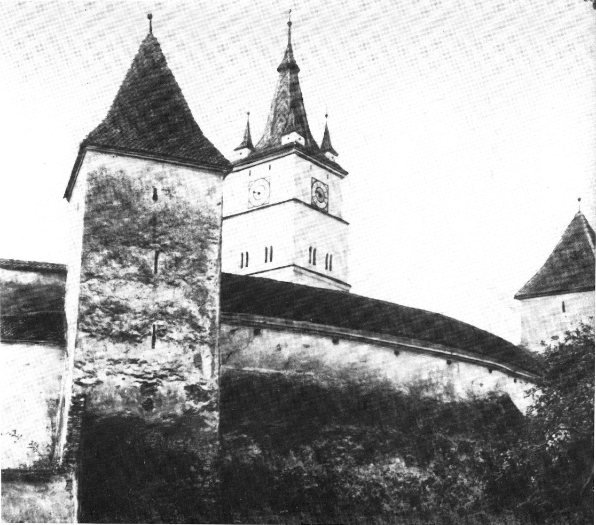
A szászhermányi erődtemplom a XIII. században épült, román stílusban, és a XV. században átalakították. Ennek során tornyát vártoronnyá formálták és a templomot fallal vették körül. Fala 12 m magas és 8 torony védi. Az evangélikus egyházé.
Bővebben lásd:
Wikipédiaa község főterén
A prázsmári erődtemplom XIII. századi eredetű és a XV. században erődítették. A kereszt alaprajzú templom a kerci ciszterci műhely legszebb alkotása, várfal-rendszere még a szászhermányinál is nagyobb. Ez Erdély legnagyobb erődtemploma. Az evangélikus egyházé.
Bővebben lásd:
WikipédiaA Cenk-hegy-re (Tâmpa, Zinne) a Tiberiu Brediceanu sétánynál említett drótkötélpálya állomásáról mehetünk fel. Turistautak is vezetnek fel. A tetőn állt hajdan Brassovia vára. A XIV. században bontották le. A kilátás gyönyörű.
Itt állt 1896–1919 között a dévényi ezredéves emlékmű keleti párja. Az 1916. évi hadműveletek áldozata lett.
Brassó-Pojána (Poiana Brașov) turistaközpont, A Warte-dombon átvezető úton a városból autóbusz visz fel. Erdély egyik legnagyobb téli sporttelepe 1020 m magasan fekszik a Postăvarul (Keresztény-havas) 1804 méteres csúcsa alatt. Van több lesiklópályája, bobpályája, műjégpályája, vendéglője, büféje, sportpályája, kempingje. Nyáron fürödni is lehet a kis tóban. A Pojanáról drótkötélpálya visz fel a Keresztény-havasra.
Brassót a Hosszú/Lungă utcán hagyjuk el és a 73. számú úton megyünk tovább.
Keresztényfalva (Cristian, Neustadt) tűzállókerámia-üzeméről ismert.
Barcarozsnyó (Râșnov, Rosenau) gépgyártása és vegyipara jelentős. Már a rómaiak is megtelepedtek itt, Comidavának nevezték.
Újtohán (Tohanul Nou), majd Törcsvár (Bran, Törzburg) következik
Ótohán (Tohanul Vechi) mellett verte meg 1690-ben Thököly Imre Heister generálist. Zernest (Zărnești ) ortodox temploma 1515-ből származik. Zernest fölött merednek a Király-kő szirtjei, klasszikus sziklamászó terep. Itt van a Propásta-szakadék.
Brassót a Bukaresti úton/Calea Bucureştilor-on hagyjuk el és az 1. sz. úton megyünk tovább.
Alsótömös (Timişul-de-Jos) turistaháza alkalmas kiindulópont a környék túráihoz. 1849. júniusában Kis Sándor ezredes 1500 székely katonája az utolsó emberig védte a szorost a cári sereg ellenében.
Felsőtömös (Timișul-de-Sus) turistaházától indulhatunk az 1070 m magasan található menedékházhoz, amely 1070 m magasan van.
Brassóból a 11. úton megyünk tovább.
Szászhermány (Hărman, Honigberg) a műúttól kissé távolabb fekszik. Közelében van egy védett láp.
Szászhermány után a 10. számú úton megyünk tovább Prázsmár (Prejmer, Tartlau) községbe.
Keresztvár (Teliu) községnél elhagyjuk a 10. számú utat és délnyugatra térünk.
Bodola (Budilă) a község fölött állott a XIII. század eleje óta a Béldyek vára, amelyet Béldy Pálnak (1622–79), Apafi tanácsadójának elítélésekor 1678-ban leromboltattak. A katolikus templomban a domborműves kőszarkofág valószínűleg Béldy Kelemen síremléke.
Szecseleváros (Săcele) 12 km hosszú település. Tulajdonképpen a barcasági csángók hét falujának négy falujából alakult. A négy település: Bácsfalu, Türkös, Csernátfalu és Hosszúfalu. A több mint 30 700 lakosú városnak fejlett elektrotechnikai, bútor-, élelmiszeripara és gépgyártása van.
A hétfalusi csángók egy része a brassói szászok jobbágya volt, evangélikus vallásúak. Sokat szenvedtek a szászok elnyomásától.
Cím: Prundului utca 1. sz.
Telefon: +40-727-833101
A Maros völgyéből Tövistől a 14B útvonalat követjük kelet felé és a vasútvonallal párhuzamosan haladunk a Küküllő mentén. Az út rendkívül kanyargós, sok helyen suvadásos.
Balázsfalva (Blaj) a Küküllő völgyében fekszik, szőlő- és gyümölcstermő vidéken, 257 m magasan. Lakosainak száma több mint 11 900. Nagy román iskolaváros és kultúrközpont.
Nevét Cséry Balázsról kapta, akinek Zsigmond király adományozta. Sok birtokosa volt, végül az Apafiaké lett. A fejedelmi kastély III. Károly adományaként a görögkatolikus püspök székhelye lett. 1853 óta érsekség.
1738 óta a görögkatolikus román egyház kultúrközpontja. Nyomdája 1747-ben létesült, 1749-ben építették fel a székesegyházat. Híres iskoláiban nevelkedtek az erdélyi román értelmiség legjobbjai. Itt működött az Erdélyi iskola néven ismert írócsoport három tagja: Samuil Micu (1745–1805), Gheorghe Șincai (1745–1816) és Petru Maior (1760–1821). 1848-ban Avram Iancu és Papiu Ilarian itt fogalmazták meg a jobbágyság eltörlésére és a románok nemzeti jogainak elismerésére vonatkozó követeléseiket. A román népgyűlés emlékét őrzi a Szabadságmező (Câmpul Libertății) obeliszkje. A város temetőjében sok híres ember nyugszik. Pl. A. Bunea (1857–1909) történész, T. Cipariu (1805–1887) nyelvész, Axente Sever (1821–1906) politikus stb.
A városból a Kis-Küküllő déli partján megyünk tovább.
Küküllővár (Cetatea-de-Baltă, Kockelburg) hajdan Küküllő megye székhelye volt. A középkorban mocsárvár védte. A helységet a XV. században Ștefan cel Mare moldvai fejedelem kapta meg adományként Mátyás királytól, miként Csicsót is. Petru Rareștől Szapolyai visszavette, és feleségének, Izabellának adta. A községnek XIII. századi eredetű, gótikus stílusú református temploma van.
Ádámos (Adamuș) községben több régi udvarházat találunk.
Dicsőszentmárton (Târnăveni) 22 300 lakosú város. XIV. századi unitárius templomának alakos díszítésű, 98 kazettás mennyezete 1769-ben készült. A torony a hajó tengelyében áll, zömök, hosszú lőrésekkel, pillérek támogatják. A bejárat a torony elején van. A sisak formás, bár sajnos bádoggal van fedve. A templom védett műemlék.
A város szülötte Sipos Domokos (1892–1927) író, az Erdélyi Helikon tagja. Fiatalon halt meg, tüdőbajban, szülőhelyén temették el.
Vámosgálfalva (Gănești) mellett verte meg Bem tábornok 1849. január 17-én az osztrák csapatokat. Határában teremnek a legjobb küküllői borok.
Ezután Balavásár (Bălăușeri) következik, a székelyvidék peremén vagyunk. Itt dél felé Segesvárra vezet az elágazás.
Gyulakuta (Fântânele) XIV. századi, gótikus református templomának kazettás mennyezetét az erdélyi fejedelem festője, Mezőbándi Egerházi János készítette (1625).
Csókfalva (Cioc) unitárius temploma 17925–98-ban épült. Jellegzetes XVIII. század végi, puritán építmény, jó arányokkal, kecses toronnyal, hegyes toronysisakkal. Barokk stílusú éneklőszék- (pulpitus-) töredék a régi felszerelés emléke. A templomot fal köríti, előtte turulos hősi emlékmű áll.
Erdőszentgyörgy (Sângeorgiul-de-Pădure) községben áll a Rhédeyek egykori barokk kastélya. A gótikus református templom emléktáblája szerint itt született Rhédey Claudina grófné, Mary angol királynénak, V. György feleségének a nagyanyja.
Szováta (Sovata) híres fürdőhely a Mező-havas alján, 520 m magasságban. A vidéken már a rómaiak is sót bányásztak. A gyógyfürdőt a XVI. században említik először az oklevelek. A tavak vizének sótartalma igen nagy, és rétegenként változik.
Szovátáról a 13A jelzésű úton megyünk tovább délkelet felé.
Parajd (Praid) nagy sóbányájáról és sós fürdőiről nevezetes község. Sóbányáit már a rómaiak is művelték.
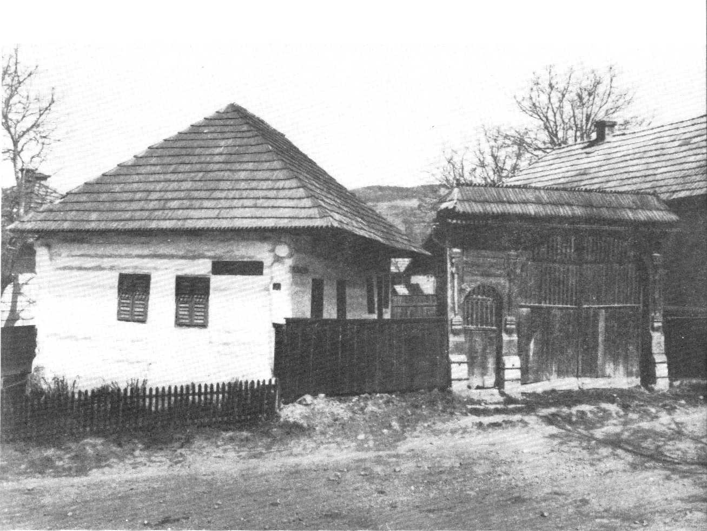
Korond (Corund) község Árcsó nevű vasas–kénes fürdőjéről és főleg fazekasságáról híres. Fazekas szövetkezetében gyönyörű korsókat, tálakat készítenek és alabástrom tárgyakat faragnak. Fazekasmúzeumában vásárolni is lehet. Híres fazekasmesterek vannak a szomszédos (magas hegyen települt) Szolokmán is. A községben faragott székelykapuk is láthatók. Katolikus és unitárius templomait érdemes megtekinteni. A község mellett motel van.
Korondtól nyugatra van az 1062 m magas Firtos-hegy.
Korond után leereszkedünk a Fehér-Nyikó völgyébe.
Farkaslaka (Lupeni) faluban született Tamási Áron (1897–1966) író.
Szentlélek (Bisericani) katolikus temploma szép arányú, gótikus épület.
Szejkefürdő (Seiche) a székelyudvarhelyiek kedvenc üdülőhelye, 504 m magasan fekszik. Gyógyvizét 1766 óta ismerik: bőrbetegségeket, sebeket gyógyít. Á záptojásszagú gyógyláp kéntejes vizét kádakba vezetik, de van medence is. A borvízforrás vizét korsókban a városba szállítják. A szejkei gyógyvizek reumát, bőrbetegségeket, gyomorbántalmakat, reumatikus betegségeket stb. gyógyítanak. Mozgásszervi betegségek ellen is javasolják. A fürdő bejáratánál régi székelykapuk egész gyűjteménye látható.
Petru Pavel Aron u. 1. sz./Str. Petru Pavel Aron nr. 1
A balázsfalvi Apafi-kastély, később görögkatolikus érseki palota, hajdan Apafi Mihály fejedelem kastélya volt. XVI. századi eredetű. Itt kötötte meg Lotharingiai Károly az erdélyi országgyűlés küldöttségével a balázsfalvi egyezséget 1687-ben. Erdély ennek értelmében került Habsburg-fennhatóság alá.
Az épületben a görögkatolikus érsekség és vallás megszüntetése után múzeum működött, 1990 után visszaszolgáltatták a görögkatolikus egyháznak és újra itt székel az érsekség.
Bővebben lásd:
www.muemlekem.hu1848 tér 2. sz./Piaţa 1848 nr. 2
Görögkatolikus érseki székesegyház három tornyú, impozáns épület Balázsfalva főterén. 1738 és 1765 között épült, barokk stílusban, Anton Eckhardt Martinelli terve szerint. 1799-ben restaurálták, 1837-ben pedig kibővítették. Ikonosztáza igen szép.
1848 tér 1. sz./Piața 1848 nr. 1
A balázsfalvi Szentháromság-kolostor XVIII. századi épület. Itt működött a román „Școala de obște” tanítóképző, mely sok román vezetőt nevelt. Jelenleg a Görögkatolikus Teológiai Intézet és Könyvtár működik benne.
Bővebben lásd:
www.bcucluj.roMănăștirea Bunavestirii, Petru Pavel Aron u./Str. Petru Pavel Aron
A balázsfalvi Angyali üdvözlet-kolostor 1750-ben épült. Itt működött a híres balázsfalvi román nyomda. Jelenleg a Timotei Cipariu Dokumentum könyvtár működik benne.
A bethlenszentmiklósi Bethlen-kastélyt Bethlen Miklós (1642–1717) saját maga tervezte és építtette 1668 és 1672 között, reneszánsz stílusban.
A velencei emlékek alapján épült kastély négyszögletes, egy tömbből álló, emeletes és tipikusan erdélyi építmény. Régen védőfalak és sarokbástyák vették körül. 1760-ban, barokk stílusban újították meg.
Bővebben lásd:
WikipédiaA küküllővári kastély a XVI. század elején épült, a kora középkori mocsárvár pótlására. A század második felében átépítették s ekkor kapta hengeres, négy sarokbástyáját. Bethlen István késő reneszánsz stílusban alakíttatta át.
Az ádámosi unitárius templom védett műemlék. Építését a XV–XVI. századra teszik. Késő gótikus stílusú és kora reneszánsz elemeket is tartalmazó építmény. Magas tornyán a bejárat felett lőrések láthatók, tetején védőfolyosó van, hegyes sisakja nyolcszögű. A magas hajóépület oldalán homlokzati porticus van, gótikus nyílásokkal. A templom monumentalitását emelik a sarokpillérek.
Famennyezetén 1526-ból származó festett díszítés volt látható, amelyet 1694-ben restauráltak. (A mennyezetet a budapesti Néprajzi Múzeum őrzi.) Szentélyében régi, faragott stallumok állnak.
Bővebben lásd:
Énlaka/Inlăceni
Az énlakai unitárius templom a XV. században épült. Késő gótikus boltozata a 1661. évi tatárjáráskor beomlott, s azt helyettesítették a 87 kazettás deszkamennyezettel. Ennek egyik négyzetében van Musnai és a lelkész neve 1668-ból. Az orgona csúcsa előtt képes mezőben látható az a kétsoros felirat, melyet néhány gótikus kisbetűn kívül székely rovásírással írtak: „Georgyius Musnai csak egy az Isten.”
Bővebben lásd:
udvarhelyszek.eloerdely.roA szovátai fürdőnek öt sós tava van: a Medve-tó, a Mogyorósi-tó, a Fekete-tó, a Veres-tó és a Zöld-tó. A tavak sótartalma annyira tömény, hogy a fürdőző valósággal lebeg a vizében. A gyógyvíz reumatikus és női betegségeket gyógyít. A Fekete- és a Veres-tónak az iszapja is gyógyhatású.
Szováta város múzeumának régészeti, történelmi és néprajzi gyűjteménye van.
A parajdi sószikla a sóbánya fölött áll. Az üledékes sótömbről lekopott a felső talajréteg, egyedülálló látvány az eróziótól barázdált hatalmas sószirt. Érdekes látványosság a sóbánya, melyben léggyógyfürdő is van.
Parajdról a Kis-Küküllő völgyében a Görgényi-havasokon (Munții Gurghiului) át Gyergyószentmiklósra is mehetünk. A Bucsin-tetőn keresztül vezet az út, gyönyörű tájon. A Bucsin-tetőn vendéglő és turistaház van. Festői hegyvidéki útvonal, főleg a Gyilkos-tó megközelítésére alkalmas.
Firtos várának romja a Firtos-csúcson van. Sok népi hiedelem fűződik hozzá, amelyeknek központjában a Firtos nevű jó tündér és a Tartod nevű gonosz tündér harca áll. A vár középkori eredetű, később a ferencesek kolostorrá alakították, de a XVIII. században elhagyták.
Bővebben lásd:
Wikipédia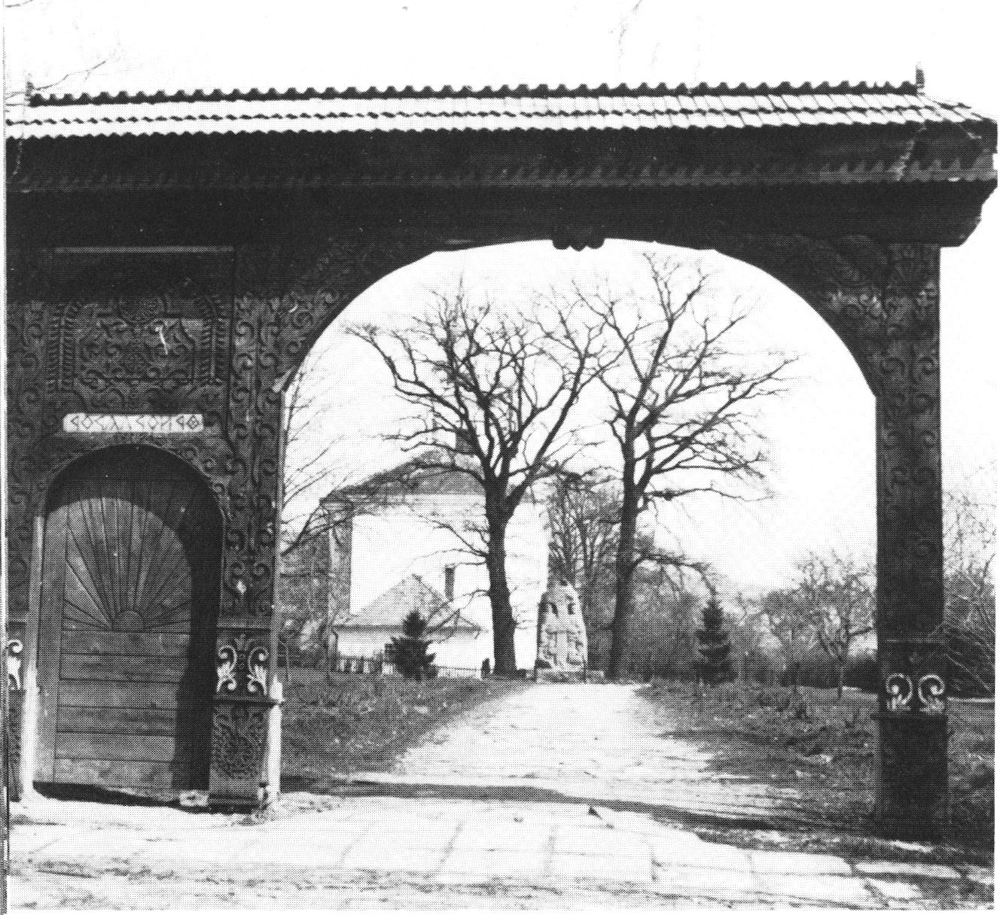
Tamási Áron emlékműve Farkaslaka szélén levő templom szentélye mögött van felállítva és az országútról egy nagy székelykapu vezet hozzá. A síremléket egyetlen kvarcittömbből Szervátiusz Jenő és Tibor faragta, s 1972-ben avatták fel.
Tamási sírja az emlékmű után van öreg tölgyek között.
Nagy utca 238. sz, Farkaslaka
Tamási Áron szülőházát múzeumnak rendezték be, ahol az író személyes tárgyai, pályafutásának emlékei láthatók. Az írónak a házban lakó öccse, Tamási Gáspár – aki egyébként szintén kiváló író (közismert műve: „Vadon nőtt gyöngyvirág”) – a múzeum vezetője és gondnoka.
A Tamási-emlékház a falu túlsó végén, egy kis közben van.
Bővebben lásd:
www.hrmuzeum.roOrbán Balázs sírját Szelykefürdőn a műúttól nem messze, kettős kopjafa jelzi. A sírkövön bronz dombormű van. A síremléket Orbán Áron székelyudvarhelyi szobrászművész készítette. 1921-ben a düledező kriptából ide helyezték Székelyföld nagy fiának hamvait. Ekkor még kerítéssel övezett, egyetlen fából faragott kopjafa volt a síron.
Az író szerény lakóháza a szomszédos Lengyelfalván volt; a nép „szegény bárónak” becézte önzetlen egyszerűségéért.
Orbán Balázs (1830–90) a Székelyföld híres monográfiájának, a „Székelyföld leírása” című hatkötetes műnek írója itt élt és itt írta meg műve nagy részét. Bár Budapesten halt meg, kívánságára itt temették el. Ahogy Széchenyit a „legnagyobb magyar”-nak, úgy Orbán Balázst a „legnagyobb székely”-nek nevezik. Életműve mai napig a Székelyföld pótolhatatlan adattára; ezen könyv írásánál sem nélkülözhettük.
Bővebben lásd:
www.kozterkep.huBalázsfalva után kitérőt tehetünk balkéz felé, a folyó túlsó partjára. Bethlenszentmiklós (Sânmiclăuș) a Kis-Küküllő északi partján fekszik. XIV. századi unitárius temploma van. Tornya zömök, bástyaszerű lőrésekkel, fenn fából épített védőfolyosóval. A toronysisak arányos, szép formájú, fiatornyok nélküli. A tornyot és a hajó sarkait hatalmas fedett támaszoszlopok erősítik. Porticusa fából van. Az egész építmény a szász templomokra hasonlít.
Dicsőszentmártontól délre Magyarsáros (Delenii) nevezetessége az 1699-ben épült unitárius harangláb védett műemlék, mely 1699-ben épült. Klasszikusan szép népi alkotás, arányos, finom részletekkel. Alsó építménye magas zsindelytetővel meredeken fedett, e felett kiugrik a díszített kivágású mellvédes folyosó, megkoronázva az ugyancsak zsindelyes sisakkal.
Héderfája községtől kitérhetünk dél felé.
Bonyha (Bahnea) községben állt a Bethlenek egykori kastélya. Lebontották. A református templom a XIV. század gótikus alkotása.
Gyulakutától délkeletre letérhetünk Rava (Roua) unitárius temploma kedvéért. Középkori eredetű, bástyaszerű, lőréses tornya a hajó tengelyében áll. A hajó 1805-ben épült, s a torony alig emelkedik ki belőle. Nagy támpillérei, a torony porticusa, kör alakú „óranyílásai” igen régies külsőt kölcsönöznek az építménynek.
Erdőszentgyörgyről észak felé összekötő út van Nyárádszereda vidékére (a Nyárád völgyébe).
Énlaka (Inlăceni) a Firtos-hegy nyugati lejtőjén fekszik. Közelében római tábor maradványait tárták fel.
Parajdról a Kis-Küküllő völgyében a Görgényi-havasokon (Munții Gurghiului) át Gyergyószentmiklósra is mehetünk. A Bucsin-tetőn keresztül vezet az út, gyönyörű tájon. Festői hegyvidéki útvonal, főleg a Gyilkos-tó megközelítésére alkalmas.
Megyei jogú város, a Hargitán inneni székelység központja. Lakossága 34 200 fő. Évszázadok óta fontos iskolaváros.
Környéke ősidők óta lakott, nyoma maradt a dák, és a római kultúrának is. Udvard várát azonban csak 1301-ben említik az oklevelek, mint a székely ispánok, alispánok és főkapitányok lakóhelyét. 1357-ben székely nemzetgyűlést tartottak itt, 1485-ben Mátyás király mezővárosi rangot adott a településnek, mely 1613-ban Bethlen Gábortól kapta a Székelyudvar elnevezést. 1505-tól itt működött a 17 tagból álló főtörvényszék. A XVII. és XVIII. században többször is tartottak a városban országgyűlést.
A székelyek az idők során mindannyiszor fegyvert ragadtak, ha szabadságjogaikat veszélyeztetve érezték. Így történt ez 1599-ben is, mikor Vitéz Mihály mellé álltak a Báthoriaktól elszenvedett jogtalanságok miatt. 1602-ben Basta martalócai felégették a várost.
Mivel a város nem hódolt be Apafi fejedelemnek, 1661-ben a törökök elpusztították. A XVIII. században osztrák sarcolások sújtották és járványok tizedelték meg lakosságát. Az 1848–49. évi szabadságharcban való részvétel miatt sarcot vetettek ki rá, és kollégiumának két tanárát elhurcolták. 1876-ban az akkor alakult Udvarhely megye székhelye lett.
A városban élt Tompa László (1883–1964) költő. Itt is temették el. Itt dolgozott Bányai János geológus, tanár, a Székelyföldet, és népét ismertető forrásmű a „Székelység” című lap kiadója. A város szülötte Márton Lajos (1891–1953) grafikus és festőművész, akinek „Fadöntő székelyek” című műve közismert, továbbá Rajk László (1909–1949), a mártírhalált halt kommunista harcos.
A vasútállomástól a város központja felé menve bal oldalt van az unitárius templom. Vele szemben egy polgárház ősi székelykapuja mutatóba megmaradt. Régen sok ilyen kapu volt. A város központja a Városháza tér. A Márton Áron tér délkeleti oldalán van a Szt. Mihály-hegy. A Városháza téren áll a hajdani Megyeháza eklektikus épülete.
a Szent Mihály-hegyen, Budai Nagy Antal utca 34–36 sz.
A katolikus plébániatemplom háromhajós, egytornyú, barokk templom. 1787–93-ban, valószínűleg Schmidt Pál marosvásárhelyi építész tervei szerint épült. Hossza 38, szélessége 18, a torony magassága 45 m.
Már 1332-ben állt itt egy templom, amelynek a katolikusok és protestánsok közötti közös használatát az 1563. évi országgyűlés rendelte el. 1600-ban azonban a katolikusok a templomot elvették, majd 12 év múlva a reformátusok visszafoglalták. Ekkor Apafi György bezáratta, és mindkét hitfelekezetnek közös használatra a várbeli templomot adta át.
1651-ben a jezsuiták a régi templom helyére újat építettek és kolostoriskolát alapítottak. A rend feloszlatásakor világi papok vették át az intézményt. 1689-ben már ötosztályos iskola működött, mely a későbbi gimnázium alapja lett.
Bővebben lásd:
lexikon.adatbank.transindex.roTamási Áron utca 1. sz.
A református templom alapítását az 1563. évi országgyűlés Tordán mondotta ki. Először kő alapú fatemplomot építettek, majd 1781-ben készült el a mai templom, barokk stílusban.
Bővebben lásd:
www.erdelyitemplomok.euMárton Áron tér 2. sz.
A református kollégiumot 1672-ben Bethlen János gróf alapította, ezért régi neve „Gymnasium Bethlenianum” volt. 1768-ban épült kétemeletes épülete, amelyből 1912-ben, az új épület elkészülése után, internátus lett.
A kollégiumnak kiváló tanítványai voltak: Cserei Mihály, Orbán Balázs, Barabás Miklós, Bartha Miklós, Benedek Elek stb. 1927-ben református tanítóképzővé alakult, modern felszereléssel. Az új épületben elhelyezett könyvtára, melynek alapját Apafi fejedelem 28 könyvvel vetette meg, közben 50 000 darabra nőtt.
Bővebben lásd:
www.refkol.roVárosháza tér 15. sz.
A Ferenc-rendi templom és kolostor kéttornyú, szép barokk templom. A kolostorral együtt 1721–79 között épült. A Ferenc-rendiek 1706-ban telepedtek le véglegesen, de már azelőtt is voltak szerzeteseik a városban.
Nyujtódi András ferences szerzetes nevéhez fűződik a „Székelyudvarhelyi kódex”, 1528-ból származó nyelvemlékünk megírása.
Bővebben lásd:
lexikon.adatbank.transindex.roTompa László utca 13 sz.
Az egykori Állami Főreáliskolát (Megj: ma Eötvös József Mezőgazdasági Iskolaközpont) 1871-ben alapították és 1893-ban emelték épületét a Csonka-vár helyén, a vár köveiből. Tervezője: Meixner Károly (ő tervezte a Kolozsvári Egyetem épületét is).
A Csonka-várat János Zsigmond létesítette Báthori vajda egykori kastélyából, amely közben kolostor is volt. A székelyek ugyanis felkeltek János Zsigmond ellen, aki 1562-ben leverte felkelésüket és Udvarhelyen megerősítette ezt a várat, amelyet gúnyosan „Székelytámad” néven emlegettek. A várat a kuruc időkben rombolták szét a székelyek. Némi maradványa még látható az iskola mellett.
Bővebben lásd:
lexikon.adatbank.transindex.roBethlenfalvi út 2-6. sz.
A székelyudvarhelyi múzeumnak figyelemre méltó régészeti, történeti, természettudományi és néprajzi részlege van. Ez utóbbiban gyönyörű székely faragásokat és régi kapukat láthatunk.
Bővebben lásd:
www.hrmuzeum.roKossuth Lajos utca
A volt görögkatolikus templom egy udvarban áll. 1800-ban építtette Ioan Bob görögkatolikus püspök az 1700 és 1705 között épült fatemplom helyébe. (Megj.: ma az ortodox egyház használja.)
a város szélén a Segesvárra vezető út mentén
A Jézus-kápolna Erdély egyik legrégibb építészeti emléke. Fallal övezett, román stílusú építmény, valószínűleg a XIII. századból. Alakját tekintve egyedülálló. Alaprajza a négyzetes központ minden oldalán csatlakozó félkör. Festett kazettás mennyezete eredetileg 1677-ben készült, a ma látható azonban csak múlt századi.
A védőfal belső oldalán helyezték el a kálvária stációit.
Bővebben lásd:
lexikon.adatbank.transindex.roKirándulás a Szarka-kőre, a várostól keletre eső hegycsúcsra (887 m). A kilátás miatt érdemes felkapaszkodni rá.
Kirándulás az iszapvulkánhoz. A várostól nyugatra, a Farcád felé vezető út mentén van a „Szapulj Kati” nevű, mofettaszerű iszapvulkán.
A Székelyudvarhelyi sósfürdő (Sărata Odorhei) a város déli szomszédságában van. Gyógyvize mozgásszervi, és női betegségeket gyógyít. A fürdő feletti sziklán Budvár romja látható. Állítólag a tatárjárás idején pusztult el. Az itt talált legkorábbi leletek az i. e. III. évezredből valók. Ezeket, valamint a terület réz- és bronzkori leleteit az udvarhelyi múzeum őrzi.
Homoródszentmárton (Mărtiniș) parasztvárát a XIV. században a falu és környéke lakosai építették. Hét bástyája és nagy udvara van, hogy sok menekülőt befogadhasson. A bástyákon kétsoros lőrések, az egyik bástya ötszögű. Az északi kapubástyán áll a torony, melyből lépcső vezet a várfalra.
A Nagyhomoród völgyében is vannak kiemelkedő műemlékek. Homoródjánosfalva (Jonești) unitárius temploma szentélyében igen díszes gótikus hálóboltozat maradt fenn. A XV. században épült. A szentély diadalíve is gótikus, a benne levő kórus mellvédjének díszítése újabb. Homoróddaróc (Drăușeni) román kori evangélikus temploma szép. Homoródszentpéter (Petreni) unitárius templomában kazettás mennyezet, festett erkélymellvéd, díszes szószékkorona és újkori székely faragott csillár látható.
A Kishomoród mentén Oklánd (Ocland) temploma XIII. századi, de jelenlegi formáját az 1937–38. évi átépítéskor kapta. Barokk jellegű tornya, hegyes toronysisakja, valamint a toronynak a hajóhoz képest ferde elhelyezése a stílusos cinterembejáróval együtt romantikus együttes. Oklándtól északra Homoródkarácsonfalva (Crăciunel) unitárius templomát kőfal keríti. A XIII. századból való. Átépítették, tornya barokk stílusú lett. Félköríves ajtókerete, ablakai, a diadalív és a szentély kis ablaka alapján általában kora gótikusnak tekinthető. A torony északi ablakába beépített szemöldökkőn rovásírásos vésés van, még megfejtetlen. A torony alatti kapun 1495-ös évszám látható.
Az Oklándtól délre fekvő Homorodújfalu (Satu Nou) unitárius temploma 1798–1801 között épült. Puritán, józan építmény, fallal kerítve. Tornya nyúlánk, sisakja igen hegyes, nyolcszögletű. (Innen átjáró út van Vargyasra, honnan a homoródalmási barlanghoz lehet eljutni.
Cím: Székelyudvarhely, Kossuth Lajos utca 42. sz.
Telefon: +40 751 126 278
E-mail: office@tourinfo.ro
www.tourinfo.roEz az útvonal a székelyek „szent hegyén”, a Hargitán vezet keresztül.
A Hargita (Harghita) északnyugat-délkeleti irányban, a Székelyföld közepén, Udvarhely és Csík között húzódik, kb. 60 km hosszan. Vulkáni kúpok láncolata, 1300–1800 m magas csúcsokkal és 900–1000 m magas nyergekkel. Vulkáni eredetű tufákkal, breccsiával tagolt andezit építi fel. A vulkáni utóműködés következményei a borvízforrások és mofetták. Hatalmas bükk- és fenyőerdők borítják, csúcsain havasi legelők húzódnak. Gazdag az állatvilág is.
Három részre osztható. A Központi-Hargita csúcsai 1700 m fölé emelkednek és a Vargyas-patak forrásvidékét ölelik körül. A Madarasi-Hargitán (1801 m) egykori kráter peremén menedékház áll. A kráterperem többi csúcsai dél felé: az Oltárkő (1358 m), a Rákosi-Hargita (1758 m), és a Csicsói-Hargita (1761 m). A gerincvonalon jelzett turistaút vezet végig. Nevezetessége Hargitafürdő mofettái. A Székelyudvarhelyt Csíkszeredával összekötő út a Tolvajos-hágón (977 m) halad át, mely a Központi-Hargitát a Déli-Hargitától elválasztja.
Az Északi-Hargita jelentős csúcsa, az Osztoros (1386 m), egy kráterperem északi oldalán emelkedik. Nyugati oldalán a Sikaszó-forrás közelében van az Ördög-tó nevű, hathektárnyi havasi tőzegláp (Lucsos-tó).
A Déli-Hargita északi részén 1200–1300 m magas csúcsok vannak: a Kakukk-hegy 1558, a Mitács 1280 és a legdélibb Piliske (Tusnádfürdő közelében), 1374 m. A tusnádi Olt-szoros által elválasztott Csomád-hegycsoport mind geológiai, mind hegyszerkezeti szempontból a Hargita-vonulathoz tartozik. Ez a Tusnád-fürdőtől délkeletre elterülő hegytömb a Szent Anna-krátertóval, a Mohos-tó lápjával és a torjai Büdös-barlanggal csodálatos látványosság. Az impozáns ép kráterperemet a Nagy-Csomád (1294), a Kis-Csomád (1245), a Taca (1177) és a Tóbérce (1131) kerítik be. Belső katlanukban 950 m magasan van a Szent Anna-tó, odább pedig, egy nyergen túl kelet felé a magashegységi Mohosláp (1050 m).
Máréfalva (Satu Mare) gyönyörű festett székelykapuiról híres.
Homoródfürdő (Băile-Homorod) a Nagyhomoród völgyében, 680 m magasságban fekszik. 1700 óta ismert, 12 borvízforrása van. 40 villája állami szervek és az úttörők üdülője, de menedékházában, a közeli kempingben és néhány villában turisták is kaphatnak helyet. (Fenyéden, Máréfalván és a Cekend-tetőn át, a Tolvajos útján közelíthető meg.)
Szentegyháza, Vlahica (Vlahița) 6600 lakosú kohászati központ.
A vashámor 1836-ban létesült, vízi hajtóerővel működő kovácsműhelye 1860-ban. 1871-ig Erdély harmadik, a Környék legnagyobb vasolvasztó üzeme volt, 300 munkással. Hat hámorkalapács dolgozott itt, s már 1871 előtt is használtak gőzgépet. Két műhelye ma is áll.
A mai (Vláhica néven ismert) ipari település déli részén volt Szentkeresztbánya régi vashámorával, valamint Dobogófürdő. Itt van ma a Székely-Szeltersz néven ismert üdülőhely és gyógyforrás telep, 742 m magasan. Gyomor-, máj- és epebántalmakra ható ásványvizei a Hargita kellemes üdülőpontjává teszik.
A 13A jelű út a Tolvajos-hágónál éri el legmagasabb pontját (987 m).
A 13A út a Tolvajos-hágó után rövidesen befut Csíkszeredára.
Szentegyháza szomszédságából útelágazás vezet délre, a Vargyas-patak völgyébe. Itt van a népviseletéről és szép székely lányairól híres Lövéte (Lueta). Homoródalmás (Merești) barlangjáról nevezetes.
Szentegyházától 12 km-re, a Hármas kereszt emlékműnél letérhetünk észak felé. Hargitafürdő (Harghita-Băi) magaslati üdülőtelep (1310 m) menedékházzal, fürdővel, gőzlővel. Innen indulhatunk a Hargita-csúcsra.
Székelyudvarhelyt dél felé, a Hársfa utcán (str. Teilor), a Küküllővel párhuzamosan hagyjuk el.
Boldogfalva (Feliceni) református templomának kazettás mennyezete 1670-ben készült.
Bögöz (Mugeni) községben feltétlenül álljunk meg.
Désfalva (Deaj) unitárius temploma a XVIII. században épült, de 1834-ben átépítették. Impozáns hosszú hajója, félkörű szentélye és oldalporticusa van. Tornya zömök, erőteljes.
Nagygalambfalva (Porumbenii Mari) temploma XIII–XIV. századi. Támpilléres tornya alacsony, a hajótest magas, ez a legrégibb része. Déli falán rendszertelen támpillérek találhatók. A déli kaput három hengerded tag keretezi, enyhe csúcsíves lezáródással, átmenet a románból a gótikába. A vaskos falú hajó a legrégibb, a XIII. századból való. Szentélye a fejlett gótika alkotása a XIV. századból. A nagy saroktámtorony a nyugati homlokzat előtt később épült. Sokszor átépített alkotás, a későbbi korok stílusjegyeivel. Déli ajtaján hat szép mintás kazetta van. A templomban Mária-freskók láthatók.
Székelykeresztúr (Cristuru Secuiesc) város ipara most kezd fejlődni. Hajdan itt híres szitások éltek, a város neve is Szitáskeresztúr volt. Most fejlett a len- és kenderfeldolgozás. A Küküllő túlsó partján sós fürdő van.
1332-ben Szentkereszt néven említik az oklevelek. 1559-ben város lett, s lakóit János Zsigmondtól kezdve az erdélyi fejedelmek pártolták. Báthori István 1589-ben, I. Rákóczi György 1632-ben meg is erősítette kiváltságait.
A város központjában áll Petőfi Sándor szobra.
Az útvonalunkon Segesvárig még hátralevő látnivalók szempontjából fontosabb helységeket, valamint a várost a VII. fejezetben ismertettük.
Bögöz/Mugeni 232. sz.
A bögözi református templom a XIII. században épült, gótikus stílusban. A XV. században sokszögű, támpilléres gótikus szentélyt kapott.
Kazettás mennyezete 1724-ből, festett kórusa pedig 1791-ből való. A hajó északi falán három sorban falfestmények láthatók. A legrégibb az alsó sor XIV. századi al secco festménysora, amely a világítélő Krisztust, Szűz Máriát, a feltámadást, a mennyországot és a poklot ábrázolja. A középső sorban Szt. Margit legendája, a legfelsőben pedig a Szt. László-legenda jelenetei láthatók.
Bővebben lásd:
udvarhelyszek.eloerdely.roa főtér déli oldalán
A székelykeresztúri katolikus templom 1458-ban épült, gótikus stílusban. A jelenlegi templomot három másik építkezés előzte meg. A XIII. századi diadalívet korai gótikus stílusban fejezték be. Ugyanezen korból kolostor romjait is feltárták. Később az unitáriusoké lett, de 1767-ben erőszakkal visszavették tőlük. Hajóját átalakították, de szentélye eredeti maradt. A torony a XVIII. században készült el. A diadalív peremén levő freskótöredék olasz iskola stílusában készült. A templom északi falát XV. századbeli falfestmény díszíti: sárkányon lovagoló parázna asszony.
Bővebben lásd:
lexikon.adatbank.transindex.roA székelykeresztúri református templomot 1767–82 között közösen használták reformátusok és unitáriusok. 1644-ből származó harangját Orbán Balázs is említette.
Szabadság utca 45. sz./Str. Libertății 45
A székelykeresztúri Molnár István múzeum régészeti, kézműipari, népművészeti, természettudományi részlegének 120 000 kiállítási tárgyával a nagy múzeumok közé tartozik.
Bővebben lásd:
udvarhelyszek.eloerdely.roPetőfi Sándor utca 34., Székelykeresztúr
A Gyárfás-udvarházba érkezett Bem tábornok kíséretében és a Héjjasfalva közelében hősi halált halt Zeyk Domokos társaságában Petőfi Sándor, s az 1849. július 30-ról 31-re virradó éjszakán a ház akkori gazdájának, Varga Zsigmondnak a vendége volt.
A kúria udvarán körtefa maradványai láthatók. A fa alatt szavalta el Petőfi 31-én reggel „Egy gondolat bánt engemet” című versét – s még aznap, a fehéregyházi csatában, elesett.
Bővebben lásd:
www.muemlekem.hu www.kastelyerdelyben.roA Fehér-Nyikó torkolata közelében van Rugonfalva (Rugănești). Unitárius temploma román és gótikus stíluselemek vegyüléke, a környék egyik legrégibb építménye.
Figyelemre méltóak freskói. Szépen faragott ajtókerete, keskeny ablaka van. A szentély gótikus, kőbordázata kehely alakú gyámköveken nyugszik. Csúcsíves ablakait, a diadalívet, az 1713-ban készült szószéket, az 1783-ban festett kazettákat fetétlenül érdemes megnézni.
Rugonfalvától északra, a Fehér-Nyikó mentén Kobátfalva (Cobătești) unitárius faharanglábja kétágú fából van faragva. 1832-ben készült jellegzetes székely remekmű. A harangot kis kerek tetőzet védi, mely zsindellyel van fedve. Székelyszentmihály (Mihăileni) unitárius temploma 1841–50-ben épült, barokkos vonalakkal. A torony a hajótengelyben van, a bejárat az elején. A torony alsó részének két oldala legömbölyített, párkányai, az egész toronykiképzés – főleg az erősen tagolt hagyma alakú sisak – az épületnek katolikus jelleget adnak. Csak a torony csúcsán levő gomb igazítja el a szemlélőt.
Székelykeresztúrtól északnyugatra Kissolymos (Șoimuș) unitárius temploma 1797–1811 között épült. Tipikus kedves vidéki templomocska, jó arányokkal. Toronysisakja hegyes, oldalbejárója felett nagy fenyő borítja árnyékba. Alacsony fal keríti a hangulatos építményt.
Székelykeresztúrtól délre Fiatfalva (Filiaș) községben a templom az unitárius és a református egyházközség közös tulajdona; az erdélyi vallási szellem érdekes megnyilvánulása. 1810-ben épült, hajótengelyben álló toronnyal, melyen festett órák láthatók (szerkezetük nincs). A sisak nyolcszögletű, igen hegyes.
Segesvárról a 14. számú úton nyugat felé haladva a Nagy-Küküllő (Târnava Mare) völgyében, a főútról sok érdekes kitérőt tehetünk.
Dános (Daneș) községnél kezdhetjük kitérőink sorozatát.
Szászsárosnál ismét délnek fordulhatunk.
Baráthely (Brăteiu, Pretai) községben szintén egy erődtemplomot láthatunk a XIV. századból. Fontos régészeti lelőhely. Több korszakból – a népvándorlás korából is – sok lelet került elő.
Baráthely után rövidesen Medgyes következik.
A keresdi Bethlen-kastély a falu közepén áll. Mai formájában a XVI–XVII. században épült. Különösen nevezetes kerek, alakos díszű tornya és a hozzá csatlakozó épület emeleti, árkádos tornáca. A vastag falú, tornyos reneszánsz kastélyban 40 szoba van. Itt kezdte meg Bethlen Farkas „Historia Transilvaniae” című művének nyomtatását.
Az épületet 4 hektáros arborétum veszi körül.
Bővebben lásd:
WikipédiaA Matskási család (Keresd) hajdani várkastélya barokk épület.
Almakerék 87. sz./Mălâncrav nr. 87
Az almakeréki evangélikus templom gótikus stílusban épült a XIV. század második felében. XIII. századi szárnyas oltár látható benne, falain pedig az erdélyi XV. század eleji falképfestészet leggazdagabb sorozata. A templomba temették Apafi Mihályt és feleségét, Bethlen Katát.
Bővebben lásd:
www.welcometoromania.eua városközpontban – Cuza Vodă és Cetaţii utcák sarkán, az örmény templom mellett
Az erzsébetvárosi volt Apafi-kastélyt 1552-ben Apafi Gergely építtette, reneszánsz stílusban. Az egészen uralkodik az öregtorony. Déli oldalán az ikerablakok fölött vakárkádsor húzódik. Az épület homlokzatában lelték meg Apafinak feleségéhez írt szerelmes levelét, amelyet ezüstpohárba rejtve befalaztak.
Bővebben lásd:
www.muemlekem.huA berethalmi erődtemplomot a XVI. század elején építették s később háromszoros falövezettel vették körül. Falrendszerének hét bástyája van. Egy hegy tetején áll, messziről látható. Rendkívül festői fekvésű szász evangélikus templomának szép szárnyas oltárát 1524-ben készítették.
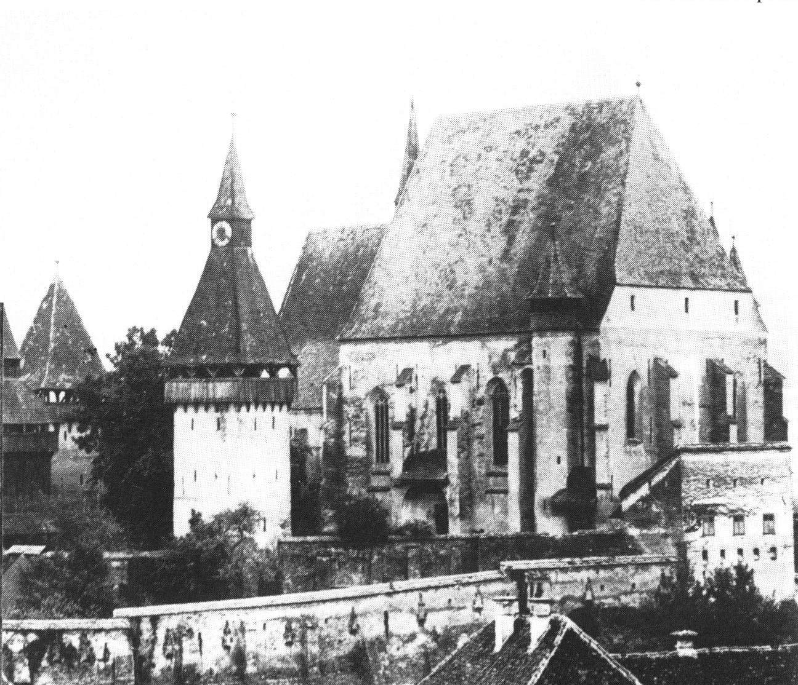
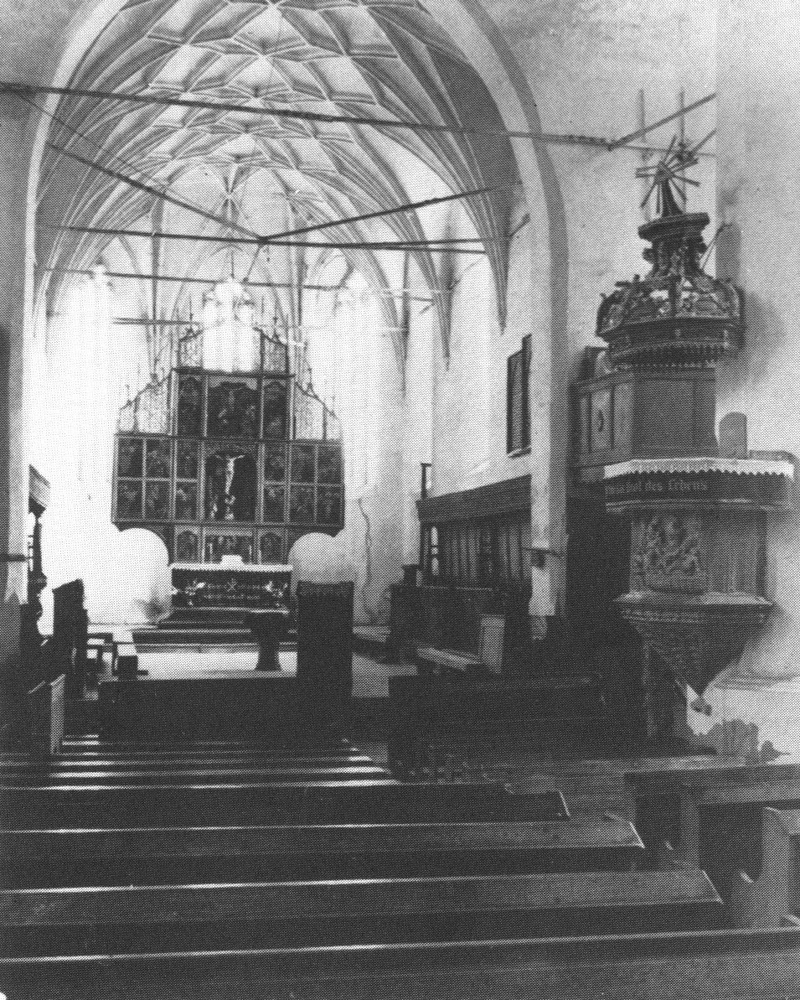
Bővebben lásd:
studhist.blog.hu www.varak.huDánostól kitérőt tehetünk Keresd (Criș, Kreisch) felé. A település 10 km-re dél felé esik főútvonalunktól.
A főútról Dános után 4 km-re ismét letérhetünk délre és Szászszentlászló (Laslea) falun át bejutunk a völgybe.
Almakerék (Mălâncrav, Malmkrog) falu melletti református kápolnában volt Apafi György síremléke, amely a pesti Szépművészeti Múzeumban látható.
Dánostól 10 km-re Erzsébetváros (Dumbrăveni) felé tehetünk kitérőt. Régi kereskedelmi központ. Ebesfalva néven az Apafi családé volt. 1661-ben Ali basa innen vitte Apafi Mihályt a fejedelemválasztó gyűlésre. Apafi halála után az uradalom és a kastély Mária Terézia lovagjáé, Bethlen Gáboré lett. 1726-ban tőle vásárolták meg az örmények. A város ekkor kapta nevét, és Szamosújvár mellett, az örmények másik központja lett.
A főtéren van az 1783-ból származó örmény katolikus templom, a barokk stílusú iskolaépület, a Cuza Vodă utcában pedig a velencei mechitarista szerzetesek egykori kolostorépülete. Oldalfalán ma is látszik a velencei oroszlán.
Szászsárosnál délnek fordulva Berethalom (Biertan, Birthälm) felé tehetünk kitérőt. A véros 14 kilométerre fekszik a főúttól. (Erzsébetváros után 2 kilométerrel kell letérnünk.)
A városka Nagy Lajos és Zsigmond idején fejlődött naggyá. 1572-től itt volt a szász püspökség székhelye, s miután a XIX. század második felében elköltözött Nagyszebenbe, a városka elvesztette jelentőségét. Itt írták a „Berethalmi krónikát”, amely sok érdekes adatot őrzött meg a környék történetéből.
Baráthelytől délkeletre Écel (Ațel) gótikus stílusú evangélikus temploma a XIV. század végének kiváló alkotása.
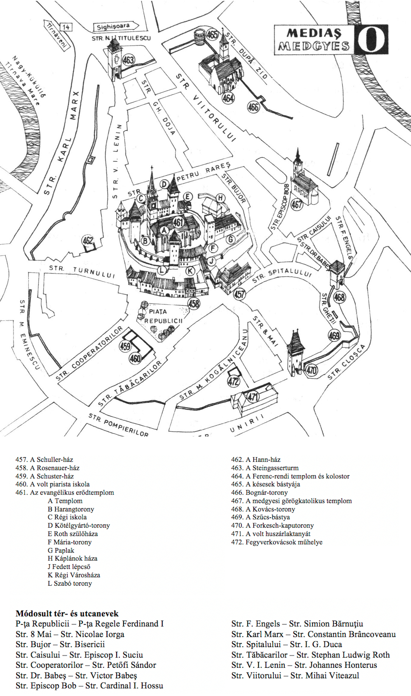
Medgyes (szász neve: Mediasch) 301 m magasan fekvő, megyei jogú város, régi ipari és kereskedelmi központ. Lakóinak száma 45 000. Egykor a medgyesi szász szék központja volt.
A város környékén a trákoknak, majd a rómaiaknak volt telepe. 1267 körül szász telepesek foglalták el. Medgyest 1495-ben már városként tartották számon. A XIV. század óta a szász autonóm szervezet egyik székének központja. 1534-ben itt ölték meg Alloisio Gritti velencei kalandort, s 1576-ban itt fogadta Báthori István fejedelem a királlyá választásának hírével érkező lengyel követeket. Az erdélyi rendek Báthori Zsigmondot (1588) és Bocskai Istvánt (1605) szintén Medgyesen választották fejedelemmé.
Egyháztörténeti szempontból is jelentős hely. 1545. május 17-én a szászok itt csatlakoztak hivatalosan az ágostai hitvalláshoz.
Itt mondották ki 1919. január 8-án a szászok csatlakozását a gyulafehérvári határozatokhoz.
A falakkal körülvett történelmi városmag nem nagy. A falrendszer eredetileg 1490 és 1534 között épült, Mátyás király rendeletére. A Rákóczi-szabadságharc idején Pekry Lőrinc lerontatta falait, a mostani téglafal a régi alapokon készült. 1736-ban még három nagy kapuja, négy kis kapuja és 19 toronybástyája volt a falrendszernek. A XX. század elején a falak és a tornyok jó részét lerombolták.
A történelmi városrész központja a Piaţa Regele Ferdinand I. (I. Ferdinánd király tér) Házai XVI–XVII. századi reneszánsz épületek, amelyek az 1705. évi kuruc ostrom utáni átépítés során barokk, klasszicista és empire külsőt kaptak.
Főtér/I. Ferdinánd király tér 25. sz./Piața Regele Ferdinad I. nr. 25
A Schuller-ház 1588-ban reneszánsz stílusban épült. Hannes Schuller polgármesteré volt. Báthori Zsigmond fejedelem is lakott benne egyik országgyűlés alkalmával.
Bővebben lásd:
www.welcometoromania.euFőtér/I. Ferdinánd király tér 22. sz./Piața Regele Ferdinad I. nr. 22
A Rosenauer-házat 1621-ben, reneszánsz stílusban emelték, de 1793-ban erősen átalakították. Ma barokk külsejű. A XIX. században Rosenauer borkereskedőé volt.
Bővebben lásd:
www.welcometoromania.euFőtér/I. Ferdinánd király tér 14. sz./Piața Regele Ferdinad I. nr. 14
A Schuster-ház 1705 után épült, barokk stílusban. Földszinti ablakrácsa külön figyelmet érdemel. Az épületben 1793 és 1900 között gyógyszertár volt.
Főtér/I. Ferdinánd király tér 13. sz./Piața Regele Ferdinad I. nr. 13
A volt piarista iskola 1736 táján, barokk stílusban épült, 1790-ig a piarista rend iskolája működött benne. A XIX. század elején homlokzatát klasszicizálták.
a Főtér/I. Ferdinánd király tér/Piața Regele Ferdinad I. északi oldalán
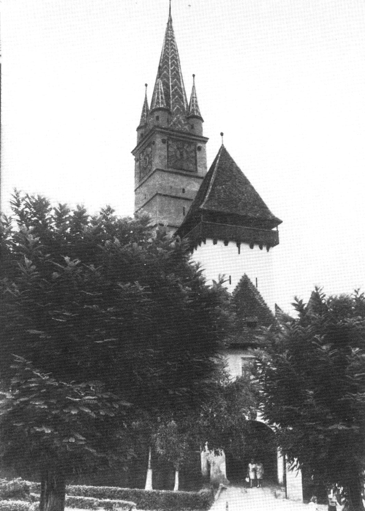
Az evangélikus erődtemplom falrendszere Mátyás király rendeletére a XV. században készült. Két falövezetből áll, belső falán öt torony volt. A két övezet között épült fel a káplánok háza, a paplak és a Városháza. A XVIII. században a várárkot betömték és a falakhoz házakat építettek. Lebontották a déli oldal kerek tornyát, az északi külső falat pedig 1713-ban rontották le.
Az evangélikus templomot (A) Szt. Margitról nevezték el. Először 1449-ben említik az oklevelek, építése azonban csak 1482-ben fejeződött be. Gótikus stílusú bazilika, legrégibb része az északi oldala. Hajdan egy román stílusú templom állt a helyén. 74 m magas tornya 1550 körül készült el. Később többször is felújították, 1832-ben pedig átépítették.
Szép szárnyas oltára a XV. századból, bronz keresztelőmedencéje pedig a XV. századból származik. Orgonája 1732-ben készült. Sok szép keleti szőnyeg is látható a templomban.
A harangtorony (B) a XVII. század vége felé épült és sgraffito díszítése is 1695-ből való. Faerkélyén az 1796-os évszám a restaurálás idejét jelzi.
A régi iskola (C) 1713-ban épült a lebontott fal helyére. Beleépítették az erősség ötödik tornyát, de ezt ma már kívülről nem venni észre. Északi homlokzatát 1840-ben átalakították, déli homlokzata most is barokk.
A Kötélgyártó-tornyot (D) később „Szalonna-toronynak” is nevezték, mert a XIX. század óta itt tartották a szalonnakészletet. Lőrésein kívül szuroköntő nyílásai is jól láthatók.
Stefan Ludwig Roth szülőháza (E).
Stefan Ludwig Roth (1796–1849) szász történettudós és lelkész Puchner generális megbízásából Medgyes környékének császári biztosa lett az 1848–49. évi szabadságharc idején. 1849 tavaszán a honvédsereg fogságába került, s a haditörvényszék kivégeztette. A szászok nemzeti mártírként tisztelik.
A Mária-torony (F) XVI. századi, pártázatos szegélyű építmény, belsejében egykorú freskótöredékekkel.
A paplak (G) XVI. századi épület, de sokszor átalakították. Homlokzata neoklasszikus. Belül gótikus elemek is bőven láthatók. Egyik 1515-ös évszámmal jelzett gerendáját a múzeumban helyezték el.
A káplánok háza (H) a paplak udvarán áll. 1700 tájáról származó, barokk stílusú épület, 1793-ban átalakították.
A fedett lépcső (J) 1805-ben készült, a szomszédos Városháza átalakításakor. Homlokzata a piac felé neoklasszikus.
A régi Városházát (K) 1616-ban említették először az oklevelek. Később többször is átépült, utoljára 1803-ban. Homlokzata neoklasszikus.
A Szabó-torony (L) XVI. századi építmény, rajta a szabó céh jelvénye.
A toronyban egyházi múzeumot rendeztek be. Igen szép kőtára van.
Bővebben lásd:
lexikon.adatbank.transindex.roTorony utca 2. sz./Str. Turnului 2
A Hann-ház 1617-ből származik, Peter Hann polgármester háza volt. A XVIII. századig volt a család birtokában. A XX. század elején egy részét lerombolták.
Johannes Honterus utca/Strada Johannes Honterus
A Steingasserturm a XVI. század első feléből származó kaputorony. 1705 után Pekry Lőrinc ostroma miatt barokk stílusban átépítették.
A Johannes Honterus utcával párhuzamos Strada Doja (Dózsa utca) hangulatos házsorában a 10. és 20. számú ház külön figyelmet érdemel.
Cekes/Mihai Viteazul utca 44–46./Strada Mihai Viteazul nr. 44-46, Medgyes
A ferences rend 1444-ben telepedett meg a városban. 1540-ben kiűzték őket és csak 1721-ben térhettek vissza. A templom a XV. században épült, gótikus stílusban, vannak azonban, akik korábbra teszik eredetét. A hozzá csatlakozó kolostorépülettel együtt 1726 és 1733 között teljesen újjáépítették. A templom kívülről megőrizte gótikus jellegét, belül azonban barokk stílusúvá alakították. Kórusa gótikus maradt.
A Temploháta utca (strada După Zid) az egykori várfalon kívül vezet. A várfalmaradványok az utcából jól láthatók.
Bővebben lásd:
www.medgyes.roTemplomháta utca/Str. După Zid
A késesek bástyája tulajdonképpen barbakánszerú kerek bástya. Egykorú a vár többi részével.
Templomháta utca/Str. După Zid
Bognár-torony 1736-ban jelent meg a tervrajzokon. Később lakássá alakították át, de lőrései megmaradtak.
Kaszárnya utca/Str. Card. I.Hossu
A görögkatolikus templomot Ioan Bob görögkatolikus püspök építtette 1826-ban. Késő barokk stílusú, 1890-ben restaurálták, 1934-ben freskókkal díszítették. Román iskola is volt mellette.
Jég utca 1. sz./Strada Gheţii nr. 1
A Kovács-torony 1641-ben épült. Eredetileg a Schmiedgassertort, a Kovács utcai kaput őrizte. A kaput a fallal együtt 1912 után lebontották.
Kert/Cloșca utca 1. sz./Str. Cloșca nr. 1
A Szűcs-bástya XVII. századi, nyílhegy alakú, vegyes falazású építmény.
Farkas/Nicolae Iorga utca 15. sz./Strada Nicolae Iorga nr. 15
A Forkesch-kaputorony 1494–1534 között épült. Most – a falak lebontása után – elszigetelten áll körerkélyes, magas tetőzetével. 1953-ban és 1962-ben restaurálták, és a múzeum egyik részlegét helyezték el benne.
Egyesülés utca 12. sz./Strada Unirii nr. 12
A volt huszárlaktanyát 1804-ben építették, klasszicista stílusban. Eredetileg laktanya volt, 1910 óta iskola.
A Fegyverkovácsok utca 6. sz. (Str. Armurierilor nr. 6) alatt található épületben volt hajdan a fegyverkovácsok műhelye.
Medgyestől északnyugatra vezető 14A jelzésű úton Balázstelke érintésével Felsőbajom vagy Bázna (Bazna) községbe jutunk. A helységben egy XIV. századi erődtemplom látható. A báznai fürdőtelep gyógyvizei emésztőszervi és női betegségeket, reumát és bőrbajokat gyógyítanak.
Alsóbajom (Boian) régi ortodox temploma a XV. században épült, Ștefan cel Mare segítségével. Bejárata felett Moldva címere, a bölényfej látható.
Medgyestől délre fekszik Muzsna (Moșna). Itt szintén egy erődtemplomot láthatunk szép és változatos késő gótikus részletekkel.
Cím: Nicolae Iorga utca 2. sz./str. Nicolae Iorga nr. 2
Telefon: +4 0369 455 444
Az út utolsó szakasza Balázsfalváig még néhány érdekes látnivalót ígér.
Kiskapus (Copșa Mică) 5400 lakosú vegyipari központ. Ipara a közeli földgázkutakra épült. Határában jódos forrás van.
Csicsóholdvilág (Țapu) faluban egy szép fekvésű középkori templomot láthatunk. Majd a vasútvonal – és később az út – átmegy a Nagy-Küküllő északi partjára s Hosszúaszó (Valea Lungă) után befut Balázsfalvára. Innen a már ismert út vezet Tövisre.
Szászivánfalva (Ighișul Nou) faluban az úttól dél felé 4 km-re egy szép erődtemplom látható.
Nagyekemező (Târnava) az úttól északra, a folyóparton fekszik, erődtemplomát érdemes megnézni. A falu közelében dák földvárat tártak fel.
Nagybaromlak (Valea Viilor, Wurmloch) Kiskapustól dél felé 4 km-re fekszik. Gótikus stílusú erődtemploma megéri a kitérő fáradságát.
Nagyselyk (Șeica Mare, Marktschelken) községben is erődtemplomot láthatunk. A tőle északnyugatra fekvő Kisselyk (Șeica-Mică, Kleinschelken) szintén XV. századi erődtemplomáról nevezetes.
A Nagyselyktől délkeletre fekvő Bólya (Buia) községben született Bolyai Farkas (1775–1865) matematikus, Bolyai János apja. A község régi temploma mellett egy XIV. századi várkastély is látható.
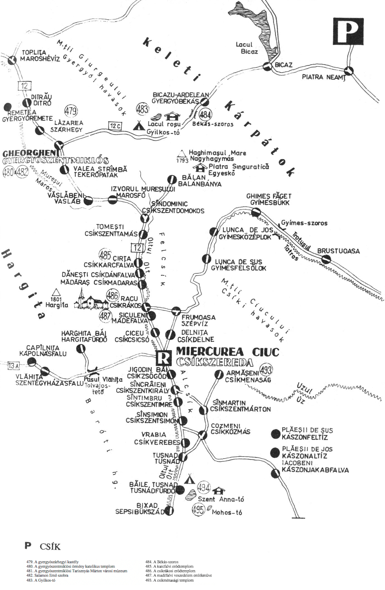
Marosvásárhelyről a 15. számú úton megyünk, a vasútvonallal párhuzamosan, a Maros völgyében. A völgyet erdős hegyek kísérik, s egymást követik a majdnem összenőtt falvak.
Marosszentgyörgy (Sângeorgiul de Mureș) még Marosvásárhelyhez tartozik. Itt van a Máriaffy család egykori kastélya és egy jódos-, sósvizű fürdő. A katolikus templom XIII. századi eredetű, a gótika korában kibővült. Famennyezete lovas Szt. Györgyöt is megjeleníti (XVIII. század első fele).
Nagyernye (Ernei) volt Péchy Simon kancellár szombatosainak központi helye. Kastélyát szép park veszi körül.
Sáromberke (Dumbrăvioara) régi község, 1395-ben már szerepel az oklevelekben. Református temploma 1784-ből való.
Gernyeszeg (Gornești) XIII. századi eredetű, de később többször is átépített református templomában van eltemetve Teleki Mihály.
Szászrégen (Reghin, Sächsisch Reen) a Maros partján 380 m magasan fekvő 25 600 lakosú város. Fafeldolgozó ipara, hangszer- és sportszerkészítő üzeme van. A helység neve már a XII. században is szerepel. Az 1848–49. évi szabadságharc idején leégett, ezért kevés műemléke van.
Régenből Marosfelfalun át folytatjuk utunkat, Marosvécse kis (Brâncovenești) református templomát érdemes megnézni.
Vécstől északra Disznajó, Magyaró és Holtmaros ősi magyar falvak. Lakói híres tutajosok voltak.
Déda (Deda) fontos vasúti csomópont – elágazás Szeretfalva felé – s egyben jó kiindulópont a Kelemen-havasok tájai és az Istenszéke-csúcs (1380 m) felé. A Galonya-patak torkolatánál, a volt Kemény-vadászkastélyban kemping van. Ezután a Hatosnya (Rastolița) és Palotailva (Lunca Bradului) érintésével Gödemesterháza (Stânceni) következik a festői, sziklás Maros-völgyében. Ez a vidék Erdély legszebb tájai közé tartozik.
Maroshévíz (Toplița) több mint 9500 lakosú város, faipari központ és üdülőhely. Bradul nevű fürdőjében termál gyógyvíz van. (A fürdőket régebben Bánffy- és Urmánczy-fürdőnek nevezték, egykori tulajdonosaik után.)
A Maros-szoros Maroshévíz után 10 km-re kitágul, s a folyó menti 12. számú út a Gyergyói-medencében vezet tovább.
Ditró (Ditrău) 4800 lakosú fakitermelőhely. Lakói híres borvízszállító szekeresek voltak. Temploma a XIX. században épült eklektikus stílusban.
Ditró után 4 km-re az út jobb oldalán egy 6–7 m magas domb látható. Ez a Tatár-halom.
1716-ban 3000 főnyi tatár sereg tört Gyergyóra. A fegyverforgató férfiak nem voltak otthon, de 250 harcos Gábor deák vezetésével a Szárhegyre gyűlt és megverték a fosztogató sereget. A hagyomány szerint a harcban az asszonyok is részt vettek, ők voltak a székely „egri nők”.
Gyergyószárhegy (Lăzarea) temploma gótikus stílusban épült, de később többször is átalakították. A ferences kolostor a barokk korban épült.
Itt élt Kájoni János ferences szerzetes, aki az ősi székely vallásos zsoltárok, énekek összegyűjtésével halhatatlan érdemeket szerzett. Életművét Domokos Pál Péter („... édes Hazámnak akartam szolgálni”) dolgozta fel és egészítette ki a dallamok közlésével. Kájoni nyomdát is alapított, ahol művét kinyomatta.
A kolostorban temették el Losteiner Leonárd történetíró szerzetessel együtt, akire Orbán Balázs, a Székelyföld leírója szinte oldalanként hivatkozik. Kájoni mellszobra a kolostor falában látható. A kolostorban alkotóház működik.
Gyergyószentmiklós (Gheorgheni) 18 200 lakosú város, a Gyergyói-medence központja. A XIV. században már megvolt. Jelenleg fafeldolgozó ipara és tejporgyára van. Főterét, a Szabadság teret (Piața Libertății) emeletes, városias jellegű épületek övezik. Katolikus temploma 1490–1498 között épült, de barokk stílusban átépítették 1730–34 között. Egy 1650-es kápolna részeit tartalmazza. Várfala 1784-ben készült el, kapubástyájával együtt. A várfal belső mélyedéseiben 1750 körüli domborművek és festmények vannak.
A templomban értékes képek és szobrok láthatók, mennyezetét Szirmai Lajos festette. Keresztelőkútján az életkorok női szimbólumait, szenteltvíztartóján az évszakokat jelenítették meg.
A város fölötti dombon áll a Szent Anna-kápolna eredetileg négykaréjos, XIII. századi épülete. Nyugati karéja helyett a XVIII. században hajót alakítottak ki.
Fő út 340. sz./Str. Principală nr. 340
A sáromberki Teleki-kastély a XVIII. század végén épült. A földszintes, szerény épület szép park közepén áll. Itt lakott a könyvtáralapító Teleki Sámuel (1739– 1822) kancellár, majd Teleki Sámuel (1845–1916) Afrika-utazó is.
Távolabb a domboldalban van a Teleki család 1772-ből származó sírboltja.
Bővebben lásd:
lexikon.adatbank.transindex.roFő út 479. sz./Str. Principală nr. 479
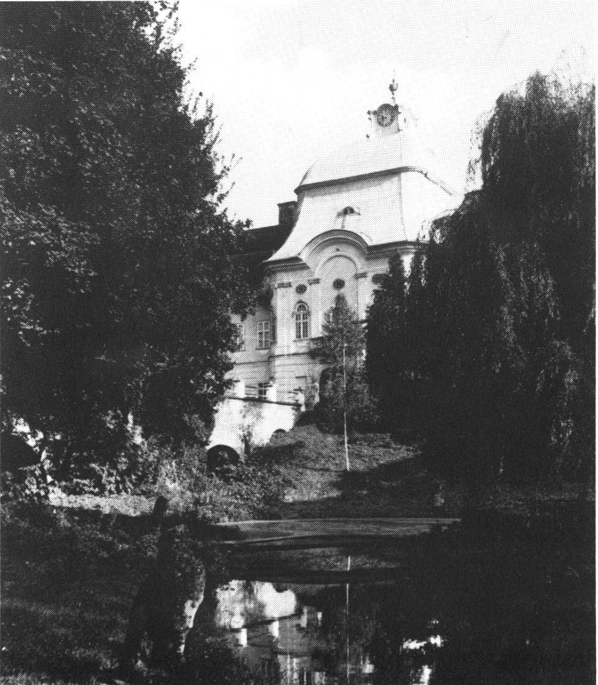
A gernyeszegi kastélyt Teleki József építtette 1770 és 1803 között egy késő középkori vár helyén, barokk stílusban. A kastély parkjában több klasszicizáló és barokk groteszk szobor, emlékmű van.
Călărașilor utca 1. sz./Str. Călărașilor nr. 1
A szászrégeni evangélikus templom 1330-ban már megvolt. Gótikus stílusban épült, de később többször, pl. 1773-ban és az 1849. évi tűzvész után, majd a két világháború között is újjáépítették.
Bővebben lásd:
lexikon.adatbank.transindex.roa régi temető udvarán
A szászrégeni volt görögkatolikus fatemplom 1744-ben készült. Itt élt egy ideig Petru Maior (1761–1821), az ún. „Erdélyi iskola” egyik alapítója.
Bővebben lásd:
www.visit-mures.comVadász utca 51. sz./Str. Vânătorilor 51.
A szászrégeni Anton Badea Népművészeti Múzeum 1960-ban alakult, gazdag néprajzi gyűjteménye van, amelyben főleg maros menti, görgény-völgyi és mezőségi népviseletek láthatók.
Bővebben lásd:
www.visit-mures.comMarosvécs/Brâncoveneşti 547130
A marosvécsi várkastély egy római erőd helyén álló középkori vár XVI. századi átalakításából jött létre.
Kemény János fejdelem óta 300 évig volt a család tulajdonában. 1848– 49 után újjáépítésre szorult, egyik sarokbástyáját teljesen megújították. A zárt udvarú, négy sarokbástyás, kétemeletes várkastély utolsó tulajdonosa Kemény János (1903–1971) író 1926-ban itt alakította meg az „Erdélyi Helikon” nevű irodalmi társaságot, amely a kastélyban tartotta összejöveteleit.
Kemény János sírja a kastély parkjában a Kós Károly által tervezett Kuncz Aladár-emlékasztal közelében van. A kommunizmus időszakában javítóintézet, börtön majd fogyatékos gyermekek és nők otthona működött benne. 2014-ben visszakerült a család tulajdonába.
Bővebben lásd:
WikipédiaA gyergyószárhegyi kastély. Az épület 1532-ből származik és 1631-ben Lázár István főkirálybíró építtette át reneszánsz stílusban. A Rákóczi-szabadságharc idején 1707-ben leégett. Ezután kapubástyája újjáépült, de később ismét tönkrement. A helyreállított bástyákban múzeum van. Fontos képzőművészeti központ.
Bethlen Gábor itt élt sokáig édesanyjával, Lázár Druzsinával. A kastély többször is menedéket adott üldözött moldvai vagy havasalföldi uralkodóknak.
Bővebben lásd:
WikipédiaÖrménytemplom utca 5. sz./Str. Biserica Armeană nr. 5
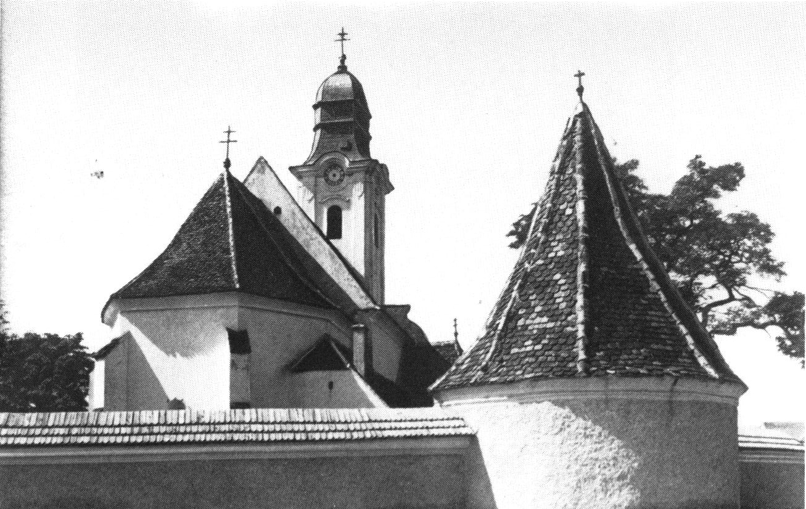
A gyergyószentmiklósi örmény katolikus templom 1730–33 között épült barokk stílusban. Várfal veszi körül. Az örmények 1670 táján települtek Gyergyószentmiklósra. Az ortodox román templom 1896-ban épült.
Bővebben lásd:
lexikon.adatbank.transindex.roRákóczi Ferenc utca 1. sz./Str. Rákóczi Ferenc nr. 1
A gyergyószentmiklósi Tarisznyás Márton városi múzeum épülete 1770-ben épült határőrségi kaszárnyának. Régészeti, történeti, néprajzi és erdészettörténeti gyűjteményében igen gazdag anyag látható. Értékes gyűjteménye van Karácsony János festőművész alkotásaiból.
Bővebben lásd:
www.visitgheorgheni.roa gimnázium előtt
Salamon Ernő (1912–43) költő a városban született. 1930-tól a román kommunista párt tagja volt. Munkaszolgálatosként Ukrajnában megölték. Szobrát, Izsák Márton alkotását, 1968-ban állították fel.
Bővebben lásd:
lexikon.adatbank.transindex.roA Gyilkos-tó (Lacul Roșu) egyedülálló természeti jelenség. 1838-ban egy földcsuszamlás által keletkezett, amely a Békás-patak útját elzárta. A tóból ma is kilátszanak az elöntött fenyők csúcsai, ugyanis a vasoxidos, meszes víz konzerválta őket.
A tó környékén van a Nagy-Cohárd- (1507 m), a Gyilkos- (1384 m) és távolabb a Likas- (1676 m) csúcs. Szomszédságában kemping és több turistaház is van.
Bővebben lásd:
Wikipédia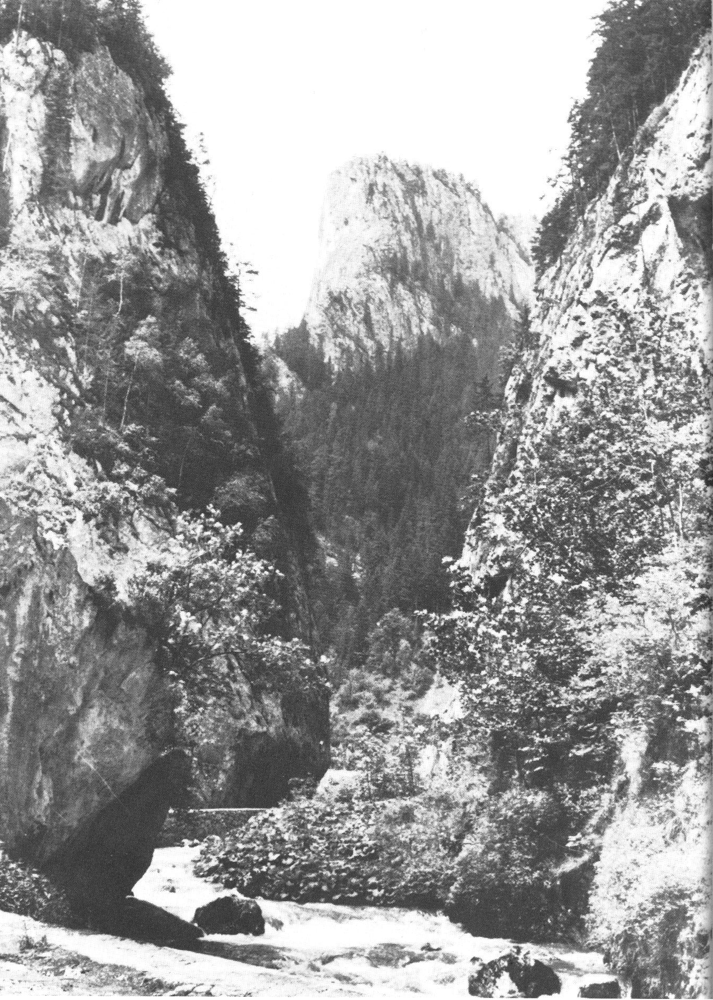
A Békás-szoros híres turistalátnivaló. A Gyilkos-tótól továbbvezető út a patak partjára szorul az Oltár-kő (1200 m) hatalmas szirtje alatt, függőleges sziklafalak között. Legvadabb része az ún. „Pokol”, ahol a patak hatalmas kövek közt zubog, az utat merész szerpentinekben támfalakkal, alagúttal és részben már a sziklafalból kellett kirobbantani. A Békás-szoroson túl a Bicaz-erőmű tava már Moldvában van.
Az út a Szászrégentől keletre vezet a Görgényi-havasok (Munții Gurghiului) felé.
Görgénysóakna (Jabenița) már a rómaiak idején is sóbánya volt. Tovább az út mentén van a részben védetté nyilvánított, Mocsár nevű tölgyerdő.
Görgényszentimre (Gurghiu) felett állt hajdan Görgény vára. Valamikor székely várőrsége volt. A keleti falu végét ma is Székelyvárosnak nevezik. Helyén ma kápolna van. A vár köveiből épült a hegy lábánál álló vadászkastély, amelyben most erdészeti szakiskola és Vadászati Múzeum van. A kastélyt eredetileg a XVIII. század végén a Bornemissza család építtette, majd Habsburg Rudolf trónörökös vadászkastélya lett.
Laposnyán (Lăpușna) két vadászkastély épült. A vidék elsőrangú nagyvadas vadászterület. Medve, szarvas, farkas, hiúz, fajdkakas bőven akad. A patakok pisztrángban bővelkednek. A Görgényi-havasoknak az utóbbi időkig ősállapotukban levő hatalmas erdeiben alig járt turista. A legmagasabb csúcsok a Fancsal-tető (Fâncelu, 1684 m) és a Mező-havas (Șasa 1777 m).
Laposnyától a Kereszt-hegyen át Gyergyóba lehet átmenni.
Maroshévízről a 15. számú út vezet északkelet felé, és az 1112 m magas Székely-tetőn át ér a Borszéki-medencébe.
Borszék (Borsec) 850–1000 m magasan fekszik, valamivel több mint 2500 lakosa van. A fürdőhely 2 km-re van a városi rangra emelt településtől.
Vizét már a rómaiak is ismerték, de újkori fejlődése csak 1745-től kezdődött. Több mint 30 forrása közül a Pierre Joliot Curie-ről elnevezett radioaktív. A borszéki gyógyvizeket vérszegénység, emésztési zavarok, női bajok, idegbetegségek, angolkór és vesebántalmak ellen javallják. Közönséges ásványvízként is gyakran fogyasztják.
A városból szép kirándulásokat tehetünk a medvebarlangok és jégbarlang környékére, a vad Zsedán-pataki völgybe, Gyergyóholló és Tölgyesen át a Moldovában levő Békási-víztározóhoz. Mindenfelé borvízforrások vannak és borvizes magashegységi lápok. Távolabbi út vezet a híres turista terület, a Csalhó (Ceahlău, 1904 m) felé, ahol menedékház van.
Ditró után kitérőt tehetünk a Maros bal partján fekvő Gyergyóremetére (Remetea). Egykor remetetelep volt, az erdők között kis kápolnával, melynek alapfalai a temetőben még megvannak. A faluban és környékén sok szép faragott székelykapu látható. 764 m magasan, a Maros közelében fekszik. Gyógyvizét csak a század eleje óta ismerik, az első telepet a Maros áradása elsodorta. 1968-ban ismét felépítették. Különösen idősebb korban fellépő betegségekre van kiváló hatása.
Gyergyószentmiklósról a 12 C jelzésű úton tartunk kelet felé, a Pongrác-tető (1200 m) után az út lefelé kanyarog a 980 m magasságban levő üdülőhelyig.
Az út mellett látható egy – 1933-ban épült – kápolna, azon a helyen, ahol valamikor vár állt.
Ennek a várnak volt ura 1707-ben Both András, ki a Gyergyói-medence népét vezette a labancok elleni harcban. A várat lerombolták és Bothot családjával együtt kivégezték. A nép a helyet ma is Both várának nevezi.
Gyergyószentmiklóstól nyugatra fekszik Gyergyóalfalu (Joseni), ahol XIII. századi alapokon nagy barokk templom áll. A Parajd és Szováta felé a Bucsin-tetőn átvezető út igen szép, 50 km hosszú, jele 13 B.
Gyergyóalfalutól délre Gyergyófelfalu (Suseni) helyiségnél vívta 1707-ben a székelység élethalálharcát a labancokkal. Két község, Katorzsa és Gálfalu a tűz martaléka lett, lakóit kiirtották. Az elpusztult faluk emlékműve a katorzsai emlékoszlop.
Gyergyószentmiklósról a 12. számú út a vasútvonallal párhuzamosan átvezet a Maros és az Olt vízválasztóján, és a Felcsíki-medencébe ereszkedik le.
Tekerőpatak (Valea Strâmbă) faluban római kori arany- és ezüstlelet került elő az i. sz. II. századból.
Marosfő (Izvorul Mureșului) magaslati üdülőhely után – itt van a Maros forrása – Csíkszentdomokos (Sândominic), a csíki fazekasok egyik központja következik. Határában ölték meg 1599-ben a székelyek a menekülő Báthori András fejedelmet. A művelődési házban néprajzi gyűjtemény, mellette falumúzeum van.
Itt született az 1980-ban elhunyt Márton Áron gyulafehérvári katolikus püspök, egyszerű székely szülők gyermeke.
Csíkszentdomokostól az Olt völgyében halad tovább az út. Hosszú, szinte összeérő községek követik egymást. Csíkszenttamáson, Jenőfalván át érünk Karcfalva (Cârța) községbe.
Csíkdánfalva (Dănești) újabban átvette Csíkmadarastól a fekete kerámia készítését. Egyúttal a csergekészítés központja is. Iskolája előtt Petőfi-szobor áll. Erődtemploma középkori eredetű.
Az országúttól kb. 1,5 km-re 10 kádas fürdőt találunk nyolcszobás, kertes villával. A 20 °C hőmérséklettel előtörő borvíz máj- és gyomorbántalmak, reumatikus, szív- és érrendszeri betegségek, női bajok gyógyítására alkalmas.
Csíkmadaras (Mădăraș) híres fazekasközpont volt. (A mondás szerint: „Madaras, hol a pap is fazakas”.) Határában vas- és higanybányák működtek. Két fürdő is van a községben. Nem régiek, geológiai kutatófúrások eredményei. A strandfürdő a falu központjában 1963-ban létesült 25 × 12 méteres medencével, parkosított környezettel. A másik fürdő a vasútállomás melletti (1957). Nagyhozamú, 18 °C-os forrásának a vizét kádfürdőbe vezetik. A szénsavas, vasas borvizekkel reumatikus, szív- és érrendszeri betegeket gyógyítanak. A községtől turistaút vezet a madarasi Hargita menedékházhoz.
Csíkrákos (Racul) faluban született Cserei Mihály (1668– 1756) történetíró. A Cserei-kúria székely nemesi udvarház, mely 1662-ben épült, mint azt az ebédlő mestergerendáján olvasható latin felirat bizonyítja. Díszes kő ablakkeret-maradványa 1669-ből, szélvitorlája 1667-ből való.
Beosztása a régi, de falait megemelték, majd a 30-as években átalakították, ekkor freskói elpusztultak. Ez volt Cserei Mihály szülőháza, innen hurcolták tatár fogságba nagyanyját, Apor Helénát. Atyját, Cserei Jánost innen vitték börtönbe, hol nyolc évig raboskodott.
Az országúttól 1 km-re, a 750 m magasan fekvő, 1937-ben létesített és 1971-ben újjáépített Bogát-fürdő reumatikus betegeknek ajánlott, szerény fürdőtelep, bikarbonátos, kalciumos, nátriumos, magnéziumos vizének köszönhetően várhatóan fejlődni fog.
Madéfalva (Siculeni) úgyszólván egybeépült már Csíkrákossal.
Csíkcsicsó (Ciceu) már egybeépült Madéfalvával. Határában felkereshetjük a csicsói vár romját. Innen már rövidesen beérünk a régi Csíkszék székhelyére.
A karcfalvi erődtemplom a szászokéhoz hasonló védelmi építmény. A XV. században épült gótikus stílusban. A legszebb és leghitelesebb parasztvárak egyike. Nyolc méter magas terméskő várfala a szabályos lőrésekkel, gyilokfolyosóval ma is ép. Kapubástyájának mellvédje van, 1720-ban toronnyá magasították, gótikus ablakot falaztak bele.
A templom 1444-ben épült, gótikus szentélyét szépen faragott kőbordák díszítik, egyiken emberfő ábrázolás van. Szép még a gótikus szentségtartó fülke, a középkori keresztelőkút, a XVI. századi kehely és az 1653-ban készült szentségtartó.
A várfalon kívül, a karcfalvi feljárónál kőszobor áll.
Bővebben lásd:
lexikon.adatbank.transindex.roA csíkrákosi erődtemplom a XV. században épült, és ekkor vették körül fallal. Nyugati tornya donzsonként emelkedik ki a templom tömbjéből. Fala alacsony és a védőövezet kapuja díszes. A torony külső falán látható ábrák a XVI. század elejéről származnak. Késő gótikus jellegű, sokszor módosított építmény. Többször leégett. 1507-ben Szablya Péter bővítette, mai alakját 1758-ban kapta.
Banderiális templom, szentélyében a zászlósúrnak és a banderiális katonaságnak volt helye, s ezért jóval nagyobb, mint az eredeti hajó volt. Az egyik gyámkőn Hunyadi kori hollós ábrázolás van. Csúcsíves, kőkeretes ablaka van. A kriptában nyugszik Cserei Zsuzsánna, Zágoni Mikes Kelemen mátkája.
A templomkerítés Zöld Péternek, az 1764-es székely küzdelmek egyik vezérének hamvait őrzi.
Bővebben lásd:
www.romerterv.huA madéfalvi veszedelem emlékművét az 1764. évi Siculicidium (székelyirtás) emlékére készítette Küllő Miklós székely szobrászművész.
A vérfürdőt Bukow és Siskovics osztrák tisztek a zendülő székelyek megfélemlítése céljából rendezték. Éjnek idején 200 embert mészároltak le és a Vészhalomnak nevezett közös sírba temették. Több ezer ember menekült át Moldvába és ott telepedett meg. A zendülés vérbefojtása után megszervezték az osztrák vezénylésű határőrséget.
Csíkszentdomokosról ellátogathatunk észak felé Balánbánya (Bălan) városába. Innen jelzett út vezet a Balánbánya felett emelkedő Egyeskőhöz (1608 m) és a turistaházhoz. Innen a Nagyhagymáson át a Gyilkos-tóhoz jelzett turistaút vezet.
Madicsa-fürdő, Karcfalvától északnyugatra 3 km-re, 1800 óta ismert, kiváló vizű fürdőhely. Szénsavas borvize van. Reuma, idegbántalmak, szív és keringési zavarok ellen ajánlják.
A Pogány-vár romjától turistaút vezet a madarasi Hargita turistaházhoz. Csíkrákostól összekötő út van kelet felé Csíkszépvízre, s tovább a Gyimes felé.
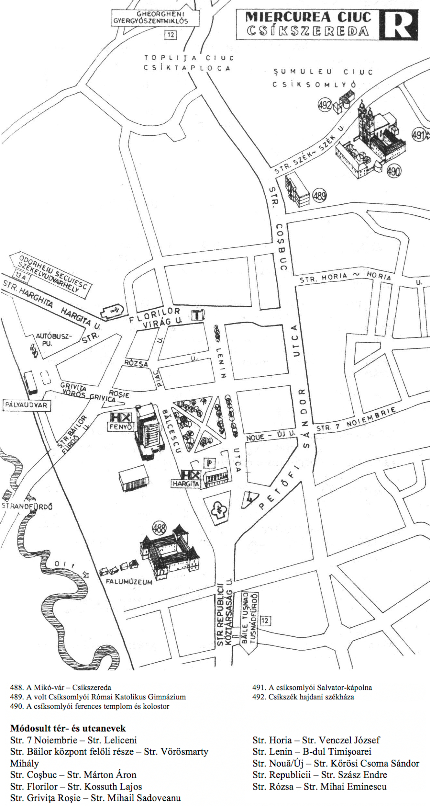
Hargita megye (județul Harghita) székhelye 665 m magasságban fekszik. Lakosainak száma több mint 37 000. A környék, bár elég zord éghajlatú, már a bronz- és vaskorszak óta lakott. A XV. században ugyan városi rangot kapott, de egészen a legutóbbi időkig szerény városka volt. Modern, világversenyek rendezésére is alkalmas jégstadionja van.
Vár tér 2. sz./Piaţa Cetăţii nr. 2
A Mikó-vár a régi város déli részén áll. A XVII. század elején hídvégi Mikó Ferenc, Csík, Gyergyó és Kászon székkapitánya kezdte építeni. Mikóújvárnak is nevezték, 1661-ben a törökök lerombolták, s 1714-ben Steinville császári generális újjáépíttette. Sarokbástyás, négyszögletes építmény. Jelenleg a Csíki Székely Múzeum otthona.
Bejárata előtt balra Petőfi, jobbra Bălcescu szobra áll.
A múzeumban népművészeti műhely is működik, ahol jellegzetes helyi népi kézimunkát stb. készítenek. A múzeum igen gazdag etnográfiai tárgyakban, történelmi-, művészeti emlékekben, emellett jelentős képzőművészeti kiállítások helyszíne.
Közelében van a neobizánci ortodox templom, parkosított környezetben.
Bővebben lásd:
lexikon.adatbank.transindex.roSzék útja, 152. sz./Str. Szék nr. 152
Működését 1668-ban Csíksomlyón kezdte meg kolostori iskolaként és csak 1911-ben költöztették Csíkszeredára.
Az iskola műkedvelő színjátszása igen fejlett lehetett, ugyanis 47 magyar és 1 latin nyelvű iskoladráma maradt fenn, amelyeket az irodalomtörténet, „Csíksomlyói misztériumok” címen tart számon. Ebben az iskolában tanult Gábor Áron.
Bővebben lásd:
WikipédiaSzék útja 148. sz./Str. Szék nr. 148
A csíksomlyói ferences templom és kolostor híres búcsújáróhely. A kolostor Hunyadi János alapítása (1448), a kéttornyú templom azonban 1802-ben épült, késő barokk stílusban, a Hunyadi János által a marosszentimrei győzelem emlékére 1442-ben építtetett, késő gótikus templom helyén áll. Az eredeti építmény némi faltöredéke, ablaka és kőbéléses ajtókerete fennmaradt. A barokk építmény 22 évig, a belső berendezéssel együtt 72 évig készült.
A hajó 12 m magas, félhengeres mennyezetű, faragott fagerendákból helyi ácsok építették. A templom faszobrai olasz és magyar mesterek művei, a képeket Urbánszky Fülöp, Csűrös József, Szopos Sándor és Papp Miklós kolozsvári és brassói művészek készítették. A főoltár Mária-kegyszobra fából van faragva és a XVI. század kiváló egyházművészeti remeke. A templom orgonája mestermű. Az egyik harang 1133 kg súlyú.
A templom kriptájában szerzetesek és jeles közéleti személyek vannak eltemetve.
A búcsút pünkösdkor tartják.
A kolostor közelében van a régi Csobotfalva barokk katolikus temploma. Nyugati homlokzatába két román kori kőkeretes ajtó van befalazva. Késő gótikus szárnyas oltárát a budapesti Szépművészeti Múzeum őrzi.
Bővebben lásd:
lexikon.adatbank.transindex.roA csíksomlyói Salvator-kápolna a Kissomlyó nevű magaslaton áll. A kápolna az 1456-os nándorfehérvári győzelem emlékére épült. Többször restaurálták (1680, 1878, 1967). Szentélye gótikus, hajója deszkamennyezetű, festett kazettákkal. Falán több régi festmény látható, külső falán több érdekes felirat.
A másik két kápolna a Passió- és a Szent Antal-kápolna. Az utóbbi kóruskönyöklőjét ugyancsak népi díszítésű festett kazetták szegélyezik.
Bővebben lásd:
lexikon.adatbank.transindex.roCsíkszék hajdani székháza a templommal szemben látható. Annak idején a szeredaiak nem egyeztek bele, hogy a székház városukban álljon, ezért építették ide. 1825-ben épült, U alakú építmény, boltíves földszintje és emeleti folyosója árkádos.
Bővebben lásd:
WikipédiaA csíkménasági templom a XV. században épült, késő gótikus stílusban, egy XIII. század eleji, román stílusú templom alapjaira. Várfal övezi, hajóját később barokkosították.
A hálóboltozatos szentély diadalívének oltár felé eső részén és a boltozat bordái között értékes késő gótikus freskók láthatók. 1655-ben átfestették, de hatásuk így is tökéletes. Egykori gyönyörű, művészi szárnyas oltára a Magyar Nemzeti Múzeumban látható.
Itt van a környék legrégibb Mária-szobra, mely a pompás freskókkal díszített szentéllyel, mérműves ablakokkal, szentségfülkével együtt varázslatos műemlék.
A templom közelében van Szervátiusz Jenő kolozsvári szobrászművész első világháborús hősi emlékműve.
A csíkménasági Adorján-kúria tipikus lófőszékely lakóház. A lakás mennyezetén levő gerendák feliratai szerint 1791-ben épült és 1835-ben javították. A galambdúcos székelykaput latin felirata szerint ifj. Adorján Imre építette 1828-ban.
Bővebben lásd:
WikipédiaA Csíkszeredai-fürdő (Băile Miercurea) a várostól 2,5 kilométerre van, az Olt mellett. 21 fokos termálvize reuma és gyomorbetegségek ellen hatásos. A környéken sok szénsavas forrás van.
Csíkzsögöd (Jigodin-Ciuc) a kiváló székely festőművész, Nagy Imre (1893–1976) szülőhelye, itt élt és itt van az emlékmúzeuma. Alkotásait kiállítás mutatja be. Az épület falába helyezték el a nagy művész hamvait.
Zsögödfürdő (Jigodin-Băi) Csíkszeredától 2 kilométerre dél felé fekszik. Szív- és idegrendszeri betegségek, mozgásszervi és emésztőszervi zavarok ellen hatásos gyógyvizű fürdőjét 1950-ben újították fel. Határában van a zsögödi vár romja.
Csíkszeredától délkelet felé, a kászon–kézdivásárhelyi úton a csíkszentmártoni elágazásnál észak felé Csíkbánkfalva felé fordulunk s a falun át jutunk Csíkszentgyörgy (Ciuc-Sângeorgiu) községbe. A környék egyik legszebb gótikus templomát rejti. Az üdülőhely a falu közelében van, 1947-ben Adorján Albert itteni lakos létesítette. Erőteljes széndioxidos kitörés okozta gázfürdőjét (mofetta) sokan keresik fel reumatikus megbetegedések, érrendszeri zavarok gyógyítására.
Csíkszentgyörgytől északra, egy eldugott völgyben bújik meg Csíkménaság (Armășeni). Templom közelében van Szervátiusz Jenő kolozsvári szobrászművész első világháborús hősi emlékműve.
A csíkménasági Adorján-kúria tipikus lófőszékely lakóház. A lakás mennyezetén levő gerendák feliratai szerint 1791-ben épült és 1835-ben javították. A galambdúcos székelykaput latin felirata szerint ifj. Adorján Imre építette 1828-ban.
A 12 jelzésű út Erdély legfestőibb tájain vezet keresztül.
Csíkdelne (Delnița) gótikus Szent János-temploma, támpilléres kőfallal kerítve, eredetileg erődtemplom volt. Gótikus vonalú tornya 30 m magas. A templom déli falán falfestmény látható.
Ékessége az 1613-ban készült, 104 kazettás, festett deszkamennyezet. Minden mintája más, fehér mezőkben a népies díszítés változatossága tobzódik. Reneszánsz szárnyas oltára 1675-ben készült, orgonáját Csíkban készítették. A szentélyben gótikus kőbordázat, mérműves ablak van.
Csíkdelnétől északra Csíkszentmiklós (Nicolești) és Csíkszentmihály (Mihăileni) XV. századi, gótikus templomai is szépek.
Szépvíz (Frumoasa) régen örménylakta helység volt. Itt kezdődik az igazi hegyi út a Pogány-havas (1352 m) oldalában. Ezután leereszkedünk a Tatros völgyébe. Gyimesfelsőlok (Lunca-de-Sus), Gyimesközéplok (Lunca-de-Jos) és a szép, új templomos Gyimesbükk (Făget) a gyimesi csángók falvai, utóbbit Bákó megyéhez csatolták.
A Gyimesi-szoros bejáratát a völgy jobb oldalán álló hajdani Rákóczi-vár őrizte. A Gyimesi-szoros a Tatros völgyében van.
Cím: Vár tér 1. szám/Piaţa Cetăţii nr. 1
Telefon: +40 266 317 007, +40 266 315 120/143
E-mail: csikinfo@szereda.ro
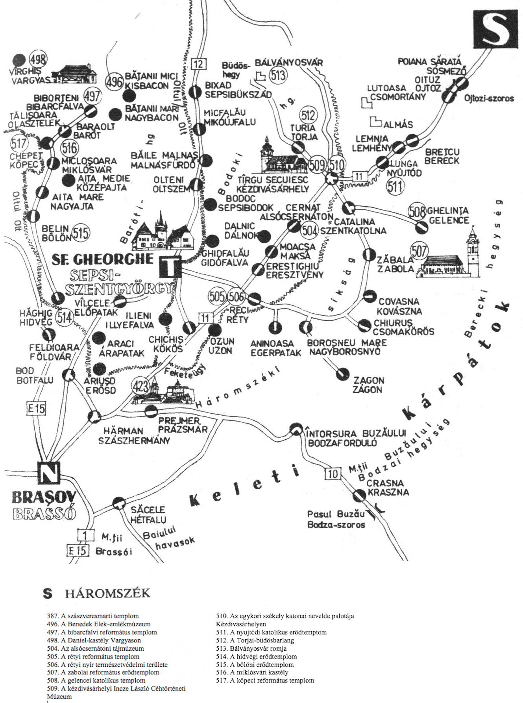
Az E578. számú úton indulunk, déli irányban Sepsiszentgyörgy felé.
Csíkszentkirály (Sâncraieni látnivalója a műemlék templom. A községben ásványvizet palackoznak, környékén sok a borvízforrás. Tőzeglápjából 6000 m2-es területet védetté nyilvánítottak. A Borsáros nevű láp területén (a borvíztöltöde közelében) 8×15 méteres kis fürdőmedencét létesítettek, ahol a gyermekeknek külön kis medencéje van. A környék népszerű borvízstrandja. Idegbántalmak, vérszegénység, érrendszeri zavarok gyógyítója.
Csíkszentimre (Sântimbru) határában van a Szentimrei büdösfürdő (Sântimbru-Băi). Kénes, radioaktív vize van. A községben a Henter bárók kúriája barokk épület, népies elemekkel, melyet a többszöri átalakítás kiforgatott eredeti alakjából.
A kúria egyik urát a XVIII. században a fellázadt székelyek ölték meg. 1764-ben Csík vezetői e házban tették le a hűségesküt a császárnak.
Tusnádfürdő (Băile Tușnad) nemzetközi hírű gyógyhely. Az Olt bal partján, a Csukás-tó körül épült ki. Gyógyvizét már 1600 körül ismerték. A XIX. század második felében kezdett fejlődni. 1900-ban a Csukás-tavat szabályozták.
Különféle vegyianyagokat tartalmazó gyógyforrásainak vizét csak orvosi felügyelet mellett lehet kezelésre felhasználni. Környékén szép kirándulóhelyek, sétányok vannak (Sólyomkő stb.). Innen kényelmes szerpentin turistaút vezet a Szent Anna-tóhoz.
Tusnádfürdő után 4 kilométerre áthaladunk a romantikus Olt-szoroson. Az út és a vasút alig férnek el. Felettük hatalmas fenyves-bükkös hegyoldalak.
Sepsibükszád (Bicsad) mellett a Rakottyás-patak torkolatánál meredő hegyfokon van Vápa várának romja. Bükszádtól északnyugatra, az Alsó-Sólyomkő tetején látható Sólyomkő vára, mely 1421-ben török ostromot állt ki.
Mikóújfalu (Micfalău) ismét kitérésre ad alkalmat, ezúttal nyugatra.
A kitérő után az Olt-völgyi főútvonalon tovább egy régen közkedvelt fürdőhely következik:
Málnásfürdő (Băile Malnaș) gyógyvizei szív- és májbetegségeket, emésztőszervi zavarokat, csúzt és vérszegénységet gyógyítanak. A fürdőtelep 565 m magasan fekszik, csak nyáron látogatható.
Málnás (Malnaș) község után az úttól balra van Herec-vár romja. Az Olt völgye itt már kitárul, s odébb mind szélesebb, s laposabb hegyek kísérik.
Oltszem (Olteni) prehisztorikus lelőhely, s helyén régen római erőd állott. Az utóbbi időben feltárták a kaputornyát. 1827-ben a római tábor helyén épült fel a Mikó-kastély impozáns épülete manzárdtetővel, klasszicista díszítéssel (most pionírtábor). Érdekes falfestményeinek mesterét Bodor Péterben sejtik.
A Szent Anna-tó az 1294 m magas Nagycsomád (Ciomatul) kialudt kráterében van, 950 m magasan.
Bővebben lásd:
www.mohos.roA Mohos-tó a gerincen túl, egy másik kráterben keletkezett. Tulajdonképpen tőzegláp, erdei fenyvessel, amely moharitkaságairól kapta nevét.
Kisbacon 527017/Bățanii Mici 527017
A Benedek Elek-emlékmúzeumot az író egykori lakóházában rendezték be.
Benedek Elek (1859–1929) író, újságíró és a magyar gyermekirodalom egyik úttörője volt. Óriási mesegyűjteménye ma is kiapadhatatlan forrása a magyar gyermekirodalomnak. A múzeumot haláláig az író lánya, Benedek Flóra vezette.
Bibarcfalva 525101/Biborțeni 525101
A bibarcfalvi református templom román kori eredetű, de később többféle stílusban is átépítették és ezáltal eredeti jellegét elvesztette. 1972-ben XV. századi freskókat fedeztek fel benne, amelyek a Szt. László-legendát ábrázolják.
A vargyasi Daniel-kastély XVI. századi eredetű reneszánsz alkotás, amelyet a XVII–XVIII. század folyamán barokk stílusban átépítettek. Déli oldalán reneszánsz árkádsor látható, továbbá több faragott címer és évszám. Parkja valóságos botanikus kert.
Bővebben lásd:
www.vargyas.roCsíkszentsimonnál Csatószegen és Kozmáson át keletre fordulunk.
A Kászoni-medence (valamikor Csík) most Hargita megye része. Szép, de kissé eldugott, hegyekkel, erdőkkel körülvett katlan. Kászon a régi Csíkszék fiúszéke volt. A medence kb. 260 km2-es területét 1100–1400 m magas, erdős bércek határolják. Két bejárója van. Az egyik az Alcsíki-medencéből Csatószegen és Kozmáson át a Lenkert hágóján át ereszkedik be Kászonfaluba. Háromszék felől Kézdivásárhelytől északra, Kézdiszentléleken át kb. 25 km-es út vezet szűk, erdős völgyben a medence területére. Kászonban aránylag még élő népművészetet és a régi székely építészet nyomait találjuk.
Kozmás (Cozmeni) műemlék templomába betérhetünk, majd folytatjuk utunkat.
Kászonaltiz, korábban Nagykászon (Plăieșii-de-Jos) gótikus temploma bástyás kőfallal van körülvéve. Tornya 1770-ben épült, de egyik harangja 1642-ből való. Szögletes díszes kőbordázatú szentélye a XV. századból való, magas szentségtartó fülkével és csúcsíves diadalívvel. A hajó barokk mennyezetű, faragott kő ajtókeretei XVI. századiak. Az új hármas hajó 1938–42 között épült. Három rovásírásos töredék és egy 1466-ból keletkezett falba karcolt karikatúra jellegű rajz is található itt.
A templom körüli temető csavart faragású magas fejfái és verses felirataik különlegesek.
Kászonimpér (Imper) községben 1833-ban épült a Balási-kúria újbarokk stílusban. Építtetője Kászonszék királybírája volt. Különleges szimmetrikus beosztású építmény, melyet bécsi mesterek tervezése alapján helyi szakmunkások építettek. Falai gazdagon díszítettek, boltozatos helyiségei, árkádos belső folyosója az egykori székely főtisztek igényességét bizonyítja.
Impértől délkeletre, Kászonjakabfalva után van Kászonfürdő, a híres „Salutaris” borvíz lelőhelye, Kászonfeltiztől keletre van a Répáti borvíztelep.
A festői kis Uzonkafürdő (Băile Ozunca) után Kisbacon (Bățanii-Mici) községbe érünk. Itt született Benedek Elek és itt is van eltemetve.
Nagybacon (Bățanii-Mari) faluban érdemes megnézni a kultúrházat és a falumúzeumot. Temploma XV. századi eredetű.
Nagybacontól kitérhetünk észak felé. Magyarhermány (Herculian) helységnek a XIV. században épült temploma van. Szomszédságában Bodvaj (Bodva) vaskohójában öntötte Gábor Áron az első ágyút. A vashámor ipartörténeti műemlék.
Nagybacontól tovább nyugati irányban van Bibarcfalva (Biborțeni), a XIV. század óta ismert helység.Meleg vizű fürdője is van. A falutól délre áll a Várbükk-hegy, a Tiborc-vár maradványával.
Barót (Baraolt) a Baróti-medence és az Erdővidék központja. Új város, melyhez hozzácsatolták Bibarcfalvát, Bodost, Köpecet, Miklósvárt, Felsőrákost és a bányatelepet. A Rika völgyében felszíni lignitfejtés folyik, mely újabban a felsőrákosi bányákkal bővült. A köpeci bányavállalat 1873 óta dolgozik és a geológusok becslése szerint 100 évnél is tovább termelhető ki évi 1 millió tonna szén. Barót katolikus temploma barokk stílusú és fallal van körülvéve. A helységben született Baróti Szabó Dávid (1739–1818) költő és Gaál Mózes (1863– 1935) ifjúsági író. Barótról eljuthatunk a Kormos- és a Vargyas-patak völgyébe.
A Kormos-patak völgyében Olasztelek (Tălișoara) kora gótikus eredetű, de átépített templomáról, továbbá a reneszánsz Dániel-kastélyról és a hajdani Bethlen-kastélyról híres.
Székelyszáldobos (Doboșeni) temploma mellett XIII. századi kápolnarom van. Ha Olasztelekről észak felé haladunk, Erdőfülére (Filia) a következő helység, melynek figyelemre méltó látnivalói: a műemlék vashámor, a kopjafás temető és a reneszánsz Boda-udvarház. Az udvarház oromfalas, tört tetőszerkezetű, árkádos épület. Múlt századi empire külseje van, egyik ablakán 1713 évszám. A székely udvarházak egyik jellegzetes példánya.
A Vargyas-patak völgyében Vargyas (Virghis) bányászati központ. Szép székely faházai vannak. Itt él Sütő Béla a kazettás festett mennyezetek festő és faragó népművész mestere, valamint Máthé Ferenc faragóművész. Határában van a Homoródalmási-cseppkőbarlang, mely innen könnyebben megközelíthető. Székelyföld legnevezetesebb, régen ismert barlangja. Környékéről romantikus legendák szólnak.
Kirujfürdő, régebben Kérulyfürdő (Băile Chirui) a Tolvajos útja alatt, tulajdonképp a Vargyas-patak forrásánál a Homoródalmási-barlang felett, az egykori Hargita-liget és opálbarlang alatt fekszik; festői szép szurdokvölgyben, fenyvesek között. Három borvizes forrása és fürdőmedencéje van. A közeli Kalibáskő menedékházban turisták is megszállhatnak. Erdővidékről, a Kormos-patak völgyéből több átjáró van a Homoród terére. Itt, a Kishomoród-völgyben, Homoródkarácsonyfalva (Crăciunești) és Oklánd (Ocland) körzetében, 620 m magasságban van az Orbán Balázs által első ízben említett gyógyforrás, az oklándi Dungó-fürdő. Vize klóros, bikarbonátos, nátrium, magnéziumos borvíz. A környék lakosságának kedvenc kirándulóhelye, ivókúraként emésztési zavarokra, máj-epe bántalmakra is kiváló.
Az Oltszem mellett fekvő, eldugott Zalán (Zălan) faluban levő templomnak a XIV. század elejéről való, szépen tagolt, félköríves ajtókerete van. Ugyanitt a Séra-kúria boltozatos termében reneszánsz boltozat és falfestmény-maradványok vannak 1600 idejéről. A kúriát 1769-ben átépítették.
Oltszem után letérhetünk Sepsibodokba (Bodoc). A község borvízforrásairól híres. Védőfallal és kaputoronnyal megerősített temploma a XV. században épült. Bejárói gótikusak. 1651-ben átépítették. A közelében levő paplak szép székelykapuját a néhai Fodor Lajos helybeli népművész készítette. Közelében felújított vízimalom működik.
Kálnok (Călnic) a 12. úttól nyugatra fekszik. Az unitárius templom XIII. századi virágornamentikát őriz. Védett műemlék a templom haranglábja, a székely népi faépítészet remeke. Alsó, mélyen fedett négyszögletes részéhez fenn nyolcszögű tornyocska csatlakozik, tört sisakkal. 1781-ben készült, zsindellyel van fedve. Körülötte sírkövek.
Itt van kálnoki Bedő Albert (1839–1918) erdőmérnök, a kolozsvári egyetem díszdoktora, országos főerdőmester, a magyar erdészet kiemelkedő alakjának sírja. Főműve: Magyarország erdeinek leírása négy hatalmas kötetben. Az államerdészet, az erdészeti irodalom és tudomány kiváló szervezője volt. Nevét az ún. „Bedő-díj” tartja fenn.
Kálnok népművésze a fafaragó Bálint András.
Köröspatak (Crișeni) katolikus temploma félköríves szentélyében értékes középkori freskórészletek láthatók. A Kálnoky-kriptának 1685-ben készült, reneszánsz bejárata van. E faluban van Nagy Béla háza gazdag népművészeti gyűjteménnyel.
Étfalva-Zoltán (Zoltan) barokk templomában festett virágornamentikás kazetták maradtak fenn. Közelében kőkapu van barokk oromfallal és fagalambdúccal. A Benkő-kúria klasszicista, 1832-ben épült.
Gidófalva (Ghidfalău) erődtemploma a XIII. századból való, később reneszánsz ajtókkal díszítették. Kaputornya – barokk elemekkel – a zord, magas várfalba van építve.
Gidófalván született Czetz János (1822–1904) honvédtábornok, az erdélyi hadjárat történetírója és Jancsó Pál (1761–1845), neves (Kolozsvárt működő) színész. Nagy Sándor itteni református lelkész Gábor Áron hadsegéde volt, s megírta „Háromszék önvédelmi harcá”-t.
Angyalos (Angheluș) faluban született Forró Elek (1813–1893) ezredes, Bem „jobbkeze”.
A 12. úttól nyugatra Árkos (Arcuș) védett műemlék unitárius temploma 1830–33 között épült, neobarokk stílusban, a régi, lerombolt erődtemplom helyén. A vár falai azonban a XVI. századi, eredeti alakjukban, a fedett sarokbástyákkal együtt fennmaradtak. Érdekes ötvözete az újnak és réginek, különleges látványosság. Itt évente szobrásztalálkozókat rendeznek, a szobrokat az itteni kastély parkjában állítják ki.
155. sz., Tusnádfürdő
Tel. +40-740 911 119
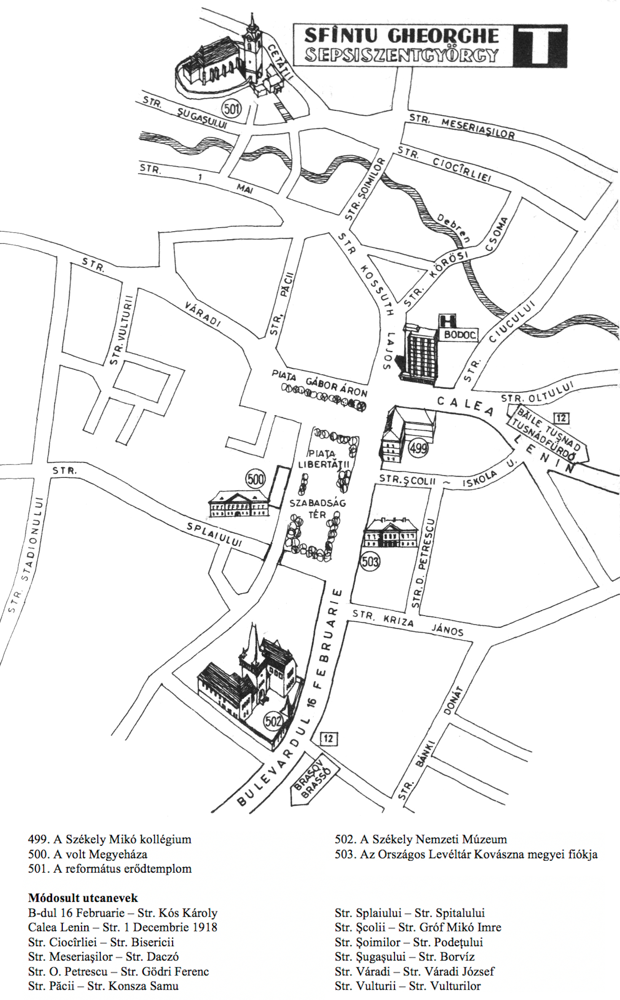
A város Kovászna megye (județul Covasna) székhelye. Lakosainak száma több mint 54 600.
Nevét már 1322-ben említik az oklevelek. 1461 óta város, 1520 óta vásártartó joga van. 1568-ban a törökök pusztították el.
1948 óta állandó magyar színtársulata van. A környékbeli székelység művelődési központja, korábban Háromszék megye székhelye volt.
A városnak két kiváló művész fia volt. Gyárfás Jenő (1857–1925) festőművész, külföldi tanulmányok után itt telepedett le és romantikus stílusú műterem-épületet épített. Diószeghy László akvarellművész és kiváló lepke-tudós, számtalan lepkefaj leírója, a Retyezát havasi lepke faunájának kutatója volt, ki gyűjteményét az itteni múzeumra hagyta.
A műemlékek a Főtér/Piața Libertății körül, a múlt század klasszicista stílusában épültek. A megyei múzeum (később Székely Nemzeti Múzeum) közelében, a textilüzemek művelődési háza előtt áll Dózsa György mellszobra. A Szemerjai városrészben érdekes a klasszicizáló Bora-kúria.
Gróf Mikó Imre utca 1. sz./Str. Gróf Mikó Imre nr. 1
A Székely Mikó kollégium kétemeletes épülete híres és nagy múltú intézmény otthona.
A városnak már a XVII. század végén volt iskolája. A Mikó-kollégium 1859-ben alakult s 1863 óta van ezen a helyen. Hajdan itt őrizték a Cserey-gyűjteményt is, míg a múzeum el nem készült.
Bővebben lásd:
WikipédiaGábor Áron utca 4. sz./Str. Gábor Áron nr. 4
A volt Megyeháza 1832-ben épült, klasszicista stílusban. Homlokzatán Háromszék címere látható. Falán emléktábla hirdeti, hogy a szabadságharc idején ez volt Háromszék Honvédelmi Bizottmányának székháza, s itt jelentette ki Gábor Áron, hogy „Lészen ágyú”. Az emléktáblán Gábor Áron domborművű képmása látható. Ma a Bod Péter Megyei Könyvtár működik benne.
Kálvin tér 1. sz./Strada Cetății nr. 1.
A református erődtemplom a XV. században épült gótikus stílusban. XVI. századi kettős védőfalrendszerét a XVII. században a törökök megrongálták. Belső fala viszonylag épen maradt. Az 1802. évi földrengés hajójának boltozatát beszakította, ezért teljesen át kellett alakítani. A késő gótikus hálóboltozat és a reneszánsz faragványok megmaradtak. A templom északkeleti falán levő oszlopfő székely férfi feje.
Bővebben lásd:
lexikon.adatbank.transindex.roKós Károly utca 10. sz./Str. Kós Károly nr. 10
A Székely Nemzeti Múzeum, épületét Kós Károly tervezte 1913-ban. Bejárati székelykapuja énlakai eredetű. Udvarán egy székely ház áll, teljes berendezéssel.
A múzeumot 1879-ben alapították. Magja az imecsfalvi kastélyban 1875-ben felállított háromszéki Cserey-gyűjtemény volt. Ma történeti, természettudományi és néprajzi részlegeinek több mint 172 000 kiállítási tárgya van. 56 000 kötetes könyvtárának a székelységre vonatkozó okiratgyűjteménye is igen gazdag.
Bővebben lásd:
lexikon.adatbank.transindex.roKós Károly utca 7. sz./Str. Kós Károly nr. 7
Az Országos Levéltár helyi fiókja a múzeum közelében áll. Falán tábla emlékezik meg a Habsburg-ellenes Makk-féle összeesküvés helyi mártírjairól, Váradi Józsefről és Bartalis Ferencről. Mindkettőt a volt görögkatolikus templommal szemben álló dombon végezték ki 1854. április 19-én.
Sugásfürdő (Băile Șugaș) Sepsiszentgyörgytől északnyugatra fekszik. Fürdőjének gyógyvize mozgásszervi és emésztőszervi zavarokat és szívbetegséget gyógyít.
Sepsiszentgyörgy mellett Kilyén (Chilieni) unitárius temploma a XV. századi gótika emléke. A református templom 1728-ból való bejárata reneszánsz jellegű. A Székely-kúria az empire stílus józan formájában épült. Nemrég középkori falképeket fedeztek fel benne.
Sepsiszentkirály (Sâncrai) unitárius temploma a XV. században épült. Védtorony jellegű tornya a templomot körítő falból emelkedik ki. A bejárat a torony aljában van.
Illyefalva (Ilieni) szép erődtemplomát érdemes megtekinteni. Kettős fal keríti. A belső, mely a XV. században épült, már romos. A dombon álló építményt impozáns ötszögletes külső bástyafal veszi körül, mely XVI– XVII. századi. A templom eredetileg gótikus volt, átalakították. Díszei: a könnyed vonalú karzat, a padfestmények késő barokk virágornamentikája. A Bornemissza-kúria termei boltozatosak, virágos-stukkós faldíszei, árkádos kőtornáca a reneszánsz formavilág tükröződései. A Bakó-ház (155. sz.) oromfala és homlokzata rokokó stílusban épült. A Séra-kúria a XIX. század eleji empire építészet remeke.
Illyefalvával délre szomszédos Aldoboly (Dobolii-de-Jos), melynek látnivalója a Hollaky-kúria a XVII–XVIII. századból. Boltozatos teremsora, nagyterme rozettadíszes gerendákkal volt díszítve. Vargha Nándor falfestményei újabb keletűek.
Illyefalvától délkeletre van Kökös (Chichiș), itt, a Feketeügy hídjánál érte Gábor Áront halálos találat. Ennek emlékét őrzi az itt felállított oszlop. Az unitárius templom XIV. századi épület. Értékes reneszánsz kőajtaja (1716), gótikus ablakának festett díszítése az itt még feltárható értékes részletekre enged következtetni. A román Szent Péter és Pál-templom a XVIII. században épült fából. Érdekes a torony nyitott árkádos kiképzése.
Cím: 1918 December 1 utca 2. sz./Str. 1 Decembrie 1918 nr. 2
Telefon: 0040-267-316474
E-mail: sepsinfo@sepsi.ro
Sepsiszentgyörgyről a Feketeügy lapályán, a Szépmezőn vezet az út. A szépmezei útnak 11. számú úttal való kereszteződésétől két úton is mehetünk Kézdivásárhely felé. Az egyik a 11. számú út, amely rövidebb és kevesebb látnivalót ígér, a másik pedig a Kovásznán átvezető útvonal. Az utóbbit választjuk főútvonalunkul, a 11. utat pedig letérésként ismertetjük.
A 11. és a kovásznai út kereszteződésétől a jobb kézre vezető elágazáson indulunk el Kézdivásárhely felé.
Réty (Reci) neve már a XIV. században szerepel. A XVII. században Háromszék több közgyűlést tartott itt. Az árkádos, sarokereszes Gazda-kúria rozettadíszes gerendáin olvasható az épület építési ideje: 1717.
Kovászna (Covasna) fürdőváros, 600 m magasságban fekszik. Gyógyvizeit régóta ismerik. 11 gyógyforrásának vize csúzos, köszvényes bajokat gyógyít. Az ún. motettákban (gőzlőkben), a feltörő gázzal telt helyiségekben állnak a gyógyulni vágyók. A gyógyító erejű gáz mintegy vállmagasságig ér, belélegzése veszélyes.
A legutóbbi adminisztratív rendezésnél Háromszék megyét Kovásznáról nevezték el. (Szláv eredetű szó, mely Ruszinföldön gyakran előfordul kvasni alakban, ami savanyúvizet, azaz borvizet jelent.)
A város főterén látható a Pokolsár iszapvulkán-maradványa, mögötte a művelődési ház és Kőrösi Csoma Sándor szobra. A városközpontban van a hatalmas kilencemeletes, lépcsős piramis alakú Szanatórium-szálló.
A város kedvelt kirándulóhelye a Tündérvölgy, tovább sikló visz fel a Komandóra. Ez egy hatalmas fakitermelési központ.
Kovásznáról az északi irányba vezető úton megyünk tovább.
Zabola (Zăbala) igen régi helység. Az egykori Basa-kúriában Bethlen Miklós is lakott. Zabolán született Mikó Imre (1805– 1876) az erdélyi reformnemzedék egyik vezetője, számos kulturális intézmény és iskola alapítója. A Mikes-kastély emeletes, manzárdteres, magas tetőzetű építmény. Tulajdonképpen a környékbeli székely kúriák felnagyítása. Kétszintes, árkádos tornácokra emlékeztető bejárati kiugró része a népi építkezésektől ihletett építészeti megoldás a XVII–XVIII. századi építkezések stílusában. Termei boltozatosak.
Zabolától kitérhetünk Gelence irányába.
Székelytamásfalván (Tămășfălău) a Thury–Bányai-udvarház a környék legmonumentálisabb empire építménye. Ma művelődési otthon.
Imecsfalva (Imeni) helységben a Cserey-udvarház jelentős épület: itt rakták le a sepsiszentgyörgyi Székely Nemzeti Múzeum alapjait. Az udvarház ma iskola.
Szentkatolna (Cătălina) községben van az empire stílusú Sinkovits-kastély, a XIX. század eleji empire építészet méltóságteljes, kissé rideg alkotása. A községhez csatolt Hatolyka gótikus, de barokkosan átépített, katolikus XV. századi templomát – egyedülállóan érdekes, 1668-ban fából épült bejárati s egyben harangtoronnyal – és a szintén ide tartozó kézdimártonfalvi templomot érdemes megnézni. Kézdimártonfalva református templomának festett kazettás mennyezete 1754-ben készült, s jól példázza a reneszánsz minták változatosságának a barokk korban való továbbélését. Hasonló a mátisfalvi templom mennyezete 1820-ból. Ez a népi művészet is bizonyítja azt a tételt, hogy Erdély területén az egyes stílusok jóval tovább éltek.
Szentkatolnán született a neves utazó és nyelvész, Bálint Gábor (1844–1913), az eszperantó nyelv magyar úttörője és Sz. Bálint Benedek (1860–1920) képzőművész. Hatolykán született Mattis-Teutsch János impresszionista festőművész.
Kézdivásárhely (Târgu Secuiesc) város 570 m magasságban fekszik. Közel 17 000 lakosa van. Régi vásárváros.
Hajdan római telep volt a helyén. 1427-ben Torjavására néven szabad királyi város. A fejedelemség idején is megtartotta jogait. Az 1848–49. évi szabadságharc alatt Gábor Áron itt öntötte a honvédek ágyúit és itt volt a magyar hadak lőpor- és fegyverraktára. A múltban is iskolaváros volt, ma is az.
A város lakói régi idők óta mesteremberek voltak, csizmadia, szíjjártó, tímár, mészáros, fazekas, szűcs stb. céhekbe tömörültek. Értékes emlékeik a helyi múzeumban láthatók. A városnak impozáns új ipari övezete van.
Zárt főterére udvarterek nyílnak, ezek védettek.
A régi városban udvarterekhez kapcsolódó házsorok épültek, melyek a régi időben tűzveszélyesek voltak. A fából való építkezés áldozata lett a város 1834-ben. Főterén állt a „Kőköböl”, erről közölték a híreket. A körülötte levő középületek tűzvészben elpusztultak. Leégett a templom is, boltozata beomlott s minden felszerelése elpusztult. 421 ház égett le és 14 ember lett a lángok áldozata.
A főtér megmaradt favázas, emeleti tornácos épületei is különlegesen érdekesek.
Alsócsernáton 330. sz./Cernat nr. 330
Az alsócsernátoni tájmúzeumot egy jellegzetes székely házban, a Damokos-kúriában rendezték be. Itt láthatók a környék múltjának emlékei és népművészeti kincsei. Megalapítójáról Haszmann-gyűjteménynek is nevezik.
Bővebben lásd:
www.sznm.roA rétyi református templom XIII. századi eredetű, Székelyföld egyik legrégibb temploma. 1857-ben megnagyobbították, de román stílusú félköríves, három támpilléres szentélye eredeti állapotban maradt. Különálló tornya valószínűleg védőtorony lehetett, legalábbis lőrései erre vallanak.
A szomszédos temetőben szép barokk sírkövek láthatók.
Bővebben lásd:
www.muemlekem.huA rétyi nyír természetvédelmi területe a Háromszéki-medencét borító őstölgyesek maradványa, hepehupás nyíres, fenyős terület tavirózsás tavacskákkal, különleges növény- és madárvilággal. Szálloda, vendéglő is van. Alkalmas központ Háromszék bejárásához.
Bővebben lásd:
Wikipédiaa község központjában
A zabolai református erődtemplom a XV. században épült, gótikus stílusban. Végleges kiépítésével 1666-ban készültek el. A falakkal övezett templomban sok reneszánsz elem is található. Hajójának festett kazettás mennyezete több mint 100 táblából áll.
Bővebben lásd:
WikipédiaGelence 527090/Ghelința 527090
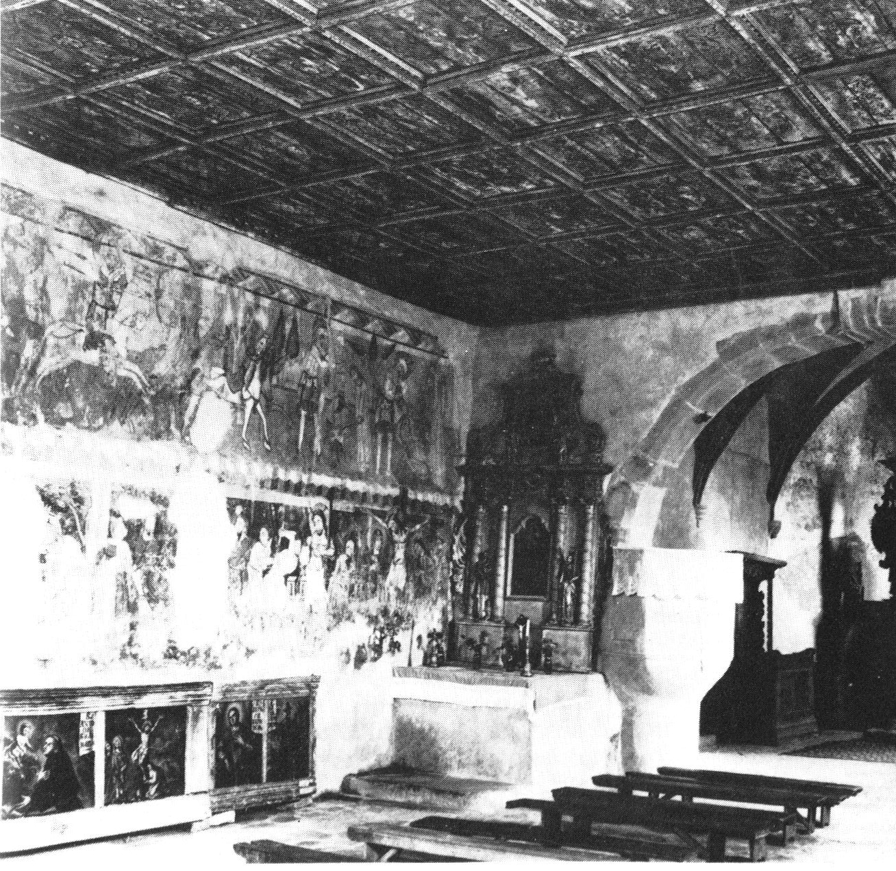
A gelencei katolikus templom a XIII. században épült, de később átalakították. Szentélyének ablakai gótikusak. Mivel hajójának boltozata beomlott, 1628-ban kazettás mennyezetet készítettek helyébe. Belső berendezése barokk stílusú. A hajó északi és nyugati oldalán XIV. századi freskók láthatók, amelyek Szent László legendáját ábrázolják. A templomot védőfal övezi.
Bővebben lásd:
Wikipédiaa főtéren, a régi Városháza épületében
A kézdivásárhelyi Incze László Céhtörténeti Múzeum kiállításain régi céhemlékek és a szabadságharc ereklyéi láthatók. Itt tekinthető meg az a kiállítás is, amely Erdély számos falvának népviseletébe öltöztetett több száz babát mutat be.
Bővebben lásd:
www.sznm.roSepsiszentgyörgytől Kézdivásárhelyre indulva, a szépmezei út és a 11. számú út kereszteződésénél kitérőt tehetünk jobb kéz felé, hogy megnézzük Uzon (Ozun) erődített templomát. Uzonban van az egykori Béldi-, később Mikes-kastély (jelenleg az állami gazdaság székháza). Árkádos tornáca méltóságteljes, boltozatos termei stukkódíszesek (XVIII. század). Az Újvárossy-kúria barokk utánérzésű, erdélyi empire stílusban épült.
Uzontól tovább délkeletre Bikkfalva (Bicfalău) református templomát lőréses várfal keríti, a védőtorony a XV. századból való gótikus boltozatú. A Dénes György-ház (156) pilléres, árkádos, barokk oromfalas kőtornáccal értékes népi építészeti alkotás. Simon István háza (39) oszlopos, árkádos kőtornácú. A ház nagykapuja hármas tagolású, barokk oromfallal, egészen eredeti megoldással.
Szentivánlaborfalva (Sântion-Lunca) katolikus temploma barokk műemlék a XVIII. századból. A Szentiványi-sírkápolna (a falu szélén) háromkaréjos oromfalú, huszártornyos barokk építmény.
Sepsiszentgyörgytől Kézdivásárhelyre indulva, a szépmezei út és a 11. számú út kereszteződésétől a 11. számú úton maradunk. Északkelet felé haladva elsőnek Eresztevény (Erestighin) községet érintjük. Református templomának kertjében van Gábor Áron síremléke. Maksa (Moacsa) 1332 óta ismert hely. 1630 és 1739 között 31 közgyűlést tartott itt Háromszék székelysége. Fallal körülvett temploma XIII. századi eredetű. Tornya a kapubástyára épült.
Dálnok (Dalnic) Dózsa György szülőfaluja. Egykori szülőháza helyére emléktáblát állítottak. A helység központjában van a nagy szülött szobra. Mögötte a református templom XV. századi eredetű, s noha később átalakították, őrzi gótikus elemeit. Nemrég 1526-ból való díszítő festést és rovásírásos feliratot tártak fel a templom hajójában. A faluban régi székely házak és faragott kapuk láthatók. A Darkó-ház XVIII. századi gazdagon díszített galambdúcos kapuja, a gyalogkapu feletti faragott napszimbólummal archaikus hatású. A Lázár-udvarház rozettás gerendáján 1753 építési év olvasható.
Itt született: Darkó Jenő (1880–1940) bizantinológus, Dálnoki Nagy Lőrinc (1614–61) héber filológus, valamint sok más kiváló székely tudós és író.
Alsócsernáton (Cernat) felett, Felsőcsernáton közelében található Ika várának romja. Az építmény a XIII–XIV. századból való, az önálló védelmi egységet képező ún. „öreg torony” maradványa. Magát a várat két évszázaddal később építették és ennek falmaradványai a templom körül láthatók. A templomban reneszánsz emlékek és 1700-ban faragott kőszószék van. Igen értékesek a Domokos-, a Bernáld- és a Rápolthy-kúriák barokk oromfalas, árkádos tornácú építményei. Az 1073., 969., 761. számú házak székelykapui a helyi mesterek művészi alkotásai. A helység Bod Péter (1712–69) szülőhelye.
Ikafalva (Icafalău) községben (Torja) felé, a stukkódíszes kőtornácú Lukács Péter-udvarház jellegzetes népi alkotás. Az út ezután befut Kézdivásárhelyre.
Rétytől 4 kilométerre délkelet felé van Egerpatak (Aninoasa), ahol Fergettyű vára állt.
Egerpataktól délre az oldalvölgyben van Szacsva (Saciova). 1791-ben épült késő barokk templomában a maksai és a barátosi díszítésekhez hasonló késő reneszánsz, festett kazettás mennyezet látható, mely szín- és mintagazdagságával tűnik ki.
Nagyborosnyó (Boroșneul-Mare) községgel közös igazgatás alá tartozik Kisborosnyó, Feldoboly, Lécfalva, Cófalva és Kispatak. A kisborosnyai Tompa-kúria árkádos pilléres tornácával, hatalmas, tört, manzárd jellegű fedélszékével tipikus kései udvarház-építmény (1806). Feldoboly református templomának festett famennyezetét Szendrey József készítette 1768-ban. Nem kazettás, hanem stukkó jellegű díszei késő barokk vonalvezetésűek. Lécfalva felett a Vár-hegyen egy neolit kori telepre épült az olaszbástyás négyszög alaprajzú vár, melynek ma már csak a sáncművei ismerhetők fel. Az udvarhelyi „Székelytámad” gúnynevű várnak ez a „Székelybánja” az ellenlábasa, legendáját Benedek Elek dolgozta fel. Cófalván a Veress-udvarház tornáca és boltozatos terme 1794-ből való székely építőművészeti emlék.
Odább északkeletre, a Feketeügy mentén, Orbaitelek (Telechia) községben van az egykori Horváth-kúria, melynek nagytermében 1848–49-ben több katonai tanácskozás volt. Érdekes a kúria hatalmas, díszes főkapuja.
Kovásznától délre van Csomakőrös (Chiuruș) Kőrösi Csoma Sándor tibeti utazó és nyelvész (1784–1842) szülőfaluja. A református templomon emléktábla s mellette egy mellszobor hirdeti emlékét.
Zágon (Zagon) Mikes Kelemen (1690–1761) szülőfaluja. A „Törökországi levelek” írójának szülőháza helyén emléktábla van. Itt vannak a legendás Mikes-tölgyek. A Szentkereszty-kúria barokk építmény oszlopos tornáccal, manzárdtetővel, mozgalmas ablakszemöldök sorral. Ma egészségügyi rendelő és szülészeti otthon.
Zágonban született Csutak Vilmos (1874–1927), a sepsiszentgyörgyi Mikó-kollégium rektora és a Székely Nemzeti Múzeum neves igazgatója.
Bodzaforduló (Intorsura Buzăului) 10 havasi helység összevonásából keletkezett faipari központ. Innen kirándulhatunk a Bodzai-szoros felé.
Szentkatolnáról délnyugati irányban, Hatolyka és Martonfalva érintésével juthatunk Márkosfalvára (Mărcuș), Barabás Miklós (1810–1898) szülőfalujába. A festőművész emlékét mellszobor őrzi. Innen Dálnok és Csernáton felé is van út.
Nyujtód (Lunga) a várostól északkeletre esik.
Északkeletre Kézdiszentlélek (Sânzieni) XV. századi katolikus temploma külsejében gótikus, belül barokk. Kerek védőtornyokkal megerősített várfal védi. A község feletti Perkő tetején áll a négykaréjos Szent István-kápolna 1676-ban készült reneszánsz bejárattal. A Könczey-ház hatalmas tetőzete, s az erdélyi empire-t képviselő Tamás-ház említhető még.
Kézdikőváron (Petriceni) kőfallal kerített, barokk templom áll.
Bélafalva (Belani) barokkosan átalakított temploma gótikus bejárójával árulja el középkori eredetét.
Esztelnek (Estelnic) faluban, a templom falában az utóbbi években gótikus ajtókat és ablakokat tártak fel. Ezt a középkori templomot ovális alaprajzú, lőréses várfal övezi. A templom közelében van az 1702-ben épített Szacsvai-ház. Szacsvai János az 1848–49 években puskaport gyártott, Szacsvai Sándor (1752–1815) a „Magyar Hírmondó” és a bécsi „Magyar Kurir” szerkesztője volt.
Torja (Turia) Kézdivásárhelytől északnyugatra, a Torjai-völgyben fekszik. Feltorján ovális alaprajzú, várfallal körített református templom van. A lőréses védőtornyot nyitott megfigyelőtornác koronázza. Az Apor-udvarház XVII. századi reneszánsz részleteket tartalmaz. Közismert 1693-ból való szép, faragott ajtókerete. Az épület külsejét a XIX. században klasszicista stílusban átalakították. A 82. számú ház galambdúcos kapuja 1806-ból való, védett.
Torján született Apor Péter (1676–1752), a XVII. század híres történész-krónikása, a „Metamorphosis Transsilvaniae” szerzője. A család későbbi tagja Apor Károly (1815–1885) Tolnai Lajossal együtt a marosvásárhelyi híres irodalmi fórum: a Kemény Zsigmond Irodalmi Társaság alapítója és első elnöke volt.
Bálványosfürdő (Băile Balvanyos) Torja közelében van, egykor fontos fürdőváros, festői környezetben, stranddal, szállodával.
A 11. számú úton mehetünk egészen a szorosig.
Bereck (Brețcu) a Háromszéki-medence legkeletibb települése. Gábor Áron szülőfaluja. 1849. július 25-én itt találkozott Petőfi Bemmel, aki Moldvából tért vissza és Fehéregyháza felé tartott. A községben emléktábla áll Gábor Áron szülőháza helyén. Itt van a Szt. Miklós-templom, valamint Beneturné várának romja (római castrum).
Lemhény (Lemnia) szomszédságában egy erődtemplom áll a Szt. Mihály-hegyen. Gótikus eredetű, de többször is átépítették. Erős fala és rondellája van. A község felett, a Lemhény-völgy ágaiban van Almás és Csomortány várának romja, romantikus, eldugott helyen.
Ojtoz (Oituz) faluban az ortodox templomot megtekinthetjük. Ojtoz közelében állt a Rákóczi-vár, mely a határt őrizte. Ma már csak csekély maradványa látható.
Sósmező (Poiana Sărată) település következik, s végül az út a moldvai Gheorghe Gheorghiu-Dejbe ér.
Az Ojtozi-szorosban az első világháború alatt súlyos harcok dúltak, melyeknek mindkét részről sok áldozata volt. A soproni 18-as honvédek sziklába vésett emlékműve ma már csak másolatban van meg az ezred székhelyének erdejében, az Ojtozi sétányon.